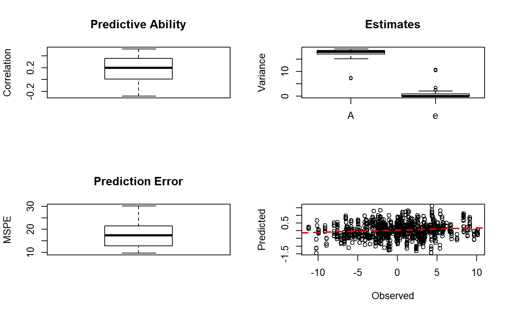
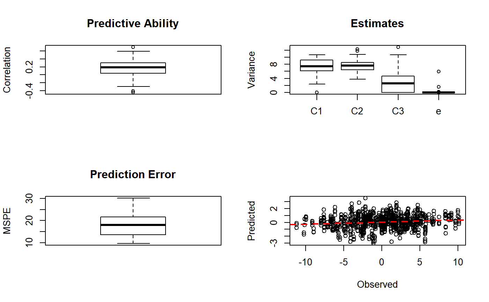
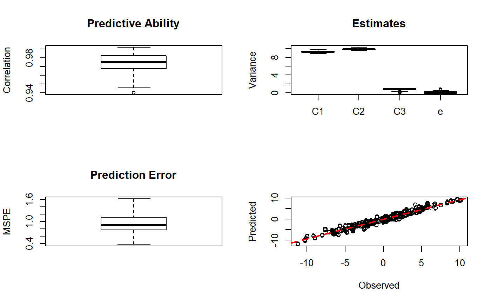
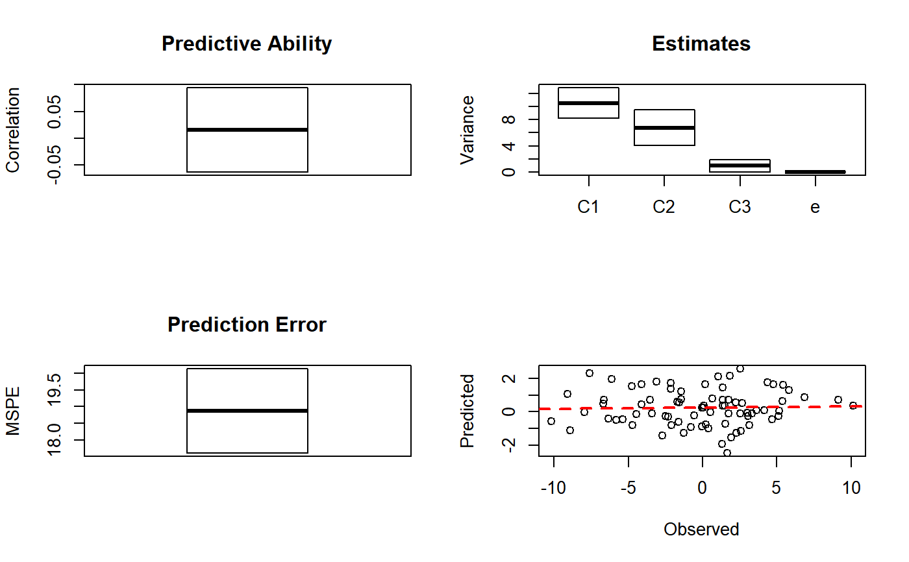
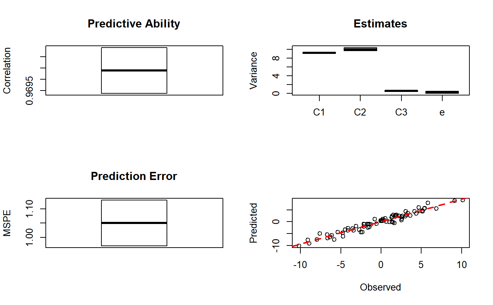
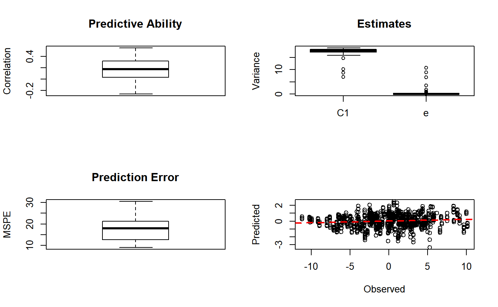
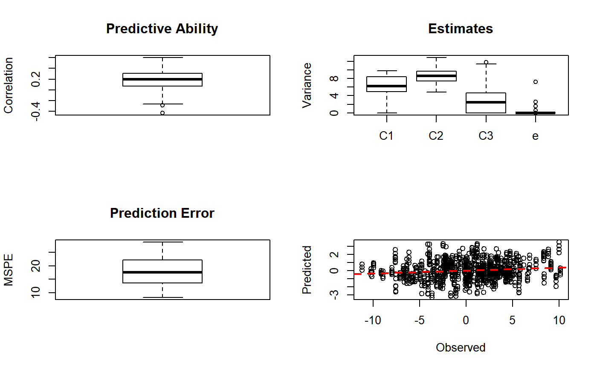
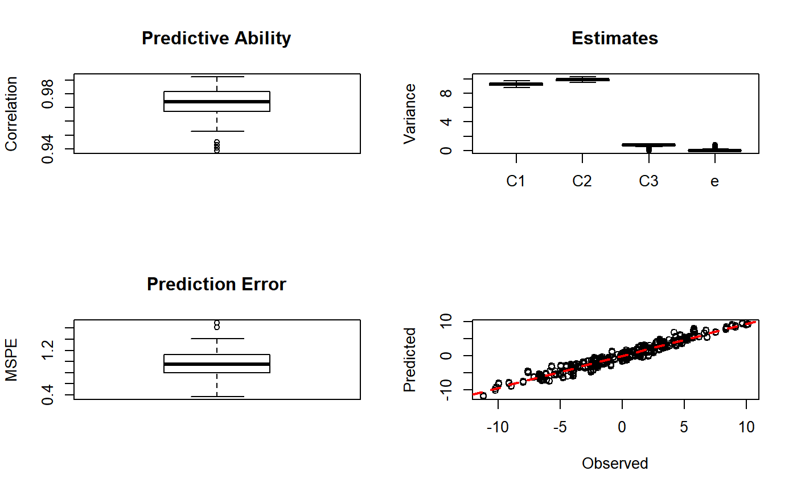

Genomic Feature Best Linear Unbiased Prediction models implemented using REML. Multiple features and multiple traits models can be fitted. Different genetic models (e.g. additive, dominance, gene by gene and gene by environment interactions) can be specified.
gfm(fm = NULL, weights = NULL, W = NULL, sets = NULL, G = NULL, data = NULL, validate = NULL, mkplots = TRUE)
Arguments
| fm | formula with model statement for the fixed factors in the linear mixed model |
|---|---|
| weights | vector of weights for the residual variance |
| W | matrix centered and scaled genotypes or other types of molecular data |
| sets | list of marker sets corresponding to column names in W |
| G | list of relationship / correlation matrices |
| data | data frame containing the phenotypic observations and fixed factors specified in the model statements |
| validate | matrix or a list with the ids of validation sets corresponding to the rows in data |
| mkplots | logical indicating whether or not to make plots |
Value
Returns results in a list structure including
matrix of predicted random effects (training set)
matrix of predicted random effects validation set
covariance of predicted random effects
single marker effects
variance of single marker effects
estimated variance components
predictive ability based on validation sets
mean squared prediction error based on validation sets
predicted phenotypes validation set
observed phenotypes validation set
fit object from regress
matrix of validation sets as provided in arguments
Details
The models are implemented using restricted maximum likelihood methods. Variance components estimated using REML and predictions are based on BLUP. First and second derivatives of log-likehood can be obtained in addition to asymtotic standard deviation of parameter estimates. Predicted random effects and single marker effects and statistics can be obtained. Covariance decomposition procedures. Cross validation procedures for assessment of prediction accuracy and model selection. Currently depend on R library regress. Plug-in avaliable for DMU. Future release may use customized REML procedures.
Examples
# Simulate data W <- matrix(rnorm(2000000), ncol = 10000) colnames(W) <- as.character(1:ncol(W)) y <- rowSums(W[, 1:10]) + rowSums(W[, 1001:1010]) + rnorm(nrow(W)) # Ex. model 1: simple data <- data.frame(y = y, mu = 1) fm <- y ~ mu # Create framework for lists setsGB <- list(A = colnames(W)) # gblup model setsGF <- list(C1 = colnames(W)[1:1000], C2 = colnames(W)[1001:2000], C3 = colnames(W)[2000:10000]) # gfblup model setsGT <- list(C1 = colnames(W)[1:10], C2 = colnames(W)[1001:1010], C3 = colnames(W)[1:10000]) # true model # REML analyses and cross validation n <- length(y) fold <- 10 nsets <- 50 # Validation sets may be inputted as matrices or lists validate <- replicate(nsets, sample(1:n, as.integer(n / fold))) # matrix input fitGB <- gfm(fm = fm, W = W, sets = setsGB, data = data, validate = validate)#> start algorithm at 8.424 8.424 #> 1 sigma = 8.423955 8.423955 resid llik = -341.3452 #> 1 adjusted sigma = 8.348637 8.348637 #> 2 sigma = 21.62227 3.245552 resid llik = -340.8592 #> 2 adjusted sigma = 14.49597 2.175877 delta.llik = 0.4860318 #> 3 sigma = 24.73252 0.06505211 resid llik = -340.7294 #> 3 adjusted sigma = 16.63634 0.04375733 delta.llik = 0.1298115 #> 4 sigma = 27.62896 2.061154e-09 resid llik = -340.727 #> 4 adjusted sigma = 16.68036 1.244375e-09 delta.llik = 0.002452761 #> Warning: solution lies close to zero for some positive variance components, their standard errors may not be valid #> start algorithm at 8.8473 8.8473 #> 1 sigma = 8.847347 8.847347 resid llik = -346.1287 #> 1 adjusted sigma = 8.805463 8.805463 #> 2 sigma = 13.7761 5.64552 resid llik = -346.0068 #> 2 adjusted sigma = 12.49763 5.121595 delta.llik = 0.1219078 #> 3 sigma = 16.29644 2.698474 resid llik = -345.9571 #> 3 adjusted sigma = 15.13489 2.506136 delta.llik = 0.0497585 #> 4 sigma = 17.51267 1.05045 resid llik = -345.9428 #> 4 adjusted sigma = 16.66038 0.9993285 delta.llik = 0.01431797 #> 5 sigma = 17.69724 0.3707345 resid llik = -345.9399 #> 5 adjusted sigma = 17.30643 0.3625473 delta.llik = 0.002831126 #> 6 sigma = 17.8072 0.09488078 resid llik = -345.9393 #> 6 adjusted sigma = 17.57946 0.09366733 delta.llik = 0.0006149031 #> Warning: solution lies close to zero for some positive variance components, their standard errors may not be valid #> start algorithm at 9.4162 9.4162 #> 1 sigma = 9.416224 9.416224 resid llik = -351.7229 #> 1 adjusted sigma = 9.376227 9.376227 #> 2 sigma = 15.24607 5.78708 resid llik = -351.5715 #> 2 adjusted sigma = 13.59883 5.161826 delta.llik = 0.1514108 #> 3 sigma = 18.99131 2.162869 resid llik = -351.4892 #> 3 adjusted sigma = 16.8653 1.920743 delta.llik = 0.08230633 #> 4 sigma = 21.35228 0.2494578 resid llik = -351.4583 #> 4 adjusted sigma = 18.589 0.2171745 delta.llik = 0.0309291 #> 5 sigma = 21.82787 2.90367e-07 resid llik = -351.4549 #> 5 adjusted sigma = 18.80908 2.502093e-07 delta.llik = 0.003319317 #> Warning: solution lies close to zero for some positive variance components, their standard errors may not be valid #> start algorithm at 9.3254 9.3254 #> 1 sigma = 9.325385 9.325385 resid llik = -350.9108 #> 1 adjusted sigma = 9.293165 9.293165 #> 2 sigma = 13.22358 6.548985 resid llik = -350.8327 #> 2 adjusted sigma = 12.4391 6.16047 delta.llik = 0.07817156 #> 3 sigma = 15.54573 3.946742 resid llik = -350.7988 #> 3 adjusted sigma = 14.85123 3.770423 delta.llik = 0.03389713 #> 4 sigma = 16.74149 2.366767 resid llik = -350.7892 #> 4 adjusted sigma = 16.33152 2.30881 delta.llik = 0.009600355 #> 5 sigma = 17.03024 1.724167 resid llik = -350.7877 #> 5 adjusted sigma = 16.93458 1.714482 delta.llik = 0.001465598 #> 6 sigma = 17.17448 1.495241 resid llik = -350.7875 #> 6 adjusted sigma = 17.15861 1.493859 delta.llik = 0.0001835013 #> start algorithm at 8.7426 8.7426 #> 1 sigma = 8.742649 8.742649 resid llik = -344.7059 #> 1 adjusted sigma = 8.667676 8.667676 #> 2 sigma = 21.21244 3.564175 resid llik = -344.2752 #> 2 adjusted sigma = 14.82489 2.490921 delta.llik = 0.4307751 #> 3 sigma = 24.01374 0.1467269 resid llik = -344.1546 #> 3 adjusted sigma = 17.22293 0.1052342 delta.llik = 0.1205168 #> 4 sigma = 26.29261 2.061154e-09 resid llik = -344.1499 #> 4 adjusted sigma = 17.32897 1.358468e-09 delta.llik = 0.004698409 #> Warning: solution lies close to zero for some positive variance components, their standard errors may not be valid #> start algorithm at 8.8236 8.8236 #> 1 sigma = 8.823622 8.823622 resid llik = -346.3004 #> 1 adjusted sigma = 8.823761 8.823761 #> 2 sigma = 8.142241 9.556848 resid llik = -346.2963 #> 2 adjusted sigma = 8.11595 9.525989 delta.llik = 0.004029762 #> 3 sigma = 7.584009 10.08863 resid llik = -346.2948 #> 3 adjusted sigma = 7.569269 10.06902 delta.llik = 0.001529837 #> 4 sigma = 7.306671 10.33825 resid llik = -346.2946 #> 4 adjusted sigma = 7.303274 10.33344 delta.llik = 0.0002446946 #> start algorithm at 8.9709 8.9709 #> 1 sigma = 8.970941 8.970941 resid llik = -347.36 #> 1 adjusted sigma = 8.928514 8.928514 #> 2 sigma = 14.25001 5.612679 resid llik = -347.2279 #> 2 adjusted sigma = 12.81734 5.04839 delta.llik = 0.1320465 #> 3 sigma = 16.93638 2.507522 resid llik = -347.1728 #> 3 adjusted sigma = 15.58187 2.30698 delta.llik = 0.05509608 #> 4 sigma = 18.28569 0.7945218 resid llik = -347.156 #> 4 adjusted sigma = 17.16269 0.745727 delta.llik = 0.01683187 #> 5 sigma = 18.49692 0.1366802 resid llik = -347.1523 #> 5 adjusted sigma = 17.78598 0.1314268 delta.llik = 0.003677886 #> 6 sigma = 18.61145 0.0003124269 resid llik = -347.1517 #> 6 adjusted sigma = 17.91912 0.0003008049 delta.llik = 0.0005678928 #> Warning: solution lies close to zero for some positive variance components, their standard errors may not be valid #> start algorithm at 9.4801 9.4801 #> 1 sigma = 9.480062 9.480062 resid llik = -352.0747 #> 1 adjusted sigma = 9.411588 9.411588 #> 2 sigma = 20.96985 4.248002 resid llik = -351.7015 #> 2 adjusted sigma = 15.6395 3.168198 delta.llik = 0.3732156 #> 3 sigma = 25.69343 0.2820762 resid llik = -351.5623 #> 3 adjusted sigma = 18.6174 0.2043917 delta.llik = 0.139205 #> 4 sigma = 28.94436 2.061154e-09 resid llik = -351.5536 #> 4 adjusted sigma = 18.82328 1.340423e-09 delta.llik = 0.008656128 #> Warning: solution lies close to zero for some positive variance components, their standard errors may not be valid #> start algorithm at 8.8349 8.8349 #> 1 sigma = 8.834906 8.834906 resid llik = -346.0847 #> 1 adjusted sigma = 8.802868 8.802868 #> 2 sigma = 12.47112 6.229258 resid llik = -346.0086 #> 2 adjusted sigma = 11.74834 5.868234 delta.llik = 0.07610351 #> 3 sigma = 14.66719 3.780502 resid llik = -345.9753 #> 3 adjusted sigma = 14.02186 3.614167 delta.llik = 0.03330514 #> 4 sigma = 15.79394 2.290917 resid llik = -345.9659 #> 4 adjusted sigma = 15.41657 2.236179 delta.llik = 0.009372927 #> 5 sigma = 16.06088 1.692914 resid llik = -345.9645 #> 5 adjusted sigma = 15.97647 1.684016 delta.llik = 0.001382994 #> 6 sigma = 16.19144 1.486209 resid llik = -345.9644 #> 6 adjusted sigma = 16.1784 1.485013 delta.llik = 0.0001631688 #> start algorithm at 9.0025 9.0025 #> 1 sigma = 9.002544 9.002544 resid llik = -348.1164 #> 1 adjusted sigma = 9.007376 9.007376 #> 2 sigma = 8.375289 9.68171 resid llik = -348.113 #> 2 adjusted sigma = 8.353122 9.656084 delta.llik = 0.003452576 #> 3 sigma = 7.803381 10.23755 resid llik = -348.1113 #> 3 adjusted sigma = 7.787847 10.21717 delta.llik = 0.001677559 #> 4 sigma = 7.452424 10.56353 resid llik = -348.1109 #> 4 adjusted sigma = 7.446967 10.5558 delta.llik = 0.0004251674 #> start algorithm at 9.3299 9.3299 #> 1 sigma = 9.329863 9.329863 resid llik = -350.3519 #> 1 adjusted sigma = 9.233361 9.233361 #> 2 sigma = 27.87769 3.083043 resid llik = -349.7436 #> 2 adjusted sigma = 16.58822 1.834521 delta.llik = 0.6083566 #> 3 sigma = 30.04645 0.009217385 resid llik = -349.6251 #> 3 adjusted sigma = 18.42139 0.005651151 delta.llik = 0.1184384 #> Warning: solution lies close to zero for some positive variance components, their standard errors may not be valid #> start algorithm at 9.004 9.004 #> 1 sigma = 9.004049 9.004049 resid llik = -347.824 #> 1 adjusted sigma = 8.977502 8.977502 #> 2 sigma = 12.38234 6.5249 resid llik = -347.7574 #> 2 adjusted sigma = 11.7665 6.200379 delta.llik = 0.0666671 #> 3 sigma = 14.70273 4.080638 resid llik = -347.7236 #> 3 adjusted sigma = 14.07934 3.907619 delta.llik = 0.03373066 #> 4 sigma = 16.05206 2.450974 resid llik = -347.7121 #> 4 adjusted sigma = 15.62043 2.385068 delta.llik = 0.01153263 #> 5 sigma = 16.46865 1.695298 resid llik = -347.7097 #> 5 adjusted sigma = 16.33404 1.681441 delta.llik = 0.002357285 #> 6 sigma = 16.69021 1.367859 resid llik = -347.7093 #> 6 adjusted sigma = 16.65527 1.364995 delta.llik = 0.0004425931 #> start algorithm at 8.9683 8.9683 #> 1 sigma = 8.968288 8.968288 resid llik = -347.3253 #> 1 adjusted sigma = 8.93022 8.93022 #> 2 sigma = 14.45866 5.537421 resid llik = -347.184 #> 2 adjusted sigma = 12.92355 4.949499 delta.llik = 0.1413053 #> 3 sigma = 17.33205 2.32158 resid llik = -347.1219 #> 3 adjusted sigma = 15.78532 2.114399 delta.llik = 0.06209491 #> 4 sigma = 18.88731 0.5652477 resid llik = -347.1013 #> 4 adjusted sigma = 17.40051 0.5207516 delta.llik = 0.02057908 #> 5 sigma = 19.16534 0.02178256 resid llik = -347.097 #> 5 adjusted sigma = 17.90866 0.02035426 delta.llik = 0.004310747 #> 6 sigma = 19.27765 2.061154e-09 resid llik = -347.0969 #> 6 adjusted sigma = 17.92934 1.916992e-09 delta.llik = 0.0001534752 #> Warning: solution lies close to zero for some positive variance components, their standard errors may not be valid #> start algorithm at 8.9503 8.9503 #> 1 sigma = 8.950268 8.950268 resid llik = -346.6568 #> 1 adjusted sigma = 8.862393 8.862393 #> 2 sigma = 26.5 2.989607 resid llik = -346.0449 #> 2 adjusted sigma = 15.89269 1.792939 delta.llik = 0.6118193 #> 3 sigma = 29.25006 0.008723946 resid llik = -345.9201 #> 3 adjusted sigma = 17.6848 0.00527456 delta.llik = 0.12486 #> Warning: solution lies close to zero for some positive variance components, their standard errors may not be valid #> start algorithm at 9.0101 9.0101 #> 1 sigma = 9.010138 9.010138 resid llik = -347.6151 #> 1 adjusted sigma = 8.958032 8.958032 #> 2 sigma = 15.72141 5.127166 resid llik = -347.4395 #> 2 adjusted sigma = 13.51898 4.408897 delta.llik = 0.1756149 #> 3 sigma = 17.66318 1.96211 resid llik = -347.3892 #> 3 adjusted sigma = 16.15947 1.79507 delta.llik = 0.05028398 #> 4 sigma = 18.41639 0.5632911 resid llik = -347.3783 #> 4 adjusted sigma = 17.43926 0.5334045 delta.llik = 0.01084643 #> 5 sigma = 18.3524 0.1033589 resid llik = -347.3766 #> 5 adjusted sigma = 17.87899 0.1006928 delta.llik = 0.00169065 #> 6 sigma = 18.35609 0.00101529 resid llik = -347.3764 #> 6 adjusted sigma = 17.98036 0.0009945086 delta.llik = 0.0002421124 #> Warning: solution lies close to zero for some positive variance components, their standard errors may not be valid #> start algorithm at 8.4364 8.4364 #> 1 sigma = 8.436421 8.436421 resid llik = -341.491 #> 1 adjusted sigma = 8.360715 8.360715 #> 2 sigma = 20.79727 3.381933 resid llik = -341.0518 #> 2 adjusted sigma = 14.36435 2.335848 delta.llik = 0.4392677 #> 3 sigma = 23.19155 0.1276629 resid llik = -340.9345 #> 3 adjusted sigma = 16.61984 0.09148745 delta.llik = 0.117241 #> 4 sigma = 25.3354 2.061154e-09 resid llik = -340.9303 #> 4 adjusted sigma = 16.712 1.3596e-09 delta.llik = 0.004225654 #> Warning: solution lies close to zero for some positive variance components, their standard errors may not be valid #> start algorithm at 8.8374 8.8374 #> 1 sigma = 8.837365 8.837365 resid llik = -345.7612 #> 1 adjusted sigma = 8.770115 8.770115 #> 2 sigma = 18.89143 4.093249 resid llik = -345.4348 #> 2 adjusted sigma = 14.41008 3.122265 delta.llik = 0.3263595 #> 3 sigma = 21.75066 0.4783721 resid llik = -345.3281 #> 3 adjusted sigma = 17.17319 0.3776978 delta.llik = 0.1067431 #> 4 sigma = 23.57917 2.599662e-07 resid llik = -345.3161 #> 4 adjusted sigma = 17.55461 1.935439e-07 delta.llik = 0.01197326 #> Warning: solution lies close to zero for some positive variance components, their standard errors may not be valid #> start algorithm at 8.849 8.849 #> 1 sigma = 8.848998 8.848998 resid llik = -346.6017 #> 1 adjusted sigma = 8.853119 8.853119 #> 2 sigma = 8.334193 9.400364 resid llik = -346.5993 #> 2 adjusted sigma = 8.318958 9.38318 delta.llik = 0.002479877 #> 3 sigma = 7.814081 9.915183 resid llik = -346.5977 #> 3 adjusted sigma = 7.800568 9.898036 delta.llik = 0.001557681 #> 4 sigma = 7.423592 10.28967 resid llik = -346.5971 #> 4 adjusted sigma = 7.416469 10.2798 delta.llik = 0.0006160907 #> start algorithm at 9.089 9.089 #> 1 sigma = 9.089041 9.089041 resid llik = -347.9782 #> 1 adjusted sigma = 8.990791 8.990791 #> 2 sigma = 27.931 2.917622 resid llik = -347.3464 #> 2 adjusted sigma = 16.23802 1.696194 delta.llik = 0.6317933 #> 3 sigma = 29.5032 0.006064363 resid llik = -347.2318 #> 3 adjusted sigma = 17.93396 0.003686312 delta.llik = 0.1145577 #> Warning: solution lies close to zero for some positive variance components, their standard errors may not be valid #> start algorithm at 9.0004 9.0004 #> 1 sigma = 9.000446 9.000446 resid llik = -347.6299 #> 1 adjusted sigma = 8.956842 8.956842 #> 2 sigma = 14.95275 5.385449 resid llik = -347.4693 #> 2 adjusted sigma = 13.17606 4.745548 delta.llik = 0.1605263 #> 3 sigma = 18.06961 1.99459 resid llik = -347.3971 #> 3 adjusted sigma = 16.16222 1.784044 delta.llik = 0.07227503 #> 4 sigma = 19.78946 0.2926749 resid llik = -347.3733 #> 4 adjusted sigma = 17.70336 0.2618228 delta.llik = 0.02372035 #> 5 sigma = 20.03982 6.859496e-05 resid llik = -347.3702 #> 5 adjusted sigma = 17.96881 6.150603e-05 delta.llik = 0.003145113 #> Warning: solution lies close to zero for some positive variance components, their standard errors may not be valid #> start algorithm at 9.4302 9.4302 #> 1 sigma = 9.430233 9.430233 resid llik = -351.5077 #> 1 adjusted sigma = 9.354244 9.354244 #> 2 sigma = 21.93342 4.015136 resid llik = -351.11 #> 2 adjusted sigma = 15.80201 2.892719 delta.llik = 0.3977106 #> 3 sigma = 25.1227 0.2379775 resid llik = -350.9899 #> 3 adjusted sigma = 18.53572 0.1755817 delta.llik = 0.1200573 #> 4 sigma = 27.53578 2.061154e-09 resid llik = -350.9832 #> 4 adjusted sigma = 18.71284 1.400724e-09 delta.llik = 0.006770922 #> Warning: solution lies close to zero for some positive variance components, their standard errors may not be valid #> start algorithm at 8.4639 8.4639 #> 1 sigma = 8.463946 8.463946 resid llik = -341.6946 #> 1 adjusted sigma = 8.382911 8.382911 #> 2 sigma = 22.15733 3.194955 resid llik = -341.2163 #> 2 adjusted sigma = 14.63518 2.110305 delta.llik = 0.4782444 #> 3 sigma = 23.50736 0.08270865 resid llik = -341.108 #> 3 adjusted sigma = 16.6987 0.05875295 delta.llik = 0.1083067 #> 4 sigma = 25.49437 2.061154e-09 resid llik = -341.1053 #> 4 adjusted sigma = 16.75793 1.354835e-09 delta.llik = 0.002746931 #> Warning: solution lies close to zero for some positive variance components, their standard errors may not be valid #> start algorithm at 9.0652 9.0652 #> 1 sigma = 9.065195 9.065195 resid llik = -347.7899 #> 1 adjusted sigma = 8.97357 8.97357 #> 2 sigma = 27.08163 2.998168 resid llik = -347.1754 #> 2 adjusted sigma = 16.11989 1.78461 delta.llik = 0.6144688 #> 3 sigma = 29.46771 0.008317366 resid llik = -347.0544 #> 3 adjusted sigma = 17.9035 0.005053327 delta.llik = 0.1210247 #> Warning: solution lies close to zero for some positive variance components, their standard errors may not be valid #> start algorithm at 9.4245 9.4245 #> 1 sigma = 9.424541 9.424541 resid llik = -351.5818 #> 1 adjusted sigma = 9.361334 9.361334 #> 2 sigma = 19.22039 4.583762 resid llik = -351.2807 #> 2 adjusted sigma = 15.11411 3.604479 delta.llik = 0.3011239 #> 3 sigma = 22.9888 0.6353503 resid llik = -351.166 #> 3 adjusted sigma = 18.23602 0.5039956 delta.llik = 0.1147139 #> 4 sigma = 25.30367 4.339556e-06 resid llik = -351.1506 #> 4 adjusted sigma = 18.74509 3.214765e-06 delta.llik = 0.01540388 #> Warning: solution lies close to zero for some positive variance components, their standard errors may not be valid #> start algorithm at 9.2764 9.2764 #> 1 sigma = 9.276397 9.276397 resid llik = -350.3174 #> 1 adjusted sigma = 9.233189 9.233189 #> 2 sigma = 15.09646 5.669586 resid llik = -350.1742 #> 2 adjusted sigma = 13.43422 5.045316 delta.llik = 0.1431179 #> 3 sigma = 17.65609 2.458766 resid llik = -350.1211 #> 3 adjusted sigma = 16.24452 2.262193 delta.llik = 0.05316164 #> 4 sigma = 18.83808 0.793369 resid llik = -350.1066 #> 4 adjusted sigma = 17.77903 0.7487668 delta.llik = 0.01449322 #> 5 sigma = 18.95794 0.1671652 resid llik = -350.1037 #> 5 adjusted sigma = 18.37515 0.1620263 delta.llik = 0.002847418 #> 6 sigma = 19.03676 0.003140483 resid llik = -350.1032 #> 6 adjusted sigma = 18.53677 0.003058001 delta.llik = 0.0005030596 #> Warning: solution lies close to zero for some positive variance components, their standard errors may not be valid #> start algorithm at 9.1153 9.1153 #> 1 sigma = 9.115296 9.115296 resid llik = -348.785 #> 1 adjusted sigma = 9.071198 9.071198 #> 2 sigma = 15.32216 5.389932 resid llik = -348.609 #> 2 adjusted sigma = 13.42415 4.722262 delta.llik = 0.1760171 #> 3 sigma = 19.25974 1.712058 resid llik = -348.5127 #> 3 adjusted sigma = 16.68576 1.483249 delta.llik = 0.09629083 #> 4 sigma = 21.85668 0.07437705 resid llik = -348.4799 #> 4 adjusted sigma = 18.12261 0.06167022 delta.llik = 0.03277167 #> 5 sigma = 22.28933 2.061154e-09 resid llik = -348.4786 #> 5 adjusted sigma = 18.18501 1.681617e-09 delta.llik = 0.00128984 #> Warning: solution lies close to zero for some positive variance components, their standard errors may not be valid #> start algorithm at 9.1449 9.1449 #> 1 sigma = 9.144933 9.144933 resid llik = -349.306 #> 1 adjusted sigma = 9.125711 9.125711 #> 2 sigma = 11.55247 7.221043 resid llik = -349.2688 #> 2 adjusted sigma = 11.2373 7.02404 delta.llik = 0.03719617 #> 3 sigma = 13.54606 5.223562 resid llik = -349.2462 #> 3 adjusted sigma = 13.19039 5.086412 delta.llik = 0.02256258 #> 4 sigma = 14.90017 3.721183 resid llik = -349.2369 #> 4 adjusted sigma = 14.63676 3.6554 delta.llik = 0.009327738 #> 5 sigma = 15.45369 2.949046 resid llik = -349.2346 #> 5 adjusted sigma = 15.36842 2.932774 delta.llik = 0.002313608 #> 6 sigma = 15.7557 2.578674 resid llik = -349.2341 #> 6 adjusted sigma = 15.73131 2.574683 delta.llik = 0.0005459828 #> start algorithm at 8.7548 8.7548 #> 1 sigma = 8.754783 8.754783 resid llik = -345.1523 #> 1 adjusted sigma = 8.7114 8.7114 #> 2 sigma = 15.19774 5.013262 resid llik = -344.9553 #> 2 adjusted sigma = 13.1035 4.322437 delta.llik = 0.1969354 #> 3 sigma = 19.22253 1.371176 resid llik = -344.8485 #> 3 adjusted sigma = 16.28596 1.161705 delta.llik = 0.106782 #> 4 sigma = 21.91318 0.0192814 resid llik = -344.8171 #> 4 adjusted sigma = 17.44427 0.01534921 delta.llik = 0.03140355 #> start algorithm at 9.4492 9.4492 #> 1 sigma = 9.449191 9.449191 resid llik = -351.7123 #> 1 adjusted sigma = 9.375574 9.375574 #> 2 sigma = 21.1171 4.18809 resid llik = -351.3515 #> 2 adjusted sigma = 15.64038 3.10191 delta.llik = 0.3607991 #> 3 sigma = 23.87314 0.3785893 resid llik = -351.2435 #> 3 adjusted sigma = 18.46944 0.2928953 delta.llik = 0.1080677 #> 4 sigma = 25.69349 2.061154e-09 resid llik = -351.2342 #> 4 adjusted sigma = 18.7653 1.505368e-09 delta.llik = 0.009270648 #> Warning: solution lies close to zero for some positive variance components, their standard errors may not be valid #> start algorithm at 9.4689 9.4689 #> 1 sigma = 9.468901 9.468901 resid llik = -352.0725 #> 1 adjusted sigma = 9.41378 9.41378 #> 2 sigma = 17.07023 5.215 resid llik = -351.8667 #> 2 adjusted sigma = 14.42718 4.407541 delta.llik = 0.2057626 #> 3 sigma = 19.95143 1.545473 resid llik = -351.7917 #> 3 adjusted sigma = 17.50584 1.356033 delta.llik = 0.07503047 #> 4 sigma = 21.38002 0.1068111 resid llik = -351.7721 #> 4 adjusted sigma = 18.7844 0.09384378 delta.llik = 0.01954846 #> 5 sigma = 21.40399 2.061154e-09 resid llik = -351.7709 #> 5 adjusted sigma = 18.87958 1.818059e-09 delta.llik = 0.001181102 #> Warning: solution lies close to zero for some positive variance components, their standard errors may not be valid #> start algorithm at 8.715 8.715 #> 1 sigma = 8.714954 8.714954 resid llik = -344.8558 #> 1 adjusted sigma = 8.684609 8.684609 #> 2 sigma = 13.19401 5.734624 resid llik = -344.7408 #> 2 adjusted sigma = 12.11399 5.265203 delta.llik = 0.1149629 #> 3 sigma = 16.40163 2.642479 resid llik = -344.673 #> 3 adjusted sigma = 14.98777 2.414692 delta.llik = 0.0678149 #> 4 sigma = 18.51764 0.6619431 resid llik = -344.6436 #> 4 adjusted sigma = 16.82313 0.6013701 delta.llik = 0.02940103 #> 5 sigma = 19.13456 0.01738195 resid llik = -344.6365 #> 5 adjusted sigma = 17.41701 0.01582171 delta.llik = 0.00715402 #> 6 sigma = 19.35601 2.061154e-09 resid llik = -344.6363 #> 6 adjusted sigma = 17.43306 1.856386e-09 delta.llik = 0.0001772595 #> Warning: solution lies close to zero for some positive variance components, their standard errors may not be valid #> start algorithm at 9.0506 9.0506 #> 1 sigma = 9.050632 9.050632 resid llik = -348.2192 #> 1 adjusted sigma = 9.016145 9.016145 #> 2 sigma = 13.16652 6.191314 resid llik = -348.1307 #> 2 adjusted sigma = 12.27278 5.771047 delta.llik = 0.08848777 #> 3 sigma = 15.53672 3.513703 resid llik = -348.0926 #> 3 adjusted sigma = 14.7333 3.332008 delta.llik = 0.03812309 #> 4 sigma = 16.75285 1.902142 resid llik = -348.0815 #> 4 adjusted sigma = 16.23998 1.84391 delta.llik = 0.01110528 #> 5 sigma = 17.03198 1.219708 resid llik = -348.0796 #> 5 adjusted sigma = 16.88397 1.209109 delta.llik = 0.001903746 #> 6 sigma = 17.18137 0.951009 resid llik = -348.0793 #> 6 adjusted sigma = 17.14791 0.9491573 delta.llik = 0.000287558 #> start algorithm at 9.51 9.51 #> 1 sigma = 9.510037 9.510037 resid llik = -352.174 #> 1 adjusted sigma = 9.424872 9.424872 #> 2 sigma = 24.70953 3.621769 resid llik = -351.6745 #> 2 adjusted sigma = 16.41693 2.406291 delta.llik = 0.4994662 #> 3 sigma = 28.018 0.06615115 resid llik = -351.5451 #> 3 adjusted sigma = 18.78922 0.04436177 delta.llik = 0.1294695 #> 4 sigma = 31.27165 2.061154e-09 resid llik = -351.5428 #> 4 adjusted sigma = 18.83387 1.241364e-09 delta.llik = 0.0022406 #> Warning: solution lies close to zero for some positive variance components, their standard errors may not be valid #> start algorithm at 9.3903 9.3903 #> 1 sigma = 9.390336 9.390336 resid llik = -351.6117 #> 1 adjusted sigma = 9.363906 9.363906 #> 2 sigma = 12.46464 7.049164 resid llik = -351.5586 #> 2 adjusted sigma = 11.9697 6.76926 delta.llik = 0.05310148 #> 3 sigma = 14.67228 4.739482 resid llik = -351.5312 #> 3 adjusted sigma = 14.17752 4.579662 delta.llik = 0.02741536 #> 4 sigma = 15.99121 3.168899 resid llik = -351.5218 #> 4 adjusted sigma = 15.66899 3.105046 delta.llik = 0.009398222 #> 5 sigma = 16.43285 2.449863 resid llik = -351.52 #> 5 adjusted sigma = 16.34598 2.436913 delta.llik = 0.001839259 #> 6 sigma = 16.65944 2.149214 resid llik = -351.5197 #> 6 adjusted sigma = 16.64024 2.146738 delta.llik = 0.0003270607 #> start algorithm at 9.3321 9.3321 #> 1 sigma = 9.332089 9.332089 resid llik = -351.0233 #> 1 adjusted sigma = 9.305749 9.305749 #> 2 sigma = 12.90792 6.726235 resid llik = -350.9551 #> 2 adjusted sigma = 12.24435 6.380456 delta.llik = 0.06816748 #> 3 sigma = 15.32781 4.165526 resid llik = -350.9211 #> 3 adjusted sigma = 14.66196 3.984573 delta.llik = 0.03404804 #> 4 sigma = 16.72441 2.470584 resid llik = -350.9095 #> 4 adjusted sigma = 16.26375 2.402534 delta.llik = 0.01154156 #> 5 sigma = 17.14969 1.686576 resid llik = -350.9072 #> 5 adjusted sigma = 17.00456 1.672303 delta.llik = 0.002355388 #> 6 sigma = 17.37696 1.346198 resid llik = -350.9067 #> 6 adjusted sigma = 17.3387 1.343234 delta.llik = 0.0004435005 #> start algorithm at 9.0412 9.0412 #> 1 sigma = 9.041245 9.041245 resid llik = -347.6093 #> 1 adjusted sigma = 8.95606 8.95606 #> 2 sigma = 25.45913 3.175884 resid llik = -347.0329 #> 2 adjusted sigma = 15.89283 1.982542 delta.llik = 0.5764074 #> 3 sigma = 29.03405 0.01698835 resid llik = -346.8996 #> 3 adjusted sigma = 17.86978 0.01045593 delta.llik = 0.1332828 #> start algorithm at 9.3118 9.3118 #> 1 sigma = 9.31179 9.31179 resid llik = -350.5623 #> 1 adjusted sigma = 9.255531 9.255531 #> 2 sigma = 18.49093 4.656698 resid llik = -350.2689 #> 2 adjusted sigma = 14.78371 3.723084 delta.llik = 0.2933962 #> 3 sigma = 23.1955 0.6369363 resid llik = -350.1359 #> 3 adjusted sigma = 18.03134 0.4951312 delta.llik = 0.1329936 #> 4 sigma = 26.27912 6.805834e-07 resid llik = -350.118 #> 4 adjusted sigma = 18.53097 4.799197e-07 delta.llik = 0.01781977 #> Warning: solution lies close to zero for some positive variance components, their standard errors may not be valid #> start algorithm at 8.5919 8.5919 #> 1 sigma = 8.591891 8.591891 resid llik = -343.4904 #> 1 adjusted sigma = 8.552049 8.552049 #> 2 sigma = 13.41595 5.469663 resid llik = -343.3688 #> 2 adjusted sigma = 12.15773 4.956689 delta.llik = 0.1215938 #> 3 sigma = 15.71787 2.658647 resid llik = -343.3224 #> 3 adjusted sigma = 14.65756 2.479297 delta.llik = 0.04638375 #> 4 sigma = 16.78792 1.123866 resid llik = -343.31 #> 4 adjusted sigma = 16.0788 1.076393 delta.llik = 0.01243163 #> 5 sigma = 16.93613 0.5013318 resid llik = -343.3078 #> 5 adjusted sigma = 16.67055 0.4934702 delta.llik = 0.002182348 #> 6 sigma = 17.0286 0.2434716 resid llik = -343.3074 #> 6 adjusted sigma = 16.92604 0.2420052 delta.llik = 0.000396822 #> start algorithm at 9.439 9.439 #> 1 sigma = 9.438995 9.438995 resid llik = -351.9166 #> 1 adjusted sigma = 9.394256 9.394256 #> 2 sigma = 15.32247 5.77924 resid llik = -351.7653 #> 2 adjusted sigma = 13.64761 5.147527 delta.llik = 0.151328 #> 3 sigma = 18.80366 2.221507 resid llik = -351.6895 #> 3 adjusted sigma = 16.83093 1.988445 delta.llik = 0.07577929 #> 4 sigma = 20.88097 0.3289007 resid llik = -351.6621 #> 4 adjusted sigma = 18.54717 0.2921406 delta.llik = 0.02738185 #> 5 sigma = 21.27995 5.439604e-05 resid llik = -351.6584 #> 5 adjusted sigma = 18.84319 4.816718e-05 delta.llik = 0.003760965 #> Warning: solution lies close to zero for some positive variance components, their standard errors may not be valid #> start algorithm at 9.1722 9.1722 #> 1 sigma = 9.172203 9.172203 resid llik = -349.3938 #> 1 adjusted sigma = 9.134983 9.134983 #> 2 sigma = 13.5284 6.18616 resid llik = -349.299 #> 2 adjusted sigma = 12.54501 5.736482 delta.llik = 0.09480787 #> 3 sigma = 15.91239 3.429547 resid llik = -349.26 #> 3 adjusted sigma = 15.05817 3.245439 delta.llik = 0.03906099 #> 4 sigma = 17.09086 1.817559 resid llik = -349.2491 #> 4 adjusted sigma = 16.56113 1.761224 delta.llik = 0.01084703 #> 5 sigma = 17.33392 1.154253 resid llik = -349.2474 #> 5 adjusted sigma = 17.18692 1.144464 delta.llik = 0.001751994 #> 6 sigma = 17.46551 0.9022649 resid llik = -349.2471 #> 6 adjusted sigma = 17.43448 0.9006621 delta.llik = 0.0002442011 #> start algorithm at 9.1048 9.1048 #> 1 sigma = 9.104812 9.104812 resid llik = -348.2942 #> 1 adjusted sigma = 9.023067 9.023067 #> 2 sigma = 23.04877 3.556416 resid llik = -347.8293 #> 2 adjusted sigma = 15.61358 2.409168 delta.llik = 0.4648634 #> 3 sigma = 25.71941 0.09921287 resid llik = -347.7086 #> 3 adjusted sigma = 17.96488 0.0692997 delta.llik = 0.1207402 #> 4 sigma = 28.27709 2.061154e-09 resid llik = -347.7054 #> 4 adjusted sigma = 18.03468 1.314571e-09 delta.llik = 0.003214858 #> Warning: solution lies close to zero for some positive variance components, their standard errors may not be valid #> start algorithm at 8.4627 8.4627 #> 1 sigma = 8.46271 8.46271 resid llik = -341.7685 #> 1 adjusted sigma = 8.387727 8.387727 #> 2 sigma = 22.74532 3.11494 resid llik = -341.2138 #> 2 adjusted sigma = 14.72251 2.016227 delta.llik = 0.5546312 #> 3 sigma = 27.72386 0.02115115 resid llik = -341.0626 #> 3 adjusted sigma = 16.72816 0.01276229 delta.llik = 0.1512545 #> start algorithm at 9.1339 9.1339 #> 1 sigma = 9.133932 9.133932 resid llik = -348.797 #> 1 adjusted sigma = 9.076093 9.076093 #> 2 sigma = 18.11601 4.571425 resid llik = -348.5194 #> 2 adjusted sigma = 14.49498 3.657686 delta.llik = 0.2775547 #> 3 sigma = 21.58404 0.7707908 resid llik = -348.4128 #> 3 adjusted sigma = 17.54924 0.6267034 delta.llik = 0.1065645 #> 4 sigma = 23.63888 0.0001709476 resid llik = -348.3953 #> 4 adjusted sigma = 18.18273 0.0001314907 delta.llik = 0.01753807 #> Warning: solution lies close to zero for some positive variance components, their standard errors may not be valid #> start algorithm at 9.187 9.187 #> 1 sigma = 9.187014 9.187014 resid llik = -349.5878 #> 1 adjusted sigma = 9.155925 9.155925 #> 2 sigma = 13.5549 6.202851 resid llik = -349.4885 #> 2 adjusted sigma = 12.5706 5.752429 delta.llik = 0.0992703 #> 3 sigma = 16.58489 3.160053 resid llik = -349.4334 #> 3 adjusted sigma = 15.41032 2.936254 delta.llik = 0.05515528 #> 4 sigma = 18.49616 1.141369 resid llik = -349.4106 #> 4 adjusted sigma = 17.30179 1.067666 delta.llik = 0.02277221 #> 5 sigma = 19.08315 0.2235713 resid llik = -349.4039 #> 5 adjusted sigma = 18.16901 0.2128616 delta.llik = 0.00667318 #> 6 sigma = 19.38943 0.0009066906 resid llik = -349.4026 #> 6 adjusted sigma = 18.38429 0.0008596879 delta.llik = 0.001287578 #> Warning: solution lies close to zero for some positive variance components, their standard errors may not be valid #> start algorithm at 9.4321 9.4321 #> 1 sigma = 9.432112 9.432112 resid llik = -351.9279 #> 1 adjusted sigma = 9.400158 9.400158 #> 2 sigma = 13.51165 6.558596 resid llik = -351.846 #> 2 adjusted sigma = 12.66606 6.148142 delta.llik = 0.08183738 #> 3 sigma = 15.9137 3.861701 resid llik = -351.8106 #> 3 adjusted sigma = 15.15881 3.678515 delta.llik = 0.03544224 #> 4 sigma = 17.14051 2.232238 resid llik = -351.8005 #> 4 adjusted sigma = 16.68404 2.172791 delta.llik = 0.01007368 #> 5 sigma = 17.42475 1.56428 resid llik = -351.7989 #> 5 adjusted sigma = 17.31189 1.554148 delta.llik = 0.00157311 #> 6 sigma = 17.56951 1.321716 resid llik = -351.7987 #> 6 adjusted sigma = 17.54949 1.32021 delta.llik = 0.0002027965 #> start algorithm at 9.1553 9.1553 #> 1 sigma = 9.155287 9.155287 resid llik = -349.251 #> 1 adjusted sigma = 9.119518 9.119518 #> 2 sigma = 13.86212 6.017416 resid llik = -349.1382 #> 2 adjusted sigma = 12.72462 5.523638 delta.llik = 0.1128368 #> 3 sigma = 16.95501 2.871663 resid llik = -349.0783 #> 3 adjusted sigma = 15.62491 2.646384 delta.llik = 0.0598923 #> 4 sigma = 18.81926 0.8956514 resid llik = -349.0549 #> 4 adjusted sigma = 17.46208 0.8310602 delta.llik = 0.02333626 #> 5 sigma = 19.30803 0.1039257 resid llik = -349.0488 #> 5 adjusted sigma = 18.2056 0.09799188 delta.llik = 0.006168538 #> 6 sigma = 19.53648 2.455236e-07 resid llik = -349.0481 #> 6 adjusted sigma = 18.30506 2.300479e-07 delta.llik = 0.000680747 #> Warning: solution lies close to zero for some positive variance components, their standard errors may not be valid #> start algorithm at 9.179 9.179 #> 1 sigma = 9.178981 9.178981 resid llik = -349.6673 #> 1 adjusted sigma = 9.164717 9.164717 #> 2 sigma = 11.19835 7.511989 resid llik = -349.6401 #> 2 adjusted sigma = 10.97638 7.363087 delta.llik = 0.0271653 #> 3 sigma = 12.93564 5.777448 resid llik = -349.6232 #> 3 adjusted sigma = 12.68719 5.666484 delta.llik = 0.01689756 #> 4 sigma = 14.14896 4.451028 resid llik = -349.6161 #> 4 adjusted sigma = 13.97201 4.395363 delta.llik = 0.007084337 #> 5 sigma = 14.66983 3.771782 resid llik = -349.6144 #> 5 adjusted sigma = 14.61702 3.758205 delta.llik = 0.00173923 #> 6 sigma = 14.94867 3.448085 resid llik = -349.614 #> 6 adjusted sigma = 14.93451 3.44482 delta.llik = 0.0004091863 #> start algorithm at 9.6247 9.6247 #> 1 sigma = 9.62466 9.62466 resid llik = -353.1701 #> 1 adjusted sigma = 9.52828 9.52828 #> 2 sigma = 27.23835 3.358478 resid llik = -352.619 #> 2 adjusted sigma = 16.93196 2.087704 delta.llik = 0.5511284 #> 3 sigma = 29.11902 0.02736135 resid llik = -352.5041 #> 3 adjusted sigma = 19.00939 0.01786196 delta.llik = 0.1148389 #> 4 sigma = 32.25678 2.061154e-09 resid llik = -352.5032 #> 4 adjusted sigma = 19.02735 1.215816e-09 delta.llik = 0.000915346 #> Warning: solution lies close to zero for some positive variance components, their standard errors may not be valid #> start algorithm at 9.3598 9.3598 #> 1 sigma = 9.359836 9.359836 resid llik = -350.8651 #> 1 adjusted sigma = 9.288989 9.288989 #> 2 sigma = 21.75011 3.99392 resid llik = -350.4548 #> 2 adjusted sigma = 15.6841 2.880033 delta.llik = 0.4102843 #> 3 sigma = 25.77211 0.2001919 resid llik = -350.3211 #> 3 adjusted sigma = 18.43634 0.1432093 delta.llik = 0.1336563 #> 4 sigma = 28.69352 2.061154e-09 resid llik = -350.3149 #> 4 adjusted sigma = 18.58071 1.334716e-09 delta.llik = 0.006276814 #> Warning: solution lies close to zero for some positive variance components, their standard errors may not be valid #> start algorithm at 9.1209 9.1209 #> 1 sigma = 9.120894 9.120894 resid llik = -348.6921 #> 1 adjusted sigma = 9.06437 9.06437 #> 2 sigma = 17.8183 4.634592 resid llik = -348.4189 #> 2 adjusted sigma = 14.38601 3.741844 delta.llik = 0.2732205 #> 3 sigma = 21.65115 0.7929777 resid llik = -348.3054 #> 3 adjusted sigma = 17.50881 0.6412636 delta.llik = 0.1135246 #> 4 sigma = 23.96977 0.0001386909 resid llik = -348.2863 #> 4 adjusted sigma = 18.1567 0.0001050561 delta.llik = 0.01912871 #> Warning: solution lies close to zero for some positive variance components, their standard errors may not be validfitGF <- gfm(fm = fm, W = W, sets = setsGF, data = data, validate = validate)#> 1 sigma = 16.84791 16.84791 16.84791 16.84791 resid llik = -341.4987 #> 1 adjusted sigma = 4.216232 4.216232 4.216232 4.216232 #> 2 sigma = 2.926436 4.955683 27.92338 0.780368 resid llik = -340.6119 #> 2 adjusted sigma = 1.332154 2.255895 12.7111 0.3552342 delta.llik = 0.8868521 #> 3 sigma = 0.5668917 5.857027 19.94888 2.853513e-09 resid llik = -340.3736 #> 3 adjusted sigma = 0.3577423 3.696131 12.58893 1.800736e-09 delta.llik = 0.2383047 #> 4 sigma = 0.007650366 3.997709 13.75209 2.061154e-09 resid llik = -340.3405 #> 4 adjusted sigma = 0.007170596 3.747005 12.88967 1.931895e-09 delta.llik = 0.03309771 #> 5 sigma = 2.061154e-09 3.923594 13.9224 2.061154e-09 resid llik = -340.3404 #> 5 adjusted sigma = 1.92213e-09 3.65895 12.98334 1.92213e-09 delta.llik = 0.0001031927 #> Warning: solution lies close to zero for some positive variance components, their standard errors may not be valid #> 1 sigma = 17.69469 17.69469 17.69469 17.69469 resid llik = -344.5741 #> 1 adjusted sigma = 4.362301 4.362301 4.362301 4.362301 #> 2 sigma = 4.662573 8.302138 4.514814 2.129935 resid llik = -344.0124 #> 2 adjusted sigma = 4.159833 7.406964 4.028006 1.900276 delta.llik = 0.5616733 #> 3 sigma = 5.541363 8.708909 4.517967 0.4531548 resid llik = -343.8976 #> 3 adjusted sigma = 5.0602 7.952705 4.125666 0.4138069 delta.llik = 0.114805 #> 4 sigma = 6.229476 9.220491 4.843818 0.0005377729 resid llik = -343.876 #> 4 adjusted sigma = 5.392469 7.981604 4.192991 0.0004655164 delta.llik = 0.02162324 #> 5 sigma = 5.994882 9.009274 2.972332 0.0004655027 resid llik = -343.8261 #> 5 adjusted sigma = 5.885253 8.844521 2.917977 0.0004569901 delta.llik = 0.04990932 #> 6 sigma = 6.281544 8.922888 2.514494 0.0004569816 resid llik = -343.8194 #> 6 adjusted sigma = 6.265122 8.899561 2.50792 0.0004557869 delta.llik = 0.006711038 #> 7 sigma = 6.365479 8.981463 2.344864 0.0004557825 resid llik = -343.8186 #> 7 adjusted sigma = 6.362915 8.977845 2.343919 0.0004555989 delta.llik = 0.0007593353 #> Warning: solution lies close to zero for some positive variance components, their standard errors may not be valid #> 1 sigma = 18.83245 18.83245 18.83245 18.83245 resid llik = -350.6035 #> 1 adjusted sigma = 4.667391 4.667391 4.667391 4.667391 #> 2 sigma = 5.317976 6.610069 6.656047 2.070201 resid llik = -350.4202 #> 2 adjusted sigma = 4.81602 5.986154 6.027793 1.874798 delta.llik = 0.1833069 #> 3 sigma = 6.114664 7.254744 8.280592 0.2111455 resid llik = -350.3556 #> 3 adjusted sigma = 5.238986 6.215795 7.094732 0.1809075 delta.llik = 0.06465542 #> 4 sigma = 6.769597 7.756075 9.386389 2.061154e-09 resid llik = -350.3584 #> 4 adjusted sigma = 5.302189 6.074832 7.351752 1.614369e-09 delta.llik = -0.002857295 #> 5 sigma = 6.193855 7.292712 5.713766 2.061154e-09 resid llik = -350.2855 #> 5 adjusted sigma = 6.064861 7.140832 5.594769 2.018227e-09 delta.llik = 0.0729735 #> 6 sigma = 6.709599 7.167326 5.018983 2.061154e-09 resid llik = -350.2712 #> 6 adjusted sigma = 6.686246 7.142379 5.001514 2.05398e-09 delta.llik = 0.01427143 #> 7 sigma = 6.872789 7.305733 4.685668 2.061154e-09 resid llik = -350.2687 #> 7 adjusted sigma = 6.867186 7.299776 4.681848 2.059473e-09 delta.llik = 0.002479786 #> 8 sigma = 6.970016 7.313029 4.57442 2.061154e-09 resid llik = -350.2683 #> 8 adjusted sigma = 6.969239 7.312213 4.57391 2.060924e-09 delta.llik = 0.0004169761 #> Warning: solution lies close to zero for some positive variance components, their standard errors may not be valid #> 1 sigma = 18.65077 18.65077 18.65077 18.65077 resid llik = -349.0981 #> 1 adjusted sigma = 4.59213 4.59213 4.59213 4.59213 #> 2 sigma = 4.872936 10.60588 3.279562 2.718342 resid llik = -347.9535 #> 2 adjusted sigma = 4.174757 9.086307 2.809677 2.328866 delta.llik = 1.144536 #> 3 sigma = 6.200756 11.45295 1.9465 0.8001213 resid llik = -347.6259 #> 3 adjusted sigma = 5.628358 10.39572 1.766816 0.7262613 delta.llik = 0.3276285 #> 4 sigma = 7.404775 12.5246 1.486991 0.01323114 resid llik = -347.5147 #> 4 adjusted sigma = 6.422205 10.86266 1.289676 0.01147544 delta.llik = 0.1111775 #> 5 sigma = 7.659965 12.74774 1.461142 2.061154e-09 resid llik = -347.5116 #> 5 adjusted sigma = 6.510782 10.83527 1.241935 1.75193e-09 delta.llik = 0.003104811 #> 6 sigma = 7.343466 12.45034 0.2305031 2.061154e-09 resid llik = -347.4316 #> 6 adjusted sigma = 6.848511 11.61118 0.214967 1.92223e-09 delta.llik = 0.08005819 #> 7 sigma = 7.629825 12.47175 0.0002750776 2.061154e-09 resid llik = -347.4206 #> 7 adjusted sigma = 7.092773 11.59389 0.0002557153 1.916072e-09 delta.llik = 0.01093872 #> 8 sigma = 6.916712 11.78188 0.0002557152 2.061154e-09 resid llik = -347.4191 #> 8 adjusted sigma = 6.91532 11.7795 0.0002556638 2.060739e-09 delta.llik = 0.001519456 #> 9 sigma = 6.937522 11.75626 0.0002556638 2.061154e-09 resid llik = -347.4191 #> 9 adjusted sigma = 6.937499 11.75622 0.0002556629 2.061147e-09 delta.llik = 2.348622e-05 #> Warning: solution lies close to zero for some positive variance components, their standard errors may not be valid #> 1 sigma = 17.4853 17.4853 17.4853 17.4853 resid llik = -343.4162 #> 1 adjusted sigma = 4.308001 4.308001 4.308001 4.308001 #> 2 sigma = 4.559618 7.486259 9.777056 1.06123 resid llik = -343.0801 #> 2 adjusted sigma = 3.430406 5.63225 7.355719 0.7984109 delta.llik = 0.3361131 #> 3 sigma = 4.725275 7.824775 11.06205 0.0005643674 resid llik = -343.0473 #> 3 adjusted sigma = 3.446286 5.706846 8.067886 0.0004116102 delta.llik = 0.03273786 #> 4 sigma = 4.284322 7.539781 6.10451 0.0004116074 resid llik = -342.9146 #> 4 adjusted sigma = 4.134438 7.276007 5.890948 0.0003972076 delta.llik = 0.1327349 #> 5 sigma = 5.019551 7.272654 5.168017 0.0003972054 resid llik = -342.8854 #> 5 adjusted sigma = 4.980766 7.216459 5.128085 0.0003941363 delta.llik = 0.02921929 #> 6 sigma = 5.197067 7.520738 4.668564 0.0003941342 resid llik = -342.8789 #> 6 adjusted sigma = 5.186932 7.506071 4.659459 0.0003933656 delta.llik = 0.006424914 #> 7 sigma = 5.356088 7.529691 4.48223 0.0003933646 resid llik = -342.8776 #> 7 adjusted sigma = 5.354101 7.526897 4.480567 0.0003932187 delta.llik = 0.001382146 #> 8 sigma = 5.413847 7.572453 4.382784 0.0003932181 resid llik = -342.8773 #> 8 adjusted sigma = 5.413342 7.571746 4.382375 0.0003931814 delta.llik = 0.0002987143 #> Warning: solution lies close to zero for some positive variance components, their standard errors may not be valid #> 1 sigma = 17.64724 17.64724 17.64724 17.64724 resid llik = -345.0052 #> 1 adjusted sigma = 4.383337 4.383337 4.383337 4.383337 #> 2 sigma = 6.278748 5.285334 2.064296 5.487609 resid llik = -344.6796 #> 2 adjusted sigma = 5.763475 4.851587 1.894887 5.037262 delta.llik = 0.3256329 #> 3 sigma = 7.623431 6.179711 0.4398653 5.1542 resid llik = -344.4653 #> 3 adjusted sigma = 6.921391 5.610622 0.3993582 4.67955 delta.llik = 0.2142102 #> 4 sigma = 8.595907 6.983582 0.002862046 4.122223 resid llik = -344.3563 #> 4 adjusted sigma = 7.713397 6.266603 0.00256821 3.69901 delta.llik = 0.1090714 #> 5 sigma = 8.928586 7.275011 0.002567283 2.197354 resid llik = -344.271 #> 5 adjusted sigma = 8.628133 7.030202 0.002480893 2.123412 delta.llik = 0.08523105 #> 6 sigma = 9.345994 7.662489 0.00247926 1.207699 resid llik = -344.2385 #> 6 adjusted sigma = 9.160101 7.51008 0.002429947 1.183678 delta.llik = 0.03254612 #> 7 sigma = 9.600053 7.910004 0.002426777 0.6260045 resid llik = -344.2259 #> 7 adjusted sigma = 9.475794 7.80762 0.002395365 0.6179018 delta.llik = 0.01262432 #> 8 sigma = 9.753253 8.065109 0.002388127 0.2826801 resid llik = -344.2209 #> 8 adjusted sigma = 9.6617 7.989402 0.00236571 0.2800266 delta.llik = 0.004947455 #> 9 sigma = 9.844695 8.159861 0.002342997 0.08920998 resid llik = -344.219 #> 9 adjusted sigma = 9.765679 8.094368 0.002324192 0.08849396 delta.llik = 0.001924726 #> 10 sigma = 9.896573 8.214303 0.002172635 0.006762124 resid llik = -344.2184 #> 10 adjusted sigma = 9.808404 8.141122 0.002153278 0.00670188 delta.llik = 0.000626081 #> Warning: solution lies close to zero for some positive variance components, their standard errors may not be valid #> 1 sigma = 17.94188 17.94188 17.94188 17.94188 resid llik = -344.836 #> 1 adjusted sigma = 4.374121 4.374121 4.374121 4.374121 #> 2 sigma = 8.718576 7.859765 2.693945 2.080101 resid llik = -343.5076 #> 2 adjusted sigma = 7.141141 6.437712 2.206535 1.703752 delta.llik = 1.328424 #> 3 sigma = 11.32018 9.333211 1.228907 0.1604445 resid llik = -342.8795 #> 3 adjusted sigma = 9.030585 7.445494 0.9803506 0.1279933 delta.llik = 0.628167 #> 4 sigma = 12.94671 10.34611 0.5899164 2.061154e-09 resid llik = -342.746 #> 4 adjusted sigma = 9.551957 7.633262 0.4352346 1.520699e-09 delta.llik = 0.1334296 #> 5 sigma = 12.36834 9.756023 4.708567e-05 2.061154e-09 resid llik = -342.6664 #> 5 adjusted sigma = 9.865168 7.781549 3.755623e-05 1.644007e-09 delta.llik = 0.07958865 #> 6 sigma = 10.1223 7.537011 3.755622e-05 2.061154e-09 resid llik = -342.6633 #> 6 adjusted sigma = 10.11817 7.53393 3.754087e-05 2.060311e-09 delta.llik = 0.003134528 #> 7 sigma = 10.08512 7.566238 3.754087e-05 2.061154e-09 resid llik = -342.6632 #> 7 adjusted sigma = 10.08505 7.566185 3.754061e-05 2.061139e-09 delta.llik = 5.311497e-05 #> Warning: solution lies close to zero for some positive variance components, their standard errors may not be valid #> 1 sigma = 18.96012 18.96012 18.96012 18.96012 resid llik = -350.1021 #> 1 adjusted sigma = 4.643007 4.643007 4.643007 4.643007 #> 2 sigma = 8.254261 7.122514 7.966306 1.036511 resid llik = -349.5362 #> 2 adjusted sigma = 6.291449 5.428825 6.071968 0.7900355 delta.llik = 0.5659198 #> 3 sigma = 10.20521 8.620153 10.39962 1.667798e-05 resid llik = -349.4698 #> 3 adjusted sigma = 6.490399 5.482323 6.614043 1.060701e-05 delta.llik = 0.06639731 #> 4 sigma = 9.921548 8.157918 3.251919 1.0607e-05 resid llik = -349.0159 #> 4 adjusted sigma = 8.711689 7.163121 2.855371 9.313559e-06 delta.llik = 0.4538964 #> 5 sigma = 10.16006 7.89587 1.47362 9.313543e-06 resid llik = -348.9349 #> 5 adjusted sigma = 9.799092 7.615347 1.421265 8.982653e-06 delta.llik = 0.08105454 #> 6 sigma = 10.37621 7.948975 0.8013748 8.982626e-06 resid llik = -348.9199 #> 6 adjusted sigma = 10.24837 7.851042 0.7915018 8.871959e-06 delta.llik = 0.01499816 #> 7 sigma = 10.49054 7.967021 0.5259681 8.871926e-06 resid llik = -348.9173 #> 7 adjusted sigma = 10.45349 7.938886 0.5241107 8.840596e-06 delta.llik = 0.002582405 #> 8 sigma = 10.54262 7.977312 0.4203268 8.840569e-06 resid llik = -348.9169 #> 8 adjusted sigma = 10.53512 7.971641 0.420028 8.834284e-06 delta.llik = 0.0003535685 #> Warning: solution lies close to zero for some positive variance components, their standard errors may not be valid #> 1 sigma = 17.66981 17.66981 17.66981 17.66981 resid llik = -344.7883 #> 1 adjusted sigma = 4.375873 4.375873 4.375873 4.375873 #> 2 sigma = 6.040605 5.173092 3.731468 3.206361 resid llik = -344.5567 #> 2 adjusted sigma = 5.842197 5.003179 3.608906 3.101046 delta.llik = 0.2315599 #> 3 sigma = 7.403658 5.757312 3.131919 1.933063 resid llik = -344.421 #> 3 adjusted sigma = 7.165281 5.571943 3.03108 1.870824 delta.llik = 0.1357795 #> 4 sigma = 8.308331 6.114183 2.87908 0.9230486 resid llik = -344.3692 #> 4 adjusted sigma = 8.076569 5.943627 2.798768 0.8973001 delta.llik = 0.05178654 #> 5 sigma = 8.637491 6.22549 2.890594 0.3480777 resid llik = -344.3569 #> 5 adjusted sigma = 8.47214 6.106313 2.835259 0.3414143 delta.llik = 0.01222222 #> 6 sigma = 8.791155 6.28113 2.941476 0.06744988 resid llik = -344.3536 #> 6 adjusted sigma = 8.641125 6.173936 2.891277 0.06629878 delta.llik = 0.00330884 #> 7 sigma = 8.857744 6.30737 2.973716 0.0001560401 resid llik = -344.3531 #> 7 adjusted sigma = 8.680651 6.181267 2.914263 0.0001529204 delta.llik = 0.0005451034 #> Warning: solution lies close to zero for some positive variance components, their standard errors may not be valid #> 1 sigma = 18.00509 18.00509 18.00509 18.00509 resid llik = -347.0703 #> 1 adjusted sigma = 4.489493 4.489493 4.489493 4.489493 #> 2 sigma = 4.678831 5.849226 2.547556 5.883607 resid llik = -346.9294 #> 2 adjusted sigma = 4.434434 5.543693 2.414485 5.576278 delta.llik = 0.1409314 #> 3 sigma = 4.923584 6.287551 0.9991032 6.69336 resid llik = -346.8831 #> 3 adjusted sigma = 4.686125 5.984309 0.9509175 6.370547 delta.llik = 0.04628086 #> 4 sigma = 5.233933 6.416672 0.200255 6.989623 resid llik = -346.8662 #> 4 adjusted sigma = 5.003604 6.134295 0.1914424 6.682032 delta.llik = 0.01688368 #> 5 sigma = 5.349602 6.441825 0.002562489 6.910052 resid llik = -346.8617 #> 5 adjusted sigma = 5.154496 6.206885 0.002469032 6.658034 delta.llik = 0.004553527 #> 6 sigma = 5.409691 6.463289 0.002468967 6.200489 resid llik = -346.857 #> 6 adjusted sigma = 5.401167 6.453105 0.002465077 6.190719 delta.llik = 0.004675552 #> 7 sigma = 5.553013 6.493635 0.002465048 6.013109 resid llik = -346.856 #> 7 adjusted sigma = 5.551488 6.491852 0.002464371 6.011457 delta.llik = 0.0009477878 #> Warning: solution lies close to zero for some positive variance components, their standard errors may not be valid #> 1 sigma = 18.65973 18.65973 18.65973 18.65973 resid llik = -349.7226 #> 1 adjusted sigma = 4.622718 4.622718 4.622718 4.622718 #> 2 sigma = 4.610777 6.053282 18.32912 0.9084366 resid llik = -349.4235 #> 2 adjusted sigma = 2.837062 3.724652 11.27811 0.5589711 delta.llik = 0.2990787 #> 3 sigma = 3.266641 6.414683 19.61555 1.363855e-07 resid llik = -349.3651 #> 3 adjusted sigma = 2.051157 4.027845 12.3168 8.563784e-08 delta.llik = 0.05845901 #> 4 sigma = 2.018406 5.183397 11.39279 8.563784e-08 resid llik = -349.336 #> 4 adjusted sigma = 1.999528 5.134917 11.28624 8.483688e-08 delta.llik = 0.02907227 #> 5 sigma = 2.368307 5.01481 11.06832 8.483688e-08 resid llik = -349.3314 #> 5 adjusted sigma = 2.363908 5.005495 11.04776 8.46793e-08 delta.llik = 0.004627267 #> 6 sigma = 2.471547 5.114871 10.84052 8.46793e-08 resid llik = -349.3302 #> 6 adjusted sigma = 2.470794 5.113311 10.83722 8.465348e-08 delta.llik = 0.001118647 #> 7 sigma = 2.554473 5.140146 10.73026 8.465348e-08 resid llik = -349.3299 #> 7 adjusted sigma = 2.554191 5.13958 10.72908 8.464416e-08 delta.llik = 0.0003763462 #> Warning: solution lies close to zero for some positive variance components, their standard errors may not be valid #> 1 sigma = 18.0081 18.0081 18.0081 18.0081 resid llik = -347.6755 #> 1 adjusted sigma = 4.518589 4.518589 4.518589 4.518589 #> 2 sigma = 4.433584 4.123823 8.958146 2.542783 resid llik = -347.5607 #> 2 adjusted sigma = 3.984636 3.706242 8.051038 2.285299 delta.llik = 0.1148273 #> 3 sigma = 3.880343 3.879358 10.22241 0.9667889 resid llik = -347.5385 #> 3 adjusted sigma = 3.692145 3.691208 9.726623 0.9198993 delta.llik = 0.02218593 #> 4 sigma = 3.720254 3.94011 10.99974 0.1917063 resid llik = -347.5331 #> 4 adjusted sigma = 3.559396 3.769746 10.52413 0.1834173 delta.llik = 0.005407825 #> 5 sigma = 3.694176 3.933735 11.16995 0.001340853 resid llik = -347.5324 #> 5 adjusted sigma = 3.544734 3.774602 10.71809 0.001286611 delta.llik = 0.0006994374 #> Warning: solution lies close to zero for some positive variance components, their standard errors may not be valid #> 1 sigma = 17.93658 17.93658 17.93658 17.93658 resid llik = -345.8851 #> 1 adjusted sigma = 4.43063 4.43063 4.43063 4.43063 #> 2 sigma = 4.298381 9.148229 4.742994 2.125158 resid llik = -345.1667 #> 2 adjusted sigma = 3.757966 7.998064 4.146679 1.857972 delta.llik = 0.7184669 #> 3 sigma = 5.154138 9.415225 4.62243 0.4116975 resid llik = -345.0388 #> 3 adjusted sigma = 4.684677 8.557646 4.2014 0.3741983 delta.llik = 0.1278641 #> 4 sigma = 6.082427 10.13749 4.905724 8.290745e-05 resid llik = -345.0089 #> 4 adjusted sigma = 5.134557 8.557692 4.141229 6.998736e-05 delta.llik = 0.02991708 #> 5 sigma = 5.831165 9.974769 2.657606 6.998695e-05 resid llik = -344.9186 #> 5 adjusted sigma = 5.663985 9.688791 2.581412 6.798041e-05 delta.llik = 0.0902989 #> 6 sigma = 6.439701 9.97094 1.791762 6.797989e-05 resid llik = -344.8891 #> 6 adjusted sigma = 6.361891 9.850464 1.770113 6.715851e-05 delta.llik = 0.0295148 #> 7 sigma = 6.679923 10.19526 1.261332 6.71578e-05 resid llik = -344.8788 #> 7 adjusted sigma = 6.638356 10.13182 1.253483 6.67399e-05 delta.llik = 0.01022522 #> 8 sigma = 6.864385 10.26232 0.9667616 6.673915e-05 resid llik = -344.8755 #> 8 adjusted sigma = 6.846529 10.23562 0.9642468 6.656554e-05 delta.llik = 0.003368651 #> 9 sigma = 6.961882 10.32316 0.7953534 6.656481e-05 resid llik = -344.8744 #> 9 adjusted sigma = 6.954303 10.31193 0.7944876 6.649235e-05 delta.llik = 0.00107268 #> 10 sigma = 7.020916 10.35297 0.7015505 6.649179e-05 resid llik = -344.8741 #> 10 adjusted sigma = 7.018254 10.34905 0.7012845 6.646657e-05 delta.llik = 0.0003210842 #> Warning: solution lies close to zero for some positive variance components, their standard errors may not be valid #> 1 sigma = 17.90054 17.90054 17.90054 17.90054 resid llik = -345.4143 #> 1 adjusted sigma = 4.407591 4.407591 4.407591 4.407591 #> 2 sigma = 7.354576 5.115958 16.0355 0.6475304 resid llik = -345.2061 #> 2 adjusted sigma = 4.438226 3.0873 9.676853 0.3907617 delta.llik = 0.2082516 #> 3 sigma = 8.608561 5.636099 16.31486 2.061154e-09 resid llik = -345.0875 #> 3 adjusted sigma = 4.956521 3.245077 9.393549 1.186743e-09 delta.llik = 0.1185433 #> 4 sigma = 7.915893 4.563189 6.595588 2.061154e-09 resid llik = -344.7524 #> 4 adjusted sigma = 7.334936 4.228291 6.111529 1.909883e-09 delta.llik = 0.3351567 #> 5 sigma = 8.473923 4.871342 4.726336 2.061154e-09 resid llik = -344.682 #> 5 adjusted sigma = 8.322984 4.784573 4.64215 2.02444e-09 delta.llik = 0.07038099 #> 6 sigma = 8.873515 5.007781 3.990081 2.061154e-09 resid llik = -344.6665 #> 6 adjusted sigma = 8.835554 4.986358 3.973011 2.052336e-09 delta.llik = 0.01553604 #> 7 sigma = 9.075303 5.081506 3.676896 2.061154e-09 resid llik = -344.6634 #> 7 adjusted sigma = 9.066902 5.076803 3.673493 2.059246e-09 delta.llik = 0.003048361 #> 8 sigma = 9.168498 5.114154 3.547493 2.061154e-09 resid llik = -344.6629 #> 8 adjusted sigma = 9.16692 5.113274 3.546883 2.060799e-09 delta.llik = 0.0005448446 #> Warning: solution lies close to zero for some positive variance components, their standard errors may not be valid #> 1 sigma = 18.02028 18.02028 18.02028 18.02028 resid llik = -346.4444 #> 1 adjusted sigma = 4.457403 4.457403 4.457403 4.457403 #> 2 sigma = 6.935602 4.905077 5.825862 2.038877 resid llik = -346.1479 #> 2 adjusted sigma = 6.288798 4.447637 5.282551 1.848735 delta.llik = 0.2965294 #> 3 sigma = 8.17077 5.551836 5.996325 0.3343033 resid llik = -346.0108 #> 3 adjusted sigma = 7.304998 4.963565 5.360956 0.2988806 delta.llik = 0.1370416 #> 4 sigma = 8.92207 6.203671 5.894331 1.692623e-05 resid llik = -345.9683 #> 4 adjusted sigma = 7.621539 5.299389 5.03514 1.445896e-05 delta.llik = 0.04252762 #> 5 sigma = 8.722346 5.95545 3.698851 1.445896e-05 resid llik = -345.9029 #> 5 adjusted sigma = 8.560337 5.844833 3.630149 1.419039e-05 delta.llik = 0.06538304 #> 6 sigma = 9.001882 6.201304 2.971762 1.419039e-05 resid llik = -345.8888 #> 6 adjusted sigma = 8.955091 6.169071 2.956315 1.411663e-05 delta.llik = 0.01411995 #> 7 sigma = 9.151253 6.308283 2.663278 1.411662e-05 resid llik = -345.8862 #> 7 adjusted sigma = 9.140963 6.30119 2.660284 1.410075e-05 delta.llik = 0.00264009 #> 8 sigma = 9.216968 6.357667 2.540555 1.410075e-05 resid llik = -345.8857 #> 8 adjusted sigma = 9.215161 6.35642 2.540057 1.409798e-05 delta.llik = 0.0004195729 #> Warning: solution lies close to zero for some positive variance components, their standard errors may not be valid #> 1 sigma = 16.87284 16.87284 16.87284 16.87284 resid llik = -340.439 #> 1 adjusted sigma = 4.16492 4.16492 4.16492 4.16492 #> 2 sigma = 4.398998 6.383264 12.34191 0.8884375 resid llik = -340.2225 #> 2 adjusted sigma = 3.044939 4.418426 8.542934 0.6149668 delta.llik = 0.2164576 #> 3 sigma = 4.284749 7.062658 12.80622 1.797778e-05 resid llik = -340.1516 #> 3 adjusted sigma = 2.949598 4.861896 8.815733 1.237581e-05 delta.llik = 0.07090831 #> 4 sigma = 3.828426 6.527352 6.91801 1.237581e-05 resid llik = -340.021 #> 4 adjusted sigma = 3.697825 6.304681 6.682013 1.195363e-05 delta.llik = 0.1306543 #> 5 sigma = 4.30366 6.485631 6.005562 1.195362e-05 resid llik = -340.003 #> 5 adjusted sigma = 4.281621 6.452419 5.974808 1.189241e-05 delta.llik = 0.01797412 #> 6 sigma = 4.426421 6.629293 5.680265 1.189241e-05 resid llik = -340.0003 #> 6 adjusted sigma = 4.423081 6.624291 5.675979 1.188344e-05 delta.llik = 0.002672577 #> 7 sigma = 4.500602 6.661475 5.568203 1.188344e-05 resid llik = -339.9999 #> 7 adjusted sigma = 4.5001 6.660732 5.567582 1.188211e-05 delta.llik = 0.0003914534 #> Warning: solution lies close to zero for some positive variance components, their standard errors may not be valid #> 1 sigma = 17.67473 17.67473 17.67473 17.67473 resid llik = -344.5562 #> 1 adjusted sigma = 4.362393 4.362393 4.362393 4.362393 #> 2 sigma = 4.670223 6.816039 8.173678 1.424573 resid llik = -344.2966 #> 2 adjusted sigma = 3.86604 5.64236 6.766222 1.179271 delta.llik = 0.259532 #> 3 sigma = 4.840125 7.478486 10.0858 0.01664206 resid llik = -344.2561 #> 3 adjusted sigma = 3.769415 5.82413 7.854663 0.01296058 delta.llik = 0.04054569 #> 4 sigma = 5.172105 8.004245 11.12701 2.061154e-09 resid llik = -344.2654 #> 4 adjusted sigma = 3.715364 5.749822 7.99305 1.480623e-09 delta.llik = -0.009273719 #> 5 sigma = 4.417751 7.273506 6.288448 2.061154e-09 resid llik = -344.1724 #> 5 adjusted sigma = 4.307128 7.091374 6.130982 2.009541e-09 delta.llik = 0.09300064 #> 6 sigma = 4.98881 7.073281 5.565109 2.061154e-09 resid llik = -344.1546 #> 6 adjusted sigma = 4.966548 7.041718 5.540276 2.051956e-09 delta.llik = 0.01773592 #> 7 sigma = 5.154154 7.230429 5.199934 2.061154e-09 resid llik = -344.1513 #> 7 adjusted sigma = 5.149046 7.223264 5.194781 2.059111e-09 delta.llik = 0.003383337 #> 8 sigma = 5.263778 7.245723 5.066951 2.061154e-09 resid llik = -344.1506 #> 8 adjusted sigma = 5.26288 7.244487 5.066086 2.060802e-09 delta.llik = 0.0006505644 #> Warning: solution lies close to zero for some positive variance components, their standard errors may not be valid #> 1 sigma = 17.698 17.698 17.698 17.698 resid llik = -345.233 #> 1 adjusted sigma = 4.391415 4.391415 4.391415 4.391415 #> 2 sigma = 6.174583 5.542067 2.150864 5.146276 resid llik = -344.9022 #> 2 adjusted sigma = 5.710184 5.125241 1.989095 4.759218 delta.llik = 0.3308137 #> 3 sigma = 7.438489 6.512725 0.4760119 4.999352 resid llik = -344.702 #> 3 adjusted sigma = 6.755252 5.914521 0.4322894 4.540154 delta.llik = 0.2001861 #> 4 sigma = 8.307817 7.238508 0.002433303 4.341492 resid llik = -344.6163 #> 4 adjusted sigma = 7.391644 6.440257 0.002164963 3.86272 delta.llik = 0.08574542 #> 5 sigma = 8.542693 7.454563 0.002164373 2.371759 resid llik = -344.5365 #> 5 adjusted sigma = 8.274464 7.2205 0.002096414 2.297289 delta.llik = 0.0797169 #> 6 sigma = 8.924165 7.822487 0.002095486 1.412484 resid llik = -344.5084 #> 6 adjusted sigma = 8.776821 7.693332 0.002060889 1.389163 delta.llik = 0.02814393 #> 7 sigma = 9.153924 8.050627 0.002059433 0.8616472 resid llik = -344.4984 #> 7 adjusted sigma = 9.071017 7.977713 0.00204078 0.8538433 delta.llik = 0.009999916 #> 8 sigma = 9.290267 8.190364 0.002038544 0.5390941 resid llik = -344.4949 #> 8 adjusted sigma = 9.243775 8.149377 0.002028343 0.5363963 delta.llik = 0.003535693 #> 9 sigma = 9.371385 8.274827 0.002025053 0.348797 resid llik = -344.4936 #> 9 adjusted sigma = 9.345886 8.252311 0.002019543 0.347848 delta.llik = 0.001237575 #> 10 sigma = 9.419583 8.325586 0.002015031 0.2364093 resid llik = -344.4932 #> 10 adjusted sigma = 9.406181 8.313741 0.002012164 0.2360729 delta.llik = 0.0004261184 #> Warning: solution lies close to zero for some positive variance components, their standard errors may not be valid #> 1 sigma = 18.17808 18.17808 18.17808 18.17808 resid llik = -346.7397 #> 1 adjusted sigma = 4.470667 4.470667 4.470667 4.470667 #> 2 sigma = 5.599551 6.905323 16.2836 0.6554614 resid llik = -346.5817 #> 2 adjusted sigma = 3.393594 4.184954 9.868638 0.3972408 delta.llik = 0.1579694 #> 3 sigma = 5.576551 7.911214 16.47411 2.061154e-09 resid llik = -346.4997 #> 3 adjusted sigma = 3.321625 4.712247 9.812661 1.227708e-09 delta.llik = 0.08202107 #> 4 sigma = 4.856957 6.724248 7.331558 2.061154e-09 resid llik = -346.2808 #> 4 adjusted sigma = 4.598777 6.366809 6.941836 1.951589e-09 delta.llik = 0.2189258 #> 5 sigma = 5.866898 6.615199 5.747342 2.061154e-09 resid llik = -346.2151 #> 5 adjusted sigma = 5.777833 6.514773 5.660091 2.029863e-09 delta.llik = 0.06565102 #> 6 sigma = 6.26201 6.958597 4.87242 2.061154e-09 resid llik = -346.1949 #> 6 adjusted sigma = 6.228156 6.920977 4.846078 2.05001e-09 delta.llik = 0.02021298 #> 7 sigma = 6.571068 7.029274 4.446805 2.061154e-09 resid llik = -346.1887 #> 7 adjusted sigma = 6.560675 7.018157 4.439772 2.057894e-09 delta.llik = 0.006208621 #> 8 sigma = 6.727603 7.110474 4.204841 2.061154e-09 resid llik = -346.1869 #> 8 adjusted sigma = 6.724037 7.106705 4.202612 2.060061e-09 delta.llik = 0.00185296 #> 9 sigma = 6.819889 7.144973 4.079208 2.061154e-09 resid llik = -346.1863 #> 9 adjusted sigma = 6.818848 7.143882 4.078586 2.060839e-09 delta.llik = 0.0005409371 #> Warning: solution lies close to zero for some positive variance components, their standard errors may not be valid #> 1 sigma = 18.00089 18.00089 18.00089 18.00089 resid llik = -346.4786 #> 1 adjusted sigma = 4.45717 4.45717 4.45717 4.45717 #> 2 sigma = 6.008173 5.52909 6.350751 1.912895 resid llik = -346.2877 #> 2 adjusted sigma = 5.420635 4.988402 5.729712 1.725833 delta.llik = 0.1909135 #> 3 sigma = 7.180011 6.277879 7.552396 0.1589985 resid llik = -346.1861 #> 3 adjusted sigma = 6.070743 5.307986 6.385597 0.1344342 delta.llik = 0.1016086 #> 4 sigma = 7.954563 6.825742 8.251667 2.061154e-09 resid llik = -346.1756 #> 4 adjusted sigma = 6.183228 5.305775 6.414173 1.602173e-09 delta.llik = 0.01046824 #> 5 sigma = 7.433543 6.319147 4.71718 2.061154e-09 resid llik = -346.0787 #> 5 adjusted sigma = 7.237556 6.152542 4.59281 2.006811e-09 delta.llik = 0.09690261 #> 6 sigma = 7.901811 6.339165 3.883551 2.061154e-09 resid llik = -346.0594 #> 6 adjusted sigma = 7.859733 6.305408 3.86287 2.050178e-09 delta.llik = 0.01933372 #> 7 sigma = 8.098701 6.436453 3.535706 2.061154e-09 resid llik = -346.0561 #> 7 adjusted sigma = 8.089496 6.429137 3.531687 2.058811e-09 delta.llik = 0.003293056 #> 8 sigma = 8.192836 6.459572 3.409819 2.061154e-09 resid llik = -346.0556 #> 8 adjusted sigma = 8.191466 6.458492 3.409249 2.060809e-09 delta.llik = 0.000510161 #> Warning: solution lies close to zero for some positive variance components, their standard errors may not be valid #> 1 sigma = 18.86047 18.86047 18.86047 18.86047 resid llik = -350.4982 #> 1 adjusted sigma = 4.663202 4.663202 4.663202 4.663202 #> 2 sigma = 6.236691 5.604227 11.6994 1.184327 resid llik = -350.3563 #> 2 adjusted sigma = 4.701906 4.225085 8.820302 0.8928765 delta.llik = 0.1419845 #> 3 sigma = 6.757613 6.119061 13.38115 0.000448687 resid llik = -350.3118 #> 3 adjusted sigma = 4.798764 4.345311 9.502316 0.0003186248 delta.llik = 0.04451012 #> 4 sigma = 6.354363 5.590645 7.404835 0.0003186238 resid llik = -350.1736 #> 4 adjusted sigma = 6.143139 5.404807 7.158692 0.0003080325 delta.llik = 0.1381219 #> 5 sigma = 6.969317 5.766033 6.161199 0.0003080312 resid llik = -350.1418 #> 5 adjusted sigma = 6.916498 5.722334 6.114505 0.0003056966 delta.llik = 0.03178135 #> 6 sigma = 7.26475 5.935538 5.615056 0.0003056957 resid llik = -350.1348 #> 6 adjusted sigma = 7.251197 5.924465 5.604581 0.0003051254 delta.llik = 0.007051265 #> 7 sigma = 7.420333 6.002144 5.378402 0.0003051249 resid llik = -350.1333 #> 7 adjusted sigma = 7.417413 5.999782 5.376286 0.0003050048 delta.llik = 0.001481799 #> 8 sigma = 7.491085 6.036956 5.273153 0.0003050046 resid llik = -350.133 #> 8 adjusted sigma = 7.490472 6.036462 5.272722 0.0003049796 delta.llik = 0.0002967682 #> Warning: solution lies close to zero for some positive variance components, their standard errors may not be valid #> 1 sigma = 16.92789 16.92789 16.92789 16.92789 resid llik = -340.655 #> 1 adjusted sigma = 4.177506 4.177506 4.177506 4.177506 #> 2 sigma = 4.261289 6.752085 11.68087 0.929142 resid llik = -340.3683 #> 2 adjusted sigma = 3.007507 4.765447 8.244055 0.6557643 delta.llik = 0.2866856 #> 3 sigma = 3.715856 7.353453 12.54291 6.831233e-05 resid llik = -340.3064 #> 3 adjusted sigma = 2.624623 5.19397 8.859446 4.82511e-05 delta.llik = 0.06190221 #> 4 sigma = 3.109366 6.808637 7.239256 4.825108e-05 resid llik = -340.2076 #> 4 adjusted sigma = 3.03308 6.641593 7.061647 4.706728e-05 delta.llik = 0.09880634 #> 5 sigma = 3.710728 6.713633 6.426037 4.706727e-05 resid llik = -340.1868 #> 5 adjusted sigma = 3.688854 6.674058 6.388158 4.678982e-05 delta.llik = 0.02087013 #> 6 sigma = 3.915145 6.879699 5.996586 4.678981e-05 resid llik = -340.1816 #> 6 adjusted sigma = 3.909785 6.870281 5.988377 4.672576e-05 delta.llik = 0.005152202 #> 7 sigma = 4.049813 6.931352 5.801064 4.672575e-05 resid llik = -340.1803 #> 7 adjusted sigma = 4.048388 6.928913 5.799022 4.670931e-05 delta.llik = 0.001321221 #> 8 sigma = 4.116598 6.964807 5.700889 4.670931e-05 resid llik = -340.1799 #> 8 adjusted sigma = 4.116217 6.964162 5.700361 4.670498e-05 delta.llik = 0.0003437121 #> Warning: solution lies close to zero for some positive variance components, their standard errors may not be valid #> 1 sigma = 18.13039 18.13039 18.13039 18.13039 resid llik = -346.7008 #> 1 adjusted sigma = 4.468973 4.468973 4.468973 4.468973 #> 2 sigma = 6.555393 5.509857 19.68462 0.5786825 resid llik = -346.5865 #> 2 adjusted sigma = 3.615819 3.039123 10.85763 0.3191893 delta.llik = 0.1143354 #> 3 sigma = 7.554559 5.941068 17.75648 2.061154e-09 resid llik = -346.4441 #> 3 adjusted sigma = 4.309832 3.389345 10.12997 1.175876e-09 delta.llik = 0.1423769 #> 4 sigma = 6.637566 4.767046 7.573421 2.061154e-09 resid llik = -346.199 #> 4 adjusted sigma = 6.254627 4.492023 7.13649 1.94224e-09 delta.llik = 0.2451739 #> 5 sigma = 7.227416 5.029484 5.905923 2.061154e-09 resid llik = -346.1465 #> 5 adjusted sigma = 7.13792 4.967204 5.832791 2.035631e-09 delta.llik = 0.05243071 #> 6 sigma = 7.617774 5.1961 5.215935 2.061154e-09 resid llik = -346.1336 #> 6 adjusted sigma = 7.593401 5.179476 5.199247 2.054559e-09 delta.llik = 0.01288266 #> 7 sigma = 7.828646 5.282656 4.8939 2.061154e-09 resid llik = -346.1305 #> 7 adjusted sigma = 7.822354 5.27841 4.889967 2.059497e-09 delta.llik = 0.003107862 #> 8 sigma = 7.936458 5.325457 4.741727 2.061154e-09 resid llik = -346.1298 #> 8 adjusted sigma = 7.934931 5.324433 4.740815 2.060757e-09 delta.llik = 0.0007283212 #> Warning: solution lies close to zero for some positive variance components, their standard errors may not be valid #> 1 sigma = 18.84908 18.84908 18.84908 18.84908 resid llik = -350.222 #> 1 adjusted sigma = 4.647133 4.647133 4.647133 4.647133 #> 2 sigma = 5.6533 7.336412 8.324512 1.390007 resid llik = -349.9438 #> 2 adjusted sigma = 4.633092 6.012465 6.822251 1.139163 delta.llik = 0.2781943 #> 3 sigma = 6.610062 8.172943 9.842483 0.006937613 resid llik = -349.8711 #> 3 adjusted sigma = 4.99705 6.178551 7.440683 0.005244671 delta.llik = 0.07272839 #> 4 sigma = 6.401831 8.022394 5.153094 0.005243818 resid llik = -349.7038 #> 4 adjusted sigma = 6.118585 7.667447 4.925097 0.005011808 delta.llik = 0.1672596 #> 5 sigma = 6.935985 8.02362 3.975189 0.005010983 resid llik = -349.6748 #> 5 adjusted sigma = 6.873587 7.951436 3.939427 0.004965903 delta.llik = 0.0290091 #> 6 sigma = 7.107397 8.184856 3.530834 0.004965365 resid llik = -349.6704 #> 6 adjusted sigma = 7.095497 8.171152 3.524922 0.004957051 delta.llik = 0.004393716 #> 7 sigma = 7.202941 8.218762 3.383504 0.004956825 resid llik = -349.6699 #> 7 adjusted sigma = 7.201374 8.216973 3.382768 0.004955747 delta.llik = 0.0005630452 #> Warning: solution lies close to zero for some positive variance components, their standard errors may not be valid #> 1 sigma = 18.55279 18.55279 18.55279 18.55279 resid llik = -347.9503 #> 1 adjusted sigma = 4.534252 4.534252 4.534252 4.534252 #> 2 sigma = 6.887554 10.02683 3.05685 2.10001 resid llik = -346.7156 #> 2 adjusted sigma = 5.666749 8.249594 2.51503 1.727788 delta.llik = 1.234706 #> 3 sigma = 9.453931 10.97898 2.185619 0.1226228 resid llik = -346.2631 #> 3 adjusted sigma = 7.580445 8.803271 1.752495 0.09832261 delta.llik = 0.4524854 #> 4 sigma = 10.65695 12.30561 1.90531 2.061154e-09 resid llik = -346.1888 #> 4 adjusted sigma = 7.823868 9.034239 1.398795 1.513209e-09 delta.llik = 0.07429374 #> 5 sigma = 10.04806 11.57073 0.08826153 2.061154e-09 resid llik = -346.001 #> 5 adjusted sigma = 8.488291 9.774602 0.07456064 1.7412e-09 delta.llik = 0.1878027 #> 6 sigma = 10.31866 11.43228 2.061154e-09 2.061154e-09 resid llik = -345.9923 #> 6 adjusted sigma = 8.700917 9.639941 1.738009e-09 1.738009e-09 delta.llik = 0.008721576 #> 7 sigma = 8.578491 9.765182 2.061154e-09 2.061154e-09 resid llik = -345.9916 #> 7 adjusted sigma = 8.57771 9.764292 2.060966e-09 2.060966e-09 delta.llik = 0.0007056255 #> Warning: solution lies close to zero for some positive variance components, their standard errors may not be valid #> 1 sigma = 18.23059 18.23059 18.23059 18.23059 resid llik = -347.6517 #> 1 adjusted sigma = 4.517469 4.517469 4.517469 4.517469 #> 2 sigma = 5.525203 6.237023 6.456549 1.915315 resid llik = -347.4489 #> 2 adjusted sigma = 4.968738 5.608868 5.806285 1.722416 delta.llik = 0.2028203 #> 3 sigma = 6.451102 7.251681 8.031771 0.1280366 resid llik = -347.36 #> 3 adjusted sigma = 5.351045 6.015108 6.662175 0.1062035 delta.llik = 0.08881513 #> 4 sigma = 7.118934 7.917131 9.027449 2.061154e-09 resid llik = -347.3613 #> 4 adjusted sigma = 5.364684 5.966189 6.802902 1.553243e-09 delta.llik = -0.001279323 #> 5 sigma = 6.479101 7.316486 4.976336 2.061154e-09 resid llik = -347.2454 #> 5 adjusted sigma = 6.288203 7.100915 4.829715 2.000424e-09 delta.llik = 0.115908 #> 6 sigma = 7.03106 7.486711 3.913492 2.061154e-09 resid llik = -347.2157 #> 6 adjusted sigma = 6.971024 7.422785 3.880076 2.043554e-09 delta.llik = 0.02967698 #> 7 sigma = 7.285076 7.658223 3.40707 2.061154e-09 resid llik = -347.2087 #> 7 adjusted sigma = 7.267555 7.639804 3.398875 2.056196e-09 delta.llik = 0.007013952 #> 8 sigma = 7.422339 7.731245 3.178654 2.061154e-09 resid llik = -347.2072 #> 8 adjusted sigma = 7.418225 7.72696 3.176892 2.060011e-09 delta.llik = 0.001506936 #> 9 sigma = 7.486178 7.768095 3.077272 2.061154e-09 resid llik = -347.2069 #> 9 adjusted sigma = 7.485308 7.767193 3.076915 2.060914e-09 delta.llik = 0.0002991172 #> Warning: solution lies close to zero for some positive variance components, their standard errors may not be valid #> 1 sigma = 18.28987 18.28987 18.28987 18.28987 resid llik = -347.9884 #> 1 adjusted sigma = 4.535079 4.535079 4.535079 4.535079 #> 2 sigma = 4.868627 7.526646 3.577444 3.300622 resid llik = -347.5719 #> 2 adjusted sigma = 4.595664 7.104659 3.376872 3.11557 delta.llik = 0.4165053 #> 3 sigma = 5.820298 8.564919 2.782659 1.846684 resid llik = -347.4205 #> 3 adjusted sigma = 5.598176 8.238054 2.676463 1.776209 delta.llik = 0.1514275 #> 4 sigma = 6.715522 9.203239 2.559397 0.6861905 resid llik = -347.3583 #> 4 adjusted sigma = 6.437105 8.821685 2.453287 0.6577419 delta.llik = 0.06220449 #> 5 sigma = 7.031838 9.444264 2.657297 0.09360189 resid llik = -347.3433 #> 5 adjusted sigma = 6.730612 9.039696 2.543465 0.08959222 delta.llik = 0.01498713 #> 6 sigma = 7.157205 9.534913 2.771393 7.537906e-07 resid llik = -347.343 #> 6 adjusted sigma = 6.767533 9.015787 2.620506 7.127507e-07 delta.llik = 0.0003115004 #> Warning: solution lies close to zero for some positive variance components, their standard errors may not be valid #> 1 sigma = 17.50957 17.50957 17.50957 17.50957 resid llik = -343.8241 #> 1 adjusted sigma = 4.326248 4.326248 4.326248 4.326248 #> 2 sigma = 5.308411 6.683286 7.045293 1.440658 resid llik = -343.5329 #> 2 adjusted sigma = 4.4917 5.655046 5.961358 1.219009 delta.llik = 0.2912237 #> 3 sigma = 6.360348 7.818374 9.063347 0.01124375 resid llik = -343.4577 #> 3 adjusted sigma = 4.742696 5.829896 6.75823 0.008384081 delta.llik = 0.07521217 #> 4 sigma = 6.165341 7.707625 4.499542 0.008381347 resid llik = -343.2574 #> 4 adjusted sigma = 5.847564 7.310355 4.267625 0.007949351 delta.llik = 0.2002703 #> 5 sigma = 6.602937 7.905486 3.215097 0.007946121 resid llik = -343.2171 #> 5 adjusted sigma = 6.515516 7.80082 3.172531 0.007840917 delta.llik = 0.04025414 #> 6 sigma = 6.778535 8.11619 2.684838 0.007838341 resid llik = -343.2092 #> 6 adjusted sigma = 6.756849 8.090224 2.676249 0.007813265 delta.llik = 0.007954819 #> 7 sigma = 6.8811 8.201598 2.467214 0.007811774 resid llik = -343.2078 #> 7 adjusted sigma = 6.876706 8.196361 2.465639 0.007806786 delta.llik = 0.001378251 #> 8 sigma = 6.921699 8.24335 2.381916 0.007806098 resid llik = -343.2076 #> 8 adjusted sigma = 6.920941 8.242448 2.381655 0.007805244 delta.llik = 0.0002134567 #> Warning: solution lies close to zero for some positive variance components, their standard errors may not be valid #> 1 sigma = 18.89838 18.89838 18.89838 18.89838 resid llik = -349.976 #> 1 adjusted sigma = 4.63597 4.63597 4.63597 4.63597 #> 2 sigma = 6.800496 7.689948 8.609277 1.067061 resid llik = -349.5676 #> 2 adjusted sigma = 5.222508 5.905571 6.611579 0.8194597 delta.llik = 0.4083882 #> 3 sigma = 8.409236 8.8834 10.08216 9.514761e-05 resid llik = -349.4616 #> 3 adjusted sigma = 5.704258 6.025899 6.839058 6.454172e-05 delta.llik = 0.1060069 #> 4 sigma = 8.15313 8.662544 3.791544 6.454148e-05 resid llik = -349.1108 #> 4 adjusted sigma = 7.396406 7.858539 3.439636 5.855113e-05 delta.llik = 0.3507486 #> 5 sigma = 8.860669 8.404972 2.071641 5.855073e-05 resid llik = -349.029 #> 5 adjusted sigma = 8.607261 8.164596 2.012394 5.687622e-05 delta.llik = 0.08182745 #> 6 sigma = 9.157896 8.623089 1.282507 5.687563e-05 resid llik = -349.0098 #> 6 adjusted sigma = 9.051694 8.52309 1.267634 5.621606e-05 delta.llik = 0.01921514 #> 7 sigma = 9.35287 8.666294 0.9222155 5.621542e-05 resid llik = -349.0054 #> 7 adjusted sigma = 9.31877 8.634697 0.9188532 5.601046e-05 delta.llik = 0.004417973 #> 8 sigma = 9.443397 8.709538 0.753716 5.600991e-05 resid llik = -349.0045 #> 8 adjusted sigma = 9.43363 8.700529 0.7529364 5.595198e-05 delta.llik = 0.0008860209 #> Warning: solution lies close to zero for some positive variance components, their standard errors may not be valid #> 1 sigma = 18.9378 18.9378 18.9378 18.9378 resid llik = -351.0514 #> 1 adjusted sigma = 4.692546 4.692546 4.692546 4.692546 #> 2 sigma = 4.962333 6.973554 7.619389 1.877502 resid llik = -350.835 #> 2 adjusted sigma = 4.350791 6.114156 6.6804 1.646125 delta.llik = 0.2163484 #> 3 sigma = 5.299691 7.727937 9.073383 0.1274835 resid llik = -350.7756 #> 3 adjusted sigma = 4.486192 6.541705 7.680626 0.1079149 delta.llik = 0.05945335 #> 4 sigma = 5.763206 8.198101 9.749547 2.061154e-09 resid llik = -350.7725 #> 4 adjusted sigma = 4.573894 6.506316 7.737601 1.635808e-09 delta.llik = 0.00306554 #> 5 sigma = 5.257492 7.722803 6.229484 2.061154e-09 resid llik = -350.707 #> 5 adjusted sigma = 5.16862 7.592258 6.124182 2.026312e-09 delta.llik = 0.0654934 #> 6 sigma = 5.760533 7.757812 5.469779 2.061154e-09 resid llik = -350.6924 #> 6 adjusted sigma = 5.738262 7.727818 5.448631 2.053185e-09 delta.llik = 0.01462019 #> 7 sigma = 5.952825 7.9001 5.099552 2.061154e-09 resid llik = -350.6891 #> 7 adjusted sigma = 5.947112 7.892518 5.094658 2.059176e-09 delta.llik = 0.003265723 #> 8 sigma = 6.063601 7.945041 4.938306 2.061154e-09 resid llik = -350.6884 #> 8 adjusted sigma = 6.062351 7.943404 4.937288 2.060729e-09 delta.llik = 0.0007112218 #> Warning: solution lies close to zero for some positive variance components, their standard errors may not be valid #> 1 sigma = 17.42991 17.42991 17.42991 17.42991 resid llik = -343.4903 #> 1 adjusted sigma = 4.313813 4.313813 4.313813 4.313813 #> 2 sigma = 4.900656 7.051552 4.765988 2.157519 resid llik = -343.1359 #> 2 adjusted sigma = 4.493402 6.465554 4.369925 1.978225 delta.llik = 0.354414 #> 3 sigma = 5.896745 7.740553 4.971465 0.4756816 resid llik = -343.0149 #> 3 adjusted sigma = 5.365645 7.043387 4.523701 0.4328385 delta.llik = 0.1209919 #> 4 sigma = 6.685311 8.256153 5.763757 0.0002372681 resid llik = -343.0041 #> 4 adjusted sigma = 5.608589 6.926434 4.835458 0.0001990542 delta.llik = 0.01075555 #> 5 sigma = 6.332719 7.999932 3.485167 0.0001990522 resid llik = -342.9407 #> 5 adjusted sigma = 6.202624 7.835587 3.41357 0.000194963 delta.llik = 0.06337221 #> 6 sigma = 6.648869 7.978775 2.91631 0.0001949616 resid llik = -342.9314 #> 6 adjusted sigma = 6.626259 7.951642 2.906393 0.0001942986 delta.llik = 0.009333552 #> 7 sigma = 6.738705 8.055797 2.712869 0.0001942979 resid llik = -342.9303 #> 7 adjusted sigma = 6.735304 8.051732 2.7115 0.0001941999 delta.llik = 0.001087089 #> 8 sigma = 6.780838 8.067462 2.655112 0.0001941996 resid llik = -342.9302 #> 8 adjusted sigma = 6.780526 8.06709 2.654989 0.0001941907 delta.llik = 0.000106339 #> Warning: solution lies close to zero for some positive variance components, their standard errors may not be valid #> 1 sigma = 18.10126 18.10126 18.10126 18.10126 resid llik = -346.3838 #> 1 adjusted sigma = 4.452315 4.452315 4.452315 4.452315 #> 2 sigma = 4.813528 9.639978 3.018654 2.898279 resid llik = -345.4681 #> 2 adjusted sigma = 4.219292 8.449911 2.645998 2.540482 delta.llik = 0.9156216 #> 3 sigma = 6.093545 10.08219 1.752319 1.261429 resid llik = -345.2248 #> 3 adjusted sigma = 5.702583 9.435316 1.63989 1.180496 delta.llik = 0.2433127 #> 4 sigma = 7.034113 10.83165 1.002103 0.3276919 resid llik = -345.1219 #> 4 adjusted sigma = 6.618563 10.19176 0.9429027 0.308333 delta.llik = 0.1029289 #> 5 sigma = 7.384542 10.98102 0.633693 0.01235968 resid llik = -345.0949 #> 5 adjusted sigma = 7.034191 10.46004 0.6036282 0.01177329 delta.llik = 0.02701363 #> 6 sigma = 7.532198 11.06959 0.4516095 2.061154e-09 resid llik = -345.0887 #> 6 adjusted sigma = 7.164907 10.5298 0.4295878 1.960646e-09 delta.llik = 0.006144897 #> 7 sigma = 7.492744 11.01321 0.07963595 2.061154e-09 resid llik = -345.0791 #> 7 adjusted sigma = 7.319752 10.75894 0.07779731 2.013566e-09 delta.llik = 0.009621066 #> 8 sigma = 7.595835 11.02932 0.000140363 2.061154e-09 resid llik = -345.0776 #> 8 adjusted sigma = 7.406898 10.75498 0.0001368717 2.009885e-09 delta.llik = 0.001524151 #> 9 sigma = 7.360652 10.80307 0.0001368717 2.061154e-09 resid llik = -345.0775 #> 9 adjusted sigma = 7.36055 10.80292 0.0001368698 2.061125e-09 delta.llik = 9.094254e-05 #> Warning: solution lies close to zero for some positive variance components, their standard errors may not be valid #> 1 sigma = 19.02007 19.02007 19.02007 19.02007 resid llik = -350.7135 #> 1 adjusted sigma = 4.676402 4.676402 4.676402 4.676402 #> 2 sigma = 5.422097 7.995234 10.87114 1.048563 resid llik = -350.3901 #> 2 adjusted sigma = 4.000889 5.899571 8.021664 0.7737202 delta.llik = 0.3233669 #> 3 sigma = 5.761732 8.826992 13.19834 4.10736e-05 resid llik = -350.367 #> 3 adjusted sigma = 3.876942 5.939487 8.880867 2.763751e-05 delta.llik = 0.02317368 #> 4 sigma = 5.054379 8.424019 6.343484 2.76375e-05 resid llik = -350.1836 #> 4 adjusted sigma = 4.793815 7.989743 6.016464 2.621273e-05 delta.llik = 0.1833266 #> 5 sigma = 5.794821 7.869323 5.300226 2.621272e-05 resid llik = -350.1527 #> 5 adjusted sigma = 5.751202 7.810088 5.260329 2.60154e-05 delta.llik = 0.03091787 #> 6 sigma = 5.998183 8.064829 4.81531 2.60154e-05 resid llik = -350.1479 #> 6 adjusted sigma = 5.98856 8.051891 4.807585 2.597366e-05 delta.llik = 0.004870938 #> 7 sigma = 6.129068 8.058822 4.67103 2.597366e-05 resid llik = -350.1471 #> 7 adjusted sigma = 6.127851 8.057222 4.670103 2.59685e-05 delta.llik = 0.0007659442 #> Warning: solution lies close to zero for some positive variance components, their standard errors may not be valid #> 1 sigma = 18.78067 18.78067 18.78067 18.78067 resid llik = -349.8899 #> 1 adjusted sigma = 4.632287 4.632287 4.632287 4.632287 #> 2 sigma = 6.266479 7.936153 2.970608 3.219245 resid llik = -349.2523 #> 2 adjusted sigma = 5.710126 7.231561 2.70687 2.933432 delta.llik = 0.6375991 #> 3 sigma = 8.452588 8.995764 1.552068 1.435648 resid llik = -348.8727 #> 3 adjusted sigma = 7.734877 8.231932 1.420282 1.313746 delta.llik = 0.3796699 #> 4 sigma = 10.03394 10.03977 0.935316 0.1574193 resid llik = -348.6997 #> 4 adjusted sigma = 8.918161 8.923349 0.8313086 0.1399142 delta.llik = 0.1729355 #> 5 sigma = 10.57927 10.29352 1.021659 2.061154e-09 resid llik = -348.6911 #> 5 adjusted sigma = 9.09354 8.847927 0.8781795 1.77169e-09 delta.llik = 0.008605415 #> 6 sigma = 10.27946 10.08391 0.08187196 2.061154e-09 resid llik = -348.6322 #> 6 adjusted sigma = 9.493492 9.312894 0.07561204 1.903558e-09 delta.llik = 0.05894055 #> 7 sigma = 10.54259 10.05875 2.061154e-09 2.061154e-09 resid llik = -348.6265 #> 7 adjusted sigma = 9.666154 9.222546 1.889805e-09 1.889805e-09 delta.llik = 0.005648298 #> 8 sigma = 9.651961 9.23668 2.061154e-09 2.061154e-09 resid llik = -348.6265 #> 8 adjusted sigma = 9.651951 9.236669 2.061151e-09 2.061151e-09 delta.llik = 7.482306e-06 #> Warning: solution lies close to zero for some positive variance components, their standard errors may not be valid #> 1 sigma = 18.66418 18.66418 18.66418 18.66418 resid llik = -348.7682 #> 1 adjusted sigma = 4.577131 4.577131 4.577131 4.577131 #> 2 sigma = 7.086238 8.822976 2.722796 2.690385 resid llik = -347.8209 #> 2 adjusted sigma = 6.09981 7.594789 2.343774 2.315875 delta.llik = 0.9472721 #> 3 sigma = 9.682245 9.303804 1.52903 0.6100014 resid llik = -347.3581 #> 3 adjusted sigma = 8.464012 8.133186 1.336646 0.5332502 delta.llik = 0.4628441 #> 4 sigma = 11.30051 10.21802 1.601979 0.0001999302 resid llik = -347.2781 #> 4 adjusted sigma = 9.043919 8.177592 1.282081 0.0001600063 delta.llik = 0.07997709 #> 5 sigma = 10.92238 9.842982 0.1270797 0.0001599687 resid llik = -347.1563 #> 5 adjusted sigma = 9.71655 8.756322 0.1130502 0.0001423083 delta.llik = 0.1217625 #> 6 sigma = 11.20708 9.655907 2.061154e-09 0.000139688 resid llik = -347.1432 #> 6 adjusted sigma = 9.990026 8.607309 1.837319e-09 0.0001245184 delta.llik = 0.01317461 #> 7 sigma = 10.04155 8.556946 2.061154e-09 0.0001245184 resid llik = -347.143 #> 7 adjusted sigma = 10.0414 8.556816 2.061122e-09 0.0001245165 delta.llik = 0.0001162157 #> Warning: solution lies close to zero for some positive variance components, their standard errors may not be valid #> 1 sigma = 18.08249 18.08249 18.08249 18.08249 resid llik = -346.0277 #> 1 adjusted sigma = 4.434755 4.434755 4.434755 4.434755 #> 2 sigma = 7.049902 6.489361 11.25974 0.7804397 resid llik = -345.7545 #> 2 adjusted sigma = 4.887406 4.498806 7.805912 0.5410466 delta.llik = 0.2732086 #> 3 sigma = 8.392324 7.647511 13.34866 3.465372e-08 resid llik = -345.6884 #> 3 adjusted sigma = 5.064721 4.615231 8.055844 2.091333e-08 delta.llik = 0.06608544 #> 4 sigma = 7.809312 6.938229 4.943858 2.091333e-08 resid llik = -345.2816 #> 4 adjusted sigma = 7.069828 6.28123 4.475711 1.893299e-08 delta.llik = 0.4068017 #> 5 sigma = 8.38408 7.218426 2.889269 1.893299e-08 resid llik = -345.1806 #> 5 adjusted sigma = 8.124774 6.995171 2.799908 1.834743e-08 delta.llik = 0.1009643 #> 6 sigma = 8.700914 7.48929 1.984799 1.834743e-08 resid llik = -345.1561 #> 6 adjusted sigma = 8.607058 7.408504 1.963389 1.814951e-08 delta.llik = 0.02451189 #> 7 sigma = 8.864563 7.632019 1.570054 1.814951e-08 resid llik = -345.1508 #> 7 adjusted sigma = 8.836897 7.6082 1.565154 1.809287e-08 delta.llik = 0.005248759 #> 8 sigma = 8.941255 7.703527 1.392153 1.809287e-08 resid llik = -345.1499 #> 8 adjusted sigma = 8.935116 7.698238 1.391197 1.808045e-08 delta.llik = 0.000939475 #> Warning: solution lies close to zero for some positive variance components, their standard errors may not be valid #> 1 sigma = 18.62358 18.62358 18.62358 18.62358 resid llik = -349.2443 #> 1 adjusted sigma = 4.599392 4.599392 4.599392 4.599392 #> 2 sigma = 5.882336 6.429254 8.258246 1.471467 resid llik = -349.0368 #> 2 adjusted sigma = 4.915392 5.372407 6.900748 1.229586 delta.llik = 0.2075092 #> 3 sigma = 6.782294 7.388541 10.55946 0.008937047 resid llik = -348.982 #> 3 adjusted sigma = 5.051953 5.50353 7.865467 0.006656971 delta.llik = 0.0548505 #> 4 sigma = 6.491426 7.110301 5.672597 0.006655898 resid llik = -348.8339 #> 4 adjusted sigma = 6.233643 6.827942 5.44733 0.006391584 delta.llik = 0.1481028 #> 5 sigma = 6.775932 7.264419 4.624213 0.006390673 resid llik = -348.8154 #> 5 adjusted sigma = 6.736438 7.222077 4.59726 0.006353424 delta.llik = 0.01845461 #> 6 sigma = 6.894066 7.379567 4.313305 0.006352993 resid llik = -348.8134 #> 6 adjusted sigma = 6.88916 7.374316 4.310236 0.006348473 delta.llik = 0.002012837 #> 7 sigma = 6.940311 7.417414 4.222957 0.006348324 resid llik = -348.8132 #> 7 adjusted sigma = 6.93982 7.41689 4.222658 0.006347875 delta.llik = 0.0001846836 #> Warning: solution lies close to zero for some positive variance components, their standard errors may not be valid #> 1 sigma = 17.18378 17.18378 17.18378 17.18378 resid llik = -341.7271 #> 1 adjusted sigma = 4.226476 4.226476 4.226476 4.226476 #> 2 sigma = 6.677765 5.915673 3.876971 2.149734 resid llik = -341.2175 #> 2 adjusted sigma = 6.080511 5.38658 3.530218 1.957464 delta.llik = 0.5096072 #> 3 sigma = 8.440075 6.783947 3.822666 0.3566503 resid llik = -340.9812 #> 3 adjusted sigma = 7.407899 5.954306 3.355174 0.3130339 delta.llik = 0.2363356 #> 4 sigma = 9.446972 7.275302 4.27259 3.1617e-06 resid llik = -340.9558 #> 4 adjusted sigma = 7.66866 5.905788 3.468311 2.566537e-06 delta.llik = 0.02543041 #> 5 sigma = 9.065023 6.926096 1.903521 2.566536e-06 resid llik = -340.8464 #> 5 adjusted sigma = 8.68565 6.636237 1.823859 2.459126e-06 delta.llik = 0.1093855 #> 6 sigma = 9.34294 6.823946 1.206618 2.459125e-06 resid llik = -340.8273 #> 6 adjusted sigma = 9.249302 6.755554 1.194525 2.434479e-06 delta.llik = 0.01904818 #> 7 sigma = 9.470361 6.843742 0.9445656 2.434478e-06 resid llik = -340.8248 #> 7 adjusted sigma = 9.450431 6.82934 0.9425778 2.429355e-06 delta.llik = 0.00250459 #> 8 sigma = 9.522252 6.845697 0.865754 2.429354e-06 resid llik = -340.8246 #> 8 adjusted sigma = 9.5201 6.84415 0.8655584 2.428805e-06 delta.llik = 0.0002420894 #> Warning: solution lies close to zero for some positive variance components, their standard errors may not be valid #> 1 sigma = 18.87799 18.87799 18.87799 18.87799 resid llik = -350.6745 #> 1 adjusted sigma = 4.669333 4.669333 4.669333 4.669333 #> 2 sigma = 5.796407 6.404486 5.524383 2.3682 resid llik = -350.4694 #> 2 adjusted sigma = 5.402202 5.968927 5.148678 2.207143 delta.llik = 0.2050919 #> 3 sigma = 6.958281 7.115387 6.34395 0.4800278 resid llik = -350.369 #> 3 adjusted sigma = 6.251901 6.393058 5.699935 0.4312971 delta.llik = 0.1004595 #> 4 sigma = 7.825811 7.580845 6.713285 0.0002132798 resid llik = -350.3394 #> 4 adjusted sigma = 6.649822 6.441667 5.704475 0.0001812301 delta.llik = 0.0295272 #> 5 sigma = 7.622716 7.318672 4.278249 0.0001812289 resid llik = -350.2772 #> 5 adjusted sigma = 7.484766 7.186225 4.200825 0.0001779491 delta.llik = 0.06223398 #> 6 sigma = 8.220263 7.231255 3.556874 0.0001779482 resid llik = -350.2561 #> 6 adjusted sigma = 8.179893 7.195743 3.539406 0.0001770743 delta.llik = 0.02108804 #> 7 sigma = 8.553322 7.339013 3.096698 0.0001770733 resid llik = -350.2492 #> 7 adjusted sigma = 8.534336 7.322723 3.089825 0.0001766803 delta.llik = 0.006907357 #> 8 sigma = 8.760603 7.360404 2.857055 0.0001766796 resid llik = -350.247 #> 8 adjusted sigma = 8.754604 7.355364 2.855098 0.0001765586 delta.llik = 0.002261444 #> 9 sigma = 8.878388 7.384813 2.717431 0.0001765582 resid llik = -350.2462 #> 9 adjusted sigma = 8.876226 7.383015 2.71677 0.0001765152 delta.llik = 0.0007171736 #> Warning: solution lies close to zero for some positive variance components, their standard errors may not be valid #> 1 sigma = 18.34441 18.34441 18.34441 18.34441 resid llik = -346.8458 #> 1 adjusted sigma = 4.475834 4.475834 4.475834 4.475834 #> 2 sigma = 6.341532 11.16763 2.367144 2.51168 resid llik = -345.3819 #> 2 adjusted sigma = 5.074942 8.937128 1.894356 2.010024 delta.llik = 1.463889 #> 3 sigma = 8.52694 11.38489 0.7306267 0.5272392 resid llik = -344.9159 #> 3 adjusted sigma = 7.258667 9.691536 0.6219554 0.4488192 delta.llik = 0.466004 #> 4 sigma = 9.038474 12.50616 0.3544795 0.0002428419 resid llik = -344.8144 #> 4 adjusted sigma = 7.46065 10.32299 0.2925989 0.0002004496 delta.llik = 0.1015171 #> 5 sigma = 8.7824 11.93718 6.063732e-05 0.0001995008 resid llik = -344.7849 #> 5 adjusted sigma = 7.670457 10.42581 5.296001e-05 0.0001742419 delta.llik = 0.02948379 #> 6 sigma = 7.476662 10.62971 5.296e-05 0.0001742419 resid llik = -344.7833 #> 6 adjusted sigma = 7.474834 10.62711 5.294706e-05 0.0001741993 delta.llik = 0.0016608 #> 7 sigma = 7.519881 10.58083 5.294706e-05 0.0001741993 resid llik = -344.7832 #> 7 adjusted sigma = 7.519782 10.5807 5.294636e-05 0.000174197 delta.llik = 8.656768e-05 #> Warning: solution lies close to zero for some positive variance components, their standard errors may not be valid #> 1 sigma = 18.20962 18.20962 18.20962 18.20962 resid llik = -347.6932 #> 1 adjusted sigma = 4.515226 4.515226 4.515226 4.515226 #> 2 sigma = 4.236723 6.149302 18.24222 0.8891082 resid llik = -347.3863 #> 2 adjusted sigma = 2.58016 3.744919 11.10949 0.541466 delta.llik = 0.3068039 #> 3 sigma = 2.755148 6.931654 17.06421 1.085211e-06 resid llik = -347.2767 #> 3 adjusted sigma = 1.851738 4.658773 11.46887 7.293716e-07 delta.llik = 0.1096251 #> 4 sigma = 1.909658 5.61439 10.60039 7.293716e-07 resid llik = -347.256 #> 4 adjusted sigma = 1.897002 5.577182 10.53014 7.245379e-07 delta.llik = 0.02068163 #> 5 sigma = 2.239714 5.391321 10.39854 7.245379e-07 resid llik = -347.252 #> 5 adjusted sigma = 2.235752 5.381783 10.38014 7.232561e-07 delta.llik = 0.004019255 #> 6 sigma = 2.295731 5.509277 10.20121 7.232561e-07 resid llik = -347.2513 #> 6 adjusted sigma = 2.295238 5.508095 10.19902 7.231009e-07 delta.llik = 0.00076009 #> Warning: solution lies close to zero for some positive variance components, their standard errors may not be valid #> 1 sigma = 16.92542 16.92542 16.92542 16.92542 resid llik = -340.8025 #> 1 adjusted sigma = 4.183191 4.183191 4.183191 4.183191 #> 2 sigma = 5.913988 5.276451 17.59485 0.5745806 resid llik = -340.6669 #> 2 adjusted sigma = 3.361122 2.998788 9.999756 0.3265538 delta.llik = 0.1356122 #> 3 sigma = 6.68609 5.420053 17.60976 2.061154e-09 resid llik = -340.592 #> 3 adjusted sigma = 3.75429 3.0434 9.888012 1.157353e-09 delta.llik = 0.07495611 #> 4 sigma = 5.714747 4.440226 7.54855 2.061154e-09 resid llik = -340.3443 #> 4 adjusted sigma = 5.399088 4.194967 7.1316 1.947304e-09 delta.llik = 0.2476353 #> 5 sigma = 6.414694 4.958792 5.724424 2.061154e-09 resid llik = -340.2622 #> 5 adjusted sigma = 6.295852 4.866922 5.61837 2.022968e-09 delta.llik = 0.08216282 #> 6 sigma = 6.880134 5.292519 4.77122 2.061154e-09 resid llik = -340.2337 #> 6 adjusted sigma = 6.831945 5.25545 4.737803 2.046717e-09 delta.llik = 0.02845858 #> 7 sigma = 7.159563 5.498225 4.239917 2.061154e-09 resid llik = -340.2243 #> 7 adjusted sigma = 7.141331 5.484224 4.22912 2.055905e-09 delta.llik = 0.009436354 #> 8 sigma = 7.322331 5.619322 3.945497 2.061154e-09 resid llik = -340.2213 #> 8 adjusted sigma = 7.316039 5.614493 3.942107 2.059382e-09 delta.llik = 0.002970457 #> 9 sigma = 7.414352 5.688345 3.784839 2.061154e-09 resid llik = -340.2204 #> 9 adjusted sigma = 7.412343 5.686804 3.783813 2.060595e-09 delta.llik = 0.0008944314 #> Warning: solution lies close to zero for some positive variance components, their standard errors may not be valid #> 1 sigma = 18.26786 18.26786 18.26786 18.26786 resid llik = -346.5086 #> 1 adjusted sigma = 4.461549 4.461549 4.461549 4.461549 #> 2 sigma = 5.707195 11.27314 4.752922 1.359435 resid llik = -345.334 #> 2 adjusted sigma = 4.417591 8.725849 3.678947 1.052256 delta.llik = 1.174627 #> 3 sigma = 7.572324 10.76796 4.929756 0.008779442 resid llik = -345.1867 #> 3 adjusted sigma = 5.81631 8.270881 3.786551 0.006743499 delta.llik = 0.1473117 #> 4 sigma = 7.492349 11.25111 1.405434 0.006734172 resid llik = -344.9014 #> 4 adjusted sigma = 6.702034 10.06431 1.257185 0.006023832 delta.llik = 0.285257 #> 5 sigma = 8.009022 10.60282 0.3544655 0.00599422 resid llik = -344.8425 #> 5 adjusted sigma = 7.63581 10.10874 0.3379477 0.005714895 delta.llik = 0.0589008 #> 6 sigma = 8.169851 10.69518 0.01793062 0.005488128 resid llik = -344.8304 #> 6 adjusted sigma = 7.835605 10.25761 0.01719704 0.005263597 delta.llik = 0.01216094 #> 7 sigma = 8.290511 10.72868 2.061154e-09 6.900731e-08 resid llik = -344.8296 #> 7 adjusted sigma = 7.897062 10.21952 1.963336e-09 6.573238e-08 delta.llik = 0.0007564814 #> Warning: solution lies close to zero for some positive variance components, their standard errors may not be valid #> 1 sigma = 18.37403 18.37403 18.37403 18.37403 resid llik = -347.6625 #> 1 adjusted sigma = 4.517391 4.517391 4.517391 4.517391 #> 2 sigma = 7.601858 6.606371 3.642731 2.358076 resid llik = -346.9918 #> 2 adjusted sigma = 6.815209 5.922736 3.265777 2.11406 delta.llik = 0.6706759 #> 3 sigma = 9.461028 7.939249 3.239165 0.3656089 resid llik = -346.695 #> 3 adjusted sigma = 8.203149 6.883697 2.808506 0.3169998 delta.llik = 0.296784 #> 4 sigma = 10.53574 8.638128 3.808155 5.3864e-07 resid llik = -346.68 #> 4 adjusted sigma = 8.352389 6.848023 3.018979 4.27016e-07 delta.llik = 0.01497982 #> 5 sigma = 10.03007 8.228673 1.277363 4.27016e-07 resid llik = -346.5395 #> 5 adjusted sigma = 9.413854 7.723129 1.198886 4.007815e-07 delta.llik = 0.1405329 #> 6 sigma = 10.31802 8.174503 0.4422071 4.007814e-07 resid llik = -346.5076 #> 6 adjusted sigma = 10.02734 7.94421 0.4297492 3.894905e-07 delta.llik = 0.03194745 #> 7 sigma = 10.42812 8.251463 0.09802573 3.8949e-07 resid llik = -346.5003 #> 7 adjusted sigma = 10.23588 8.099344 0.09621858 3.823096e-07 delta.llik = 0.007235333 #> 8 sigma = 10.49303 8.25612 0.001994077 3.823048e-07 resid llik = -346.4988 #> 8 adjusted sigma = 10.31934 8.119452 0.001961069 3.759763e-07 delta.llik = 0.001472593 #> 9 sigma = 10.33868 8.100568 0.001961068 3.759763e-07 resid llik = -346.4988 #> 9 adjusted sigma = 10.33865 8.100549 0.001961064 3.759754e-07 delta.llik = 1.372667e-05 #> Warning: solution lies close to zero for some positive variance components, their standard errors may not be valid #> 1 sigma = 18.86422 18.86422 18.86422 18.86422 resid llik = -350.5546 #> 1 adjusted sigma = 4.66744 4.66744 4.66744 4.66744 #> 2 sigma = 6.596516 6.226882 4.150585 2.855149 resid llik = -350.2121 #> 2 adjusted sigma = 6.230467 5.881344 3.920264 2.696713 delta.llik = 0.342485 #> 3 sigma = 8.371889 7.288086 3.490689 1.074973 resid llik = -349.9821 #> 3 adjusted sigma = 7.79413 6.785122 3.24979 1.000787 delta.llik = 0.2300366 #> 4 sigma = 9.649896 7.990534 2.98887 0.09868858 resid llik = -349.8809 #> 4 adjusted sigma = 8.806404 7.292086 2.727615 0.09006226 delta.llik = 0.1011719 #> 5 sigma = 10.04074 8.177727 2.701672 2.061154e-09 resid llik = -349.8601 #> 5 adjusted sigma = 9.091228 7.404393 2.446186 1.866239e-09 delta.llik = 0.02078968 #> 6 sigma = 9.952555 8.034767 1.424068 2.061154e-09 resid llik = -349.8187 #> 6 adjusted sigma = 9.751982 7.872843 1.395369 2.019615e-09 delta.llik = 0.04135896 #> 7 sigma = 10.28843 8.114865 0.8459341 2.061154e-09 resid llik = -349.8057 #> 7 adjusted sigma = 10.19203 8.038836 0.8380085 2.041843e-09 delta.llik = 0.01304656 #> 8 sigma = 10.46801 8.193984 0.5262662 2.061154e-09 resid llik = -349.8018 #> 8 adjusted sigma = 10.41861 8.155317 0.5237828 2.051427e-09 delta.llik = 0.003912986 #> 9 sigma = 10.57152 8.229037 0.3538375 2.061154e-09 resid llik = -349.8006 #> 9 adjusted sigma = 10.54928 8.211723 0.353093 2.056817e-09 delta.llik = 0.001153973 #> 10 sigma = 10.62817 8.250693 0.2607406 2.061154e-09 resid llik = -349.8003 #> 10 adjusted sigma = 10.61902 8.243584 0.2605159 2.059377e-09 delta.llik = 0.0003202303 #> Warning: solution lies close to zero for some positive variance components, their standard errors may not be valid #> 1 sigma = 18.31057 18.31057 18.31057 18.31057 resid llik = -348.5351 #> 1 adjusted sigma = 4.563605 4.563605 4.563605 4.563605 #> 2 sigma = 5.233307 4.819767 6.518031 2.663553 resid llik = -348.4853 #> 2 adjusted sigma = 4.971332 4.578494 6.191744 2.530218 delta.llik = 0.04987761 #> 3 sigma = 5.667341 5.036369 7.82096 0.9506387 resid llik = -348.4545 #> 3 adjusted sigma = 5.324511 4.731708 7.347853 0.8931325 delta.llik = 0.03075378 #> 4 sigma = 5.978707 5.276024 8.538594 0.07825626 resid llik = -348.4419 #> 4 adjusted sigma = 5.51008 4.862475 7.869316 0.07212232 delta.llik = 0.01261354 #> 5 sigma = 6.045761 5.32433 8.672936 2.061154e-09 resid llik = -348.4411 #> 5 adjusted sigma = 5.524577 4.865338 7.925273 1.883469e-09 delta.llik = 0.0007741832 #> Warning: solution lies close to zero for some positive variance components, their standard errors may not be valid #> 1 sigma = 18.35796 18.35796 18.35796 18.35796 resid llik = -349.087 #> 1 adjusted sigma = 4.591833 4.591833 4.591833 4.591833 #> 2 sigma = 4.358575 5.111238 5.469384 3.659878 resid llik = -349.0614 #> 2 adjusted sigma = 4.305998 5.049581 5.403408 3.615729 delta.llik = 0.02562091 #> 3 sigma = 4.19905 5.342669 6.286938 2.756233 resid llik = -349.0534 #> 3 adjusted sigma = 4.153529 5.284749 6.218781 2.726353 delta.llik = 0.007946239 #> 4 sigma = 4.174622 5.403583 6.842261 2.091891 resid llik = -349.0514 #> 4 adjusted sigma = 4.147259 5.368166 6.797413 2.07818 delta.llik = 0.002049905 #> 5 sigma = 4.19934 5.421912 7.053312 1.756097 resid llik = -349.0509 #> 5 adjusted sigma = 4.191587 5.411901 7.040289 1.752855 delta.llik = 0.0005100532 #> 1 sigma = 19.24932 19.24932 19.24932 19.24932 resid llik = -351.0406 #> 1 adjusted sigma = 4.689599 4.689599 4.689599 4.689599 #> 2 sigma = 5.468684 12.09692 8.813096 0.8688795 resid llik = -349.955 #> 2 adjusted sigma = 3.755863 8.308103 6.052787 0.5967418 delta.llik = 1.085572 #> 3 sigma = 6.45409 12.46618 9.93514 7.93981e-07 resid llik = -349.9378 #> 3 adjusted sigma = 4.185215 8.083812 6.442534 5.148644e-07 delta.llik = 0.01720902 #> 4 sigma = 5.677776 12.61985 3.150973 5.148644e-07 resid llik = -349.4497 #> 4 adjusted sigma = 4.999566 11.11241 2.77459 4.533639e-07 delta.llik = 0.4880361 #> 5 sigma = 6.402744 12.00457 1.369353 4.533639e-07 resid llik = -349.3647 #> 5 adjusted sigma = 6.1402 11.51233 1.313202 4.347737e-07 delta.llik = 0.08504345 #> 6 sigma = 6.605301 12.19292 0.6051713 4.347736e-07 resid llik = -349.3427 #> 6 adjusted sigma = 6.477234 11.95651 0.593438 4.26344e-07 delta.llik = 0.02201274 #> 7 sigma = 6.754048 12.24675 0.2508382 4.263438e-07 resid llik = -349.3373 #> 7 adjusted sigma = 6.685682 12.12279 0.2482992 4.220283e-07 delta.llik = 0.005391599 #> 8 sigma = 6.827355 12.28356 0.08241851 4.220276e-07 resid llik = -349.3359 #> 8 adjusted sigma = 6.784096 12.20573 0.0818963 4.193536e-07 delta.llik = 0.001440655 #> 9 sigma = 6.863463 12.30143 0.01178289 4.193502e-07 resid llik = -349.3355 #> 9 adjusted sigma = 6.828151 12.23814 0.01172227 4.171927e-07 delta.llik = 0.0003757931 #> Warning: solution lies close to zero for some positive variance components, their standard errors may not be valid #> 1 sigma = 18.71967 18.71967 18.71967 18.71967 resid llik = -349.1587 #> 1 adjusted sigma = 4.597851 4.597851 4.597851 4.597851 #> 2 sigma = 6.693175 6.804667 6.311505 1.60825 resid llik = -348.7976 #> 2 adjusted sigma = 5.762629 5.858621 5.434022 1.384656 delta.llik = 0.3611684 #> 3 sigma = 8.129117 7.500642 7.254534 0.04303779 resid llik = -348.6773 #> 3 adjusted sigma = 6.550246 6.043836 5.845528 0.03467882 delta.llik = 0.1203004 #> 4 sigma = 8.92647 8.112221 7.765267 2.061154e-09 resid llik = -348.6675 #> 4 adjusted sigma = 6.649909 6.043322 5.784853 1.535488e-09 delta.llik = 0.009785326 #> 5 sigma = 8.260874 7.457243 3.709637 2.061154e-09 resid llik = -348.522 #> 5 adjusted sigma = 7.904179 7.135248 3.549459 1.972155e-09 delta.llik = 0.1454576 #> 6 sigma = 8.837246 7.284627 2.709318 2.061154e-09 resid llik = -348.4906 #> 6 adjusted sigma = 8.752703 7.214937 2.683398 2.041435e-09 delta.llik = 0.03140551 #> 7 sigma = 9.07397 7.408164 2.252995 2.061154e-09 resid llik = -348.485 #> 7 adjusted sigma = 9.049755 7.388394 2.246983 2.055653e-09 delta.llik = 0.005606664 #> 8 sigma = 9.200601 7.4114 2.093696 2.061154e-09 resid llik = -348.4841 #> 8 adjusted sigma = 9.197062 7.408549 2.092891 2.060361e-09 delta.llik = 0.0009109285 #> Warning: solution lies close to zero for some positive variance components, their standard errors may not be valid #> 1 sigma = 18.24179 18.24179 18.24179 18.24179 resid llik = -347.0769 #> 1 adjusted sigma = 4.486636 4.486636 4.486636 4.486636 #> 2 sigma = 5.846048 8.139107 7.479807 1.180649 resid llik = -346.5866 #> 2 adjusted sigma = 4.636426 6.455022 5.93214 0.9363581 delta.llik = 0.4903125 #> 3 sigma = 7.408336 9.190025 9.278033 0.0006143101 resid llik = -346.5074 #> 3 adjusted sigma = 5.143931 6.381035 6.442144 0.0004265424 delta.llik = 0.07914334 #> 4 sigma = 7.118883 9.206871 3.556258 0.0004265308 resid llik = -346.1621 #> 4 adjusted sigma = 6.476311 8.375831 3.235259 0.0003880308 delta.llik = 0.3453215 #> 5 sigma = 7.991431 8.986651 1.837952 0.0003880099 resid llik = -346.0662 #> 5 adjusted sigma = 7.718086 8.679265 1.775085 0.0003747381 delta.llik = 0.09593982 #> 6 sigma = 8.352617 9.249832 0.968247 0.0003746991 resid llik = -346.0377 #> 6 adjusted sigma = 8.201793 9.082807 0.9507633 0.0003679331 delta.llik = 0.02849426 #> 7 sigma = 8.597244 9.326924 0.5180219 0.0003678625 resid llik = -346.0289 #> 7 adjusted sigma = 8.517884 9.240828 0.5132401 0.0003644668 delta.llik = 0.008770021 #> 8 sigma = 8.730886 9.386161 0.2722832 0.0003643325 resid llik = -346.0262 #> 8 adjusted sigma = 8.685331 9.337186 0.2708625 0.0003624315 delta.llik = 0.002719263 #> 9 sigma = 8.80582 9.417266 0.1380156 0.0003621639 resid llik = -346.0253 #> 9 adjusted sigma = 8.779151 9.388746 0.1375976 0.0003610671 delta.llik = 0.0008521208 #> Warning: solution lies close to zero for some positive variance components, their standard errors may not be validfitGT <- gfm(fm = fm, W = W, sets = setsGT, data = data, validate = validate)#> 1 sigma = 16.84791 16.84791 16.84791 16.84791 resid llik = -195.0658 #> 1 adjusted sigma = 1.266246 1.266246 1.266246 1.266246 #> 2 sigma = 24.44922 30.56224 1.157201 0.7049197 resid llik = -119.9893 #> 2 adjusted sigma = 9.987446 12.4846 0.4727139 0.287958 delta.llik = 75.07651 #> 3 sigma = 9.486478 10.59494 0.8995763 0.1048186 resid llik = -119.824 #> 3 adjusted sigma = 7.507404 8.384614 0.7119062 0.08295125 delta.llik = 0.1652522 #> 4 sigma = 9.231621 9.518234 0.957328 0.005557281 resid llik = -119.8257 #> 4 adjusted sigma = 7.652159 7.889734 0.7935362 0.004606471 delta.llik = -0.001731017 #> 5 sigma = 9.210308 9.556801 0.9599946 2.061154e-09 resid llik = -119.8158 #> 5 adjusted sigma = 7.653967 7.941911 0.7977765 1.712864e-09 delta.llik = 0.009960326 #> 6 sigma = 9.209869 9.551613 0.7795761 2.061154e-09 resid llik = -119.6055 #> 6 adjusted sigma = 9.188123 9.529061 0.7777354 2.056287e-09 delta.llik = 0.2102837 #> 7 sigma = 9.229445 9.568584 0.7773161 2.061154e-09 resid llik = -119.6054 #> 7 adjusted sigma = 9.229432 9.56857 0.777315 2.061151e-09 delta.llik = 0.0001266066 #> Warning: solution lies close to zero for some positive variance components, their standard errors may not be valid #> 1 sigma = 17.69469 17.69469 17.69469 17.69469 resid llik = -197.1123 #> 1 adjusted sigma = 1.296361 1.296361 1.296361 1.296361 #> 2 sigma = 19.72469 36.8908 1.105354 0.7797698 resid llik = -125.107 #> 2 adjusted sigma = 8.454672 15.81265 0.4737922 0.3342359 delta.llik = 72.00531 #> 3 sigma = 8.785674 12.23829 1.03455 0.1152256 resid llik = -124.7879 #> 3 adjusted sigma = 6.496051 9.048886 0.7649371 0.08519682 delta.llik = 0.3191572 #> 4 sigma = 9.052079 9.999062 0.9976146 0.006217168 resid llik = -124.5881 #> 4 adjusted sigma = 7.616261 8.413036 0.8393755 0.005231017 delta.llik = 0.1997519 #> 5 sigma = 8.859568 10.03384 0.98085 2.061154e-09 resid llik = -124.5612 #> 5 adjusted sigma = 7.615317 8.624669 0.8430979 1.771682e-09 delta.llik = 0.02693033 #> 6 sigma = 8.859057 10.01903 0.8273964 2.061154e-09 resid llik = -124.4191 #> 6 adjusted sigma = 8.844919 10.00305 0.8260759 2.057864e-09 delta.llik = 0.1420595 #> 7 sigma = 8.896548 10.05526 0.8255068 2.061154e-09 resid llik = -124.4189 #> 7 adjusted sigma = 8.896528 10.05524 0.8255049 2.061149e-09 delta.llik = 0.0002068619 #> Warning: solution lies close to zero for some positive variance components, their standard errors may not be valid #> 1 sigma = 18.83245 18.83245 18.83245 18.83245 resid llik = -198.6235 #> 1 adjusted sigma = 1.319074 1.319074 1.319074 1.319074 #> 2 sigma = 25.29745 34.38086 0.9554583 0.9185092 resid llik = -124.2923 #> 2 adjusted sigma = 10.6951 14.53532 0.4039426 0.3883215 delta.llik = 74.33121 #> 3 sigma = 9.876803 11.61606 0.6142776 0.2618714 resid llik = -123.8769 #> 3 adjusted sigma = 9.157672 10.77029 0.569552 0.2428045 delta.llik = 0.4154069 #> 4 sigma = 9.451467 10.00486 0.6513231 0.179423 resid llik = -123.8504 #> 4 adjusted sigma = 9.292235 9.836306 0.6403501 0.1764002 delta.llik = 0.02649482 #> 5 sigma = 9.463377 9.885945 0.6576194 0.1592795 resid llik = -123.8489 #> 5 adjusted sigma = 9.451657 9.873702 0.6568049 0.1590822 delta.llik = 0.001562008 #> 6 sigma = 9.478416 9.890307 0.6605633 0.1552022 resid llik = -123.8488 #> 6 adjusted sigma = 9.4778 9.889663 0.6605203 0.1551921 delta.llik = 5.626228e-05 #> 1 sigma = 18.65077 18.65077 18.65077 18.65077 resid llik = -198.6893 #> 1 adjusted sigma = 1.32013 1.32013 1.32013 1.32013 #> 2 sigma = 22.88193 33.92225 1.188644 0.7502561 resid llik = -126.8499 #> 2 adjusted sigma = 9.727581 14.42105 0.5053172 0.3189494 delta.llik = 71.83939 #> 3 sigma = 9.400984 11.58571 1.039314 0.1071589 resid llik = -126.5842 #> 3 adjusted sigma = 7.112188 8.765013 0.7862789 0.08106958 delta.llik = 0.2656518 #> 4 sigma = 9.291286 9.880077 1.06905 0.003333998 resid llik = -126.5597 #> 4 adjusted sigma = 7.537804 8.015477 0.8672954 0.002704795 delta.llik = 0.02446632 #> 5 sigma = 9.214514 9.946135 1.05957 2.061154e-09 resid llik = -126.5334 #> 5 adjusted sigma = 7.554644 8.154473 0.8687027 1.689865e-09 delta.llik = 0.02634004 #> 6 sigma = 9.212172 9.928199 0.847544 2.061154e-09 resid llik = -126.2951 #> 6 adjusted sigma = 9.187511 9.90162 0.845275 2.055636e-09 delta.llik = 0.2383235 #> 7 sigma = 9.222122 9.934366 0.8449021 2.061154e-09 resid llik = -126.295 #> 7 adjusted sigma = 9.222113 9.934356 0.8449013 2.061152e-09 delta.llik = 8.495568e-05 #> Warning: solution lies close to zero for some positive variance components, their standard errors may not be valid #> 1 sigma = 17.4853 17.4853 17.4853 17.4853 resid llik = -198.3483 #> 1 adjusted sigma = 1.315546 1.315546 1.315546 1.315546 #> 2 sigma = 21.41633 35.33893 1.010881 0.877266 resid llik = -126.5032 #> 2 adjusted sigma = 9.296535 15.34015 0.4388099 0.3808092 delta.llik = 71.84509 #> 3 sigma = 9.222452 12.02646 0.6295579 0.2607073 resid llik = -126.0938 #> 3 adjusted sigma = 8.66238 11.2961 0.5913253 0.2448748 delta.llik = 0.409426 #> 4 sigma = 9.141872 10.20128 0.6714894 0.182588 resid llik = -126.0455 #> 4 adjusted sigma = 8.997977 10.04071 0.66092 0.179714 delta.llik = 0.04826057 #> 5 sigma = 9.162287 10.02294 0.6769795 0.1639243 resid llik = -126.0442 #> 5 adjusted sigma = 9.153112 10.01291 0.6763016 0.1637602 delta.llik = 0.001344186 #> 6 sigma = 9.176161 10.02112 0.6794392 0.1605272 resid llik = -126.0441 #> 6 adjusted sigma = 9.175771 10.02069 0.6794104 0.1605204 delta.llik = 3.596265e-05 #> 1 sigma = 17.64724 17.64724 17.64724 17.64724 resid llik = -198.5514 #> 1 adjusted sigma = 1.31764 1.31764 1.31764 1.31764 #> 2 sigma = 22.8699 33.1998 0.9973949 0.891553 resid llik = -126.2924 #> 2 adjusted sigma = 9.891152 14.3588 0.4313697 0.3855935 delta.llik = 72.25903 #> 3 sigma = 9.453363 11.62807 0.8388734 0.1906505 resid llik = -125.9443 #> 3 adjusted sigma = 7.797365 9.591119 0.6919233 0.1572532 delta.llik = 0.3480269 #> 4 sigma = 9.204293 10.01455 0.8391978 0.0634104 resid llik = -125.863 #> 4 adjusted sigma = 8.621852 9.38084 0.786094 0.05939783 delta.llik = 0.08128511 #> 5 sigma = 9.189733 10.01355 0.838253 0.02294328 resid llik = -125.8368 #> 5 adjusted sigma = 8.978614 9.783507 0.8189956 0.0224162 delta.llik = 0.02621941 #> 6 sigma = 9.209837 10.0406 0.8424498 0.007206821 resid llik = -125.8328 #> 6 adjusted sigma = 9.106203 9.927617 0.8329701 0.007125726 delta.llik = 0.004009796 #> 7 sigma = 9.220039 10.05408 0.8445152 0.001218236 resid llik = -125.832 #> 7 adjusted sigma = 9.153442 9.981458 0.8384153 0.001209437 delta.llik = 0.0007903692 #> Warning: solution lies close to zero for some positive variance components, their standard errors may not be valid #> 1 sigma = 17.94188 17.94188 17.94188 17.94188 resid llik = -195.8592 #> 1 adjusted sigma = 1.277944 1.277944 1.277944 1.277944 #> 2 sigma = 25.29497 31.39803 0.7401993 1.113614 resid llik = -121.2778 #> 2 adjusted sigma = 10.47652 13.00424 0.3065712 0.4612298 delta.llik = 74.58146 #> 3 sigma = 9.638973 10.8158 0.2212233 0.5883722 resid llik = -121.0064 #> 3 adjusted sigma = 9.30016 10.43562 0.2134472 0.5676907 delta.llik = 0.2714012 #> 4 sigma = 9.237204 9.68542 0.178056 0.611852 resid llik = -120.9852 #> 4 adjusted sigma = 9.184009 9.629644 0.1770306 0.6083285 delta.llik = 0.02121108 #> 5 sigma = 9.226338 9.572859 0.1737283 0.6117265 resid llik = -120.985 #> 5 adjusted sigma = 9.225897 9.5724 0.17372 0.6116973 delta.llik = 0.0001844427 #> 1 sigma = 18.96012 18.96012 18.96012 18.96012 resid llik = -196.8523 #> 1 adjusted sigma = 1.290625 1.290625 1.290625 1.290625 #> 2 sigma = 26.14424 34.71879 1.100451 0.7559544 resid llik = -119.2438 #> 2 adjusted sigma = 10.49263 13.9339 0.4416506 0.3033918 delta.llik = 77.60846 #> 3 sigma = 9.820572 11.28548 0.8307569 0.1272143 resid llik = -118.8864 #> 3 adjusted sigma = 7.966211 9.154511 0.6738899 0.1031932 delta.llik = 0.3574005 #> 4 sigma = 9.452874 9.712251 0.825962 0.02498967 resid llik = -118.8194 #> 4 adjusted sigma = 8.613966 8.850324 0.7526608 0.02277192 delta.llik = 0.06698629 #> 5 sigma = 9.428428 9.710049 0.8175462 0.001050788 resid llik = -118.7849 #> 5 adjusted sigma = 8.894286 9.159952 0.7712303 0.0009912587 delta.llik = 0.03449482 #> 6 sigma = 9.435571 9.719785 0.8178194 2.061154e-09 resid llik = -118.7836 #> 6 adjusted sigma = 8.907705 9.176019 0.7720671 1.945844e-09 delta.llik = 0.001310789 #> 7 sigma = 9.436128 9.720543 0.7665229 2.061154e-09 resid llik = -118.7617 #> 7 adjusted sigma = 9.433807 9.718152 0.7663344 2.060647e-09 delta.llik = 0.02190877 #> 8 sigma = 9.475222 9.759138 0.7659228 2.061154e-09 resid llik = -118.7616 #> 8 adjusted sigma = 9.475209 9.759125 0.7659217 2.061151e-09 delta.llik = 0.0001253562 #> Warning: solution lies close to zero for some positive variance components, their standard errors may not be valid #> 1 sigma = 17.66981 17.66981 17.66981 17.66981 resid llik = -197.9912 #> 1 adjusted sigma = 1.307841 1.307841 1.307841 1.307841 #> 2 sigma = 23.05274 33.51108 0.9384802 0.9284041 resid llik = -124.6152 #> 2 adjusted sigma = 9.862367 14.33663 0.4014983 0.3971876 delta.llik = 73.37599 #> 3 sigma = 9.432261 11.58319 0.8423487 0.1951085 resid llik = -124.2701 #> 3 adjusted sigma = 7.575988 9.30361 0.6765741 0.1567111 delta.llik = 0.3450521 #> 4 sigma = 9.212385 9.94238 0.8723918 0.04866565 resid llik = -124.1727 #> 4 adjusted sigma = 8.311077 8.969652 0.78704 0.04390437 delta.llik = 0.09744909 #> 5 sigma = 9.173849 9.946517 0.8851637 0.004357616 resid llik = -124.133 #> 5 adjusted sigma = 8.540348 9.259659 0.8240386 0.004056701 delta.llik = 0.03965709 #> 6 sigma = 9.17719 9.954662 0.8945912 2.061154e-09 resid llik = -124.1365 #> 6 adjusted sigma = 8.500771 9.220938 0.828654 1.909233e-09 delta.llik = -0.003438059 #> 7 sigma = 9.175818 9.953946 0.820775 2.061154e-09 resid llik = -124.0983 #> 7 adjusted sigma = 9.171888 9.949683 0.8204234 2.060271e-09 delta.llik = 0.03813414 #> 8 sigma = 9.219594 9.999825 0.8198997 2.061154e-09 resid llik = -124.0982 #> 8 adjusted sigma = 9.219575 9.999805 0.8198981 2.06115e-09 delta.llik = 0.000177124 #> Warning: solution lies close to zero for some positive variance components, their standard errors may not be valid #> 1 sigma = 18.00509 18.00509 18.00509 18.00509 resid llik = -198.0904 #> 1 adjusted sigma = 1.310551 1.310551 1.310551 1.310551 #> 2 sigma = 21.71646 37.36364 0.9471496 0.9200121 resid llik = -123.6587 #> 2 adjusted sigma = 9.175893 15.78733 0.4002008 0.3887344 delta.llik = 74.43174 #> 3 sigma = 9.220124 12.30379 0.8907402 0.1771135 resid llik = -123.2622 #> 3 adjusted sigma = 7.132126 9.517458 0.6890224 0.1370042 delta.llik = 0.3964866 #> 4 sigma = 9.295977 10.13575 0.8899944 0.03405538 resid llik = -123.0952 #> 4 adjusted sigma = 8.260637 9.006877 0.7908712 0.03026246 delta.llik = 0.1669942 #> 5 sigma = 9.19039 10.13794 0.8967944 0.0008189229 resid llik = -123.0617 #> 5 adjusted sigma = 8.386638 9.251321 0.8183645 0.0007473034 delta.llik = 0.03351077 #> 6 sigma = 9.191441 10.13897 0.8090409 0.0007472954 resid llik = -123.0074 #> 6 adjusted sigma = 9.185817 10.13277 0.8085459 0.0007468382 delta.llik = 0.05434117 #> 7 sigma = 9.238421 10.18755 0.8079858 0.0007468377 resid llik = -123.0072 #> 7 adjusted sigma = 9.238385 10.18751 0.8079826 0.0007468348 delta.llik = 0.0002092621 #> Warning: solution lies close to zero for some positive variance components, their standard errors may not be valid #> 1 sigma = 18.65973 18.65973 18.65973 18.65973 resid llik = -195.2901 #> 1 adjusted sigma = 1.269695 1.269695 1.269695 1.269695 #> 2 sigma = 25.56582 36.15859 1.165428 0.6881703 resid llik = -116.787 #> 2 adjusted sigma = 10.00165 14.14566 0.4559291 0.2692203 delta.llik = 78.50305 #> 3 sigma = 9.49285 11.37318 1.228535 0.05342179 resid llik = -117.1956 #> 3 adjusted sigma = 5.854927 7.014663 0.7577267 0.03294908 delta.llik = -0.4085598 #> 4 sigma = 9.825643 9.98758 1.152961 6.763927e-07 resid llik = -116.8856 #> 4 adjusted sigma = 6.675479 6.785498 0.7833141 4.595369e-07 delta.llik = 0.3099979 #> 5 sigma = 9.414225 10.08288 0.7479868 4.595369e-07 resid llik = -116.1188 #> 5 adjusted sigma = 9.333338 9.996249 0.74156 4.555885e-07 delta.llik = 0.7668108 #> 6 sigma = 9.244715 9.795052 0.7429471 4.555885e-07 resid llik = -116.117 #> 6 adjusted sigma = 9.244537 9.794864 0.7429328 4.555798e-07 delta.llik = 0.001713091 #> 7 sigma = 9.235244 9.772903 0.7430839 4.555798e-07 resid llik = -116.117 #> 7 adjusted sigma = 9.235242 9.772901 0.7430837 4.555797e-07 delta.llik = 2.032536e-05 #> Warning: solution lies close to zero for some positive variance components, their standard errors may not be valid #> 1 sigma = 18.0081 18.0081 18.0081 18.0081 resid llik = -199.0843 #> 1 adjusted sigma = 1.325671 1.325671 1.325671 1.325671 #> 2 sigma = 23.41981 34.63523 1.161297 0.7713457 resid llik = -125.9594 #> 2 adjusted sigma = 9.85893 14.58024 0.4888658 0.3247099 delta.llik = 73.1249 #> 3 sigma = 9.516804 11.73069 0.7347961 0.1839548 resid llik = -125.5902 #> 3 adjusted sigma = 8.644449 10.6554 0.6674413 0.1670927 delta.llik = 0.3692163 #> 4 sigma = 9.293318 10.13587 0.7967079 0.08255863 resid llik = -125.5635 #> 4 adjusted sigma = 8.869738 9.673886 0.7603948 0.0787957 delta.llik = 0.02669778 #> 5 sigma = 9.294317 10.03741 0.8069904 0.04236426 resid llik = -125.5509 #> 5 adjusted sigma = 9.156861 9.888968 0.7950557 0.04173772 delta.llik = 0.01261176 #> 6 sigma = 9.311447 10.05657 0.8144799 0.02546181 resid llik = -125.5487 #> 6 adjusted sigma = 9.265427 10.00686 0.8104544 0.02533597 delta.llik = 0.002168494 #> 7 sigma = 9.319732 10.06846 0.8182692 0.01827794 resid llik = -125.5484 #> 7 adjusted sigma = 9.307118 10.05484 0.8171617 0.0182532 delta.llik = 0.0003084055 #> 1 sigma = 17.93658 17.93658 17.93658 17.93658 resid llik = -197.2726 #> 1 adjusted sigma = 1.298644 1.298644 1.298644 1.298644 #> 2 sigma = 21.55176 36.81076 1.104883 0.7756213 resid llik = -123.1605 #> 2 adjusted sigma = 9.015689 15.39895 0.4622027 0.3244635 delta.llik = 74.11207 #> 3 sigma = 9.124755 12.03092 1.004378 0.1125172 resid llik = -122.8551 #> 3 adjusted sigma = 6.770566 8.926942 0.7452483 0.08348772 delta.llik = 0.305492 #> 4 sigma = 9.298885 9.930399 1.025082 0.003906883 resid llik = -122.769 #> 4 adjusted sigma = 7.496194 8.005283 0.8263585 0.003149491 delta.llik = 0.08608274 #> 5 sigma = 9.155592 10.00432 1.0217 2.061154e-09 resid llik = -122.7598 #> 5 adjusted sigma = 7.430478 8.119289 0.8291894 1.672787e-09 delta.llik = 0.009145784 #> 6 sigma = 9.163586 9.988163 0.8078949 2.061154e-09 resid llik = -122.4959 #> 6 adjusted sigma = 9.136427 9.958561 0.8055005 2.055045e-09 delta.llik = 0.2639584 #> 7 sigma = 9.166827 9.985015 0.8051997 2.061154e-09 resid llik = -122.4958 #> 7 adjusted sigma = 9.16682 9.985008 0.8051991 2.061152e-09 delta.llik = 6.135072e-05 #> Warning: solution lies close to zero for some positive variance components, their standard errors may not be valid #> 1 sigma = 17.90054 17.90054 17.90054 17.90054 resid llik = -197.3384 #> 1 adjusted sigma = 1.302764 1.302764 1.302764 1.302764 #> 2 sigma = 25.58925 33.58474 0.7963334 1.073739 resid llik = -122.1109 #> 2 adjusted sigma = 10.60153 13.91402 0.3299178 0.4448459 delta.llik = 75.22753 #> 3 sigma = 9.892452 11.29154 0.1634683 0.7690113 resid llik = -121.7206 #> 3 adjusted sigma = 8.474541 9.673096 0.1400379 0.6587869 delta.llik = 0.3903295 #> 4 sigma = 9.503182 9.741269 0.04855599 0.8170282 resid llik = -121.6954 #> 4 adjusted sigma = 8.784875 9.004965 0.04488583 0.7552723 delta.llik = 0.02512087 #> 5 sigma = 9.508678 9.692556 0.009134396 0.8217878 resid llik = -121.6655 #> 5 adjusted sigma = 9.114081 9.290328 0.008755331 0.7876847 delta.llik = 0.02997438 #> 6 sigma = 9.524107 9.702708 7.957781e-05 0.8253467 resid llik = -121.6612 #> 6 adjusted sigma = 9.181056 9.353224 7.671149e-05 0.7956184 delta.llik = 0.004265733 #> 7 sigma = 9.528624 9.706038 7.671145e-05 0.7919378 resid llik = -121.652 #> 7 adjusted sigma = 9.527642 9.705038 7.670355e-05 0.7918561 delta.llik = 0.009169942 #> 8 sigma = 9.557872 9.734716 7.670354e-05 0.7915483 resid llik = -121.652 #> 8 adjusted sigma = 9.557864 9.734709 7.670348e-05 0.7915476 delta.llik = 6.575031e-05 #> Warning: solution lies close to zero for some positive variance components, their standard errors may not be valid #> 1 sigma = 18.02028 18.02028 18.02028 18.02028 resid llik = -196.8162 #> 1 adjusted sigma = 1.292646 1.292646 1.292646 1.292646 #> 2 sigma = 24.84381 30.82684 1.092372 0.7795732 resid llik = -124.2025 #> 2 adjusted sigma = 10.58279 13.1314 0.465321 0.332077 delta.llik = 72.6137 #> 3 sigma = 9.698039 10.85116 0.8723257 0.1447176 resid llik = -123.8704 #> 3 adjusted sigma = 7.927308 8.869882 0.7130509 0.1182942 delta.llik = 0.3321057 #> 4 sigma = 9.211544 9.520328 0.8768562 0.03145077 resid llik = -123.814 #> 4 adjusted sigma = 8.417435 8.6996 0.8012642 0.02873946 delta.llik = 0.05644322 #> 5 sigma = 9.199684 9.52248 0.8723312 0.002030117 resid llik = -123.7796 #> 5 adjusted sigma = 8.697354 9.002525 0.8246994 0.001919267 delta.llik = 0.03439562 #> 6 sigma = 9.207624 9.53314 0.8739787 2.061154e-09 resid llik = -123.7784 #> 6 adjusted sigma = 8.707479 9.015314 0.8265054 1.949195e-09 delta.llik = 0.001129993 #> 7 sigma = 9.208016 9.533858 0.8207515 2.061154e-09 resid llik = -123.7578 #> 7 adjusted sigma = 9.205885 9.531651 0.8205615 2.060676e-09 delta.llik = 0.02060741 #> 8 sigma = 9.245215 9.571368 0.8201297 2.061154e-09 resid llik = -123.7577 #> 8 adjusted sigma = 9.245202 9.571355 0.8201286 2.061151e-09 delta.llik = 0.000120341 #> Warning: solution lies close to zero for some positive variance components, their standard errors may not be valid #> 1 sigma = 16.87284 16.87284 16.87284 16.87284 resid llik = -194.687 #> 1 adjusted sigma = 1.261465 1.261465 1.261465 1.261465 #> 2 sigma = 19.46999 36.62391 0.9058097 0.8966302 resid llik = -121.3281 #> 2 adjusted sigma = 8.329055 15.66732 0.3874958 0.3835689 delta.llik = 73.35886 #> 3 sigma = 8.690559 12.04861 0.3839639 0.3979565 resid llik = -120.9325 #> 3 adjusted sigma = 8.650141 11.99258 0.3821781 0.3961057 delta.llik = 0.3956304 #> 4 sigma = 8.820958 10.16277 0.377837 0.4076956 resid llik = -120.8347 #> 4 adjusted sigma = 8.809717 10.14981 0.3773555 0.407176 delta.llik = 0.09776096 #> 5 sigma = 8.837258 9.826247 0.3737461 0.41224 resid llik = -120.8312 #> 5 adjusted sigma = 8.836443 9.825341 0.3737116 0.412202 delta.llik = 0.003468998 #> 6 sigma = 8.840373 9.78805 0.3721927 0.4138812 resid llik = -120.8312 #> 6 adjusted sigma = 8.840303 9.787973 0.3721897 0.4138779 delta.llik = 5.054556e-05 #> 1 sigma = 17.67473 17.67473 17.67473 17.67473 resid llik = -197.6198 #> 1 adjusted sigma = 1.303178 1.303178 1.303178 1.303178 #> 2 sigma = 22.30262 33.71843 1.066418 0.8142695 resid llik = -124.9278 #> 2 adjusted sigma = 9.537357 14.41915 0.4560366 0.3482093 delta.llik = 72.692 #> 3 sigma = 9.288615 11.58235 0.7114648 0.2024504 resid llik = -124.5542 #> 3 adjusted sigma = 8.385802 10.4566 0.6423135 0.1827731 delta.llik = 0.3735571 #> 4 sigma = 9.122191 9.978947 0.7812269 0.09163408 resid llik = -124.5223 #> 4 adjusted sigma = 8.667392 9.481434 0.7422778 0.08706555 delta.llik = 0.03191417 #> 5 sigma = 9.131027 9.882151 0.799153 0.04429231 resid llik = -124.5066 #> 5 adjusted sigma = 8.952951 9.689426 0.7835677 0.04342851 delta.llik = 0.01572558 #> 6 sigma = 9.14994 9.899098 0.8112217 0.02227997 resid llik = -124.5031 #> 6 adjusted sigma = 9.067403 9.809803 0.8039041 0.02207899 delta.llik = 0.003468007 #> 7 sigma = 9.15971 9.910487 0.8176726 0.01145728 resid llik = -124.5023 #> 7 adjusted sigma = 9.120002 9.867524 0.8141279 0.01140761 delta.llik = 0.0007962643 #> Warning: solution lies close to zero for some positive variance components, their standard errors may not be valid #> 1 sigma = 17.698 17.698 17.698 17.698 resid llik = -196.2404 #> 1 adjusted sigma = 1.283519 1.283519 1.283519 1.283519 #> 2 sigma = 22.68516 35.9288 0.7927226 1.047523 resid llik = -121.4678 #> 2 adjusted sigma = 9.46604 14.99233 0.3307865 0.4371093 delta.llik = 74.7726 #> 3 sigma = 9.167865 11.80906 0.6226919 0.2798409 resid llik = -121.0214 #> 3 adjusted sigma = 8.037687 10.35328 0.5459289 0.2453432 delta.llik = 0.4464713 #> 4 sigma = 8.985596 9.954479 0.6469122 0.1664261 resid llik = -120.973 #> 4 adjusted sigma = 8.73819 9.680396 0.6291004 0.1618438 delta.llik = 0.04837047 #> 5 sigma = 9.011657 9.888681 0.6570216 0.1348464 resid llik = -120.9673 #> 5 adjusted sigma = 8.979177 9.85304 0.6546535 0.1343604 delta.llik = 0.00573984 #> 6 sigma = 9.032679 9.906518 0.6631464 0.1257634 resid llik = -120.9669 #> 6 adjusted sigma = 9.029144 9.902641 0.6628869 0.1257142 delta.llik = 0.000330255 #> 1 sigma = 18.17808 18.17808 18.17808 18.17808 resid llik = -198.6175 #> 1 adjusted sigma = 1.317467 1.317467 1.317467 1.317467 #> 2 sigma = 24.452 31.79783 1.205413 0.7358972 resid llik = -125.7458 #> 2 adjusted sigma = 10.2423 13.31928 0.5049159 0.308248 delta.llik = 72.87173 #> 3 sigma = 9.709815 11.07189 0.8979012 0.1259805 resid llik = -125.4783 #> 3 adjusted sigma = 8.0146 9.138874 0.7411387 0.1039859 delta.llik = 0.2674524 #> 4 sigma = 9.41189 9.76795 0.9111921 0.02172314 resid llik = -125.4259 #> 4 adjusted sigma = 8.518406 8.840665 0.8246913 0.01966093 delta.llik = 0.05246522 #> 5 sigma = 9.39396 9.767743 0.9040333 0.0002626813 resid llik = -125.3941 #> 5 adjusted sigma = 8.741624 9.08945 0.8412552 0.0002444402 delta.llik = 0.03181066 #> 6 sigma = 9.397673 9.772975 0.8336738 0.0002444395 resid llik = -125.3598 #> 6 adjusted sigma = 9.394049 9.769206 0.8333523 0.0002443453 delta.llik = 0.03429714 #> 7 sigma = 9.441614 9.816958 0.8328355 0.0002443452 resid llik = -125.3596 #> 7 adjusted sigma = 9.441593 9.816936 0.8328337 0.0002443447 delta.llik = 0.0001672267 #> Warning: solution lies close to zero for some positive variance components, their standard errors may not be valid #> 1 sigma = 18.00089 18.00089 18.00089 18.00089 resid llik = -195.3644 #> 1 adjusted sigma = 1.271072 1.271072 1.271072 1.271072 #> 2 sigma = 24.77922 34.96321 1.054377 0.7678055 resid llik = -117.8495 #> 2 adjusted sigma = 9.995393 14.10339 0.4253125 0.3097159 delta.llik = 77.51489 #> 3 sigma = 9.500444 11.38184 0.9098006 0.1144634 resid llik = -117.5849 #> 3 adjusted sigma = 7.181011 8.603084 0.6876824 0.08651836 delta.llik = 0.2646409 #> 4 sigma = 9.306004 9.752329 0.9048363 0.008149042 resid llik = -117.473 #> 4 adjusted sigma = 7.868555 8.245939 0.765071 0.006890303 delta.llik = 0.1118372 #> 5 sigma = 9.214427 9.778375 0.8972892 2.061154e-09 resid llik = -117.4465 #> 5 adjusted sigma = 7.914005 8.398363 0.7706557 1.770265e-09 delta.llik = 0.02652329 #> 6 sigma = 9.211268 9.768312 0.7562106 2.061154e-09 resid llik = -117.3027 #> 6 adjusted sigma = 9.196402 9.752548 0.7549901 2.057827e-09 delta.llik = 0.1437415 #> 7 sigma = 9.247801 9.803554 0.7544809 2.061154e-09 resid llik = -117.3026 #> 7 adjusted sigma = 9.24778 9.803532 0.7544792 2.061149e-09 delta.llik = 0.0001978522 #> Warning: solution lies close to zero for some positive variance components, their standard errors may not be valid #> 1 sigma = 18.86047 18.86047 18.86047 18.86047 resid llik = -197.3926 #> 1 adjusted sigma = 1.300834 1.300834 1.300834 1.300834 #> 2 sigma = 25.38391 33.91063 1.613476 0.5298998 resid llik = -121.7983 #> 2 adjusted sigma = 9.285213 12.40421 0.5901952 0.1938327 delta.llik = 75.59428 #> 3 sigma = 9.279459 10.7365 2.082825 0.00452225 resid llik = -125.9927 #> 3 adjusted sigma = 4.116763 4.76317 0.9240297 0.002006262 delta.llik = -4.194361 #> 4 sigma = 12.61557 12.46169 1.871142 2.061154e-09 resid llik = -123.0371 #> 4 adjusted sigma = 5.819826 5.748838 0.863197 9.508533e-10 delta.llik = 2.955608 #> 5 sigma = 9.89853 10.92866 0.8024023 2.061154e-09 resid llik = -121.3022 #> 5 adjusted sigma = 9.706723 10.71689 0.7868539 2.021214e-09 delta.llik = 1.734886 #> 6 sigma = 9.318 9.968577 0.7924483 2.061154e-09 resid llik = -121.278 #> 6 adjusted sigma = 9.315468 9.965869 0.792233 2.060594e-09 delta.llik = 0.02421398 #> 7 sigma = 9.270441 9.866294 0.7929709 2.061154e-09 resid llik = -121.2776 #> 7 adjusted sigma = 9.270397 9.866248 0.7929671 2.061144e-09 delta.llik = 0.0004201058 #> Warning: solution lies close to zero for some positive variance components, their standard errors may not be valid #> 1 sigma = 16.92789 16.92789 16.92789 16.92789 resid llik = -196.6583 #> 1 adjusted sigma = 1.290664 1.290664 1.290664 1.290664 #> 2 sigma = 22.92406 32.43464 1.16328 0.7327623 resid llik = -122.2861 #> 2 adjusted sigma = 9.471057 13.40034 0.4806081 0.3027401 delta.llik = 74.37221 #> 3 sigma = 9.398397 11.13514 1.115969 0.08307751 resid llik = -122.4164 #> 3 adjusted sigma = 6.539402 7.747829 0.7764906 0.0578053 delta.llik = -0.1302943 #> 4 sigma = 9.629523 9.904047 1.110633 0.0002895579 resid llik = -122.2584 #> 4 adjusted sigma = 7.202089 7.40741 0.8306617 0.0002165654 delta.llik = 0.1580629 #> 5 sigma = 9.427007 9.984532 0.8017489 0.0002165634 resid llik = -121.7863 #> 5 adjusted sigma = 9.377056 9.931627 0.7975006 0.0002154159 delta.llik = 0.4720878 #> 6 sigma = 9.370407 9.87557 0.7978196 0.0002154159 resid llik = -121.7862 #> 6 adjusted sigma = 9.370382 9.875544 0.7978176 0.0002154154 delta.llik = 0.0001065654 #> Warning: solution lies close to zero for some positive variance components, their standard errors may not be valid #> 1 sigma = 18.13039 18.13039 18.13039 18.13039 resid llik = -195.7697 #> 1 adjusted sigma = 1.278476 1.278476 1.278476 1.278476 #> 2 sigma = 26.95962 30.16808 1.219735 0.6784481 resid llik = -120.9291 #> 2 adjusted sigma = 10.91414 12.21304 0.4937888 0.2746582 delta.llik = 74.84058 #> 3 sigma = 9.869037 10.47399 0.8060822 0.1200214 resid llik = -120.6492 #> 3 adjusted sigma = 8.473997 8.993436 0.6921383 0.1030558 delta.llik = 0.2799179 #> 4 sigma = 9.273917 9.503753 0.878607 0.01980944 resid llik = -120.6686 #> 4 adjusted sigma = 8.26715 8.472035 0.7832263 0.01765895 delta.llik = -0.01939185 #> 5 sigma = 9.265704 9.501426 0.8877015 3.943018e-05 resid llik = -120.6503 #> 5 adjusted sigma = 8.34952 8.561934 0.7999264 3.553136e-05 delta.llik = 0.01825229 #> 6 sigma = 9.263332 9.502119 0.7895979 3.553134e-05 resid llik = -120.5808 #> 6 adjusted sigma = 9.256099 9.4947 0.7889814 3.55036e-05 delta.llik = 0.06950479 #> 7 sigma = 9.309357 9.548399 0.7884205 3.55036e-05 resid llik = -120.5806 #> 7 adjusted sigma = 9.309333 9.548375 0.7884185 3.550351e-05 delta.llik = 0.0002195207 #> Warning: solution lies close to zero for some positive variance components, their standard errors may not be valid #> 1 sigma = 18.84908 18.84908 18.84908 18.84908 resid llik = -199.1995 #> 1 adjusted sigma = 1.326353 1.326353 1.326353 1.326353 #> 2 sigma = 24.5258 35.39781 0.9603676 0.9247526 resid llik = -124.2756 #> 2 adjusted sigma = 10.3032 14.8705 0.4034472 0.3884854 delta.llik = 74.92397 #> 3 sigma = 9.841206 11.80698 0.5224895 0.3082866 resid llik = -123.9207 #> 3 adjusted sigma = 9.548555 11.45588 0.506952 0.299119 delta.llik = 0.3548664 #> 4 sigma = 9.614471 10.20034 0.5768093 0.2453054 resid llik = -123.8684 #> 4 adjusted sigma = 9.505961 10.08522 0.5702994 0.2425368 delta.llik = 0.05227233 #> 5 sigma = 9.608388 9.993907 0.5940888 0.2204743 resid llik = -123.867 #> 5 adjusted sigma = 9.591949 9.976808 0.5930724 0.2200971 delta.llik = 0.001381715 #> 6 sigma = 9.615887 9.98442 0.6023111 0.2110614 resid llik = -123.8669 #> 6 adjusted sigma = 9.613112 9.981539 0.6021373 0.2110005 delta.llik = 0.0001515545 #> 1 sigma = 18.55279 18.55279 18.55279 18.55279 resid llik = -197.6517 #> 1 adjusted sigma = 1.303534 1.303534 1.303534 1.303534 #> 2 sigma = 25.63527 34.1568 1.162884 0.7351633 resid llik = -120.6693 #> 2 adjusted sigma = 10.28434 13.70301 0.4665251 0.2949324 delta.llik = 76.98241 #> 3 sigma = 9.764128 11.31632 1.029103 0.08889764 resid llik = -120.6025 #> 3 adjusted sigma = 7.054707 8.176184 0.7435397 0.06422968 delta.llik = 0.06677969 #> 4 sigma = 9.636626 9.958586 0.9989749 0.001496099 resid llik = -120.4497 #> 4 adjusted sigma = 7.741109 7.99974 0.8024773 0.001201818 delta.llik = 0.1528124 #> 5 sigma = 9.49779 9.986059 0.985296 2.061154e-09 resid llik = -120.4273 #> 5 adjusted sigma = 7.737237 8.134998 0.802657 1.679089e-09 delta.llik = 0.02245117 #> 6 sigma = 9.498131 9.967508 0.7824554 2.061154e-09 resid llik = -120.1734 #> 6 adjusted sigma = 9.471063 9.939102 0.7802255 2.05528e-09 delta.llik = 0.2538896 #> 7 sigma = 9.503059 9.969524 0.7799119 2.061154e-09 resid llik = -120.1733 #> 7 adjusted sigma = 9.503051 9.969516 0.7799113 2.061152e-09 delta.llik = 7.041533e-05 #> Warning: solution lies close to zero for some positive variance components, their standard errors may not be valid #> 1 sigma = 18.23059 18.23059 18.23059 18.23059 resid llik = -197.2088 #> 1 adjusted sigma = 1.297034 1.297034 1.297034 1.297034 #> 2 sigma = 24.65611 38.6693 1.134709 0.7381123 resid llik = -117.5321 #> 2 adjusted sigma = 9.617567 15.08367 0.4426142 0.2879142 delta.llik = 79.67671 #> 3 sigma = 9.47137 12.0476 1.620703 0.04139225 resid llik = -119.4738 #> 3 adjusted sigma = 4.741973 6.031797 0.8114275 0.02072361 delta.llik = -1.941755 #> 4 sigma = 11.4073 11.3531 1.466549 2.061154e-09 resid llik = -118.1159 #> 4 adjusted sigma = 6.245796 6.216125 0.8029743 1.128536e-09 delta.llik = 1.357931 #> 5 sigma = 9.814374 11.18258 0.7526197 2.061154e-09 resid llik = -116.7029 #> 5 adjusted sigma = 9.659407 11.00601 0.7407361 2.028609e-09 delta.llik = 1.413016 #> 6 sigma = 9.427009 10.36881 0.7446399 2.061154e-09 resid llik = -116.6885 #> 6 adjusted sigma = 9.425492 10.36714 0.7445201 2.060822e-09 delta.llik = 0.01435414 #> 7 sigma = 9.40023 10.28569 0.7450127 2.061154e-09 resid llik = -116.6883 #> 7 adjusted sigma = 9.400206 10.28567 0.7450107 2.061148e-09 delta.llik = 0.0002324217 #> Warning: solution lies close to zero for some positive variance components, their standard errors may not be valid #> 1 sigma = 18.28987 18.28987 18.28987 18.28987 resid llik = -198.9433 #> 1 adjusted sigma = 1.324079 1.324079 1.324079 1.324079 #> 2 sigma = 22.46319 37.89988 1.229044 0.7235441 resid llik = -123.9521 #> 2 adjusted sigma = 9.14368 15.42721 0.5002843 0.2945198 delta.llik = 74.9912 #> 3 sigma = 9.355354 12.17284 1.119429 0.07877704 resid llik = -123.8482 #> 3 adjusted sigma = 6.587419 8.571307 0.7882276 0.05546956 delta.llik = 0.1039595 #> 4 sigma = 9.68983 10.18996 1.097437 0.0003196568 resid llik = -123.7171 #> 4 adjusted sigma = 7.429741 7.813216 0.8414667 0.000245099 delta.llik = 0.1310963 #> 5 sigma = 9.449729 10.31103 0.8147029 0.0002450966 resid llik = -123.319 #> 5 adjusted sigma = 9.407502 10.26495 0.8110623 0.0002440014 delta.llik = 0.3980217 #> 6 sigma = 9.424269 10.22575 0.8111673 0.0002440014 resid llik = -123.319 #> 6 adjusted sigma = 9.424251 10.22573 0.8111658 0.0002440009 delta.llik = 5.479967e-05 #> Warning: solution lies close to zero for some positive variance components, their standard errors may not be valid #> 1 sigma = 17.50957 17.50957 17.50957 17.50957 resid llik = -194.0218 #> 1 adjusted sigma = 1.252041 1.252041 1.252041 1.252041 #> 2 sigma = 22.52798 39.0351 1.001735 0.7794169 resid llik = -115.2441 #> 2 adjusted sigma = 8.996422 15.58845 0.4000372 0.3112557 delta.llik = 78.7777 #> 3 sigma = 9.008792 12.04564 0.4913177 0.2484564 resid llik = -114.8361 #> 3 adjusted sigma = 8.792335 11.75622 0.4795126 0.2424866 delta.llik = 0.4079127 #> 4 sigma = 8.989045 10.16007 0.5197893 0.2118773 resid llik = -114.7585 #> 4 adjusted sigma = 8.94096 10.10572 0.5170088 0.2107439 delta.llik = 0.07760296 #> 5 sigma = 9.000398 9.879526 0.5233319 0.2053223 resid llik = -114.7567 #> 5 adjusted sigma = 8.999019 9.878012 0.5232518 0.2052909 delta.llik = 0.001805313 #> 6 sigma = 9.005847 9.854411 0.5240993 0.2045287 resid llik = -114.7567 #> 6 adjusted sigma = 9.005822 9.854384 0.5240978 0.2045281 delta.llik = 2.053957e-05 #> 1 sigma = 18.89838 18.89838 18.89838 18.89838 resid llik = -198.2703 #> 1 adjusted sigma = 1.312671 1.312671 1.312671 1.312671 #> 2 sigma = 25.24719 34.17272 0.8915658 0.9731655 resid llik = -123.7876 #> 2 adjusted sigma = 10.65165 14.41729 0.3761469 0.4105734 delta.llik = 74.48271 #> 3 sigma = 9.790992 11.56034 0.3847525 0.4171589 resid llik = -123.4698 #> 3 adjusted sigma = 9.756167 11.51922 0.3833841 0.4156752 delta.llik = 0.3177943 #> 4 sigma = 9.413274 10.12544 0.3851877 0.4221459 resid llik = -123.406 #> 4 adjusted sigma = 9.406422 10.11807 0.3849073 0.4218386 delta.llik = 0.06378653 #> 5 sigma = 9.371919 9.895586 0.382785 0.4252665 resid llik = -123.4043 #> 5 adjusted sigma = 9.371549 9.895195 0.3827699 0.4252497 delta.llik = 0.001697601 #> 6 sigma = 9.368512 9.870539 0.3817503 0.4264063 resid llik = -123.4043 #> 6 adjusted sigma = 9.36848 9.870504 0.381749 0.4264048 delta.llik = 2.240122e-05 #> 1 sigma = 18.9378 18.9378 18.9378 18.9378 resid llik = -196.0323 #> 1 adjusted sigma = 1.281085 1.281085 1.281085 1.281085 #> 2 sigma = 27.06665 33.7178 1.079536 0.7586548 resid llik = -119.0558 #> 2 adjusted sigma = 10.95336 13.64495 0.4368678 0.3070131 delta.llik = 76.97649 #> 3 sigma = 9.929036 11.07506 0.9611074 0.1058086 resid llik = -118.7612 #> 3 adjusted sigma = 7.330149 8.176205 0.7095412 0.07811357 delta.llik = 0.2945832 #> 4 sigma = 9.446612 9.563233 0.9731427 0.003578139 resid llik = -118.731 #> 4 adjusted sigma = 7.633839 7.728081 0.7863999 0.002891506 delta.llik = 0.03020704 #> 5 sigma = 9.393813 9.616749 0.9679134 2.061154e-09 resid llik = -118.7087 #> 5 adjusted sigma = 7.651061 7.832637 0.7883448 1.678766e-09 delta.llik = 0.02224642 #> 6 sigma = 9.391302 9.60254 0.7684832 2.061154e-09 resid llik = -118.4547 #> 6 adjusted sigma = 9.364517 9.575152 0.7662914 2.055275e-09 delta.llik = 0.2540668 #> 7 sigma = 9.394448 9.601592 0.7660064 2.061154e-09 resid llik = -118.4546 #> 7 adjusted sigma = 9.394442 9.601586 0.7660059 2.061152e-09 delta.llik = 6.039459e-05 #> Warning: solution lies close to zero for some positive variance components, their standard errors may not be valid #> 1 sigma = 17.42991 17.42991 17.42991 17.42991 resid llik = -199.0509 #> 1 adjusted sigma = 1.324282 1.324282 1.324282 1.324282 #> 2 sigma = 21.14979 32.85564 0.92183 0.9835666 resid llik = -129.0887 #> 2 adjusted sigma = 9.402032 14.6058 0.4097948 0.4372395 delta.llik = 69.96222 #> 3 sigma = 9.287569 11.65659 0.3619047 0.5051164 resid llik = -128.7909 #> 3 adjusted sigma = 9.183613 11.52612 0.3578539 0.4994626 delta.llik = 0.2977364 #> 4 sigma = 9.235145 10.14729 0.3289985 0.5372205 resid llik = -128.733 #> 4 adjusted sigma = 9.204969 10.11413 0.3279235 0.5354651 delta.llik = 0.05792072 #> 5 sigma = 9.239471 9.915472 0.3180129 0.546445 resid llik = -128.7316 #> 5 adjusted sigma = 9.236832 9.91264 0.3179221 0.5462889 delta.llik = 0.001435083 #> 6 sigma = 9.243355 9.892582 0.314955 0.5493319 resid llik = -128.7316 #> 6 adjusted sigma = 9.243141 9.892353 0.3149477 0.5493192 delta.llik = 2.527623e-05 #> 1 sigma = 18.10126 18.10126 18.10126 18.10126 resid llik = -196.5976 #> 1 adjusted sigma = 1.28868 1.28868 1.28868 1.28868 #> 2 sigma = 21.78988 38.03787 1.044168 0.8025782 resid llik = -120.9902 #> 2 adjusted sigma = 9.015843 15.73865 0.4320378 0.332077 delta.llik = 75.60739 #> 3 sigma = 9.107691 12.19276 0.7740084 0.1621716 resid llik = -120.4991 #> 3 adjusted sigma = 7.685419 10.28872 0.6531379 0.1368466 delta.llik = 0.4910735 #> 4 sigma = 9.107308 10.03951 0.8373949 0.0403054 resid llik = -120.4427 #> 4 adjusted sigma = 8.235091 9.078015 0.7571967 0.03644531 delta.llik = 0.05638852 #> 5 sigma = 9.085795 9.960033 0.8500857 0.002642789 resid llik = -120.4132 #> 5 adjusted sigma = 8.436245 9.247983 0.7893125 0.002453854 delta.llik = 0.0295127 #> 6 sigma = 9.088746 9.964654 0.8580738 2.061154e-09 resid llik = -120.4177 #> 6 adjusted sigma = 8.392665 9.20149 0.7923564 1.903296e-09 delta.llik = -0.004494108 #> 7 sigma = 9.087369 9.963602 0.7845175 2.061154e-09 resid llik = -120.3765 #> 7 adjusted sigma = 9.083161 9.958989 0.7841542 2.060199e-09 delta.llik = 0.04123383 #> 8 sigma = 9.132019 10.00949 0.7836433 2.061154e-09 resid llik = -120.3763 #> 8 adjusted sigma = 9.132 10.00947 0.7836417 2.061149e-09 delta.llik = 0.0001845873 #> Warning: solution lies close to zero for some positive variance components, their standard errors may not be valid #> 1 sigma = 19.02007 19.02007 19.02007 19.02007 resid llik = -198.6798 #> 1 adjusted sigma = 1.319486 1.319486 1.319486 1.319486 #> 2 sigma = 23.89983 33.96342 1.215284 0.7293771 resid llik = -126.4265 #> 2 adjusted sigma = 10.05784 14.29293 0.5114319 0.3069461 delta.llik = 72.25328 #> 3 sigma = 9.544993 11.46352 0.8453757 0.140212 resid llik = -126.0141 #> 3 adjusted sigma = 8.197898 9.845664 0.726067 0.1204237 delta.llik = 0.4124434 #> 4 sigma = 9.244718 9.803047 0.9403525 0.02461934 resid llik = -126.027 #> 4 adjusted sigma = 8.189896 8.68452 0.8330583 0.02181027 delta.llik = -0.01296357 #> 5 sigma = 9.240712 9.751527 0.9588085 6.25771e-05 resid llik = -126.0165 #> 5 adjusted sigma = 8.23735 8.692701 0.8547005 5.578244e-05 delta.llik = 0.01050779 #> 6 sigma = 9.238813 9.752386 0.8425251 5.578239e-05 resid llik = -125.9323 #> 6 adjusted sigma = 9.230074 9.743161 0.8417281 5.572962e-05 delta.llik = 0.08418244 #> 7 sigma = 9.284545 9.79709 0.8411285 5.572962e-05 resid llik = -125.9321 #> 7 adjusted sigma = 9.28452 9.797064 0.8411263 5.572948e-05 delta.llik = 0.000220546 #> Warning: solution lies close to zero for some positive variance components, their standard errors may not be valid #> 1 sigma = 18.78067 18.78067 18.78067 18.78067 resid llik = -199.0623 #> 1 adjusted sigma = 1.324699 1.324699 1.324699 1.324699 #> 2 sigma = 24.2881 34.9798 1.014137 0.8759556 resid llik = -124.5906 #> 2 adjusted sigma = 10.23287 14.73741 0.4272683 0.3690507 delta.llik = 74.4717 #> 3 sigma = 9.752075 11.7744 1.192104 0.1178735 resid llik = -124.6713 #> 3 adjusted sigma = 6.390938 7.716248 0.7812352 0.07724735 delta.llik = -0.08076216 #> 4 sigma = 9.918068 10.12219 1.123206 0.001274248 resid llik = -124.304 #> 4 adjusted sigma = 7.478869 7.632791 0.8469704 0.0009608662 delta.llik = 0.3673508 #> 5 sigma = 9.561317 10.14928 1.121295 2.061154e-09 resid llik = -124.3437 #> 5 adjusted sigma = 7.245023 7.690546 0.8496535 1.561825e-09 delta.llik = -0.03974536 #> 6 sigma = 9.609273 10.13591 0.8205591 2.061154e-09 resid llik = -123.8871 #> 6 adjusted sigma = 9.56003 10.08397 0.8163542 2.050591e-09 delta.llik = 0.456642 #> 7 sigma = 9.532522 10.05316 0.8166575 2.061154e-09 resid llik = -123.887 #> 7 adjusted sigma = 9.532516 10.05316 0.8166569 2.061152e-09 delta.llik = 6.023161e-05 #> Warning: solution lies close to zero for some positive variance components, their standard errors may not be valid #> 1 sigma = 18.66418 18.66418 18.66418 18.66418 resid llik = -198.5775 #> 1 adjusted sigma = 1.318007 1.318007 1.318007 1.318007 #> 2 sigma = 22.81602 36.0739 1.217148 0.7249231 resid llik = -124.7804 #> 2 adjusted sigma = 9.42997 14.90952 0.5030531 0.2996142 delta.llik = 73.79708 #> 3 sigma = 9.286507 11.88846 1.186638 0.07493314 resid llik = -124.7928 #> 3 adjusted sigma = 6.320429 8.091331 0.8076302 0.05099976 delta.llik = -0.01245242 #> 4 sigma = 9.530697 10.10804 1.155553 9.932102e-05 resid llik = -124.6566 #> 4 adjusted sigma = 7.061077 7.488816 0.8561227 7.358469e-05 delta.llik = 0.1362473 #> 5 sigma = 9.283847 10.23942 0.8253664 7.358446e-05 resid llik = -124.1557 #> 5 adjusted sigma = 9.231665 10.18186 0.8207272 7.317086e-05 delta.llik = 0.5008771 #> 6 sigma = 9.21807 10.10192 0.821208 7.317086e-05 resid llik = -124.1555 #> 6 adjusted sigma = 9.218044 10.10189 0.8212057 7.317065e-05 delta.llik = 0.0002120734 #> Warning: solution lies close to zero for some positive variance components, their standard errors may not be valid #> 1 sigma = 18.08249 18.08249 18.08249 18.08249 resid llik = -198.4145 #> 1 adjusted sigma = 1.313632 1.313632 1.313632 1.313632 #> 2 sigma = 23.50188 31.73219 1.469943 0.6029034 resid llik = -125.264 #> 2 adjusted sigma = 9.259917 12.50272 0.5791685 0.2375484 delta.llik = 73.15049 #> 3 sigma = 9.341284 10.80117 1.362268 0.03113463 resid llik = -126.0321 #> 3 adjusted sigma = 5.92426 6.850122 0.8639532 0.01974564 delta.llik = -0.768039 #> 4 sigma = 9.945193 10.22537 1.302751 2.061154e-09 resid llik = -125.6782 #> 4 adjusted sigma = 6.668911 6.856788 0.8735807 1.38214e-09 delta.llik = 0.3538651 #> 5 sigma = 9.560543 10.22491 0.8331768 2.061154e-09 resid llik = -124.8739 #> 5 adjusted sigma = 9.474341 10.13272 0.8256646 2.04257e-09 delta.llik = 0.8043006 #> 6 sigma = 9.365173 9.931522 0.8272999 2.061154e-09 resid llik = -124.8721 #> 6 adjusted sigma = 9.36498 9.931318 0.8272829 2.061111e-09 delta.llik = 0.001831841 #> 7 sigma = 9.353244 9.909185 0.8274632 2.061154e-09 resid llik = -124.872 #> 7 adjusted sigma = 9.353242 9.909183 0.827463 2.061153e-09 delta.llik = 2.214475e-05 #> Warning: solution lies close to zero for some positive variance components, their standard errors may not be valid #> 1 sigma = 18.62358 18.62358 18.62358 18.62358 resid llik = -197.2399 #> 1 adjusted sigma = 1.297875 1.297875 1.297875 1.297875 #> 2 sigma = 23.1639 36.91905 1.068158 0.7944746 resid llik = -122.3075 #> 2 adjusted sigma = 9.636236 15.35841 0.4443562 0.3305033 delta.llik = 74.93241 #> 3 sigma = 9.307332 11.99941 0.4281401 0.3618661 resid llik = -121.9501 #> 3 adjusted sigma = 9.253677 11.93024 0.4256719 0.3597801 delta.llik = 0.3573971 #> 4 sigma = 9.169203 10.26903 0.4211741 0.3722603 resid llik = -121.87 #> 4 adjusted sigma = 9.158949 10.25755 0.4207031 0.371844 delta.llik = 0.08015802 #> 5 sigma = 9.160088 9.977583 0.4202878 0.3736197 resid llik = -121.8675 #> 5 adjusted sigma = 9.159797 9.977266 0.4202745 0.3736079 delta.llik = 0.002503642 #> 6 sigma = 9.160343 9.94563 0.4201348 0.3739006 resid llik = -121.8675 #> 6 adjusted sigma = 9.160338 9.945625 0.4201346 0.3739004 delta.llik = 3.248879e-05 #> 1 sigma = 17.18378 17.18378 17.18378 17.18378 resid llik = -197.3059 #> 1 adjusted sigma = 1.298816 1.298816 1.298816 1.298816 #> 2 sigma = 21.29567 33.13635 0.9896302 0.8766103 resid llik = -125.7697 #> 2 adjusted sigma = 9.288006 14.45226 0.4316226 0.3823295 delta.llik = 71.53619 #> 3 sigma = 9.142818 11.57274 0.5180643 0.3216521 resid llik = -125.472 #> 3 adjusted sigma = 8.987823 11.37656 0.5092817 0.3161992 delta.llik = 0.2976251 #> 4 sigma = 9.064036 10.09854 0.5527314 0.2825203 resid llik = -125.421 #> 4 adjusted sigma = 9.023562 10.05345 0.5502633 0.2812588 delta.llik = 0.05103846 #> 5 sigma = 9.064707 9.892329 0.5598451 0.2725931 resid llik = -125.42 #> 5 adjusted sigma = 9.062493 9.889912 0.5597083 0.2725265 delta.llik = 0.0009900231 #> 1 sigma = 18.87799 18.87799 18.87799 18.87799 resid llik = -197.4122 #> 1 adjusted sigma = 1.299952 1.299952 1.299952 1.299952 #> 2 sigma = 27.81147 35.03148 0.9786629 0.8568734 resid llik = -118.3389 #> 2 adjusted sigma = 11.1237 14.01147 0.3914338 0.3427218 delta.llik = 79.07329 #> 3 sigma = 10.16746 11.38115 1.049636 0.1165994 resid llik = -118.3148 #> 3 adjusted sigma = 6.873027 7.693461 0.7095363 0.07881922 delta.llik = 0.02414705 #> 4 sigma = 9.949602 9.923774 0.9253468 0.005074285 resid llik = -117.8808 #> 4 adjusted sigma = 8.264372 8.242919 0.7686146 0.00421482 delta.llik = 0.4340076 #> 5 sigma = 9.672539 9.849472 0.9215236 2.061154e-09 resid llik = -117.894 #> 5 adjusted sigma = 8.121073 8.269626 0.7737121 1.730546e-09 delta.llik = -0.01323121 #> 6 sigma = 9.683265 9.847463 0.7569508 2.061154e-09 resid llik = -117.7039 #> 6 adjusted sigma = 9.662602 9.82645 0.7553356 2.056755e-09 delta.llik = 0.1901157 #> 7 sigma = 9.708697 9.869306 0.7549052 2.061154e-09 resid llik = -117.7037 #> 7 adjusted sigma = 9.708681 9.86929 0.754904 2.06115e-09 delta.llik = 0.0001412721 #> Warning: solution lies close to zero for some positive variance components, their standard errors may not be valid #> 1 sigma = 18.34441 18.34441 18.34441 18.34441 resid llik = -196.1964 #> 1 adjusted sigma = 1.283954 1.283954 1.283954 1.283954 #> 2 sigma = 22.4558 37.75418 0.9729666 0.8524685 resid llik = -120.7993 #> 2 adjusted sigma = 9.362335 15.74058 0.405652 0.3554136 delta.llik = 75.39708 #> 3 sigma = 9.14951 12.16475 0.5042109 0.2884729 resid llik = -120.3842 #> 3 adjusted sigma = 8.929429 11.87214 0.4920827 0.281534 delta.llik = 0.4151122 #> 4 sigma = 9.037507 10.2634 0.5392191 0.2458694 resid llik = -120.307 #> 4 adjusted sigma = 8.983058 10.20156 0.5359704 0.2443881 delta.llik = 0.07722243 #> 5 sigma = 9.040665 9.980943 0.545461 0.2359803 resid llik = -120.3052 #> 5 adjusted sigma = 9.038115 9.978127 0.5453072 0.2359137 delta.llik = 0.001745927 #> 6 sigma = 9.045703 9.956689 0.5472607 0.2340561 resid llik = -120.3052 #> 6 adjusted sigma = 9.045589 9.956563 0.5472538 0.2340531 delta.llik = 2.166508e-05 #> 1 sigma = 18.20962 18.20962 18.20962 18.20962 resid llik = -199.0342 #> 1 adjusted sigma = 1.323784 1.323784 1.323784 1.323784 #> 2 sigma = 24.76973 34.64316 1.139823 0.7778202 resid llik = -123.5385 #> 2 adjusted sigma = 10.17682 14.23339 0.4683046 0.319573 delta.llik = 75.4957 #> 3 sigma = 9.781602 11.59178 0.6650033 0.1994249 resid llik = -123.2179 #> 3 adjusted sigma = 9.113836 10.80043 0.6196051 0.1858107 delta.llik = 0.3205716 #> 4 sigma = 9.549739 10.15831 0.7160019 0.1158473 resid llik = -123.1933 #> 4 adjusted sigma = 9.294262 9.886553 0.6968472 0.1127481 delta.llik = 0.02460569 #> 5 sigma = 9.556701 10.05148 0.7246464 0.0870919 resid llik = -123.189 #> 5 adjusted sigma = 9.514093 10.00667 0.7214156 0.0867036 delta.llik = 0.004363348 #> 6 sigma = 9.574142 10.06355 0.7293763 0.07869536 resid llik = -123.1886 #> 6 adjusted sigma = 9.569451 10.05862 0.7290189 0.0786568 delta.llik = 0.000332832 #> 1 sigma = 16.92542 16.92542 16.92542 16.92542 resid llik = -197.0972 #> 1 adjusted sigma = 1.294249 1.294249 1.294249 1.294249 #> 2 sigma = 23.72684 31.74479 1.04365 0.8185005 resid llik = -122.17 #> 2 adjusted sigma = 9.91272 13.2625 0.4360212 0.3419573 delta.llik = 74.92716 #> 3 sigma = 9.599213 11.06783 0.5272228 0.2772119 resid llik = -121.9632 #> 3 adjusted sigma = 9.414876 10.85529 0.5170983 0.2718885 delta.llik = 0.2067927 #> 4 sigma = 9.447686 9.977804 0.5478675 0.247435 resid llik = -121.9383 #> 4 adjusted sigma = 9.423515 9.952277 0.5464658 0.2468019 delta.llik = 0.02495165 #> 5 sigma = 9.446885 9.851485 0.5482212 0.2454511 resid llik = -121.9379 #> 5 adjusted sigma = 9.44678 9.851376 0.5482151 0.2454484 delta.llik = 0.0003475518 #> 1 sigma = 18.26786 18.26786 18.26786 18.26786 resid llik = -196.2096 #> 1 adjusted sigma = 1.281774 1.281774 1.281774 1.281774 #> 2 sigma = 23.52297 32.71809 1.191469 0.7007846 resid llik = -122.2753 #> 2 adjusted sigma = 9.696299 13.48658 0.4911301 0.2888673 delta.llik = 73.93433 #> 3 sigma = 9.315382 11.04904 1.473863 0.04730683 resid llik = -123.3181 #> 3 adjusted sigma = 5.294872 6.280285 0.837745 0.02688925 delta.llik = -1.042828 #> 4 sigma = 10.13351 10.20163 1.306604 3.459612e-09 resid llik = -122.4721 #> 4 adjusted sigma = 6.533097 6.577017 0.8423708 2.230421e-09 delta.llik = 0.8459763 #> 5 sigma = 9.333708 10.03851 0.8024157 2.230421e-09 resid llik = -121.6286 #> 5 adjusted sigma = 9.245465 9.943599 0.7948295 2.209334e-09 delta.llik = 0.8435761 #> 6 sigma = 9.145722 9.69934 0.7966068 2.209334e-09 resid llik = -121.6261 #> 6 adjusted sigma = 9.145465 9.699068 0.7965844 2.209272e-09 delta.llik = 0.002500631 #> 7 sigma = 9.134943 9.671781 0.7967821 2.209272e-09 resid llik = -121.626 #> 7 adjusted sigma = 9.13494 9.671778 0.7967818 2.209271e-09 delta.llik = 3.103944e-05 #> Warning: solution lies close to zero for some positive variance components, their standard errors may not be valid #> 1 sigma = 18.37403 18.37403 18.37403 18.37403 resid llik = -196.9968 #> 1 adjusted sigma = 1.294264 1.294264 1.294264 1.294264 #> 2 sigma = 22.32696 35.36071 0.8092356 1.048786 resid llik = -123.3874 #> 2 adjusted sigma = 9.452861 14.97113 0.3426168 0.4440386 delta.llik = 73.60946 #> 3 sigma = 9.223902 11.78589 0.5048941 0.3396906 resid llik = -122.9975 #> 3 adjusted sigma = 8.759851 11.19295 0.479493 0.3226009 delta.llik = 0.3898211 #> 4 sigma = 9.088185 10.06184 0.5325593 0.2794175 resid llik = -122.9528 #> 4 adjusted sigma = 9.024989 9.991875 0.5288561 0.2774745 delta.llik = 0.04469599 #> 5 sigma = 9.109505 9.884979 0.5354068 0.2711779 resid llik = -122.9522 #> 5 adjusted sigma = 9.108305 9.883678 0.5353363 0.2711421 delta.llik = 0.0006639012 #> 1 sigma = 18.86422 18.86422 18.86422 18.86422 resid llik = -198.8937 #> 1 adjusted sigma = 1.323221 1.323221 1.323221 1.323221 #> 2 sigma = 25.51783 34.77213 0.9193417 0.9590743 resid llik = -124.1409 #> 2 adjusted sigma = 10.73565 14.62904 0.3867779 0.4034939 delta.llik = 74.75284 #> 3 sigma = 9.927036 11.6887 0.3249546 0.494112 resid llik = -123.7941 #> 3 adjusted sigma = 9.735916 11.46367 0.3186984 0.4845992 delta.llik = 0.3467837 #> 4 sigma = 9.560241 10.1665 0.289577 0.5233439 resid llik = -123.7405 #> 4 adjusted sigma = 9.524768 10.12878 0.2885025 0.5214021 delta.llik = 0.05359137 #> 5 sigma = 9.539599 9.952868 0.282182 0.5286119 resid llik = -123.7395 #> 5 adjusted sigma = 9.538245 9.951456 0.2821419 0.5285369 delta.llik = 0.001055036 #> 6 sigma = 9.541466 9.933145 0.2808598 0.5298924 resid llik = -123.7395 #> 6 adjusted sigma = 9.541417 9.933093 0.2808583 0.5298896 delta.llik = 1.327577e-05 #> 1 sigma = 18.31057 18.31057 18.31057 18.31057 resid llik = -197.5628 #> 1 adjusted sigma = 1.303003 1.303003 1.303003 1.303003 #> 2 sigma = 26.06719 32.80342 1.071257 0.7993487 resid llik = -122.1815 #> 2 adjusted sigma = 10.79148 13.58019 0.4434866 0.3309201 delta.llik = 75.38131 #> 3 sigma = 9.961162 11.12966 0.8251485 0.1510651 resid llik = -121.8269 #> 3 adjusted sigma = 8.224177 9.188919 0.6812626 0.124723 delta.llik = 0.3545385 #> 4 sigma = 9.496937 9.695301 0.8298129 0.03980369 resid llik = -121.7722 #> 4 adjusted sigma = 8.786511 8.970037 0.7677381 0.03682615 delta.llik = 0.0547588 #> 5 sigma = 9.488281 9.693648 0.8244734 0.006918571 resid llik = -121.7401 #> 5 adjusted sigma = 9.13834 9.336133 0.7940657 0.006663404 delta.llik = 0.0320818 #> 6 sigma = 9.503479 9.712166 0.8259376 3.681274e-05 resid llik = -121.7363 #> 6 adjusted sigma = 9.205209 9.407346 0.8000152 3.565736e-05 delta.llik = 0.003809503 #> 7 sigma = 9.507767 9.717402 0.7967828 3.565735e-05 resid llik = -121.7293 #> 7 adjusted sigma = 9.507019 9.716637 0.79672 3.565455e-05 delta.llik = 0.007009963 #> 8 sigma = 9.533943 9.743359 0.7964424 3.565455e-05 resid llik = -121.7292 #> 8 adjusted sigma = 9.533937 9.743353 0.7964419 3.565452e-05 delta.llik = 5.280964e-05 #> Warning: solution lies close to zero for some positive variance components, their standard errors may not be valid #> 1 sigma = 18.35796 18.35796 18.35796 18.35796 resid llik = -197.8246 #> 1 adjusted sigma = 1.309094 1.309094 1.309094 1.309094 #> 2 sigma = 23.72138 37.85817 1.002393 0.8592034 resid llik = -122.4948 #> 2 adjusted sigma = 9.886901 15.77901 0.4177902 0.3581099 delta.llik = 75.32979 #> 3 sigma = 9.467159 12.24596 1.070552 0.1255831 resid llik = -122.2442 #> 3 adjusted sigma = 6.55727 8.481962 0.7415002 0.08698307 delta.llik = 0.2506508 #> 4 sigma = 9.504664 10.06225 1.035265 0.00383759 resid llik = -122.0313 #> 4 adjusted sigma = 7.533638 7.975596 0.820577 0.003041772 delta.llik = 0.2128458 #> 5 sigma = 9.267828 10.13372 1.032625 2.061154e-09 resid llik = -122.0354 #> 5 adjusted sigma = 7.395051 8.085966 0.8239592 1.64465e-09 delta.llik = -0.0041015 #> 6 sigma = 9.287066 10.11595 0.8010514 2.061154e-09 resid llik = -121.7285 #> 6 adjusted sigma = 9.255059 10.08108 0.7982906 2.05405e-09 delta.llik = 0.3069643 #> 7 sigma = 9.271605 10.09548 0.7981303 2.061154e-09 resid llik = -121.7284 #> 7 adjusted sigma = 9.271603 10.09548 0.7981302 2.061153e-09 delta.llik = 1.774268e-05 #> Warning: solution lies close to zero for some positive variance components, their standard errors may not be valid #> 1 sigma = 19.24932 19.24932 19.24932 19.24932 resid llik = -198.4171 #> 1 adjusted sigma = 1.314332 1.314332 1.314332 1.314332 #> 2 sigma = 22.60063 36.93336 1.098672 0.7960863 resid llik = -124.8851 #> 2 adjusted sigma = 9.537711 15.58628 0.4636517 0.3359571 delta.llik = 73.53199 #> 3 sigma = 9.256492 12.15446 0.6991381 0.1996422 resid llik = -124.4278 #> 3 adjusted sigma = 8.44574 11.08989 0.6379024 0.1821561 delta.llik = 0.4573008 #> 4 sigma = 9.075903 10.19932 0.7098546 0.1262708 resid llik = -124.3865 #> 4 adjusted sigma = 8.929695 10.03502 0.6984192 0.1242367 delta.llik = 0.04126393 #> 5 sigma = 9.103249 10.0586 0.7042402 0.1176026 resid llik = -124.3853 #> 5 adjusted sigma = 9.101066 10.05619 0.7040713 0.1175744 delta.llik = 0.001255485 #> 6 sigma = 9.118972 10.06095 0.7039554 0.117565 resid llik = -124.3853 #> 6 adjusted sigma = 9.11897 10.06095 0.7039553 0.1175649 delta.llik = 1.348005e-05 #> 1 sigma = 18.71967 18.71967 18.71967 18.71967 resid llik = -198.5125 #> 1 adjusted sigma = 1.317852 1.317852 1.317852 1.317852 #> 2 sigma = 25.73245 31.59734 1.303205 0.6788838 resid llik = -125.5647 #> 2 adjusted sigma = 10.5549 12.96055 0.5345466 0.2784635 delta.llik = 72.94773 #> 3 sigma = 9.796743 10.89825 1.217901 0.06100083 resid llik = -125.7101 #> 3 adjusted sigma = 6.674501 7.424956 0.8297534 0.04155974 delta.llik = -0.1453107 #> 4 sigma = 9.652552 9.859107 1.222111 8.907126e-06 resid llik = -125.7159 #> 4 adjusted sigma = 6.896333 7.043907 0.8731459 6.363758e-06 delta.llik = -0.005873821 #> 5 sigma = 9.573435 9.973715 0.8371288 6.363756e-06 resid llik = -125.0679 #> 5 adjusted sigma = 9.503834 9.901205 0.8310428 6.317491e-06 delta.llik = 0.6480355 #> 6 sigma = 9.426054 9.781547 0.832102 6.317491e-06 resid llik = -125.0672 #> 6 adjusted sigma = 9.425975 9.781466 0.8320951 6.317438e-06 delta.llik = 0.0007339949 #> Warning: solution lies close to zero for some positive variance components, their standard errors may not be valid #> 1 sigma = 18.24179 18.24179 18.24179 18.24179 resid llik = -196.4782 #> 1 adjusted sigma = 1.287676 1.287676 1.287676 1.287676 #> 2 sigma = 25.58359 31.86859 1.078543 0.7780908 resid llik = -122.4195 #> 2 adjusted sigma = 10.72411 13.35866 0.4521029 0.3261596 delta.llik = 74.05873 #> 3 sigma = 9.792117 10.94662 0.6134731 0.2239351 resid llik = -122.0855 #> 3 adjusted sigma = 9.302783 10.39959 0.5828165 0.2127446 delta.llik = 0.3339288 #> 4 sigma = 9.323711 9.669981 0.6463204 0.1634423 resid llik = -122.0638 #> 4 adjusted sigma = 9.21872 9.56109 0.6390424 0.1616018 delta.llik = 0.02174912 #> 5 sigma = 9.314884 9.55918 0.6487613 0.1518811 resid llik = -122.0633 #> 5 adjusted sigma = 9.310909 9.5551 0.6484844 0.1518163 delta.llik = 0.0004635529validClust <- list(C1 = 1:40, C2 = 41:77) # list input fitGB <- gfm(fm = fm, W = W, sets = setsGB, data = data, validate = validClust)#> start algorithm at 8.903 8.903 #> 1 sigma = 8.903036 8.903036 resid llik = -308.5975 #> 1 adjusted sigma = 8.932657 8.932657 #> 2 sigma = 5.831664 13.64614 resid llik = -308.5046 #> 2 adjusted sigma = 5.337639 12.49012 delta.llik = 0.09290347 #> 3 sigma = 2.634077 16.87497 resid llik = -308.4517 #> 3 adjusted sigma = 2.404784 15.40603 delta.llik = 0.05288042 #> 4 sigma = 0.6195512 19.03667 resid llik = -308.4288 #> 4 adjusted sigma = 0.5612473 17.24519 delta.llik = 0.0228941 #> 5 sigma = 0.009507602 19.69609 resid llik = -308.4235 #> 5 adjusted sigma = 0.008591117 17.79748 delta.llik = 0.005323635 #> Warning: solution lies close to zero for some positive variance components, their standard errors may not be valid #> start algorithm at 9.3477 9.3477 #> 1 sigma = 9.347701 9.347701 resid llik = -317.7301 #> 1 adjusted sigma = 9.30967 9.30967 #> 2 sigma = 16.50038 5.274538 resid llik = -317.5568 #> 2 adjusted sigma = 14.11334 4.511491 delta.llik = 0.1732817 #> 3 sigma = 21.13783 1.293674 resid llik = -317.4605 #> 3 adjusted sigma = 17.57245 1.075467 delta.llik = 0.09628195 #> 4 sigma = 24.23444 0.006077794 resid llik = -317.4354 #> 4 adjusted sigma = 18.65378 0.004678211 delta.llik = 0.02504889 #> Warning: solution lies close to zero for some positive variance components, their standard errors may not be validfitGF <- gfm(fm = fm, W = W, sets = setsGF, data = data, validate = validClust)#> 1 sigma = 17.80607 17.80607 17.80607 17.80607 resid llik = -306.794 #> 1 adjusted sigma = 4.396255 4.396255 4.396255 4.396255 #> 2 sigma = 6.516152 8.150979 0.6886008 10.49582 resid llik = -306.268 #> 2 adjusted sigma = 4.413191 5.52041 0.4663683 7.108498 delta.llik = 0.5259944 #> 3 sigma = 8.021191 9.261956 2.468471e-09 11.82382 resid llik = -306.1657 #> 3 adjusted sigma = 4.823754 5.56992 1.48448e-09 7.110563 delta.llik = 0.1023051 #> 4 sigma = 8.971902 10.93514 2.061154e-09 2.864953 resid llik = -305.5043 #> 4 adjusted sigma = 6.948777 8.469312 1.596372e-09 2.218919 delta.llik = 0.6613754 #> 5 sigma = 9.591423 10.65189 2.061154e-09 0.3807928 resid llik = -305.3241 #> 5 adjusted sigma = 8.248042 9.159977 1.772467e-09 0.3274587 delta.llik = 0.1802596 #> 6 sigma = 9.716332 11.14943 2.061154e-09 4.449608e-05 resid llik = -305.2958 #> 6 adjusted sigma = 8.268753 9.488343 1.754075e-09 3.786687e-05 delta.llik = 0.02831226 #> 7 sigma = 8.244744 9.512665 2.061154e-09 3.786687e-05 resid llik = -305.2957 #> 7 adjusted sigma = 8.244714 9.512629 2.061146e-09 3.786673e-05 delta.llik = 1.995871e-05 #> Warning: solution lies close to zero for some positive variance components, their standard errors may not be valid #> 1 sigma = 18.6954 18.6954 18.6954 18.6954 resid llik = -316.5343 #> 1 adjusted sigma = 4.621896 4.621896 4.621896 4.621896 #> 2 sigma = 9.766925 4.404662 7.080923 1.541118 resid llik = -315.7995 #> 2 adjusted sigma = 7.912142 3.568197 5.736224 1.248453 delta.llik = 0.734789 #> 3 sigma = 11.91381 4.459646 10.1313 0.00443235 resid llik = -315.7284 #> 3 adjusted sigma = 8.301806 3.10758 7.059711 0.003088559 delta.llik = 0.07103076 #> 4 sigma = 12.04913 3.776323 4.301173 0.003088117 resid llik = -315.4166 #> 4 adjusted sigma = 11.14833 3.494002 3.979614 0.002857248 delta.llik = 0.3118164 #> 5 sigma = 12.38841 3.944728 2.739899 0.002856661 resid llik = -315.3676 #> 5 adjusted sigma = 12.15622 3.870794 2.688547 0.00280312 delta.llik = 0.04905774 #> 6 sigma = 12.66057 4.003528 2.173021 0.002802623 resid llik = -315.3593 #> 6 adjusted sigma = 12.61068 3.987751 2.164458 0.002791578 delta.llik = 0.008268908 #> 7 sigma = 12.79266 4.024062 1.975981 0.002791314 resid llik = -315.3582 #> 7 adjusted sigma = 12.78518 4.021708 1.974825 0.002789681 delta.llik = 0.001082529 #> 8 sigma = 12.8448 4.029748 1.914718 0.002789583 resid llik = -315.3581 #> 8 adjusted sigma = 12.84398 4.029492 1.914596 0.002789405 delta.llik = 0.0001141211 #> Warning: solution lies close to zero for some positive variance components, their standard errors may not be validfitGT <- gfm(fm = fm, W = W, sets = setsGT, data = data, validate = validClust)#> 1 sigma = 17.80607 17.80607 17.80607 17.80607 resid llik = -181.6527 #> 1 adjusted sigma = 1.38103 1.38103 1.38103 1.38103 #> 2 sigma = 17.33694 35.06603 0.8087745 1.15335 resid llik = -109.2646 #> 2 adjusted sigma = 6.647356 13.44507 0.3101015 0.4422193 delta.llik = 72.38814 #> 3 sigma = 8.575362 11.41438 1.189382 0.1713142 resid llik = -110.3317 #> 3 adjusted sigma = 5.163758 6.873307 0.7162011 0.1031589 delta.llik = -1.067112 #> 4 sigma = 10.1703 10.81609 0.7449807 0.04184185 resid llik = -108.6191 #> 4 adjusted sigma = 9.61758 10.22828 0.7044938 0.03956791 delta.llik = 1.712656 #> 5 sigma = 9.1565 10.32766 0.7479687 0.01455973 resid llik = -108.611 #> 5 adjusted sigma = 8.987059 10.13654 0.7341275 0.0142903 delta.llik = 0.00808176 #> 6 sigma = 9.080079 10.3224 0.7416557 0.00767112 resid llik = -108.6095 #> 6 adjusted sigma = 9.055114 10.29402 0.7396165 0.007650028 delta.llik = 0.00146471 #> 7 sigma = 9.086814 10.33718 0.740717 0.006296843 resid llik = -108.6094 #> 7 adjusted sigma = 9.085327 10.33549 0.7405959 0.006295813 delta.llik = 0.0001037126 #> Warning: solution lies close to zero for some positive variance components, their standard errors may not be valid #> 1 sigma = 18.6954 18.6954 18.6954 18.6954 resid llik = -184.6856 #> 1 adjusted sigma = 1.384509 1.384509 1.384509 1.384509 #> 2 sigma = 22.84189 28.45546 1.129067 0.8408314 resid llik = -116.1794 #> 2 adjusted sigma = 9.378874 11.6838 0.4635947 0.3452451 delta.llik = 68.50612 #> 3 sigma = 9.312104 10.32717 0.4092347 0.4163689 resid llik = -116.0884 #> 3 adjusted sigma = 9.20412 10.20742 0.4044892 0.4115407 delta.llik = 0.09100798 #> 4 sigma = 9.282897 9.692434 0.36904 0.4527523 resid llik = -116.0777 #> 4 adjusted sigma = 9.246287 9.654208 0.3675846 0.4509667 delta.llik = 0.01075401 #> 5 sigma = 9.291372 9.621725 0.3543932 0.4644188 resid llik = -116.0774 #> 5 adjusted sigma = 9.286983 9.61718 0.3542258 0.4641994 delta.llik = 0.000311277# Ex. model 2: more complex data <- data.frame(y = y, mu = 1) fm <- y ~ mu fit <- gfm(fm = fm, W = W, sets = list(colnames(W)), data = data)#> start algorithm at 9.0933 9.0933 #> 1 sigma = 9.093319 9.093319 resid llik = -387.2759 #> 1 adjusted sigma = 9.032295 9.032295 #> 2 sigma = 17.57637 4.667784 resid llik = -386.95 #> 2 adjusted sigma = 14.2745 3.790901 delta.llik = 0.3259151 #> 3 sigma = 21.30713 0.8571031 resid llik = -386.8143 #> 3 adjusted sigma = 17.39137 0.6995874 delta.llik = 0.1357161 #> 4 sigma = 23.55039 0.0004263642 resid llik = -386.7896 #> 4 adjusted sigma = 18.09905 0.0003276713 delta.llik = 0.02468672 #> Warning: solution lies close to zero for some positive variance components, their standard errors may not be valid# REML analyses and cross validation pc1 <- rnorm(200) pc2 <- rnorm(200) f1 <- factor(rep(1:2, 100)) fmf <- y ~ pc1 + pc2 + f1 fitGB <- gfm(fm = fmf, W = W, data = data.frame(y, pc1, pc2, f1), validate = validate)#> start algorithm at 8.424 8.424 #> 1 sigma = 8.423955 8.423955 resid llik = -335.6058 #> 1 adjusted sigma = 8.345991 8.345991 #> 2 sigma = 25.11748 2.794292 resid llik = -335.0117 #> 2 adjusted sigma = 14.98273 1.666812 delta.llik = 0.5940497 #> 3 sigma = 27.51301 0.007629676 resid llik = -334.8932 #> 3 adjusted sigma = 16.6476 0.004616571 delta.llik = 0.11858 #> Warning: solution lies close to zero for some positive variance components, their standard errors may not be valid #> start algorithm at 8.8473 8.8473 #> 1 sigma = 8.847347 8.847347 resid llik = -339.8831 #> 1 adjusted sigma = 8.760062 8.760062 #> 2 sigma = 15.91731 4.839905 resid llik = -339.6824 #> 2 adjusted sigma = 13.43646 4.085563 delta.llik = 0.2006611 #> 3 sigma = 18.60354 1.418256 resid llik = -339.6094 #> 3 adjusted sigma = 16.30137 1.242747 delta.llik = 0.07298769 #> 4 sigma = 19.91774 0.09314723 resid llik = -339.5906 #> 4 adjusted sigma = 17.47606 0.08172847 delta.llik = 0.01877161 #> 5 sigma = 19.9277 2.061154e-09 resid llik = -339.5896 #> 5 adjusted sigma = 17.55886 1.81614e-09 delta.llik = 0.001076313 #> Warning: solution lies close to zero for some positive variance components, their standard errors may not be valid #> start algorithm at 9.4162 9.4162 #> 1 sigma = 9.416224 9.416224 resid llik = -345.908 #> 1 adjusted sigma = 9.383853 9.383853 #> 2 sigma = 17.94461 4.929926 resid llik = -345.6582 #> 2 adjusted sigma = 14.72185 4.044534 delta.llik = 0.2498585 #> 3 sigma = 22.35771 0.9003332 resid llik = -345.5422 #> 3 adjusted sigma = 18.06066 0.7272929 delta.llik = 0.1159483 #> 4 sigma = 25.13515 0.0002248023 resid llik = -345.521 #> 4 adjusted sigma = 18.79485 0.0001680963 delta.llik = 0.02123386 #> Warning: solution lies close to zero for some positive variance components, their standard errors may not be valid #> start algorithm at 9.3254 9.3254 #> 1 sigma = 9.325385 9.325385 resid llik = -344.8516 #> 1 adjusted sigma = 9.273294 9.273294 #> 2 sigma = 13.91857 6.197215 resid llik = -344.754 #> 2 adjusted sigma = 12.84141 5.717614 delta.llik = 0.09762138 #> 3 sigma = 16.29883 3.36672 resid llik = -344.7157 #> 3 adjusted sigma = 15.40094 3.181249 delta.llik = 0.03828432 #> 4 sigma = 17.43421 1.759431 resid llik = -344.7056 #> 4 adjusted sigma = 16.89607 1.705124 delta.llik = 0.01011276 #> 5 sigma = 17.64186 1.118504 resid llik = -344.7041 #> 5 adjusted sigma = 17.50049 1.109541 delta.llik = 0.001524211 #> 6 sigma = 17.75579 0.8860692 resid llik = -344.7039 #> 6 adjusted sigma = 17.72881 0.8847232 delta.llik = 0.0001915981 #> start algorithm at 8.7426 8.7426 #> 1 sigma = 8.742649 8.742649 resid llik = -338.2639 #> 1 adjusted sigma = 8.601207 8.601207 #> 2 sigma = 25.68324 2.901727 resid llik = -337.686 #> 2 adjusted sigma = 15.41832 1.741983 delta.llik = 0.5778814 #> 3 sigma = 27.49202 0.0111845 resid llik = -337.573 #> 3 adjusted sigma = 17.15719 0.006980008 delta.llik = 0.112938 #> Warning: solution lies close to zero for some positive variance components, their standard errors may not be valid #> start algorithm at 8.8236 8.8236 #> 1 sigma = 8.823622 8.823622 resid llik = -337.7068 #> 1 adjusted sigma = 8.547752 8.547752 #> 2 sigma = 9.420854 7.760773 resid llik = -337.7012 #> 2 adjusted sigma = 9.376367 7.724126 delta.llik = 0.00559379 #> 3 sigma = 10.00413 7.144128 resid llik = -337.6994 #> 3 adjusted sigma = 9.97889 7.126103 delta.llik = 0.001861711 #> 4 sigma = 10.24391 6.871395 resid llik = -337.6991 #> 4 adjusted sigma = 10.23904 6.868126 delta.llik = 0.0002302916 #> start algorithm at 8.9709 8.9709 #> 1 sigma = 8.970941 8.970941 resid llik = -340.8124 #> 1 adjusted sigma = 8.854116 8.854116 #> 2 sigma = 16.31851 4.82388 resid llik = -340.6014 #> 2 adjusted sigma = 13.66925 4.040736 delta.llik = 0.2110003 #> 3 sigma = 19.30577 1.27372 resid llik = -340.5201 #> 3 adjusted sigma = 16.63487 1.097505 delta.llik = 0.08128498 #> 4 sigma = 20.87186 0.03702134 resid llik = -340.4999 #> 4 adjusted sigma = 17.71315 0.03141859 delta.llik = 0.0201996 #> 5 sigma = 20.90518 2.061154e-09 resid llik = -340.4993 #> 5 adjusted sigma = 17.74496 1.749571e-09 delta.llik = 0.0005195343 #> Warning: solution lies close to zero for some positive variance components, their standard errors may not be valid #> start algorithm at 9.4801 9.4801 #> 1 sigma = 9.480062 9.480062 resid llik = -344.4126 #> 1 adjusted sigma = 9.223678 9.223678 #> 2 sigma = 24.1945 3.539096 resid llik = -343.9214 #> 2 adjusted sigma = 16.06373 2.349752 delta.llik = 0.4911693 #> 3 sigma = 28.53346 0.04874672 resid llik = -343.7864 #> 3 adjusted sigma = 18.38766 0.03141358 delta.llik = 0.1350043 #> 4 sigma = 32.4095 2.061154e-09 resid llik = -343.7847 #> 4 adjusted sigma = 18.41921 1.171411e-09 delta.llik = 0.001718138 #> Warning: solution lies close to zero for some positive variance components, their standard errors may not be valid #> start algorithm at 8.8349 8.8349 #> 1 sigma = 8.834906 8.834906 resid llik = -340.1486 #> 1 adjusted sigma = 8.788208 8.788208 #> 2 sigma = 13.19342 5.870329 resid llik = -340.05 #> 2 adjusted sigma = 12.17071 5.41528 delta.llik = 0.09854561 #> 3 sigma = 15.58783 3.123064 resid llik = -340.0086 #> 3 adjusted sigma = 14.66797 2.938768 delta.llik = 0.04142334 #> 4 sigma = 16.78463 1.512613 resid llik = -339.9966 #> 4 adjusted sigma = 16.16776 1.457021 delta.llik = 0.01197858 #> 5 sigma = 17.02373 0.8287554 resid llik = -339.9945 #> 5 adjusted sigma = 16.81527 0.8186072 delta.llik = 0.002160357 #> 6 sigma = 17.15789 0.5442998 resid llik = -339.9941 #> 6 adjusted sigma = 17.09573 0.542328 delta.llik = 0.0003699939 #> start algorithm at 9.0025 9.0025 #> 1 sigma = 9.002544 9.002544 resid llik = -341.5099 #> 1 adjusted sigma = 8.927595 8.927595 #> 2 sigma = 8.211013 9.700674 resid llik = -341.5055 #> 2 adjusted sigma = 8.182289 9.666739 delta.llik = 0.004422756 #> 3 sigma = 7.559116 10.3325 resid llik = -341.5034 #> 3 adjusted sigma = 7.539205 10.30529 delta.llik = 0.002148391 #> 4 sigma = 7.157255 10.70233 resid llik = -341.5028 #> 4 adjusted sigma = 7.150246 10.69185 delta.llik = 0.0005482724 #> start algorithm at 9.3299 9.3299 #> 1 sigma = 9.329863 9.329863 resid llik = -344.5887 #> 1 adjusted sigma = 9.244049 9.244049 #> 2 sigma = 30.05978 2.866676 resid llik = -343.9419 #> 2 adjusted sigma = 16.83014 1.60502 delta.llik = 0.6468092 #> 3 sigma = 31.33778 0.002602272 resid llik = -343.8344 #> 3 adjusted sigma = 18.43588 0.001530906 delta.llik = 0.1074528 #> Warning: solution lies close to zero for some positive variance components, their standard errors may not be valid #> start algorithm at 9.004 9.004 #> 1 sigma = 9.004049 9.004049 resid llik = -340.0783 #> 1 adjusted sigma = 8.782884 8.782884 #> 2 sigma = 12.18641 6.345028 resid llik = -340.0129 #> 2 adjusted sigma = 11.55867 6.018185 delta.llik = 0.065428 #> 3 sigma = 14.31497 4.007471 resid llik = -339.9834 #> 3 adjusted sigma = 13.74701 3.848468 delta.llik = 0.02949615 #> 4 sigma = 15.43439 2.55791 resid llik = -339.975 #> 4 adjusted sigma = 15.10768 2.503766 delta.llik = 0.00843935 #> 5 sigma = 15.72002 1.976502 resid llik = -339.9737 #> 5 adjusted sigma = 15.65095 1.967818 delta.llik = 0.001236414 #> 6 sigma = 15.85572 1.777151 resid llik = -339.9736 #> 6 adjusted sigma = 15.84552 1.776008 delta.llik = 0.0001458366 #> start algorithm at 8.9683 8.9683 #> 1 sigma = 8.968288 8.968288 resid llik = -340.5679 #> 1 adjusted sigma = 8.834732 8.834732 #> 2 sigma = 13.52475 5.790506 resid llik = -340.461 #> 2 adjusted sigma = 12.38138 5.30098 delta.llik = 0.1069142 #> 3 sigma = 16.03076 2.919582 resid llik = -340.4156 #> 3 adjusted sigma = 14.97842 2.727926 delta.llik = 0.0453695 #> 4 sigma = 17.32276 1.241483 resid llik = -340.4017 #> 4 adjusted sigma = 16.54122 1.185471 delta.llik = 0.01390413 #> 5 sigma = 17.59173 0.5088299 resid llik = -340.3988 #> 5 adjusted sigma = 17.23858 0.4986154 delta.llik = 0.002955131 #> 6 sigma = 17.74793 0.1852066 resid llik = -340.3981 #> 6 adjusted sigma = 17.55909 0.1832359 delta.llik = 0.0006852819 #> start algorithm at 8.9503 8.9503 #> 1 sigma = 8.950268 8.950268 resid llik = -339.9628 #> 1 adjusted sigma = 8.772942 8.772942 #> 2 sigma = 28.36079 2.738186 resid llik = -339.3121 #> 2 adjusted sigma = 15.95788 1.540706 delta.llik = 0.650676 #> 3 sigma = 30.04543 0.002421385 resid llik = -339.2007 #> 3 adjusted sigma = 17.49967 0.001410312 delta.llik = 0.1113787 #> Warning: solution lies close to zero for some positive variance components, their standard errors may not be valid #> start algorithm at 9.0101 9.0101 #> 1 sigma = 9.010138 9.010138 resid llik = -341.7902 #> 1 adjusted sigma = 8.957081 8.957081 #> 2 sigma = 16.56802 4.865275 resid llik = -341.5901 #> 2 adjusted sigma = 13.85461 4.068471 delta.llik = 0.2000829 #> 3 sigma = 18.4367 1.556513 resid llik = -341.5344 #> 3 adjusted sigma = 16.55184 1.397385 delta.llik = 0.05571777 #> 4 sigma = 19.2089 0.246096 resid llik = -341.5221 #> 4 adjusted sigma = 17.73822 0.2272542 delta.llik = 0.01229214 #> 5 sigma = 19.10399 0.0007642179 resid llik = -341.5206 #> 5 adjusted sigma = 17.96824 0.0007187845 delta.llik = 0.001520409 #> Warning: solution lies close to zero for some positive variance components, their standard errors may not be valid #> start algorithm at 8.4364 8.4364 #> 1 sigma = 8.436421 8.436421 resid llik = -334.8423 #> 1 adjusted sigma = 8.272189 8.272189 #> 2 sigma = 25.08708 2.747269 resid llik = -334.2561 #> 2 adjusted sigma = 14.87254 1.628681 delta.llik = 0.586223 #> 3 sigma = 26.52303 0.008887724 resid llik = -334.1458 #> 3 adjusted sigma = 16.49882 0.005528666 delta.llik = 0.1103101 #> Warning: solution lies close to zero for some positive variance components, their standard errors may not be valid #> start algorithm at 8.8374 8.8374 #> 1 sigma = 8.837365 8.837365 resid llik = -339.8238 #> 1 adjusted sigma = 8.754662 8.754662 #> 2 sigma = 21.08034 3.656985 resid llik = -339.4266 #> 2 adjusted sigma = 14.90499 2.585694 delta.llik = 0.3972566 #> 3 sigma = 23.60329 0.1890388 resid llik = -339.3159 #> 3 adjusted sigma = 17.36456 0.1390728 delta.llik = 0.1106883 #> 4 sigma = 25.71455 2.061154e-09 resid llik = -339.3104 #> 4 adjusted sigma = 17.50472 1.403093e-09 delta.llik = 0.005475377 #> Warning: solution lies close to zero for some positive variance components, their standard errors may not be valid #> start algorithm at 8.849 8.849 #> 1 sigma = 8.848998 8.848998 resid llik = -340.461 #> 1 adjusted sigma = 8.818762 8.818762 #> 2 sigma = 8.783972 8.853454 resid llik = -340.461 #> 2 adjusted sigma = 8.783903 8.853385 delta.llik = 1.025287e-05 #> start algorithm at 9.089 9.089 #> 1 sigma = 9.089041 9.089041 resid llik = -339.746 #> 1 adjusted sigma = 8.748262 8.748262 #> 2 sigma = 30.06879 2.567147 resid llik = -339.0533 #> 2 adjusted sigma = 16.06671 1.371708 delta.llik = 0.6927316 #> 3 sigma = 30.44913 0.0008555484 resid llik = -338.9513 #> 3 adjusted sigma = 17.43884 0.0004899902 delta.llik = 0.1019732 #> Warning: solution lies close to zero for some positive variance components, their standard errors may not be valid #> start algorithm at 9.0004 9.0004 #> 1 sigma = 9.000446 9.000446 resid llik = -340.8981 #> 1 adjusted sigma = 8.863661 8.863661 #> 2 sigma = 15.82904 4.983333 resid llik = -340.7053 #> 2 adjusted sigma = 13.48581 4.245632 delta.llik = 0.1928632 #> 3 sigma = 18.85733 1.481811 resid llik = -340.6275 #> 3 adjusted sigma = 16.46121 1.293524 delta.llik = 0.077779 #> 4 sigma = 20.45887 0.08465527 resid llik = -340.606 #> 4 adjusted sigma = 17.69594 0.07322275 delta.llik = 0.02145689 #> 5 sigma = 20.55079 2.061154e-09 resid llik = -340.6049 #> 5 adjusted sigma = 17.77012 1.782265e-09 delta.llik = 0.001085449 #> Warning: solution lies close to zero for some positive variance components, their standard errors may not be valid #> start algorithm at 9.4302 9.4302 #> 1 sigma = 9.430233 9.430233 resid llik = -345.7891 #> 1 adjusted sigma = 9.371728 9.371728 #> 2 sigma = 23.33871 3.788343 resid llik = -345.3565 #> 2 adjusted sigma = 16.1081 2.614669 delta.llik = 0.4325933 #> 3 sigma = 26.37497 0.1306838 resid llik = -345.2376 #> 3 adjusted sigma = 18.64328 0.09237449 delta.llik = 0.1189428 #> 4 sigma = 29.07601 2.061154e-09 resid llik = -345.2337 #> 4 adjusted sigma = 18.73635 1.328191e-09 delta.llik = 0.003907604 #> Warning: solution lies close to zero for some positive variance components, their standard errors may not be valid #> start algorithm at 8.4639 8.4639 #> 1 sigma = 8.463946 8.463946 resid llik = -335.3228 #> 1 adjusted sigma = 8.320874 8.320874 #> 2 sigma = 24.09951 2.895378 resid llik = -334.7899 #> 2 adjusted sigma = 14.83055 1.78178 delta.llik = 0.5328689 #> 3 sigma = 24.60536 0.02799119 resid llik = -334.6886 #> 3 adjusted sigma = 16.60171 0.01888619 delta.llik = 0.1013342 #> 4 sigma = 26.85747 2.061154e-09 resid llik = -334.6876 #> 4 adjusted sigma = 16.62072 1.275543e-09 delta.llik = 0.0009865073 #> Warning: solution lies close to zero for some positive variance components, their standard errors may not be valid #> start algorithm at 9.0652 9.0652 #> 1 sigma = 9.065195 9.065195 resid llik = -342.447 #> 1 adjusted sigma = 9.02168 9.02168 #> 2 sigma = 27.3549 2.998832 resid llik = -341.8552 #> 2 adjusted sigma = 16.22144 1.778306 delta.llik = 0.5917593 #> 3 sigma = 29.26471 0.008824953 resid llik = -341.7423 #> 3 adjusted sigma = 17.99836 0.005427517 delta.llik = 0.1129976 #> Warning: solution lies close to zero for some positive variance components, their standard errors may not be valid #> start algorithm at 9.4245 9.4245 #> 1 sigma = 9.424541 9.424541 resid llik = -345.007 #> 1 adjusted sigma = 9.287814 9.287814 #> 2 sigma = 21.76121 3.988009 resid llik = -344.6151 #> 2 adjusted sigma = 15.68406 2.874296 delta.llik = 0.3918808 #> 3 sigma = 25.50335 0.2097188 resid llik = -344.4906 #> 3 adjusted sigma = 18.4207 0.1514769 delta.llik = 0.1245809 #> 4 sigma = 28.26338 2.061154e-09 resid llik = -344.4844 #> 4 adjusted sigma = 18.57333 1.354491e-09 delta.llik = 0.006172891 #> Warning: solution lies close to zero for some positive variance components, their standard errors may not be valid #> start algorithm at 9.2764 9.2764 #> 1 sigma = 9.276397 9.276397 resid llik = -344.0924 #> 1 adjusted sigma = 9.195103 9.195103 #> 2 sigma = 16.27337 5.218714 resid llik = -343.9104 #> 2 adjusted sigma = 13.93216 4.467909 delta.llik = 0.1820412 #> 3 sigma = 18.85519 1.759488 resid llik = -343.847 #> 3 adjusted sigma = 16.8544 1.572783 delta.llik = 0.06339885 #> 4 sigma = 20.0507 0.2516254 resid llik = -343.8303 #> 4 adjusted sigma = 18.21671 0.2286099 delta.llik = 0.01665887 #> 5 sigma = 20.06723 0.0001164668 resid llik = -343.8283 #> 5 adjusted sigma = 18.44865 0.0001070729 delta.llik = 0.00201457 #> Warning: solution lies close to zero for some positive variance components, their standard errors may not be valid #> start algorithm at 9.1153 9.1153 #> 1 sigma = 9.115296 9.115296 resid llik = -342.1672 #> 1 adjusted sigma = 8.990859 8.990859 #> 2 sigma = 15.23049 5.325981 resid llik = -341.9953 #> 2 adjusted sigma = 13.32499 4.659644 delta.llik = 0.1719381 #> 3 sigma = 19.14214 1.672445 resid llik = -341.9016 #> 3 adjusted sigma = 16.55921 1.446775 delta.llik = 0.09373026 #> 4 sigma = 21.72586 0.06753373 resid llik = -341.87 #> 4 adjusted sigma = 17.96451 0.05584178 delta.llik = 0.0315665 #> 5 sigma = 22.14825 2.061154e-09 resid llik = -341.8689 #> 5 adjusted sigma = 18.021 1.677065e-09 delta.llik = 0.001152989 #> Warning: solution lies close to zero for some positive variance components, their standard errors may not be valid #> start algorithm at 9.1449 9.1449 #> 1 sigma = 9.144933 9.144933 resid llik = -342.8033 #> 1 adjusted sigma = 9.057599 9.057599 #> 2 sigma = 11.08945 7.408416 resid llik = -342.7768 #> 2 adjusted sigma = 10.86524 7.258636 delta.llik = 0.02649565 #> 3 sigma = 12.77613 5.707555 resid llik = -342.7611 #> 3 adjusted sigma = 12.53618 5.600359 delta.llik = 0.01568993 #> 4 sigma = 13.90522 4.451387 resid llik = -342.7551 #> 4 adjusted sigma = 13.74758 4.400922 delta.llik = 0.006056721 #> 5 sigma = 14.35758 3.848758 resid llik = -342.7538 #> 5 adjusted sigma = 14.31704 3.83789 delta.llik = 0.001295161 #> 6 sigma = 14.58505 3.584314 resid llik = -342.7535 #> 6 adjusted sigma = 14.57595 3.582076 delta.llik = 0.0002596323 #> start algorithm at 8.7548 8.7548 #> 1 sigma = 8.754783 8.754783 resid llik = -338.1322 #> 1 adjusted sigma = 8.589139 8.589139 #> 2 sigma = 16.60118 4.464031 resid llik = -337.8748 #> 2 adjusted sigma = 13.53531 3.639623 delta.llik = 0.2573843 #> 3 sigma = 20.79749 0.7509767 resid llik = -337.754 #> 3 adjusted sigma = 16.59384 0.5991871 delta.llik = 0.120853 #> 4 sigma = 23.57723 4.138504e-05 resid llik = -337.7335 #> 4 adjusted sigma = 17.19839 3.018829e-05 delta.llik = 0.0204423 #> Warning: solution lies close to zero for some positive variance components, their standard errors may not be valid #> start algorithm at 9.4492 9.4492 #> 1 sigma = 9.449191 9.449191 resid llik = -344.9412 #> 1 adjusted sigma = 9.281436 9.281436 #> 2 sigma = 24.36736 3.559922 resid llik = -344.4769 #> 2 adjusted sigma = 16.17523 2.363103 delta.llik = 0.4642831 #> 3 sigma = 26.24096 0.09018118 resid llik = -344.3685 #> 3 adjusted sigma = 18.48695 0.06353328 delta.llik = 0.1083763 #> 4 sigma = 28.4643 2.061154e-09 resid llik = -344.3659 #> 4 adjusted sigma = 18.55096 1.34331e-09 delta.llik = 0.002652241 #> Warning: solution lies close to zero for some positive variance components, their standard errors may not be valid #> start algorithm at 9.4689 9.4689 #> 1 sigma = 9.468901 9.468901 resid llik = -346.3377 #> 1 adjusted sigma = 9.43073 9.43073 #> 2 sigma = 17.5879 5.080098 resid llik = -346.1211 #> 2 adjusted sigma = 14.63838 4.228156 delta.llik = 0.2166171 #> 3 sigma = 20.44918 1.348002 resid llik = -346.0443 #> 3 adjusted sigma = 17.72432 1.16838 delta.llik = 0.0767853 #> 4 sigma = 21.89607 0.04968399 resid llik = -346.0258 #> 4 adjusted sigma = 18.86392 0.0428038 delta.llik = 0.01855875 #> 5 sigma = 21.88785 2.061154e-09 resid llik = -346.0252 #> 5 adjusted sigma = 18.90731 1.780479e-09 delta.llik = 0.0006015853 #> Warning: solution lies close to zero for some positive variance components, their standard errors may not be valid #> start algorithm at 8.715 8.715 #> 1 sigma = 8.714954 8.714954 resid llik = -338.0767 #> 1 adjusted sigma = 8.585198 8.585198 #> 2 sigma = 15.66957 4.724258 resid llik = -337.8568 #> 2 adjusted sigma = 13.19414 3.977935 delta.llik = 0.2198935 #> 3 sigma = 19.68587 1.072004 resid llik = -337.7468 #> 3 adjusted sigma = 16.30528 0.8879127 delta.llik = 0.1100262 #> 4 sigma = 22.21767 0.003299313 resid llik = -337.7211 #> 4 adjusted sigma = 17.19973 0.00255415 delta.llik = 0.02571967 #> Warning: solution lies close to zero for some positive variance components, their standard errors may not be valid #> start algorithm at 9.0506 9.0506 #> 1 sigma = 9.050632 9.050632 resid llik = -340.4039 #> 1 adjusted sigma = 8.814573 8.814573 #> 2 sigma = 14.22772 5.479423 resid llik = -340.2718 #> 2 adjusted sigma = 12.734 4.904157 delta.llik = 0.1321787 #> 3 sigma = 16.76009 2.421948 resid llik = -340.2198 #> 3 adjusted sigma = 15.43118 2.229911 delta.llik = 0.05196463 #> 4 sigma = 18.01302 0.7757168 resid llik = -340.2045 #> 4 adjusted sigma = 16.95004 0.7299404 delta.llik = 0.0153078 #> 5 sigma = 18.19915 0.1435854 resid llik = -340.2012 #> 5 adjusted sigma = 17.55017 0.1384651 delta.llik = 0.003278529 #> 6 sigma = 18.30527 0.0007230299 resid llik = -340.2007 #> 6 adjusted sigma = 17.69005 0.0006987298 delta.llik = 0.0005387029 #> Warning: solution lies close to zero for some positive variance components, their standard errors may not be valid #> start algorithm at 9.51 9.51 #> 1 sigma = 9.510037 9.510037 resid llik = -346.166 #> 1 adjusted sigma = 9.4125 9.4125 #> 2 sigma = 25.03745 3.564332 resid llik = -345.6716 #> 2 adjusted sigma = 16.45384 2.342369 delta.llik = 0.4944123 #> 3 sigma = 28.22623 0.05579236 resid llik = -345.5472 #> 3 adjusted sigma = 18.76832 0.03709773 delta.llik = 0.12435 #> 4 sigma = 31.53269 2.061154e-09 resid llik = -345.5454 #> 4 adjusted sigma = 18.80564 1.229242e-09 delta.llik = 0.001849401 #> Warning: solution lies close to zero for some positive variance components, their standard errors may not be valid #> start algorithm at 9.3903 9.3903 #> 1 sigma = 9.390336 9.390336 resid llik = -345.8069 #> 1 adjusted sigma = 9.372406 9.372406 #> 2 sigma = 14.39933 6.118842 resid llik = -345.6938 #> 2 adjusted sigma = 13.16143 5.592814 delta.llik = 0.1130991 #> 3 sigma = 17.44598 2.901779 resid llik = -345.638 #> 3 adjusted sigma = 16.09984 2.677876 delta.llik = 0.05588844 #> 4 sigma = 19.22823 0.9340267 resid llik = -345.6172 #> 4 adjusted sigma = 17.92855 0.8708936 delta.llik = 0.02073827 #> 5 sigma = 19.68457 0.130977 resid llik = -345.6118 #> 5 adjusted sigma = 18.6857 0.1243307 delta.llik = 0.005429923 #> 6 sigma = 19.91067 1.037027e-05 resid llik = -345.6111 #> 6 adjusted sigma = 18.81187 9.79797e-06 delta.llik = 0.0007251024 #> Warning: solution lies close to zero for some positive variance components, their standard errors may not be valid #> start algorithm at 9.3321 9.3321 #> 1 sigma = 9.332089 9.332089 resid llik = -344.907 #> 1 adjusted sigma = 9.279897 9.279897 #> 2 sigma = 14.91283 5.795483 resid llik = -344.7725 #> 2 adjusted sigma = 13.37336 5.19721 delta.llik = 0.1345531 #> 3 sigma = 18.06164 2.419796 resid llik = -344.7094 #> 3 adjusted sigma = 16.39933 2.19709 delta.llik = 0.06310347 #> 4 sigma = 19.82092 0.5449714 resid llik = -344.6875 #> 4 adjusted sigma = 18.11973 0.4981973 delta.llik = 0.02188941 #> 5 sigma = 20.15332 0.01106855 resid llik = -344.6831 #> 5 adjusted sigma = 18.6148 0.01022357 delta.llik = 0.004401614 #> start algorithm at 9.0412 9.0412 #> 1 sigma = 9.041245 9.041245 resid llik = -341.5123 #> 1 adjusted sigma = 8.927389 8.927389 #> 2 sigma = 26.78448 2.999628 resid llik = -340.91 #> 2 adjusted sigma = 16.01719 1.793785 delta.llik = 0.6022756 #> 3 sigma = 29.99298 0.007183599 resid llik = -340.7855 #> 3 adjusted sigma = 17.80943 0.004265525 delta.llik = 0.1245409 #> Warning: solution lies close to zero for some positive variance components, their standard errors may not be valid #> start algorithm at 9.3118 9.3118 #> 1 sigma = 9.31179 9.31179 resid llik = -344.22 #> 1 adjusted sigma = 9.205297 9.205297 #> 2 sigma = 19.01957 4.478266 resid llik = -343.9126 #> 2 adjusted sigma = 14.89549 3.507228 delta.llik = 0.3073765 #> 3 sigma = 23.6678 0.5030573 resid llik = -343.7817 #> 3 adjusted sigma = 18.03663 0.3833673 delta.llik = 0.1309842 #> 4 sigma = 26.73807 4.628424e-09 resid llik = -343.7675 #> 4 adjusted sigma = 18.4232 3.189099e-09 delta.llik = 0.01417752 #> Warning: solution lies close to zero for some positive variance components, their standard errors may not be valid #> start algorithm at 8.5919 8.5919 #> 1 sigma = 8.591891 8.591891 resid llik = -337.8645 #> 1 adjusted sigma = 8.56354 8.56354 #> 2 sigma = 13.09404 5.617292 resid llik = -337.7601 #> 2 adjusted sigma = 11.99235 5.144668 delta.llik = 0.1044262 #> 3 sigma = 15.23569 2.962042 resid llik = -337.7218 #> 3 adjusted sigma = 14.36489 2.792745 delta.llik = 0.03827942 #> 4 sigma = 16.18957 1.521904 resid llik = -337.7126 #> 4 adjusted sigma = 15.69841 1.475733 delta.llik = 0.00926985 #> 5 sigma = 16.31876 0.9829731 resid llik = -337.7113 #> 5 adjusted sigma = 16.20522 0.976134 delta.llik = 0.001205106 #> 6 sigma = 16.3929 0.8085933 resid llik = -337.7112 #> 6 adjusted sigma = 16.37613 0.8077665 delta.llik = 0.000118083 #> start algorithm at 9.439 9.439 #> 1 sigma = 9.438995 9.438995 resid llik = -345.3952 #> 1 adjusted sigma = 9.326054 9.326054 #> 2 sigma = 19.38287 4.508476 resid llik = -345.0898 #> 2 adjusted sigma = 15.12355 3.517753 delta.llik = 0.3053763 #> 3 sigma = 23.53834 0.5372847 resid llik = -344.9691 #> 3 adjusted sigma = 18.24172 0.4163845 delta.llik = 0.1207068 #> 4 sigma = 26.20011 6.826952e-08 resid llik = -344.9552 #> 4 adjusted sigma = 18.66159 4.862642e-08 delta.llik = 0.01388542 #> Warning: solution lies close to zero for some positive variance components, their standard errors may not be valid #> start algorithm at 9.1722 9.1722 #> 1 sigma = 9.172203 9.172203 resid llik = -341.8694 #> 1 adjusted sigma = 8.962592 8.962592 #> 2 sigma = 16.21335 4.975321 resid llik = -341.6706 #> 2 adjusted sigma = 13.71979 4.210131 delta.llik = 0.1988511 #> 3 sigma = 19.0255 1.46913 resid llik = -341.5963 #> 3 adjusted sigma = 16.66711 1.287017 delta.llik = 0.07421293 #> 4 sigma = 20.46323 0.09387979 resid llik = -341.5767 #> 4 adjusted sigma = 17.88685 0.08206006 delta.llik = 0.01968059 #> 5 sigma = 20.51166 2.061154e-09 resid llik = -341.5756 #> 5 adjusted sigma = 17.97002 1.805752e-09 delta.llik = 0.001105946 #> Warning: solution lies close to zero for some positive variance components, their standard errors may not be valid #> start algorithm at 9.1048 9.1048 #> 1 sigma = 9.104812 9.104812 resid llik = -340.8605 #> 1 adjusted sigma = 8.859926 8.859926 #> 2 sigma = 30.08021 2.631978 resid llik = -340.168 #> 2 adjusted sigma = 16.23986 1.420966 delta.llik = 0.6924249 #> 3 sigma = 31.30206 0.0008762204 resid llik = -340.0608 #> 3 adjusted sigma = 17.66071 0.000494366 delta.llik = 0.1072559 #> Warning: solution lies close to zero for some positive variance components, their standard errors may not be valid #> start algorithm at 8.4627 8.4627 #> 1 sigma = 8.46271 8.46271 resid llik = -335.9112 #> 1 adjusted sigma = 8.374466 8.374466 #> 2 sigma = 28.13771 2.512924 resid llik = -335.1836 #> 2 adjusted sigma = 15.31656 1.367893 delta.llik = 0.7275263 #> 3 sigma = 32.64712 0.0003220643 resid llik = -335.056 #> 3 adjusted sigma = 16.6808 0.0001645564 delta.llik = 0.1276435 #> Warning: solution lies close to zero for some positive variance components, their standard errors may not be valid #> start algorithm at 9.1339 9.1339 #> 1 sigma = 9.133932 9.133932 resid llik = -343.2799 #> 1 adjusted sigma = 9.108659 9.108659 #> 2 sigma = 19.0233 4.385024 resid llik = -342.9826 #> 2 adjusted sigma = 14.80185 3.411947 delta.llik = 0.2972727 #> 3 sigma = 22.24417 0.5962942 resid llik = -342.8787 #> 3 adjusted sigma = 17.75888 0.4760582 delta.llik = 0.1039521 #> 4 sigma = 24.19554 5.572612e-06 resid llik = -342.8651 #> 4 adjusted sigma = 18.23986 4.200925e-06 delta.llik = 0.01359842 #> Warning: solution lies close to zero for some positive variance components, their standard errors may not be valid #> start algorithm at 9.187 9.187 #> 1 sigma = 9.187014 9.187014 resid llik = -342.684 #> 1 adjusted sigma = 9.046709 9.046709 #> 2 sigma = 14.89552 5.51426 resid llik = -342.5327 #> 2 adjusted sigma = 13.21047 4.89046 delta.llik = 0.1513025 #> 3 sigma = 18.41846 2.013026 resid llik = -342.4546 #> 3 adjusted sigma = 16.33922 1.785777 delta.llik = 0.07808653 #> 4 sigma = 20.57673 0.2231693 resid llik = -342.4265 #> 4 adjusted sigma = 17.94889 0.1946684 delta.llik = 0.02810408 #> 5 sigma = 20.97338 1.420643e-07 resid llik = -342.4236 #> 5 adjusted sigma = 18.14612 1.229137e-07 delta.llik = 0.002874418 #> Warning: solution lies close to zero for some positive variance components, their standard errors may not be valid #> start algorithm at 9.4321 9.4321 #> 1 sigma = 9.432112 9.432112 resid llik = -345.3722 #> 1 adjusted sigma = 9.328847 9.328847 #> 2 sigma = 14.64745 5.96179 resid llik = -345.2516 #> 2 adjusted sigma = 13.26879 5.400649 delta.llik = 0.1206354 #> 3 sigma = 17.44104 2.779787 resid llik = -345.1999 #> 3 adjusted sigma = 16.12474 2.569993 delta.llik = 0.05172151 #> 4 sigma = 18.88584 0.9666855 resid llik = -345.1836 #> 4 adjusted sigma = 17.80487 0.911355 delta.llik = 0.01628409 #> 5 sigma = 19.15462 0.22355 resid llik = -345.1799 #> 5 adjusted sigma = 18.51067 0.2160345 delta.llik = 0.003696874 #> 6 sigma = 19.30336 0.00630332 resid llik = -345.1791 #> 6 adjusted sigma = 18.72393 0.006114113 delta.llik = 0.000749899 #> Warning: solution lies close to zero for some positive variance components, their standard errors may not be valid #> start algorithm at 9.1553 9.1553 #> 1 sigma = 9.155287 9.155287 resid llik = -341.5216 #> 1 adjusted sigma = 8.925586 8.925586 #> 2 sigma = 13.42096 5.952199 resid llik = -341.4185 #> 2 adjusted sigma = 12.37227 5.487103 delta.llik = 0.1030357 #> 3 sigma = 16.30571 2.963141 resid llik = -341.3654 #> 3 adjusted sigma = 15.13076 2.749623 delta.llik = 0.05313881 #> 4 sigma = 18.00957 1.067521 resid llik = -341.3453 #> 4 adjusted sigma = 16.89895 1.001688 delta.llik = 0.02008532 #> 5 sigma = 18.46301 0.2299684 resid llik = -341.3399 #> 5 adjusted sigma = 17.69109 0.2203538 delta.llik = 0.005404649 #> 6 sigma = 18.70031 0.002744877 resid llik = -341.3388 #> 6 adjusted sigma = 17.91202 0.00262917 delta.llik = 0.00110756 #> Warning: solution lies close to zero for some positive variance components, their standard errors may not be valid #> start algorithm at 9.179 9.179 #> 1 sigma = 9.178981 9.178981 resid llik = -341.8007 #> 1 adjusted sigma = 8.957113 8.957113 #> 2 sigma = 12.194 6.594508 resid llik = -341.7406 #> 2 adjusted sigma = 11.63384 6.291575 delta.llik = 0.06008644 #> 3 sigma = 14.53208 4.187176 resid llik = -341.708 #> 3 adjusted sigma = 13.93062 4.013875 delta.llik = 0.03264159 #> 4 sigma = 15.98725 2.503598 resid llik = -341.6956 #> 4 adjusted sigma = 15.53083 2.432122 delta.llik = 0.01240898 #> 5 sigma = 16.49834 1.662326 resid llik = -341.6926 #> 5 adjusted sigma = 16.32852 1.645216 delta.llik = 0.003012303 #> 6 sigma = 16.78555 1.255983 resid llik = -341.6919 #> 6 adjusted sigma = 16.72787 1.251667 delta.llik = 0.0007141006 #> start algorithm at 9.6247 9.6247 #> 1 sigma = 9.62466 9.62466 resid llik = -347.0682 #> 1 adjusted sigma = 9.506641 9.506641 #> 2 sigma = 33.50314 2.720637 resid llik = -346.3592 #> 2 adjusted sigma = 17.52303 1.422965 delta.llik = 0.7089239 #> 3 sigma = 33.59836 0.0005267423 resid llik = -346.26 #> 3 adjusted sigma = 18.94596 0.0002970276 delta.llik = 0.0992144 #> Warning: solution lies close to zero for some positive variance components, their standard errors may not be valid #> start algorithm at 9.3598 9.3598 #> 1 sigma = 9.359836 9.359836 resid llik = -345.3733 #> 1 adjusted sigma = 9.328963 9.328963 #> 2 sigma = 23.06031 3.800047 resid llik = -344.934 #> 2 adjusted sigma = 16.00089 2.636744 delta.llik = 0.4393188 #> 3 sigma = 26.91095 0.1175209 resid llik = -344.8046 #> 3 adjusted sigma = 18.56871 0.08109009 delta.llik = 0.1293543 #> 4 sigma = 30.01111 2.061154e-09 resid llik = -344.8009 #> 4 adjusted sigma = 18.65037 1.280901e-09 delta.llik = 0.003739836 #> Warning: solution lies close to zero for some positive variance components, their standard errors may not be valid #> start algorithm at 9.1209 9.1209 #> 1 sigma = 9.120894 9.120894 resid llik = -341.9791 #> 1 adjusted sigma = 8.974507 8.974507 #> 2 sigma = 20.41251 3.969333 resid llik = -341.6085 #> 2 adjusted sigma = 15.0161 2.919969 delta.llik = 0.3706656 #> 3 sigma = 24.07405 0.2662016 resid llik = -341.4849 #> 3 adjusted sigma = 17.75505 0.1963284 delta.llik = 0.1235947 #> 4 sigma = 26.62226 2.061154e-09 resid llik = -341.477 #> 4 adjusted sigma = 17.953 1.389961e-09 delta.llik = 0.007830837 #> Warning: solution lies close to zero for some positive variance components, their standard errors may not be validfitGF <- gfm(fm = fmf, W = W, sets = setsGF, data = data.frame(y, pc1, pc2, f1), validate = validate)#> 1 sigma = 16.84791 16.84791 16.84791 16.84791 resid llik = -335.6309 #> 1 adjusted sigma = 4.208544 4.208544 4.208544 4.208544 #> 2 sigma = 2.652667 5.930535 31.86794 0.627947 resid llik = -334.6353 #> 2 adjusted sigma = 1.072162 2.39702 12.88047 0.2538054 delta.llik = 0.9956423 #> 3 sigma = 0.2464688 8.788828 21.60298 2.061154e-09 resid llik = -334.2353 #> 3 adjusted sigma = 0.1334428 4.758436 11.69626 1.115947e-09 delta.llik = 0.3999596 #> 4 sigma = 4.50722e-08 5.08273 13.54642 2.061154e-09 resid llik = -334.2192 #> 4 adjusted sigma = 4.011536e-08 4.523754 12.05664 1.834477e-09 delta.llik = 0.01608629 #> 5 sigma = 4.011536e-08 4.851865 11.75289 2.061154e-09 resid llik = -334.2161 #> 5 adjusted sigma = 4.007902e-08 4.847469 11.74224 2.059286e-09 delta.llik = 0.003158954 #> 6 sigma = 4.007902e-08 4.821389 11.76757 2.061154e-09 resid llik = -334.216 #> 6 adjusted sigma = 4.007879e-08 4.821361 11.76751 2.061142e-09 delta.llik = 2.149597e-05 #> Warning: solution lies close to zero for some positive variance components, their standard errors may not be valid #> 1 sigma = 17.69469 17.69469 17.69469 17.69469 resid llik = -337.9973 #> 1 adjusted sigma = 4.321859 4.321859 4.321859 4.321859 #> 2 sigma = 4.482927 10.6615 4.143879 1.825394 resid llik = -336.9696 #> 2 adjusted sigma = 3.679092 8.749781 3.400839 1.498082 delta.llik = 1.027621 #> 3 sigma = 5.422482 9.99373 3.238646 0.3268244 resid llik = -336.8246 #> 3 adjusted sigma = 4.966773 9.15385 2.966468 0.2993579 delta.llik = 0.144986 #> 4 sigma = 6.05313 10.53852 3.161617 0.0001360788 resid llik = -336.7954 #> 4 adjusted sigma = 5.335192 9.288589 2.78663 0.000119939 delta.llik = 0.0291993 #> 5 sigma = 5.884709 10.32514 1.688059 0.0001199369 resid llik = -336.7502 #> 5 adjusted sigma = 5.752402 10.093 1.650106 0.0001172404 delta.llik = 0.04526164 #> 6 sigma = 6.127671 10.19734 1.265854 0.0001172386 resid llik = -336.7439 #> 6 adjusted sigma = 6.103171 10.15657 1.260793 0.0001167698 delta.llik = 0.006265445 #> 7 sigma = 6.203886 10.23959 1.102809 0.0001167687 resid llik = -336.7432 #> 7 adjusted sigma = 6.199317 10.23205 1.101997 0.0001166827 delta.llik = 0.0007496644 #> Warning: solution lies close to zero for some positive variance components, their standard errors may not be valid #> 1 sigma = 18.83245 18.83245 18.83245 18.83245 resid llik = -344.6793 #> 1 adjusted sigma = 4.664018 4.664018 4.664018 4.664018 #> 2 sigma = 4.656305 8.25552 7.549748 1.669662 resid llik = -344.2849 #> 2 adjusted sigma = 3.927469 6.963311 6.368011 1.408316 delta.llik = 0.3944852 #> 3 sigma = 4.855493 8.55309 9.524543 0.05008977 resid llik = -344.2579 #> 3 adjusted sigma = 3.944644 6.948603 7.73782 0.04069336 delta.llik = 0.02697324 #> 4 sigma = 5.202205 9.123239 10.72695 2.061154e-09 resid llik = -344.2722 #> 4 adjusted sigma = 3.876009 6.797456 7.992331 1.535705e-09 delta.llik = -0.01434347 #> 5 sigma = 4.485767 8.507492 6.220812 2.061154e-09 resid llik = -344.1938 #> 5 adjusted sigma = 4.377255 8.301693 6.070328 2.011294e-09 delta.llik = 0.07839206 #> 6 sigma = 5.087421 8.086921 5.652491 2.061154e-09 resid llik = -344.1789 #> 6 adjusted sigma = 5.068187 8.056347 5.631121 2.053361e-09 delta.llik = 0.01497354 #> 7 sigma = 5.22413 8.287671 5.281187 2.061154e-09 resid llik = -344.1762 #> 7 adjusted sigma = 5.219272 8.279964 5.276276 2.059237e-09 delta.llik = 0.00267725 #> 8 sigma = 5.336644 8.259561 5.184912 2.061154e-09 resid llik = -344.1757 #> 8 adjusted sigma = 5.336022 8.258599 5.184308 2.060914e-09 delta.llik = 0.000477712 #> Warning: solution lies close to zero for some positive variance components, their standard errors may not be valid #> 1 sigma = 18.65077 18.65077 18.65077 18.65077 resid llik = -343.0199 #> 1 adjusted sigma = 4.579329 4.579329 4.579329 4.579329 #> 2 sigma = 4.209829 12.59212 3.046916 2.822183 resid llik = -341.4144 #> 2 adjusted sigma = 3.401872 10.17543 2.462147 2.280545 delta.llik = 1.605543 #> 3 sigma = 4.803136 12.44695 1.052291 1.530091 resid llik = -341.1514 #> 3 adjusted sigma = 4.466775 11.57529 0.9785997 1.42294 delta.llik = 0.2630056 #> 4 sigma = 5.858159 13.20339 0.1741687 0.7912132 resid llik = -341.0403 #> 4 adjusted sigma = 5.422207 12.22082 0.1612075 0.7323328 delta.llik = 0.1110681 #> 5 sigma = 6.246708 13.39739 0.0001517208 0.3218927 resid llik = -341.009 #> 5 adjusted sigma = 5.812778 12.46674 0.0001411815 0.2995323 delta.llik = 0.03127127 #> 6 sigma = 6.415646 13.47787 0.0001408715 0.002767636 resid llik = -340.9961 #> 6 adjusted sigma = 5.998448 12.60143 0.0001317108 0.002587661 delta.llik = 0.0129049 #> 7 sigma = 5.810501 12.8068 0.0001317108 0.002587647 resid llik = -340.9944 #> 7 adjusted sigma = 5.809009 12.80351 0.000131677 0.002586982 delta.llik = 0.001775998 #> 8 sigma = 5.831885 12.7791 0.000131677 0.002586984 resid llik = -340.9943 #> 8 adjusted sigma = 5.831856 12.77904 0.0001316763 0.002586972 delta.llik = 2.538334e-05 #> Warning: solution lies close to zero for some positive variance components, their standard errors may not be valid #> 1 sigma = 17.4853 17.4853 17.4853 17.4853 resid llik = -336.5812 #> 1 adjusted sigma = 4.254309 4.254309 4.254309 4.254309 #> 2 sigma = 4.360577 10.03922 9.963715 0.7802093 resid llik = -335.8616 #> 2 adjusted sigma = 2.945111 6.780439 6.729441 0.5269493 delta.llik = 0.7195974 #> 3 sigma = 4.67663 9.291866 10.45104 3.628392e-06 resid llik = -335.8708 #> 3 adjusted sigma = 3.251226 6.459769 7.265636 2.522483e-06 delta.llik = -0.009179106 #> 4 sigma = 4.012312 9.398266 4.834816 2.522483e-06 resid llik = -335.6543 #> 4 adjusted sigma = 3.762305 8.81266 4.533558 2.365307e-06 delta.llik = 0.2165171 #> 5 sigma = 5.07254 8.487243 3.814827 2.365307e-06 resid llik = -335.604 #> 5 adjusted sigma = 4.99591 8.359028 3.757198 2.329575e-06 delta.llik = 0.05026213 #> 6 sigma = 5.159973 8.937016 3.143813 2.329575e-06 resid llik = -335.5923 #> 6 adjusted sigma = 5.135675 8.894933 3.129009 2.318605e-06 delta.llik = 0.01173903 #> 7 sigma = 5.384056 8.821522 2.969976 2.318605e-06 resid llik = -335.5899 #> 7 adjusted sigma = 5.3807 8.816023 2.968124 2.317159e-06 delta.llik = 0.002344847 #> 8 sigma = 5.433092 8.905086 2.840214 2.317159e-06 resid llik = -335.5895 #> 8 adjusted sigma = 5.431912 8.903152 2.839597 2.316656e-06 delta.llik = 0.0004611614 #> Warning: solution lies close to zero for some positive variance components, their standard errors may not be valid #> 1 sigma = 17.64724 17.64724 17.64724 17.64724 resid llik = -336.3264 #> 1 adjusted sigma = 4.240821 4.240821 4.240821 4.240821 #> 2 sigma = 5.233865 6.367388 2.37756 4.171302 resid llik = -335.9558 #> 2 adjusted sigma = 4.901615 5.963181 2.226631 3.906504 delta.llik = 0.3706329 #> 3 sigma = 6.374827 7.515667 0.8606425 3.510164 resid llik = -335.7435 #> 3 adjusted sigma = 5.961665 7.028566 0.804863 3.282666 delta.llik = 0.2122247 #> 4 sigma = 7.327757 8.304425 0.1465831 2.508725 resid llik = -335.6338 #> 4 adjusted sigma = 6.879662 7.796607 0.1376195 2.355316 delta.llik = 0.1097419 #> 5 sigma = 7.720623 8.631924 0.001265396 1.656698 resid llik = -335.5923 #> 5 adjusted sigma = 7.387164 8.259105 0.001210742 1.585144 delta.llik = 0.04151534 #> 6 sigma = 7.964634 8.831921 0.001210145 0.8299037 resid llik = -335.5685 #> 6 adjusted sigma = 7.813411 8.664232 0.001187168 0.8141465 delta.llik = 0.02374056 #> 7 sigma = 8.181597 9.012133 0.001185801 0.3687382 resid llik = -335.5595 #> 7 adjusted sigma = 8.073185 8.892715 0.001170088 0.3638521 delta.llik = 0.009005744 #> 8 sigma = 8.3079 9.124509 0.001165738 0.114021 resid llik = -335.5561 #> 8 adjusted sigma = 8.215774 9.023328 0.001152812 0.1127566 delta.llik = 0.003414111 #> 9 sigma = 8.378757 9.188245 0.00112219 0.008059143 resid llik = -335.555 #> 9 adjusted sigma = 8.276852 9.076495 0.001108541 0.007961125 delta.llik = 0.001079558 #> 10 sigma = 8.408814 9.216016 1.596846e-05 2.061154e-09 resid llik = -335.5549 #> 10 adjusted sigma = 8.283992 9.079212 1.573142e-05 2.030558e-09 delta.llik = 8.505847e-05 #> Warning: solution lies close to zero for some positive variance components, their standard errors may not be valid #> 1 sigma = 17.94188 17.94188 17.94188 17.94188 resid llik = -338.1653 #> 1 adjusted sigma = 4.328934 4.328934 4.328934 4.328934 #> 2 sigma = 7.547434 9.852863 2.901157 1.713355 resid llik = -336.794 #> 2 adjusted sigma = 5.935947 7.749133 2.281718 1.347528 delta.llik = 1.371257 #> 3 sigma = 10.15008 10.21801 1.718981 0.05344888 resid llik = -336.3047 #> 3 adjusted sigma = 7.966333 8.019641 1.349149 0.04194956 delta.llik = 0.4893543 #> 4 sigma = 11.38163 11.41097 1.197373 2.061154e-09 resid llik = -336.2097 #> 4 adjusted sigma = 8.256115 8.277395 0.8685612 1.495139e-09 delta.llik = 0.09502731 #> 5 sigma = 10.7775 10.61551 0.00949648 2.061154e-09 resid llik = -336.0683 #> 5 adjusted sigma = 8.787724 8.655636 0.007743206 1.680616e-09 delta.llik = 0.1413222 #> 6 sigma = 10.94319 10.52043 2.061154e-09 2.061154e-09 resid llik = -336.0665 #> 6 adjusted sigma = 8.897755 8.554015 1.675895e-09 1.675895e-09 delta.llik = 0.001869045 #> Warning: solution lies close to zero for some positive variance components, their standard errors may not be valid #> 1 sigma = 18.96012 18.96012 18.96012 18.96012 resid llik = -342.2071 #> 1 adjusted sigma = 4.536083 4.536083 4.536083 4.536083 #> 2 sigma = 7.852281 8.657935 8.428095 0.7771065 resid llik = -341.5346 #> 2 adjusted sigma = 5.537868 6.106059 5.943963 0.548059 delta.llik = 0.6724987 #> 3 sigma = 10.0022 10.00076 11.04855 1.308706e-08 resid llik = -341.5071 #> 3 adjusted sigma = 5.841821 5.840976 6.452944 7.643541e-09 delta.llik = 0.02752526 #> 4 sigma = 9.370826 9.779821 2.751514 7.643541e-09 resid llik = -340.9221 #> 4 adjusted sigma = 7.819673 8.160968 2.296056 6.378305e-09 delta.llik = 0.5850109 #> 5 sigma = 9.693957 8.90293 0.8742735 6.378305e-09 resid llik = -340.8086 #> 5 adjusted sigma = 9.150097 8.403449 0.8252242 6.020464e-09 delta.llik = 0.1134558 #> 6 sigma = 9.880435 8.999966 0.1990082 6.020464e-09 resid llik = -340.7847 #> 6 adjusted sigma = 9.545302 8.694697 0.1922581 5.816256e-09 delta.llik = 0.02385379 #> 7 sigma = 9.994564 8.986868 0.00610573 5.816256e-09 resid llik = -340.7799 #> 7 adjusted sigma = 9.711438 8.732288 0.005932766 5.651493e-09 delta.llik = 0.00486366 #> 8 sigma = 10.03178 8.996199 2.061154e-09 5.651104e-09 resid llik = -340.7797 #> 8 adjusted sigma = 9.72725 8.723104 1.998584e-09 5.479554e-09 delta.llik = 0.0001555284 #> Warning: solution lies close to zero for some positive variance components, their standard errors may not be valid #> 1 sigma = 17.66981 17.66981 17.66981 17.66981 resid llik = -338.5421 #> 1 adjusted sigma = 4.35199 4.35199 4.35199 4.35199 #> 2 sigma = 5.645993 6.750653 3.250152 2.97643 resid llik = -338.1561 #> 2 adjusted sigma = 5.297398 6.333855 3.049481 2.79266 delta.llik = 0.3859356 #> 3 sigma = 7.021705 7.305113 2.294888 1.69058 resid llik = -337.9867 #> 3 adjusted sigma = 6.735268 7.007114 2.201273 1.621616 delta.llik = 0.1694096 #> 4 sigma = 8.014328 7.629286 1.842932 0.7452788 resid llik = -337.9229 #> 4 adjusted sigma = 7.758724 7.385962 1.784154 0.7215093 delta.llik = 0.06385115 #> 5 sigma = 8.378158 7.705445 1.787219 0.2237154 resid llik = -337.9085 #> 5 adjusted sigma = 8.191578 7.533846 1.747418 0.2187333 delta.llik = 0.01431228 #> 6 sigma = 8.544543 7.747809 1.825675 0.01471839 resid llik = -337.9054 #> 6 adjusted sigma = 8.343171 7.565214 1.782649 0.01437151 delta.llik = 0.003098831 #> 7 sigma = 8.599898 7.770403 1.84749 2.061154e-09 resid llik = -337.9054 #> 7 adjusted sigma = 8.358129 7.551954 1.795551 2.003208e-09 delta.llik = 5.744974e-05 #> Warning: solution lies close to zero for some positive variance components, their standard errors may not be valid #> 1 sigma = 18.00509 18.00509 18.00509 18.00509 resid llik = -340.4226 #> 1 adjusted sigma = 4.446436 4.446436 4.446436 4.446436 #> 2 sigma = 3.796379 7.162259 2.10069 6.907201 resid llik = -340.0262 #> 2 adjusted sigma = 3.37616 6.369475 1.868167 6.142649 delta.llik = 0.3963379 #> 3 sigma = 3.190287 7.447378 0.3430907 9.092995 resid llik = -339.9717 #> 3 adjusted sigma = 2.819752 6.582405 0.3032425 8.036892 delta.llik = 0.05458921 #> 4 sigma = 2.945562 7.518951 1.404569e-05 10.41832 resid llik = -339.9788 #> 4 adjusted sigma = 2.500069 6.381769 1.192139e-05 8.842634 delta.llik = -0.007171327 #> 5 sigma = 2.782863 7.518029 1.192139e-05 7.67986 resid llik = -339.9502 #> 5 adjusted sigma = 2.7536 7.438973 1.179603e-05 7.599103 delta.llik = 0.02858173 #> 6 sigma = 3.114738 7.262115 1.179603e-05 7.436749 resid llik = -339.9458 #> 6 adjusted sigma = 3.110206 7.251549 1.177886e-05 7.425929 delta.llik = 0.004399967 #> 7 sigma = 3.192264 7.381102 1.177886e-05 7.229981 resid llik = -339.9451 #> 7 adjusted sigma = 3.191381 7.379059 1.17756e-05 7.22798 delta.llik = 0.0007243966 #> Warning: solution lies close to zero for some positive variance components, their standard errors may not be valid #> 1 sigma = 18.65973 18.65973 18.65973 18.65973 resid llik = -343.8936 #> 1 adjusted sigma = 4.624244 4.624244 4.624244 4.624244 #> 2 sigma = 4.097767 7.131213 18.32273 0.8705199 resid llik = -343.4717 #> 2 adjusted sigma = 2.476718 4.310154 11.07438 0.5261481 delta.llik = 0.4218453 #> 3 sigma = 2.367202 7.716353 19.84836 3.550427e-08 resid llik = -343.3621 #> 3 adjusted sigma = 1.453681 4.738552 12.18873 2.18029e-08 delta.llik = 0.1095764 #> 4 sigma = 0.9878994 6.400094 11.39627 2.18029e-08 resid llik = -343.3113 #> 4 adjusted sigma = 0.9692476 6.279259 11.1811 2.139125e-08 delta.llik = 0.0508592 #> 5 sigma = 1.141558 6.00148 11.2935 2.139125e-08 resid llik = -343.309 #> 5 adjusted sigma = 1.140279 5.994757 11.28085 2.136729e-08 delta.llik = 0.002234301 #> 6 sigma = 1.12401 6.05158 11.24319 2.136729e-08 resid llik = -343.309 #> 6 adjusted sigma = 1.123983 6.051434 11.24292 2.136678e-08 delta.llik = 7.736299e-05 #> Warning: solution lies close to zero for some positive variance components, their standard errors may not be valid #> 1 sigma = 18.0081 18.0081 18.0081 18.0081 resid llik = -339.7143 #> 1 adjusted sigma = 4.409194 4.409194 4.409194 4.409194 #> 2 sigma = 3.594499 5.286773 6.855288 2.90419 resid llik = -339.5745 #> 2 adjusted sigma = 3.395842 4.994589 6.476417 2.743684 delta.llik = 0.1397766 #> 3 sigma = 2.800119 5.396371 8.524491 1.587783 resid llik = -339.527 #> 3 adjusted sigma = 2.692542 5.189049 8.196991 1.526782 delta.llik = 0.04751892 #> 4 sigma = 2.344318 5.310451 9.399032 0.8684289 resid llik = -339.5158 #> 4 adjusted sigma = 2.303005 5.216868 9.233397 0.853125 delta.llik = 0.01115073 #> 5 sigma = 2.167638 5.231388 9.612266 0.6406015 resid llik = -339.5145 #> 5 adjusted sigma = 2.162168 5.218186 9.588008 0.6389849 delta.llik = 0.001384008 #> 6 sigma = 2.105373 5.203948 9.699808 0.6003552 resid llik = -339.5143 #> 6 adjusted sigma = 2.105051 5.203151 9.698323 0.6002633 delta.llik = 0.0002013106 #> 1 sigma = 17.93658 17.93658 17.93658 17.93658 resid llik = -339.1752 #> 1 adjusted sigma = 4.384027 4.384027 4.384027 4.384027 #> 2 sigma = 3.522372 10.47146 3.936004 2.607935 resid llik = -338.1555 #> 2 adjusted sigma = 3.012657 8.956156 3.366434 2.230546 delta.llik = 1.019634 #> 3 sigma = 3.597829 9.675223 3.075939 1.522992 resid llik = -338.1127 #> 3 adjusted sigma = 3.547785 9.540645 3.033154 1.501807 delta.llik = 0.04281762 #> 4 sigma = 4.229823 9.938363 2.900566 0.86855 resid llik = -338.0887 #> 4 adjusted sigma = 4.165277 9.786706 2.856304 0.8552961 delta.llik = 0.02396804 #> 5 sigma = 4.568853 10.12917 2.89793 0.370017 resid llik = -338.0789 #> 5 adjusted sigma = 4.499508 9.975428 2.853946 0.364401 delta.llik = 0.009833826 #> 6 sigma = 4.785896 10.21929 2.938158 0.07696044 resid llik = -338.075 #> 6 adjusted sigma = 4.702985 10.04225 2.887257 0.07562718 delta.llik = 0.003870205 #> 7 sigma = 4.900538 10.28622 2.975909 0.0001159718 resid llik = -338.0744 #> 7 adjusted sigma = 4.778493 10.03005 2.901796 0.0001130836 delta.llik = 0.0006298072 #> Warning: solution lies close to zero for some positive variance components, their standard errors may not be valid #> 1 sigma = 17.90054 17.90054 17.90054 17.90054 resid llik = -338.6257 #> 1 adjusted sigma = 4.356873 4.356873 4.356873 4.356873 #> 2 sigma = 6.557561 6.070257 15.63474 0.6005396 resid llik = -338.4979 #> 2 adjusted sigma = 3.953993 3.660165 9.427235 0.3621056 delta.llik = 0.1278226 #> 3 sigma = 7.569445 7.055442 15.9612 2.061154e-09 resid llik = -338.3869 #> 3 adjusted sigma = 4.307263 4.014779 9.082448 1.172864e-09 delta.llik = 0.1109572 #> 4 sigma = 6.829837 5.932184 6.210886 2.061154e-09 resid llik = -338.0646 #> 4 adjusted sigma = 6.291454 5.46456 5.721293 1.898677e-09 delta.llik = 0.3222834 #> 5 sigma = 7.542332 5.96283 4.375403 2.061154e-09 resid llik = -337.9916 #> 5 adjusted sigma = 7.40253 5.852306 4.294302 2.022949e-09 delta.llik = 0.07304898 #> 6 sigma = 7.966 6.105424 3.612766 2.061154e-09 resid llik = -337.9747 #> 6 adjusted sigma = 7.925325 6.07425 3.594319 2.050629e-09 delta.llik = 0.01691003 #> 7 sigma = 8.192509 6.165669 3.27942 2.061154e-09 resid llik = -337.971 #> 7 adjusted sigma = 8.182874 6.158417 3.275563 2.05873e-09 delta.llik = 0.0036489 #> 8 sigma = 8.301858 6.195962 3.134128 2.061154e-09 resid llik = -337.9703 #> 8 adjusted sigma = 8.299818 6.194439 3.133358 2.060647e-09 delta.llik = 0.0007253038 #> Warning: solution lies close to zero for some positive variance components, their standard errors may not be valid #> 1 sigma = 18.02028 18.02028 18.02028 18.02028 resid llik = -340.5759 #> 1 adjusted sigma = 4.453157 4.453157 4.453157 4.453157 #> 2 sigma = 6.238902 5.66613 5.504731 2.070225 resid llik = -340.3399 #> 2 adjusted sigma = 5.720033 5.194897 5.046921 1.898051 delta.llik = 0.2359788 #> 3 sigma = 7.41937 6.585284 5.552936 0.3778059 resid llik = -340.1992 #> 3 adjusted sigma = 6.670258 5.920388 4.992273 0.33966 delta.llik = 0.1407125 #> 4 sigma = 8.195972 7.224254 5.288957 0.0001231076 resid llik = -340.1496 #> 4 adjusted sigma = 7.106898 6.264301 4.586165 0.0001067492 delta.llik = 0.04954674 #> 5 sigma = 8.056684 7.036064 3.287085 0.0001067486 resid llik = -340.0901 #> 5 adjusted sigma = 7.90491 6.903517 3.225162 0.0001047376 delta.llik = 0.05952507 #> 6 sigma = 8.380054 7.233969 2.569784 0.000104737 resid llik = -340.0758 #> 6 adjusted sigma = 8.331997 7.192484 2.555047 0.0001041364 delta.llik = 0.01431885 #> 7 sigma = 8.543858 7.341085 2.244311 0.0001041359 resid llik = -340.0728 #> 7 adjusted sigma = 8.531471 7.330442 2.241057 0.0001039849 delta.llik = 0.002999616 #> 8 sigma = 8.622114 7.390857 2.105846 0.0001039847 resid llik = -340.0722 #> 8 adjusted sigma = 8.619593 7.388696 2.10523 0.0001039543 delta.llik = 0.0005446556 #> Warning: solution lies close to zero for some positive variance components, their standard errors may not be valid #> 1 sigma = 16.87284 16.87284 16.87284 16.87284 resid llik = -333.4771 #> 1 adjusted sigma = 4.105052 4.105052 4.105052 4.105052 #> 2 sigma = 4.247787 8.177217 13.08963 0.6446099 resid llik = -333.0506 #> 2 adjusted sigma = 2.657194 5.11524 8.188187 0.4032343 delta.llik = 0.4264855 #> 3 sigma = 4.198499 8.778611 13.15086 2.284313e-09 resid llik = -332.9685 #> 3 adjusted sigma = 2.630138 5.499336 8.238318 1.431001e-09 delta.llik = 0.08212832 #> 4 sigma = 3.499508 8.218699 5.825878 2.061154e-09 resid llik = -332.7254 #> 4 adjusted sigma = 3.283407 7.711179 5.466119 1.933874e-09 delta.llik = 0.243056 #> 5 sigma = 4.301157 7.857827 4.554604 2.061154e-09 resid llik = -332.684 #> 5 adjusted sigma = 4.243189 7.751924 4.49322 2.033375e-09 delta.llik = 0.04147154 #> 6 sigma = 4.445533 8.113716 4.00336 2.061154e-09 resid llik = -332.6758 #> 6 adjusted sigma = 4.433888 8.092462 3.992873 2.055754e-09 delta.llik = 0.008205276 #> 7 sigma = 4.590259 8.149765 3.797735 2.061154e-09 resid llik = -332.6743 #> 7 adjusted sigma = 4.587985 8.145728 3.795854 2.060133e-09 delta.llik = 0.001490321 #> 8 sigma = 4.644522 8.188376 3.703923 2.061154e-09 resid llik = -332.674 #> 8 adjusted sigma = 4.644054 8.187551 3.70355 2.060946e-09 delta.llik = 0.0002840095 #> Warning: solution lies close to zero for some positive variance components, their standard errors may not be valid #> 1 sigma = 17.67473 17.67473 17.67473 17.67473 resid llik = -338.5267 #> 1 adjusted sigma = 4.348475 4.348475 4.348475 4.348475 #> 2 sigma = 4.101285 8.286219 8.720447 1.237793 resid llik = -338.0104 #> 2 adjusted sigma = 3.188172 6.441369 6.778921 0.9622101 delta.llik = 0.5162571 #> 3 sigma = 3.763986 8.598201 11.02967 0.003038475 resid llik = -337.9964 #> 3 adjusted sigma = 2.793815 6.382005 8.186762 0.002255305 delta.llik = 0.01402559 #> 4 sigma = 3.022681 8.399073 6.506569 0.002255225 resid llik = -337.9076 #> 4 adjusted sigma = 2.943151 8.178085 6.335374 0.002195888 delta.llik = 0.08877726 #> 5 sigma = 3.611148 7.813666 6.097254 0.002195895 resid llik = -337.8923 #> 5 adjusted sigma = 3.59469 7.778054 6.069465 0.002185887 delta.llik = 0.01533945 #> 6 sigma = 3.700388 8.025951 5.749194 0.002185858 resid llik = -337.8897 #> 6 adjusted sigma = 3.697319 8.019295 5.744427 0.002184046 delta.llik = 0.002628992 #> 7 sigma = 3.804786 7.991679 5.667865 0.00218404 resid llik = -337.8892 #> 7 adjusted sigma = 3.804313 7.990686 5.667161 0.002183769 delta.llik = 0.0004712235 #> Warning: solution lies close to zero for some positive variance components, their standard errors may not be valid #> 1 sigma = 17.698 17.698 17.698 17.698 resid llik = -339.0248 #> 1 adjusted sigma = 4.369274 4.369274 4.369274 4.369274 #> 2 sigma = 5.512704 6.517643 1.994263 5.188464 resid llik = -338.6423 #> 2 adjusted sigma = 5.018747 5.93364 1.815571 4.72356 delta.llik = 0.3825306 #> 3 sigma = 6.749031 7.512069 0.298234 5.281568 resid llik = -338.4436 #> 3 adjusted sigma = 5.965841 6.640333 0.2636255 4.66867 delta.llik = 0.1987416 #> 4 sigma = 7.635131 8.208889 2.610649e-06 5.001837 resid llik = -338.3795 #> 4 adjusted sigma = 6.43515 6.918734 2.200345e-06 4.21572 delta.llik = 0.06402611 #> 5 sigma = 7.774768 8.340066 2.200344e-06 2.409359 resid llik = -338.2618 #> 5 adjusted sigma = 7.420223 7.959742 2.100004e-06 2.299488 delta.llik = 0.1177586 #> 6 sigma = 8.303793 8.633033 2.100003e-06 1.2632 resid llik = -338.2208 #> 6 adjusted sigma = 8.100715 8.421902 2.048645e-06 1.232307 delta.llik = 0.04101805 #> 7 sigma = 8.582319 8.876833 2.048643e-06 0.6223939 resid llik = -338.2061 #> 7 adjusted sigma = 8.4506 8.740594 2.017201e-06 0.6128416 delta.llik = 0.01468993 #> 8 sigma = 8.7565 9.00895 2.017195e-06 0.2623035 resid llik = -338.2007 #> 8 adjusted sigma = 8.662267 8.912 1.995487e-06 0.2594808 delta.llik = 0.005353797 #> 9 sigma = 8.854556 9.089842 1.995467e-06 0.07093074 resid llik = -338.1988 #> 9 adjusted sigma = 8.773387 9.006516 1.977175e-06 0.07028053 delta.llik = 0.001928894 #> 10 sigma = 8.907525 9.133105 1.976987e-06 0.002392847 resid llik = -338.1982 #> 10 adjusted sigma = 8.815279 9.038523 1.956514e-06 0.002368067 delta.llik = 0.0005317665 #> Warning: solution lies close to zero for some positive variance components, their standard errors may not be valid #> 1 sigma = 18.17808 18.17808 18.17808 18.17808 resid llik = -338.4562 #> 1 adjusted sigma = 4.346003 4.346003 4.346003 4.346003 #> 2 sigma = 4.597094 8.179393 16.62799 0.5897178 resid llik = -338.1117 #> 2 adjusted sigma = 2.654302 4.722674 9.600781 0.3404953 delta.llik = 0.3445653 #> 3 sigma = 3.974675 8.911169 16.54228 2.061154e-09 resid llik = -338.0293 #> 3 adjusted sigma = 2.339368 5.244833 9.736266 1.21313e-09 delta.llik = 0.08234876 #> 4 sigma = 3.050199 7.688605 7.495987 2.061154e-09 resid llik = -337.8708 #> 4 adjusted sigma = 2.910671 7.336897 7.15309 1.966868e-09 delta.llik = 0.1585173 #> 5 sigma = 4.162733 7.012209 6.478142 2.061154e-09 resid llik = -337.8266 #> 5 adjusted sigma = 4.102622 6.910952 6.384597 2.03139e-09 delta.llik = 0.04425842 #> 6 sigma = 4.291331 7.469569 5.735343 2.061154e-09 resid llik = -337.8146 #> 6 adjusted sigma = 4.276075 7.443014 5.714954 2.053826e-09 delta.llik = 0.01191815 #> 7 sigma = 4.553919 7.39137 5.507649 2.061154e-09 resid llik = -337.8116 #> 7 adjusted sigma = 4.550524 7.38586 5.503543 2.059617e-09 delta.llik = 0.00307239 #> 8 sigma = 4.63857 7.48181 5.333083 2.061154e-09 resid llik = -337.8107 #> 8 adjusted sigma = 4.637427 7.479966 5.331768 2.060646e-09 delta.llik = 0.0008352503 #> Warning: solution lies close to zero for some positive variance components, their standard errors may not be valid #> 1 sigma = 18.00089 18.00089 18.00089 18.00089 resid llik = -339.7513 #> 1 adjusted sigma = 4.409479 4.409479 4.409479 4.409479 #> 2 sigma = 5.048169 6.347539 6.164261 1.954873 resid llik = -339.5639 #> 2 adjusted sigma = 4.572332 5.749225 5.583222 1.770608 delta.llik = 0.1873883 #> 3 sigma = 5.705995 6.902602 7.2418 0.2579298 resid llik = -339.501 #> 3 adjusted sigma = 5.024192 6.077819 6.376487 0.2271101 delta.llik = 0.06288461 #> 4 sigma = 6.265683 7.247177 7.849967 7.630801e-08 resid llik = -339.4939 #> 4 adjusted sigma = 5.194072 6.007702 6.507398 6.325716e-08 delta.llik = 0.007096039 #> 5 sigma = 5.907018 6.934986 5.1978 6.325716e-08 resid llik = -339.4455 #> 5 adjusted sigma = 5.818891 6.831522 5.120254 6.231342e-08 delta.llik = 0.04838408 #> 6 sigma = 6.300837 6.823145 4.705129 6.231342e-08 resid llik = -339.4367 #> 6 adjusted sigma = 6.287466 6.808666 4.695144 6.218118e-08 delta.llik = 0.008812228 #> 7 sigma = 6.437238 6.910849 4.465222 6.218118e-08 resid llik = -339.4352 #> 7 adjusted sigma = 6.434109 6.907491 4.463052 6.215096e-08 delta.llik = 0.001459912 #> 8 sigma = 6.508565 6.914736 4.38691 6.215096e-08 resid llik = -339.435 #> 8 adjusted sigma = 6.508153 6.914297 4.386632 6.214702e-08 delta.llik = 0.0002381418 #> Warning: solution lies close to zero for some positive variance components, their standard errors may not be valid #> 1 sigma = 18.86047 18.86047 18.86047 18.86047 resid llik = -344.6785 #> 1 adjusted sigma = 4.665738 4.665738 4.665738 4.665738 #> 2 sigma = 5.846488 6.443194 11.53351 1.119579 resid llik = -344.5231 #> 2 adjusted sigma = 4.372137 4.818368 8.625021 0.837247 delta.llik = 0.1553773 #> 3 sigma = 6.30662 7.133326 13.4203 0.0001675338 resid llik = -344.4841 #> 3 adjusted sigma = 4.380638 4.954876 9.321866 0.0001163706 delta.llik = 0.03898802 #> 4 sigma = 5.797329 6.595317 7.080591 0.0001163704 resid llik = -344.336 #> 4 adjusted sigma = 5.57451 6.341828 6.80845 0.0001118977 delta.llik = 0.1480464 #> 5 sigma = 6.495711 6.606421 5.824482 0.0001118975 resid llik = -344.3031 #> 5 adjusted sigma = 6.441801 6.551592 5.776143 0.0001109689 delta.llik = 0.03294495 #> 6 sigma = 6.77252 6.803657 5.26015 0.0001109687 resid llik = -344.2961 #> 6 adjusted sigma = 6.758573 6.789646 5.249318 0.0001107402 delta.llik = 0.00704478 #> 7 sigma = 6.934123 6.856467 5.02752 0.0001107401 resid llik = -344.2946 #> 7 adjusted sigma = 6.931297 6.853673 5.025471 0.000110695 delta.llik = 0.001444867 #> 8 sigma = 7.003821 6.891601 4.922759 0.000110695 resid llik = -344.2943 #> 8 adjusted sigma = 7.003223 6.891012 4.922338 0.0001106855 delta.llik = 0.0002838069 #> Warning: solution lies close to zero for some positive variance components, their standard errors may not be valid #> 1 sigma = 16.92789 16.92789 16.92789 16.92789 resid llik = -334.112 #> 1 adjusted sigma = 4.137462 4.137462 4.137462 4.137462 #> 2 sigma = 3.910546 8.123299 10.86301 0.8740515 resid llik = -333.5874 #> 2 adjusted sigma = 2.714471 5.638717 7.540462 0.6067151 delta.llik = 0.5245969 #> 3 sigma = 3.250212 8.449956 11.73408 3.424279e-05 resid llik = -333.5327 #> 3 adjusted sigma = 2.289124 5.951304 8.264315 2.41172e-05 delta.llik = 0.0546806 #> 4 sigma = 2.566659 7.992348 6.543398 2.411719e-05 resid llik = -333.4121 #> 4 adjusted sigma = 2.489817 7.75307 6.347499 2.339515e-05 delta.llik = 0.1205671 #> 5 sigma = 3.313308 7.697315 5.732044 2.339515e-05 resid llik = -333.3868 #> 5 adjusted sigma = 3.283957 7.629128 5.681267 2.318791e-05 delta.llik = 0.0253534 #> 6 sigma = 3.472691 7.939212 5.237582 2.31879e-05 resid llik = -333.3802 #> 6 adjusted sigma = 3.466292 7.924582 5.22793 2.314517e-05 delta.llik = 0.006524222 #> 7 sigma = 3.632712 7.973506 5.028659 2.314517e-05 resid llik = -333.3786 #> 7 adjusted sigma = 3.63091 7.96955 5.026164 2.313368e-05 delta.llik = 0.001670356 #> 8 sigma = 3.705213 8.018271 4.911146 2.313368e-05 resid llik = -333.3781 #> 8 adjusted sigma = 3.704693 8.017146 4.910457 2.313044e-05 delta.llik = 0.0004639067 #> Warning: solution lies close to zero for some positive variance components, their standard errors may not be valid #> 1 sigma = 18.13039 18.13039 18.13039 18.13039 resid llik = -341.1705 #> 1 adjusted sigma = 4.482244 4.482244 4.482244 4.482244 #> 2 sigma = 6.169924 6.604873 15.88106 0.6451099 resid llik = -341.0501 #> 2 adjusted sigma = 3.769817 4.035571 9.703314 0.3941615 delta.llik = 0.1204462 #> 3 sigma = 7.00426 7.477442 15.7878 2.061154e-09 resid llik = -340.9409 #> 3 adjusted sigma = 4.143109 4.423002 9.338686 1.219199e-09 delta.llik = 0.1091213 #> 4 sigma = 6.248513 6.529033 6.537884 2.061154e-09 resid llik = -340.666 #> 4 adjusted sigma = 5.814974 6.07603 6.084268 1.918145e-09 delta.llik = 0.2749723 #> 5 sigma = 6.910803 6.6341 4.781722 2.061154e-09 resid llik = -340.6054 #> 5 adjusted sigma = 6.801763 6.529425 4.706275 2.028632e-09 delta.llik = 0.06060188 #> 6 sigma = 7.333041 6.798467 4.02867 2.061154e-09 resid llik = -340.5898 #> 6 adjusted sigma = 7.299665 6.767525 4.010333 2.051772e-09 delta.llik = 0.01555538 #> 7 sigma = 7.570365 6.884405 3.667482 2.061154e-09 resid llik = -340.5859 #> 7 adjusted sigma = 7.56097 6.875861 3.662931 2.058596e-09 delta.llik = 0.003965251 #> 8 sigma = 7.696628 6.928009 3.492465 2.061154e-09 resid llik = -340.5849 #> 8 adjusted sigma = 7.694175 6.925801 3.491352 2.060497e-09 delta.llik = 0.0009812442 #> Warning: solution lies close to zero for some positive variance components, their standard errors may not be valid #> 1 sigma = 18.84908 18.84908 18.84908 18.84908 resid llik = -343.4686 #> 1 adjusted sigma = 4.599889 4.599889 4.599889 4.599889 #> 2 sigma = 4.736132 9.796461 8.537837 1.168187 resid llik = -342.8003 #> 2 adjusted sigma = 3.592163 7.430217 6.475601 0.8860225 delta.llik = 0.6683176 #> 3 sigma = 5.140331 10.19614 9.811814 0.0008875179 resid llik = -342.7655 #> 3 adjusted sigma = 3.758622 7.45544 7.174421 0.0006489551 delta.llik = 0.03480985 #> 4 sigma = 4.679962 10.13441 4.748756 0.0006489396 resid llik = -342.565 #> 4 adjusted sigma = 4.429266 9.591527 4.494375 0.0006141773 delta.llik = 0.2004924 #> 5 sigma = 5.342536 9.780469 3.619494 0.0006141641 resid llik = -342.5359 #> 5 adjusted sigma = 5.287959 9.680556 3.582519 0.0006078901 delta.llik = 0.02909491 #> 6 sigma = 5.494226 9.945367 3.174538 0.0006078803 resid llik = -342.5315 #> 6 adjusted sigma = 5.484065 9.926973 3.168667 0.0006067561 delta.llik = 0.004329247 #> 7 sigma = 5.594012 9.959131 3.038311 0.0006067522 resid llik = -342.531 #> 7 adjusted sigma = 5.59277 9.956921 3.037637 0.0006066176 delta.llik = 0.0005332101 #> Warning: solution lies close to zero for some positive variance components, their standard errors may not be valid #> 1 sigma = 18.55279 18.55279 18.55279 18.55279 resid llik = -341.7414 #> 1 adjusted sigma = 4.513455 4.513455 4.513455 4.513455 #> 2 sigma = 6.164266 11.34204 3.238818 1.922773 resid llik = -340.4224 #> 2 adjusted sigma = 4.917111 9.047319 2.58354 1.533757 delta.llik = 1.31904 #> 3 sigma = 8.491048 11.32974 2.684488 0.08005955 resid llik = -340.1013 #> 3 adjusted sigma = 6.814624 9.092864 2.154478 0.06425305 delta.llik = 0.3211001 #> 4 sigma = 9.438111 12.66538 2.3807 2.061154e-09 resid llik = -340.0317 #> 4 adjusted sigma = 6.996008 9.388222 1.764695 1.527832e-09 delta.llik = 0.06954511 #> 5 sigma = 8.892106 11.87831 0.2304732 2.061154e-09 resid llik = -339.8409 #> 5 adjusted sigma = 7.725841 10.32038 0.200245 1.790818e-09 delta.llik = 0.1908186 #> 6 sigma = 9.259131 11.61652 1.24314e-06 2.061154e-09 resid llik = -339.8223 #> 6 adjusted sigma = 8.096885 10.15837 1.087096e-06 1.802429e-09 delta.llik = 0.01859346 #> 7 sigma = 7.918141 10.3444 1.087096e-06 2.061154e-09 resid llik = -339.8208 #> 7 adjusted sigma = 7.916547 10.34232 1.086877e-06 2.060739e-09 delta.llik = 0.001464269 #> 8 sigma = 7.944106 10.3142 1.086877e-06 2.061154e-09 resid llik = -339.8208 #> 8 adjusted sigma = 7.944068 10.31415 1.086872e-06 2.061144e-09 delta.llik = 3.393304e-05 #> Warning: solution lies close to zero for some positive variance components, their standard errors may not be valid #> 1 sigma = 18.23059 18.23059 18.23059 18.23059 resid llik = -340.853 #> 1 adjusted sigma = 4.467032 4.467032 4.467032 4.467032 #> 2 sigma = 4.889525 7.660612 5.267093 2.07139 resid llik = -340.4398 #> 2 adjusted sigma = 4.40323 6.898715 4.743247 1.865377 delta.llik = 0.4131601 #> 3 sigma = 5.76969 8.588374 6.323192 0.2287682 resid llik = -340.3398 #> 3 adjusted sigma = 4.952801 7.372408 5.427937 0.1963786 delta.llik = 0.1000553 #> 4 sigma = 6.431693 9.249166 7.145595 2.061154e-09 resid llik = -340.3397 #> 4 adjusted sigma = 5.05733 7.272749 5.618682 1.620714e-09 delta.llik = 9.046496e-05 #> Warning: solution lies close to zero for some positive variance components, their standard errors may not be valid #> 1 sigma = 18.28987 18.28987 18.28987 18.28987 resid llik = -341.4704 #> 1 adjusted sigma = 4.498728 4.498728 4.498728 4.498728 #> 2 sigma = 4.12816 8.828144 3.095949 3.711602 resid llik = -340.7911 #> 2 adjusted sigma = 3.765822 8.053277 2.82421 3.385826 delta.llik = 0.6793569 #> 3 sigma = 4.541077 9.410482 1.776162 2.890017 resid llik = -340.6855 #> 3 adjusted sigma = 4.419199 9.157913 1.728491 2.812452 delta.llik = 0.1055417 #> 4 sigma = 5.269289 9.780949 1.096583 2.344313 resid llik = -340.6469 #> 4 adjusted sigma = 5.181757 9.618469 1.078366 2.305369 delta.llik = 0.03866649 #> 5 sigma = 5.565566 9.941384 0.8337874 1.968162 resid llik = -340.6376 #> 5 adjusted sigma = 5.54006 9.895826 0.8299665 1.959143 delta.llik = 0.0093065 #> 6 sigma = 5.7395 10.01072 0.7756956 1.739062 resid llik = -340.6355 #> 6 adjusted sigma = 5.733002 9.999382 0.7748175 1.737093 delta.llik = 0.002045065 #> 7 sigma = 5.821102 10.05708 0.7837251 1.599057 resid llik = -340.6351 #> 7 adjusted sigma = 5.818824 10.05314 0.7834184 1.598431 delta.llik = 0.0004372549 #> 1 sigma = 17.50957 17.50957 17.50957 17.50957 resid llik = -336.6618 #> 1 adjusted sigma = 4.257495 4.257495 4.257495 4.257495 #> 2 sigma = 4.535637 8.441945 7.114302 1.244356 resid llik = -336.0771 #> 2 adjusted sigma = 3.620142 6.737981 5.678316 0.9931888 delta.llik = 0.5846729 #> 3 sigma = 5.292428 9.322387 8.982274 0.002447759 resid llik = -336.0353 #> 3 adjusted sigma = 3.820009 6.728784 6.483294 0.001766762 delta.llik = 0.04177979 #> 4 sigma = 4.897697 9.301938 4.095376 0.001766617 resid llik = -335.7958 #> 4 adjusted sigma = 4.590855 8.719171 3.8388 0.001655938 delta.llik = 0.2395044 #> 5 sigma = 5.521039 9.164938 2.799011 0.001655766 resid llik = -335.7525 #> 5 adjusted sigma = 5.432281 9.017599 2.754013 0.001629147 delta.llik = 0.04329542 #> 6 sigma = 5.664475 9.389339 2.255692 0.001628993 resid llik = -335.7439 #> 6 adjusted sigma = 5.64235 9.352665 2.246881 0.00162263 delta.llik = 0.00857145 #> 7 sigma = 5.784514 9.4432 2.041802 0.00162254 resid llik = -335.7425 #> 7 adjusted sigma = 5.780161 9.436093 2.040265 0.001621319 delta.llik = 0.001401333 #> 8 sigma = 5.826041 9.481052 1.957938 0.001621276 resid llik = -335.7423 #> 8 adjusted sigma = 5.825316 9.479872 1.957695 0.001621074 delta.llik = 0.0002086575 #> Warning: solution lies close to zero for some positive variance components, their standard errors may not be valid #> 1 sigma = 18.89838 18.89838 18.89838 18.89838 resid llik = -343.086 #> 1 adjusted sigma = 4.581252 4.581252 4.581252 4.581252 #> 2 sigma = 6.217601 9.054476 9.452489 0.864211 resid llik = -342.5828 #> 2 adjusted sigma = 4.452832 6.484504 6.769547 0.6189182 delta.llik = 0.5031702 #> 3 sigma = 7.641597 9.763386 10.73657 1.742412e-06 resid llik = -342.516 #> 3 adjusted sigma = 4.976855 6.358744 6.992566 1.134806e-06 delta.llik = 0.06683027 #> 4 sigma = 7.099021 9.686657 3.809697 1.134806e-06 resid llik = -342.1531 #> 4 adjusted sigma = 6.364265 8.684079 3.41539 1.017353e-06 delta.llik = 0.3629204 #> 5 sigma = 7.918643 8.921525 2.180463 1.017353e-06 resid llik = -342.0765 #> 5 adjusted sigma = 7.714855 8.691927 2.124349 9.911709e-07 delta.llik = 0.07658906 #> 6 sigma = 8.16394 9.191326 1.420619 9.911708e-07 resid llik = -342.0604 #> 6 adjusted sigma = 8.081429 9.098432 1.406261 9.811532e-07 delta.llik = 0.01613509 #> 7 sigma = 8.360405 9.173741 1.117412 9.811531e-07 resid llik = -342.0571 #> 7 adjusted sigma = 8.341364 9.152847 1.114867 9.789184e-07 delta.llik = 0.003271271 #> 8 sigma = 8.440422 9.213684 0.9774167 9.789183e-07 resid llik = -342.0565 #> 8 adjusted sigma = 8.43552 9.208333 0.976849 9.783498e-07 delta.llik = 0.0005690155 #> Warning: solution lies close to zero for some positive variance components, their standard errors may not be valid #> 1 sigma = 18.9378 18.9378 18.9378 18.9378 resid llik = -345.2694 #> 1 adjusted sigma = 4.697474 4.697474 4.697474 4.697474 #> 2 sigma = 4.590754 7.891007 7.311055 1.879266 resid llik = -344.9265 #> 2 adjusted sigma = 3.984075 6.848192 6.344882 1.630917 delta.llik = 0.3429212 #> 3 sigma = 4.773212 8.456467 8.573546 0.1446529 resid llik = -344.8739 #> 3 adjusted sigma = 4.095922 7.256544 7.35701 0.1241275 delta.llik = 0.05261272 #> 4 sigma = 5.186177 8.877086 9.204144 2.061154e-09 resid llik = -344.8732 #> 4 adjusted sigma = 4.197875 7.185427 7.450159 1.668371e-09 delta.llik = 0.0006670072 #> Warning: solution lies close to zero for some positive variance components, their standard errors may not be valid #> 1 sigma = 17.42991 17.42991 17.42991 17.42991 resid llik = -336.5538 #> 1 adjusted sigma = 4.255254 4.255254 4.255254 4.255254 #> 2 sigma = 3.848185 9.943678 5.349876 1.652109 resid llik = -335.6049 #> 2 adjusted sigma = 3.152633 8.146378 4.382896 1.353494 delta.llik = 0.9488613 #> 3 sigma = 3.918831 9.698283 5.429727 0.1579392 resid llik = -335.5365 #> 3 adjusted sigma = 3.484142 8.62252 4.827445 0.1404201 delta.llik = 0.06837616 #> 4 sigma = 4.408552 10.10288 6.112982 2.061154e-09 resid llik = -335.5505 #> 4 adjusted sigma = 3.647176 8.358071 5.057243 1.705183e-09 delta.llik = -0.01395899 #> 5 sigma = 4.005983 9.86483 3.676518 2.061154e-09 resid llik = -335.4801 #> 5 adjusted sigma = 3.918742 9.649995 3.596451 2.016266e-09 delta.llik = 0.0704318 #> 6 sigma = 4.372961 9.630948 3.220515 2.061154e-09 resid llik = -335.4719 #> 6 adjusted sigma = 4.360786 9.604135 3.211549 2.055415e-09 delta.llik = 0.008143517 #> 7 sigma = 4.463303 9.712963 3.021694 2.061154e-09 resid llik = -335.4709 #> 7 adjusted sigma = 4.461202 9.708392 3.020272 2.060184e-09 delta.llik = 0.001030576 #> 8 sigma = 4.51134 9.714253 2.967648 2.061154e-09 resid llik = -335.4708 #> 8 adjusted sigma = 4.511133 9.713807 2.967511 2.061059e-09 delta.llik = 0.0001189338 #> Warning: solution lies close to zero for some positive variance components, their standard errors may not be valid #> 1 sigma = 18.10126 18.10126 18.10126 18.10126 resid llik = -338.389 #> 1 adjusted sigma = 4.341833 4.341833 4.341833 4.341833 #> 2 sigma = 4.115629 12.35273 2.777167 2.613647 resid llik = -336.8427 #> 2 adjusted sigma = 3.274864 9.82924 2.209831 2.079715 delta.llik = 1.546282 #> 3 sigma = 5.062263 11.2995 1.058082 1.284188 resid llik = -336.6242 #> 3 adjusted sigma = 4.730092 10.55806 0.9886536 1.199923 delta.llik = 0.2185254 #> 4 sigma = 5.885652 11.95782 0.2091656 0.7068941 resid llik = -336.5321 #> 4 adjusted sigma = 5.510702 11.19603 0.1958406 0.6618609 delta.llik = 0.09202825 #> 5 sigma = 6.207711 12.00469 0.0004757693 0.5365058 resid llik = -336.5158 #> 5 adjusted sigma = 5.822396 11.25955 0.0004462381 0.5032047 delta.llik = 0.01630001 #> 6 sigma = 6.284951 12.07727 0.0004453552 0.05384896 resid llik = -336.499 #> 6 adjusted sigma = 6.015256 11.55901 0.0004262444 0.05153823 delta.llik = 0.016861 #> 7 sigma = 6.410255 12.05774 0.0003752558 1.040975e-08 resid llik = -336.4983 #> 7 adjusted sigma = 6.118086 11.50817 0.0003581522 9.935288e-09 delta.llik = 0.0007058923 #> Warning: solution lies close to zero for some positive variance components, their standard errors may not be valid #> 1 sigma = 19.02007 19.02007 19.02007 19.02007 resid llik = -344.5897 #> 1 adjusted sigma = 4.66229 4.66229 4.66229 4.66229 #> 2 sigma = 4.74364 9.818772 9.331079 1.125348 resid llik = -343.9548 #> 2 adjusted sigma = 3.532776 7.312427 6.949223 0.8380913 delta.llik = 0.6349017 #> 3 sigma = 4.684397 9.932248 11.88396 0.0002632467 resid llik = -343.9802 #> 3 adjusted sigma = 3.291575 6.97907 8.350477 0.0001849749 delta.llik = -0.02537626 #> 4 sigma = 3.867773 9.895706 5.951471 0.0001849741 resid llik = -343.8199 #> 4 adjusted sigma = 3.679752 9.414653 5.662156 0.0001759821 delta.llik = 0.1602231 #> 5 sigma = 4.588891 8.976622 5.297352 0.000175982 resid llik = -343.7948 #> 5 adjusted sigma = 4.559274 8.918687 5.263163 0.0001748462 delta.llik = 0.02518605 #> 6 sigma = 4.73842 9.2135 4.842813 0.0001748458 resid llik = -343.7908 #> 6 adjusted sigma = 4.731646 9.20033 4.83589 0.0001745959 delta.llik = 0.003925139 #> 7 sigma = 4.862863 9.169191 4.741056 0.0001745958 resid llik = -343.7902 #> 7 adjusted sigma = 4.862115 9.167781 4.740327 0.000174569 delta.llik = 0.0006246902 #> Warning: solution lies close to zero for some positive variance components, their standard errors may not be valid #> 1 sigma = 18.78067 18.78067 18.78067 18.78067 resid llik = -343.9183 #> 1 adjusted sigma = 4.62597 4.62597 4.62597 4.62597 #> 2 sigma = 5.709925 9.970254 3.171188 2.634239 resid llik = -342.9972 #> 2 adjusted sigma = 4.931247 8.610583 2.738725 2.275001 delta.llik = 0.9210537 #> 3 sigma = 7.907146 10.3163 1.833446 0.7372784 resid llik = -342.6367 #> 3 adjusted sigma = 7.093149 9.254297 1.644703 0.6613797 delta.llik = 0.3605412 #> 4 sigma = 9.275165 11.44106 1.301197 0.005302036 resid llik = -342.514 #> 4 adjusted sigma = 7.886147 9.727686 1.106334 0.00450802 delta.llik = 0.1227085 #> 5 sigma = 9.255947 11.1769 0.126028 0.004475493 resid llik = -342.4327 #> 5 adjusted sigma = 8.460856 10.2168 0.1152022 0.004091046 delta.llik = 0.08130076 #> 6 sigma = 9.5705 11.15295 2.45553e-08 0.002615439 resid llik = -342.4247 #> 6 adjusted sigma = 8.683066 10.11878 2.227839e-08 0.00237292 delta.llik = 0.008025528 #> 7 sigma = 8.579106 10.22522 2.227839e-08 0.002372919 resid llik = -342.4243 #> 7 adjusted sigma = 8.578557 10.22456 2.227696e-08 0.002372767 delta.llik = 0.0003979564 #> Warning: solution lies close to zero for some positive variance components, their standard errors may not be valid #> 1 sigma = 18.66418 18.66418 18.66418 18.66418 resid llik = -342.5202 #> 1 adjusted sigma = 4.555068 4.555068 4.555068 4.555068 #> 2 sigma = 6.087225 11.42346 2.954281 2.19542 resid llik = -341.3572 #> 2 adjusted sigma = 4.910621 9.215415 2.383246 1.771065 delta.llik = 1.163036 #> 3 sigma = 8.342891 10.28972 2.135661 0.2989174 resid llik = -341.0325 #> 3 adjusted sigma = 7.259655 8.95371 1.858368 0.2601062 delta.llik = 0.324651 #> 4 sigma = 9.591344 11.37163 2.221102 2.734475e-08 resid llik = -340.9908 #> 4 adjusted sigma = 7.5919 9.001058 1.758083 2.164437e-08 delta.llik = 0.04168926 #> 5 sigma = 9.165986 10.90311 0.3348665 2.164437e-08 resid llik = -340.8586 #> 5 adjusted sigma = 8.288885 9.859784 0.3028228 1.95732e-08 delta.llik = 0.1322277 #> 6 sigma = 9.570402 10.48966 0.001295048 1.957319e-08 resid llik = -340.8341 #> 6 adjusted sigma = 8.812141 9.658566 0.001192442 1.802241e-08 delta.llik = 0.02451414 #> 7 sigma = 8.757735 9.713556 0.001192442 1.802241e-08 resid llik = -340.834 #> 7 adjusted sigma = 8.757575 9.713379 0.00119242 1.802208e-08 delta.llik = 0.0001268853 #> Warning: solution lies close to zero for some positive variance components, their standard errors may not be valid #> 1 sigma = 18.08249 18.08249 18.08249 18.08249 resid llik = -339.7425 #> 1 adjusted sigma = 4.40898 4.40898 4.40898 4.40898 #> 2 sigma = 6.665416 7.764955 9.874717 0.7712737 resid llik = -339.342 #> 2 adjusted sigma = 4.686694 5.45982 6.94327 0.5423104 delta.llik = 0.4005168 #> 3 sigma = 8.117844 8.970563 11.87633 5.446534e-08 resid llik = -339.283 #> 3 adjusted sigma = 4.942328 5.461483 7.230578 3.315974e-08 delta.llik = 0.05898016 #> 4 sigma = 7.494199 8.543057 3.975203 3.315974e-08 resid llik = -338.8211 #> 4 adjusted sigma = 6.642582 7.57225 3.523473 2.939157e-08 delta.llik = 0.4619023 #> 5 sigma = 8.288699 8.553091 1.862435 2.939157e-08 resid llik = -338.6913 #> 5 adjusted sigma = 7.904454 8.15659 1.776097 2.802904e-08 delta.llik = 0.1297923 #> 6 sigma = 8.63086 8.852237 0.872487 2.802904e-08 resid llik = -338.6533 #> 6 adjusted sigma = 8.419434 8.635388 0.8511142 2.734243e-08 delta.llik = 0.03795587 #> 7 sigma = 8.835033 8.990289 0.3767614 2.734243e-08 resid llik = -338.6421 #> 7 adjusted sigma = 8.710708 8.86378 0.3714597 2.695767e-08 delta.llik = 0.01119455 #> 8 sigma = 8.938671 9.069507 0.1289553 2.695767e-08 resid llik = -338.6388 #> 8 adjusted sigma = 8.855051 8.984663 0.1277489 2.670548e-08 delta.llik = 0.003323743 #> 9 sigma = 8.990967 9.110334 0.0198587 2.670547e-08 resid llik = -338.6379 #> 9 adjusted sigma = 8.91957 9.037989 0.019701 2.649341e-08 delta.llik = 0.0009529475 #> Warning: solution lies close to zero for some positive variance components, their standard errors may not be valid #> 1 sigma = 18.62358 18.62358 18.62358 18.62358 resid llik = -342.817 #> 1 adjusted sigma = 4.568812 4.568812 4.568812 4.568812 #> 2 sigma = 5.310764 7.569222 7.781493 1.434063 resid llik = -342.4905 #> 2 adjusted sigma = 4.397494 6.267575 6.443343 1.187453 delta.llik = 0.3264697 #> 3 sigma = 6.122212 8.498104 9.809138 0.008339826 resid llik = -342.4383 #> 3 adjusted sigma = 4.585802 6.365448 7.34747 0.006246891 delta.llik = 0.05220252 #> 4 sigma = 5.803088 8.327246 5.110782 0.006245684 resid llik = -342.2813 #> 4 adjusted sigma = 5.549478 7.963324 4.887427 0.005972732 delta.llik = 0.1569961 #> 5 sigma = 6.225574 8.300273 4.051796 0.005971706 resid llik = -342.2607 #> 5 adjusted sigma = 6.181659 8.241723 4.023215 0.005929582 delta.llik = 0.02058966 #> 6 sigma = 6.346138 8.42595 3.712939 0.005929033 resid llik = -342.2583 #> 6 adjusted sigma = 6.340087 8.417916 3.709399 0.00592338 delta.llik = 0.00240155 #> 7 sigma = 6.406286 8.454669 3.614432 0.005923187 resid llik = -342.2581 #> 7 adjusted sigma = 6.405666 8.453851 3.614083 0.005922614 delta.llik = 0.0002310139 #> Warning: solution lies close to zero for some positive variance components, their standard errors may not be valid #> 1 sigma = 17.18378 17.18378 17.18378 17.18378 resid llik = -336.0187 #> 1 adjusted sigma = 4.226491 4.226491 4.226491 4.226491 #> 2 sigma = 6.135372 6.94687 3.188044 2.427218 resid llik = -335.4354 #> 2 adjusted sigma = 5.564674 6.300688 2.891499 2.201444 delta.llik = 0.5832841 #> 3 sigma = 7.727722 7.831241 2.381651 0.720965 resid llik = -335.1761 #> 3 adjusted sigma = 7.062989 7.157603 2.176783 0.6589481 delta.llik = 0.2592692 #> 4 sigma = 8.751161 8.273701 2.297093 0.01502944 resid llik = -335.1105 #> 4 adjusted sigma = 7.740747 7.318415 2.03187 0.01329414 delta.llik = 0.06563038 #> 5 sigma = 8.900031 8.330142 2.382847 2.061154e-09 resid llik = -335.1124 #> 5 adjusted sigma = 7.760736 7.263798 2.077818 1.797305e-09 delta.llik = -0.001946775 #> 6 sigma = 8.652884 8.096316 1.00205 2.061154e-09 resid llik = -335.0586 #> 6 adjusted sigma = 8.375651 7.836915 0.969945 1.995116e-09 delta.llik = 0.05377452 #> 7 sigma = 8.85646 8.043324 0.5132363 2.061154e-09 resid llik = -335.0478 #> 7 adjusted sigma = 8.759273 7.95506 0.5076043 2.038536e-09 delta.llik = 0.01088043 #> 8 sigma = 8.956925 8.055177 0.2980577 2.061154e-09 resid llik = -335.0457 #> 8 adjusted sigma = 8.921173 8.023024 0.296868 2.052926e-09 delta.llik = 0.002048978 #> 9 sigma = 9.002699 8.058505 0.2073189 2.061154e-09 resid llik = -335.0454 #> 9 adjusted sigma = 8.992763 8.049611 0.20709 2.058879e-09 delta.llik = 0.0003450637 #> Warning: solution lies close to zero for some positive variance components, their standard errors may not be valid #> 1 sigma = 18.87799 18.87799 18.87799 18.87799 resid llik = -343.8523 #> 1 adjusted sigma = 4.617588 4.617588 4.617588 4.617588 #> 2 sigma = 5.288778 8.392967 6.24479 1.686995 resid llik = -343.4098 #> 2 adjusted sigma = 4.527267 7.184494 5.345625 1.444091 delta.llik = 0.4424421 #> 3 sigma = 6.014359 8.703224 8.030745 0.05596546 resid llik = -343.373 #> 3 adjusted sigma = 4.881487 7.063875 6.518064 0.04542374 delta.llik = 0.03686411 #> 4 sigma = 6.492826 9.423537 8.781733 2.061154e-09 resid llik = -343.3734 #> 4 adjusted sigma = 4.865671 7.061921 6.580958 1.544612e-09 delta.llik = -0.0004778097 #> Warning: solution lies close to zero for some positive variance components, their standard errors may not be valid #> 1 sigma = 18.34441 18.34441 18.34441 18.34441 resid llik = -339.1224 #> 1 adjusted sigma = 4.378906 4.378906 4.378906 4.378906 #> 2 sigma = 5.738675 14.137 2.505431 1.911514 resid llik = -337.0645 #> 2 adjusted sigma = 4.13467 10.1856 1.805143 1.377231 delta.llik = 2.057915 #> 3 sigma = 7.890209 12.67474 0.4836703 0.2774722 resid llik = -336.62 #> 3 adjusted sigma = 6.498725 10.43947 0.3983722 0.2285383 delta.llik = 0.4444924 #> 4 sigma = 8.09574 13.96189 0.02490878 5.317419e-07 resid llik = -336.509 #> 4 adjusted sigma = 6.457792 11.13709 0.01986918 4.241587e-07 delta.llik = 0.1109993 #> 5 sigma = 7.913515 13.28557 2.061154e-09 4.230498e-07 resid llik = -336.511 #> 5 adjusted sigma = 6.574452 11.03749 1.712381e-09 3.514646e-07 delta.llik = -0.002032571 #> 6 sigma = 6.145552 11.51177 2.061154e-09 3.514646e-07 resid llik = -336.5017 #> 6 adjusted sigma = 6.136974 11.4957 2.058276e-09 3.50974e-07 delta.llik = 0.009308612 #> 7 sigma = 6.220941 11.40793 2.061154e-09 3.50974e-07 resid llik = -336.5014 #> 7 adjusted sigma = 6.220619 11.40734 2.061047e-09 3.509559e-07 delta.llik = 0.0003267234 #> Warning: solution lies close to zero for some positive variance components, their standard errors may not be valid #> 1 sigma = 18.20962 18.20962 18.20962 18.20962 resid llik = -340.1229 #> 1 adjusted sigma = 4.425848 4.425848 4.425848 4.425848 #> 2 sigma = 3.506839 7.872859 24.78267 0.5727922 resid llik = -339.5113 #> 2 adjusted sigma = 1.67636 3.763431 11.84676 0.2738096 delta.llik = 0.6116011 #> 3 sigma = 1.235855 10.10276 20.94849 2.061154e-09 resid llik = -339.1916 #> 3 adjusted sigma = 0.6719087 5.492664 11.38926 1.120607e-09 delta.llik = 0.3197482 #> 4 sigma = 0.2116253 6.764999 11.07506 2.061154e-09 resid llik = -339.1557 #> 4 adjusted sigma = 0.2063101 6.595088 10.79689 2.009385e-09 delta.llik = 0.03583934 #> 5 sigma = 0.08358758 6.236284 11.35182 2.061154e-09 resid llik = -339.1501 #> 5 adjusted sigma = 0.08316306 6.204611 11.29417 2.050686e-09 delta.llik = 0.005631493 #> 6 sigma = 0.004688008 6.302077 11.44597 2.061154e-09 resid llik = -339.1489 #> 6 adjusted sigma = 0.004643647 6.242443 11.33766 2.041649e-09 delta.llik = 0.001171316 #> 7 sigma = 2.061154e-09 6.271328 11.50044 2.061154e-09 resid llik = -339.1489 #> 7 adjusted sigma = 2.039289e-09 6.204803 11.37844 2.039289e-09 delta.llik = -1.038261e-05 #> Warning: solution lies close to zero for some positive variance components, their standard errors may not be valid #> 1 sigma = 16.92542 16.92542 16.92542 16.92542 resid llik = -334.8032 #> 1 adjusted sigma = 4.168531 4.168531 4.168531 4.168531 #> 2 sigma = 5.511259 6.216636 22.33922 0.4081782 resid llik = -334.712 #> 2 adjusted sigma = 2.657873 2.99805 10.77337 0.196849 delta.llik = 0.09120466 #> 3 sigma = 6.048775 7.272304 19.81252 2.061154e-09 resid llik = -334.5695 #> 3 adjusted sigma = 3.03403 3.647746 9.937846 1.033863e-09 delta.llik = 0.1425138 #> 4 sigma = 4.776302 5.562706 7.454229 2.061154e-09 resid llik = -334.311 #> 4 adjusted sigma = 4.472227 5.208566 6.979668 1.929934e-09 delta.llik = 0.2584731 #> 5 sigma = 5.585055 5.768057 5.656355 2.061154e-09 resid llik = -334.2367 #> 5 adjusted sigma = 5.486726 5.666506 5.55677 2.024865e-09 delta.llik = 0.07432589 #> 6 sigma = 6.030029 6.047346 4.774037 2.061154e-09 resid llik = -334.2134 #> 6 adjusted sigma = 5.993509 6.010721 4.745124 2.048671e-09 delta.llik = 0.02328557 #> 7 sigma = 6.303932 6.193344 4.30991 2.061154e-09 resid llik = -334.2063 #> 7 adjusted sigma = 6.291522 6.181151 4.301426 2.057096e-09 delta.llik = 0.007121147 #> 8 sigma = 6.457838 6.277961 4.062955 2.061154e-09 resid llik = -334.2042 #> 8 adjusted sigma = 6.453912 6.274145 4.060485 2.059901e-09 delta.llik = 0.002081899 #> 9 sigma = 6.542192 6.324166 3.93312 2.061154e-09 resid llik = -334.2036 #> 9 adjusted sigma = 6.541036 6.323049 3.932425 2.060789e-09 delta.llik = 0.0005860824 #> Warning: solution lies close to zero for some positive variance components, their standard errors may not be valid #> 1 sigma = 18.26786 18.26786 18.26786 18.26786 resid llik = -341.0575 #> 1 adjusted sigma = 4.478436 4.478436 4.478436 4.478436 #> 2 sigma = 5.245355 12.1028 4.773782 1.390367 resid llik = -339.8437 #> 2 adjusted sigma = 4.00454 9.239826 3.64452 1.061469 delta.llik = 1.213799 #> 3 sigma = 6.653868 10.78068 4.457309 0.02469595 resid llik = -339.7124 #> 3 adjusted sigma = 5.451401 8.832432 3.651798 0.02023298 delta.llik = 0.1313178 #> 4 sigma = 7.453645 11.94033 5.262662 2.061154e-09 resid llik = -339.7345 #> 4 adjusted sigma = 5.425673 8.69163 3.830808 1.500359e-09 delta.llik = -0.02217677 #> 5 sigma = 6.707815 11.31492 1.655836 2.061154e-09 resid llik = -339.5284 #> 5 adjusted sigma = 6.168058 10.40445 1.522596 1.895299e-09 delta.llik = 0.2061166 #> 6 sigma = 7.250041 10.68269 0.6981016 2.061154e-09 resid llik = -339.4875 #> 6 adjusted sigma = 7.06035 10.40319 0.6798363 2.007225e-09 delta.llik = 0.04089321 #> 7 sigma = 7.434865 10.79462 0.2473793 2.061154e-09 resid llik = -339.4782 #> 7 adjusted sigma = 7.3157 10.6216 0.2434143 2.028118e-09 delta.llik = 0.009345428 #> 8 sigma = 7.53936 10.76427 0.06214167 2.061154e-09 resid llik = -339.476 #> 8 adjusted sigma = 7.469505 10.66453 0.0615659 2.042056e-09 delta.llik = 0.002181853 #> 9 sigma = 7.586729 10.76972 0.002311244 2.061154e-09 resid llik = -339.4755 #> 9 adjusted sigma = 7.521339 10.6769 0.002291324 2.043389e-09 delta.llik = 0.0004528256 #> Warning: solution lies close to zero for some positive variance components, their standard errors may not be valid #> 1 sigma = 18.37403 18.37403 18.37403 18.37403 resid llik = -340.7777 #> 1 adjusted sigma = 4.462288 4.462288 4.462288 4.462288 #> 2 sigma = 6.335617 7.800973 4.032917 2.061275 resid llik = -340.1818 #> 2 adjusted sigma = 5.607452 6.904392 3.569406 1.824368 delta.llik = 0.595976 #> 3 sigma = 8.140595 8.432301 4.280106 0.2125927 resid llik = -339.9835 #> 3 adjusted sigma = 6.941655 7.190398 3.649735 0.1812822 delta.llik = 0.1982935 #> 4 sigma = 8.978517 9.214 4.876291 2.061154e-09 resid llik = -339.9787 #> 4 adjusted sigma = 6.992088 7.175472 3.797448 1.605139e-09 delta.llik = 0.004805279 #> 5 sigma = 8.454748 8.718942 1.936031 2.061154e-09 resid llik = -339.8448 #> 5 adjusted sigma = 7.999286 8.249247 1.831736 1.950118e-09 delta.llik = 0.1338773 #> 6 sigma = 8.870113 8.432742 1.099996 2.061154e-09 resid llik = -339.8177 #> 6 adjusted sigma = 8.741941 8.310889 1.084101 2.03137e-09 delta.llik = 0.02708909 #> 7 sigma = 9.009825 8.546609 0.7111351 2.061154e-09 resid llik = -339.813 #> 7 adjusted sigma = 8.961118 8.500406 0.7072907 2.050011e-09 delta.llik = 0.004734148 #> 8 sigma = 9.102981 8.519793 0.5746951 2.061154e-09 resid llik = -339.8122 #> 8 adjusted sigma = 9.094656 8.512001 0.5741695 2.059269e-09 delta.llik = 0.0007843358 #> Warning: solution lies close to zero for some positive variance components, their standard errors may not be valid #> 1 sigma = 18.86422 18.86422 18.86422 18.86422 resid llik = -343.9389 #> 1 adjusted sigma = 4.62713 4.62713 4.62713 4.62713 #> 2 sigma = 5.712981 7.50032 4.284082 2.566334 resid llik = -343.5494 #> 2 adjusted sigma = 5.287946 6.942311 3.965354 2.375404 delta.llik = 0.3894694 #> 3 sigma = 7.230083 8.195966 3.740421 0.8548859 resid llik = -343.3669 #> 3 adjusted sigma = 6.736749 7.636726 3.485199 0.796554 delta.llik = 0.1824632 #> 4 sigma = 8.435912 8.76815 3.347842 0.04624936 resid llik = -343.2876 #> 4 adjusted sigma = 7.66731 7.969278 3.042818 0.04203555 delta.llik = 0.07937987 #> 5 sigma = 8.811004 8.920145 3.074502 2.061154e-09 resid llik = -343.2707 #> 5 adjusted sigma = 7.936627 8.034938 2.769398 1.856611e-09 delta.llik = 0.01680932 #> 6 sigma = 8.713166 8.76462 1.707049 2.061154e-09 resid llik = -343.2303 #> 6 adjusted sigma = 8.546407 8.596876 1.674378 2.021706e-09 delta.llik = 0.04048224 #> 7 sigma = 9.115412 8.744896 1.139375 2.061154e-09 resid llik = -343.217 #> 7 adjusted sigma = 9.048908 8.681095 1.131062 2.046116e-09 delta.llik = 0.01322752 #> 8 sigma = 9.32079 8.839398 0.800564 2.061154e-09 resid llik = -343.213 #> 8 adjusted sigma = 9.285799 8.806215 0.7975587 2.053416e-09 delta.llik = 0.004031092 #> 9 sigma = 9.447822 8.85971 0.6235642 2.061154e-09 resid llik = -343.2118 #> 9 adjusted sigma = 9.434916 8.847608 0.6227124 2.058338e-09 delta.llik = 0.00121373 #> 10 sigma = 9.516024 8.882274 0.525484 2.061154e-09 resid llik = -343.2115 #> 10 adjusted sigma = 9.511162 8.877735 0.5252155 2.0601e-09 delta.llik = 0.0003372249 #> Warning: solution lies close to zero for some positive variance components, their standard errors may not be valid #> 1 sigma = 18.31057 18.31057 18.31057 18.31057 resid llik = -340.609 #> 1 adjusted sigma = 4.455379 4.455379 4.455379 4.455379 #> 2 sigma = 4.589414 5.801688 5.190498 2.88671 resid llik = -340.514 #> 2 adjusted sigma = 4.437469 5.609608 5.018653 2.791138 delta.llik = 0.09496851 #> 3 sigma = 4.807503 6.301677 5.909596 1.477039 resid llik = -340.4888 #> 3 adjusted sigma = 4.650134 6.095397 5.716151 1.428689 delta.llik = 0.02522679 #> 4 sigma = 5.074299 6.462382 6.453021 0.5310316 resid llik = -340.4793 #> 4 adjusted sigma = 4.907493 6.249947 6.240893 0.5135752 delta.llik = 0.009433247 #> 5 sigma = 5.182179 6.500535 6.617755 0.09809478 resid llik = -340.4761 #> 5 adjusted sigma = 5.048508 6.332858 6.447054 0.09556449 delta.llik = 0.003238931 #> 6 sigma = 5.243643 6.520288 6.687595 0.0001970765 resid llik = -340.4756 #> 6 adjusted sigma = 5.094388 6.334695 6.497239 0.0001914669 delta.llik = 0.0005560283 #> Warning: solution lies close to zero for some positive variance components, their standard errors may not be valid #> 1 sigma = 18.35796 18.35796 18.35796 18.35796 resid llik = -341.043 #> 1 adjusted sigma = 4.477733 4.477733 4.477733 4.477733 #> 2 sigma = 3.570097 6.536964 4.927081 3.518196 resid llik = -340.7966 #> 2 adjusted sigma = 3.447451 6.312395 4.757817 3.397333 delta.llik = 0.2463634 #> 3 sigma = 2.847743 6.787977 5.630097 2.854761 resid llik = -340.7652 #> 3 adjusted sigma = 2.816039 6.712407 5.567417 2.822979 delta.llik = 0.03143789 #> 4 sigma = 2.460912 6.70687 6.238731 2.579319 resid llik = -340.7579 #> 4 adjusted sigma = 2.450661 6.678931 6.212742 2.568575 delta.llik = 0.007313917 #> 5 sigma = 2.295794 6.662974 6.439004 2.519818 resid llik = -340.7566 #> 5 adjusted sigma = 2.294533 6.659314 6.435467 2.518434 delta.llik = 0.001220474 #> 6 sigma = 2.228504 6.643333 6.513426 2.522172 resid llik = -340.7564 #> 6 adjusted sigma = 2.228318 6.64278 6.512883 2.521962 delta.llik = 0.000212568 #> 1 sigma = 19.24932 19.24932 19.24932 19.24932 resid llik = -344.7991 #> 1 adjusted sigma = 4.669043 4.669043 4.669043 4.669043 #> 2 sigma = 5.111277 14.75159 10.77754 0.6157884 resid llik = -343.3784 #> 2 adjusted sigma = 3.037714 8.767107 6.405263 0.3659729 delta.llik = 1.42066 #> 3 sigma = 5.941545 13.59026 11.7908 2.061154e-09 resid llik = -343.4871 #> 3 adjusted sigma = 3.521275 8.054308 6.987854 1.221549e-09 delta.llik = -0.1087338 #> 4 sigma = 4.61907 14.15651 3.325196 2.061154e-09 resid llik = -342.8587 #> 4 adjusted sigma = 3.924925 12.0291 2.825492 1.751407e-09 delta.llik = 0.6284148 #> 5 sigma = 5.719648 12.49742 1.47242 2.061154e-09 resid llik = -342.7688 #> 5 adjusted sigma = 5.465842 11.94285 1.407082 1.969691e-09 delta.llik = 0.08987811 #> 6 sigma = 5.830123 12.78761 0.6596506 2.061154e-09 resid llik = -342.7442 #> 6 adjusted sigma = 5.711963 12.52844 0.6462814 2.01938e-09 delta.llik = 0.02458711 #> 7 sigma = 6.012778 12.76185 0.3059219 2.061154e-09 resid llik = -342.7392 #> 7 adjusted sigma = 5.959848 12.64951 0.303229 2.04301e-09 delta.llik = 0.005076942 #> 8 sigma = 6.097268 12.79391 0.1304568 2.061154e-09 resid llik = -342.7378 #> 8 adjusted sigma = 6.067092 12.73059 0.1298112 2.050953e-09 delta.llik = 0.001341446 #> 9 sigma = 6.141001 12.80547 0.04571122 2.061154e-09 resid llik = -342.7375 #> 9 adjusted sigma = 6.122408 12.7667 0.04557282 2.054913e-09 delta.llik = 0.0003556082 #> Warning: solution lies close to zero for some positive variance components, their standard errors may not be valid #> 1 sigma = 18.71967 18.71967 18.71967 18.71967 resid llik = -343.5684 #> 1 adjusted sigma = 4.610417 4.610417 4.610417 4.610417 #> 2 sigma = 5.893499 8.362038 6.156502 1.543627 resid llik = -343.1059 #> 2 adjusted sigma = 4.963729 7.042826 5.18524 1.300101 delta.llik = 0.462484 #> 3 sigma = 6.964068 8.59217 7.181511 0.0379304 resid llik = -343.0322 #> 3 adjusted sigma = 5.660236 6.98352 5.836969 0.03082897 delta.llik = 0.0736733 #> 4 sigma = 7.602651 9.27343 7.769553 2.061154e-09 resid llik = -343.0297 #> 4 adjusted sigma = 5.710736 6.965742 5.836104 1.548237e-09 delta.llik = 0.002577781 #> 5 sigma = 6.959439 8.63596 3.809654 2.061154e-09 resid llik = -342.9087 #> 5 adjusted sigma = 6.679049 8.288025 3.656166 1.978112e-09 delta.llik = 0.1210124 #> 6 sigma = 7.54292 8.249722 2.99507 2.061154e-09 resid llik = -342.8843 #> 6 adjusted sigma = 7.492702 8.194797 2.97513 2.047431e-09 delta.llik = 0.02437987 #> 7 sigma = 7.765237 8.382959 2.581093 2.061154e-09 resid llik = -342.88 #> 7 adjusted sigma = 7.749609 8.366087 2.575899 2.057005e-09 delta.llik = 0.004236642 #> 8 sigma = 7.886865 8.366836 2.451685 2.061154e-09 resid llik = -342.8793 #> 8 adjusted sigma = 7.88495 8.364805 2.451089 2.060653e-09 delta.llik = 0.0007007844 #> Warning: solution lies close to zero for some positive variance components, their standard errors may not be valid #> 1 sigma = 18.24179 18.24179 18.24179 18.24179 resid llik = -340.3695 #> 1 adjusted sigma = 4.440839 4.440839 4.440839 4.440839 #> 2 sigma = 5.10757 9.297449 8.637602 0.9836714 resid llik = -339.766 #> 2 adjusted sigma = 3.773473 6.868956 6.38146 0.7267364 delta.llik = 0.6034593 #> 3 sigma = 6.10461 9.767169 10.33293 4.302421e-05 resid llik = -339.7471 #> 3 adjusted sigma = 4.135066 6.615966 6.999194 2.914322e-05 delta.llik = 0.01893274 #> 4 sigma = 5.534117 9.843714 4.14666 2.914318e-05 resid llik = -339.4304 #> 4 adjusted sigma = 5.066955 9.012759 3.796621 2.668306e-05 delta.llik = 0.316634 #> 5 sigma = 6.576204 9.290435 2.547522 2.6683e-05 resid llik = -339.3504 #> 5 adjusted sigma = 6.40431 9.047594 2.480933 2.598554e-05 delta.llik = 0.08006182 #> 6 sigma = 6.863022 9.638516 1.695779 2.598546e-05 resid llik = -339.3279 #> 6 adjusted sigma = 6.78538 9.529476 1.676595 2.569148e-05 delta.llik = 0.0225098 #> 7 sigma = 7.120219 9.681632 1.286408 2.56914e-05 resid llik = -339.3218 #> 7 adjusted sigma = 7.093506 9.645309 1.281582 2.559501e-05 delta.llik = 0.006095145 #> 8 sigma = 7.247819 9.747143 1.066924 2.559493e-05 resid llik = -339.3202 #> 8 adjusted sigma = 7.238097 9.734069 1.065493 2.55606e-05 delta.llik = 0.001621308 #> 9 sigma = 7.318806 9.775567 0.9587185 2.556055e-05 resid llik = -339.3198 #> 9 adjusted sigma = 7.316059 9.771898 0.9583586 2.555096e-05 delta.llik = 0.0004004317 #> Warning: solution lies close to zero for some positive variance components, their standard errors may not be validfitGT <- gfm(fm = fmf, W = W, sets = setsGT, data = data.frame(y, pc1, pc2, f1), validate = validate)#> 1 sigma = 16.84791 16.84791 16.84791 16.84791 resid llik = -193.2611 #> 1 adjusted sigma = 1.283612 1.283612 1.283612 1.283612 #> 2 sigma = 23.10757 29.29145 1.113087 0.7545656 resid llik = -120.1551 #> 2 adjusted sigma = 9.614414 12.18735 0.4631245 0.3139536 delta.llik = 73.10602 #> 3 sigma = 9.352012 10.47002 0.8593056 0.1308147 resid llik = -120.0146 #> 3 adjusted sigma = 7.628902 8.540917 0.7009784 0.1067121 delta.llik = 0.1404445 #> 4 sigma = 9.200635 9.503098 0.9140379 0.01660855 resid llik = -119.9622 #> 4 adjusted sigma = 7.987138 8.249708 0.7934829 0.014418 delta.llik = 0.05240568 #> 5 sigma = 9.171636 9.517696 0.9215287 1.614756e-06 resid llik = -119.9442 #> 5 adjusted sigma = 8.032857 8.335949 0.8071088 1.414262e-06 delta.llik = 0.01796672 #> 6 sigma = 9.169407 9.515149 0.7936274 1.414262e-06 resid llik = -119.8331 #> 6 adjusted sigma = 9.157768 9.503071 0.79262 1.412467e-06 delta.llik = 0.1111137 #> 7 sigma = 9.212875 9.557314 0.7920298 1.412467e-06 resid llik = -119.8329 #> 7 adjusted sigma = 9.21285 9.557289 0.7920277 1.412463e-06 delta.llik = 0.0002326121 #> Warning: solution lies close to zero for some positive variance components, their standard errors may not be valid #> 1 sigma = 17.69469 17.69469 17.69469 17.69469 resid llik = -194.7527 #> 1 adjusted sigma = 1.306443 1.306443 1.306443 1.306443 #> 2 sigma = 18.6691 35.19929 1.157217 0.7578496 resid llik = -124.4143 #> 2 adjusted sigma = 7.993097 15.07043 0.4954576 0.3244701 delta.llik = 70.33842 #> 3 sigma = 8.611034 11.89146 1.127944 0.09581931 resid llik = -124.3192 #> 3 adjusted sigma = 6.104184 8.429609 0.7995759 0.06792433 delta.llik = 0.09517274 #> 4 sigma = 9.100441 9.965098 1.084584 0.001250527 resid llik = -124.0652 #> 4 adjusted sigma = 7.208726 7.893646 0.8591305 0.000990579 delta.llik = 0.2539876 #> 5 sigma = 8.814655 10.03891 1.06578 2.061154e-09 resid llik = -124.0476 #> 5 adjusted sigma = 7.107294 8.094413 0.8593432 1.661917e-09 delta.llik = 0.0175385 #> 6 sigma = 8.827015 10.00758 0.8362288 2.061154e-09 resid llik = -123.7685 #> 6 adjusted sigma = 8.798863 9.975666 0.8335618 2.05458e-09 delta.llik = 0.27916 #> 7 sigma = 8.826271 10.00033 0.8332657 2.061154e-09 resid llik = -123.7684 #> 7 adjusted sigma = 8.826266 10.00032 0.8332652 2.061152e-09 delta.llik = 5.363155e-05 #> Warning: solution lies close to zero for some positive variance components, their standard errors may not be valid #> 1 sigma = 18.83245 18.83245 18.83245 18.83245 resid llik = -196.4392 #> 1 adjusted sigma = 1.332652 1.332652 1.332652 1.332652 #> 2 sigma = 23.67594 33.42091 1.046611 0.8574692 resid llik = -123.8633 #> 2 adjusted sigma = 10.02322 14.14876 0.4430831 0.36301 delta.llik = 72.5759 #> 3 sigma = 9.600132 11.44161 0.7278109 0.2063707 resid llik = -123.4974 #> 3 adjusted sigma = 8.527706 10.16347 0.6465075 0.1833172 delta.llik = 0.365903 #> 4 sigma = 9.352847 9.897909 0.7712962 0.09725752 resid llik = -123.4664 #> 4 adjusted sigma = 8.956587 9.478555 0.738618 0.09313692 delta.llik = 0.03097743 #> 5 sigma = 9.369033 9.83554 0.7792699 0.05849195 resid llik = -123.454 #> 5 adjusted sigma = 9.269984 9.731559 0.7710316 0.05787358 delta.llik = 0.01236945 #> 6 sigma = 9.392829 9.856227 0.7854566 0.04432403 resid llik = -123.4526 #> 6 adjusted sigma = 9.372164 9.834543 0.7837285 0.04422651 delta.llik = 0.001361021 #> 7 sigma = 9.402544 9.866242 0.788128 0.03980441 resid llik = -123.4526 #> 7 adjusted sigma = 9.399991 9.863564 0.787914 0.03979361 delta.llik = 9.643746e-05 #> 1 sigma = 18.65077 18.65077 18.65077 18.65077 resid llik = -196.3256 #> 1 adjusted sigma = 1.330826 1.330826 1.330826 1.330826 #> 2 sigma = 21.7136 32.42141 1.25874 0.7211635 resid llik = -126.0769 #> 2 adjusted sigma = 9.171945 13.69499 0.5316987 0.3046235 delta.llik = 70.24869 #> 3 sigma = 9.186525 11.25154 1.164588 0.0812695 resid llik = -126.105 #> 3 adjusted sigma = 6.545375 8.016695 0.8297658 0.0579043 delta.llik = -0.02807899 #> 4 sigma = 9.379135 9.868763 1.176952 0.0002411427 resid llik = -126.0407 #> 4 adjusted sigma = 7.072312 7.441515 0.8874775 0.000181833 delta.llik = 0.06430266 #> 5 sigma = 9.224552 9.984407 0.8564703 0.0001818317 resid llik = -125.5812 #> 5 adjusted sigma = 9.17614 9.932008 0.8519754 0.0001808774 delta.llik = 0.4594713 #> 6 sigma = 9.170208 9.878628 0.8523041 0.0001808774 resid llik = -125.5811 #> 6 adjusted sigma = 9.170189 9.878607 0.8523023 0.000180877 delta.llik = 9.636066e-05 #> Warning: solution lies close to zero for some positive variance components, their standard errors may not be valid #> 1 sigma = 17.4853 17.4853 17.4853 17.4853 resid llik = -196.0411 #> 1 adjusted sigma = 1.326908 1.326908 1.326908 1.326908 #> 2 sigma = 20.26222 33.70452 1.041948 0.8676654 resid llik = -125.9315 #> 2 adjusted sigma = 8.834769 14.6959 0.4543119 0.378321 delta.llik = 70.10952 #> 3 sigma = 9.041253 11.72269 0.6515451 0.253272 resid llik = -125.5806 #> 3 adjusted sigma = 8.47361 10.98669 0.6106387 0.2373707 delta.llik = 0.3509743 #> 4 sigma = 9.074064 10.09965 0.699956 0.1682887 resid llik = -125.5382 #> 4 adjusted sigma = 8.897492 9.903117 0.6863356 0.1650139 delta.llik = 0.04237049 #> 5 sigma = 9.096933 9.957437 0.7081771 0.1437789 resid llik = -125.536 #> 5 adjusted sigma = 9.079225 9.938054 0.7067986 0.1434991 delta.llik = 0.002234765 #> 6 sigma = 9.112795 9.961964 0.7121884 0.1379776 resid llik = -125.5359 #> 6 adjusted sigma = 9.111546 9.960599 0.7120909 0.1379587 delta.llik = 0.0001020233 #> 1 sigma = 17.64724 17.64724 17.64724 17.64724 resid llik = -195.46 #> 1 adjusted sigma = 1.317476 1.317476 1.317476 1.317476 #> 2 sigma = 21.35113 31.20988 1.057061 0.8440565 resid llik = -124.6961 #> 2 adjusted sigma = 9.224747 13.48422 0.456703 0.3646743 delta.llik = 70.76388 #> 3 sigma = 9.16645 11.21341 1.041526 0.1345845 resid llik = -124.6646 #> 3 adjusted sigma = 6.757724 8.266788 0.7678375 0.0992189 delta.llik = 0.03143319 #> 4 sigma = 9.254546 9.929882 1.021335 0.008548978 resid llik = -124.4292 #> 4 adjusted sigma = 7.714009 8.276928 0.8513205 0.007125892 delta.llik = 0.235416 #> 5 sigma = 9.088787 9.938864 1.017067 2.061154e-09 resid llik = -124.4188 #> 5 adjusted sigma = 7.667855 8.385033 0.85806 1.738915e-09 delta.llik = 0.01040462 #> 6 sigma = 9.091897 9.929904 0.839733 2.061154e-09 resid llik = -124.2398 #> 6 adjusted sigma = 9.073295 9.909587 0.8380149 2.056936e-09 delta.llik = 0.1790551 #> 7 sigma = 9.120211 9.958096 0.8374792 2.061154e-09 resid llik = -124.2396 #> 7 adjusted sigma = 9.120193 9.958076 0.8374776 2.06115e-09 delta.llik = 0.0001715392 #> Warning: solution lies close to zero for some positive variance components, their standard errors may not be valid #> 1 sigma = 17.94188 17.94188 17.94188 17.94188 resid llik = -193.5269 #> 1 adjusted sigma = 1.288348 1.288348 1.288348 1.288348 #> 2 sigma = 24.20966 29.31996 0.7602731 1.105306 resid llik = -120.8564 #> 2 adjusted sigma = 10.13128 12.26985 0.3181598 0.4625496 delta.llik = 72.67053 #> 3 sigma = 9.488895 10.4794 0.228815 0.5936155 resid llik = -120.6577 #> 3 adjusted sigma = 9.150441 10.10562 0.2206536 0.5724422 delta.llik = 0.198697 #> 4 sigma = 9.180226 9.570582 0.1832607 0.6175452 resid llik = -120.6459 #> 4 adjusted sigma = 9.125694 9.513731 0.1821721 0.6138769 delta.llik = 0.01183155 #> 5 sigma = 9.178695 9.493145 0.1787653 0.6171317 resid llik = -120.6458 #> 5 adjusted sigma = 9.178265 9.492701 0.1787569 0.6171028 delta.llik = 0.0001307099 #> 1 sigma = 18.96012 18.96012 18.96012 18.96012 resid llik = -194.0015 #> 1 adjusted sigma = 1.293539 1.293539 1.293539 1.293539 #> 2 sigma = 24.82665 32.38821 1.200035 0.698335 resid llik = -117.9113 #> 2 adjusted sigma = 9.823523 12.81551 0.4748353 0.2763204 delta.llik = 76.09022 #> 3 sigma = 9.556408 10.76243 1.011063 0.07900383 resid llik = -117.9346 #> 3 adjusted sigma = 6.970156 7.849795 0.7374389 0.05762302 delta.llik = -0.02329549 #> 4 sigma = 9.552378 9.631828 0.9962372 0.0008246478 resid llik = -117.801 #> 4 adjusted sigma = 7.58391 7.646987 0.7909416 0.0006547118 delta.llik = 0.1335688 #> 5 sigma = 9.420403 9.665023 0.768548 0.000654696 resid llik = -117.4936 #> 5 adjusted sigma = 9.387317 9.631078 0.7658487 0.0006523966 delta.llik = 0.3073953 #> 6 sigma = 9.415701 9.636373 0.7656771 0.0006523964 resid llik = -117.4936 #> 6 adjusted sigma = 9.415669 9.63634 0.7656744 0.0006523942 delta.llik = 3.087617e-05 #> Warning: solution lies close to zero for some positive variance components, their standard errors may not be valid #> 1 sigma = 17.66981 17.66981 17.66981 17.66981 resid llik = -195.286 #> 1 adjusted sigma = 1.313194 1.313194 1.313194 1.313194 #> 2 sigma = 22.0033 32.00102 0.9427561 0.9315938 resid llik = -123.2741 #> 2 adjusted sigma = 9.425177 13.70773 0.4038324 0.399051 delta.llik = 72.01189 #> 3 sigma = 9.233897 11.27483 0.8693624 0.1899057 resid llik = -123.0399 #> 3 adjusted sigma = 7.311504 8.927541 0.688371 0.1503695 delta.llik = 0.2342369 #> 4 sigma = 9.155204 9.848007 0.9042758 0.03911207 resid llik = -122.9114 #> 4 adjusted sigma = 8.10123 8.714275 0.8001729 0.03460938 delta.llik = 0.1285531 #> 5 sigma = 9.092553 9.859877 0.9197198 0.001010709 resid llik = -122.8769 #> 5 adjusted sigma = 8.22509 8.919209 0.8319752 0.0009142838 delta.llik = 0.03448972 #> 6 sigma = 9.091159 9.860543 0.9280908 2.061154e-09 resid llik = -122.8858 #> 6 adjusted sigma = 8.166938 8.858105 0.8337397 1.851614e-09 delta.llik = -0.008893719 #> 7 sigma = 9.091113 9.860789 0.8224366 2.061154e-09 resid llik = -122.8119 #> 7 adjusted sigma = 9.083437 9.852463 0.8217422 2.059413e-09 delta.llik = 0.07389972 #> 8 sigma = 9.137278 9.908461 0.8211364 2.061154e-09 resid llik = -122.8116 #> 8 adjusted sigma = 9.137254 9.908436 0.8211343 2.061148e-09 delta.llik = 0.0002279258 #> Warning: solution lies close to zero for some positive variance components, their standard errors may not be valid #> 1 sigma = 18.00509 18.00509 18.00509 18.00509 resid llik = -195.367 #> 1 adjusted sigma = 1.315508 1.315508 1.315508 1.315508 #> 2 sigma = 20.39216 36.05695 0.9296466 0.9444626 resid llik = -122.3136 #> 2 adjusted sigma = 8.627827 15.25553 0.3933291 0.3995977 delta.llik = 73.05339 #> 3 sigma = 8.988523 12.04185 0.9549165 0.1722069 resid llik = -122.0802 #> 3 adjusted sigma = 6.656924 8.918225 0.7072137 0.1275369 delta.llik = 0.2333872 #> 4 sigma = 9.296797 10.06654 0.9388086 0.02244335 resid llik = -121.8092 #> 4 adjusted sigma = 7.983573 8.644584 0.8061967 0.01927311 delta.llik = 0.270999 #> 5 sigma = 9.094108 10.08618 0.9481538 1.126357e-05 resid llik = -121.7966 #> 5 adjusted sigma = 7.915468 8.778961 0.8252686 9.803761e-06 delta.llik = 0.01254947 #> 6 sigma = 9.096892 10.08043 0.8108283 9.803759e-06 resid llik = -121.675 #> 6 adjusted sigma = 9.084253 10.06642 0.8097018 9.790138e-06 delta.llik = 0.1216134 #> 7 sigma = 9.139059 10.122 0.8091077 9.790138e-06 resid llik = -121.6748 #> 7 adjusted sigma = 9.139035 10.12198 0.8091056 9.790113e-06 delta.llik = 0.0002261394 #> Warning: solution lies close to zero for some positive variance components, their standard errors may not be valid #> 1 sigma = 18.65973 18.65973 18.65973 18.65973 resid llik = -193.2833 #> 1 adjusted sigma = 1.283971 1.283971 1.283971 1.283971 #> 2 sigma = 24.44768 34.63525 1.225043 0.6696371 resid llik = -116.1634 #> 2 adjusted sigma = 9.481273 13.43221 0.475095 0.259698 delta.llik = 77.11987 #> 3 sigma = 9.308925 11.06789 1.426502 0.03679665 resid llik = -117.4391 #> 3 adjusted sigma = 5.206703 6.190535 0.7978763 0.02058124 delta.llik = -1.275726 #> 4 sigma = 10.37834 10.38048 1.293575 2.061154e-09 resid llik = -116.5781 #> 4 adjusted sigma = 6.398947 6.400269 0.7975763 1.27084e-09 delta.llik = 0.8609789 #> 5 sigma = 9.494925 10.24667 0.7549163 2.061154e-09 resid llik = -115.5579 #> 5 adjusted sigma = 9.384629 10.12764 0.746147 2.037211e-09 delta.llik = 1.020217 #> 6 sigma = 9.234162 9.789903 0.7485331 2.061154e-09 resid llik = -115.5531 #> 6 adjusted sigma = 9.233653 9.789362 0.7484918 2.06104e-09 delta.llik = 0.004838204 #> 7 sigma = 9.217533 9.750418 0.7487654 2.061154e-09 resid llik = -115.553 #> 7 adjusted sigma = 9.217526 9.750411 0.7487649 2.061152e-09 delta.llik = 6.376773e-05 #> Warning: solution lies close to zero for some positive variance components, their standard errors may not be valid #> 1 sigma = 18.0081 18.0081 18.0081 18.0081 resid llik = -196.652 #> 1 adjusted sigma = 1.335678 1.335678 1.335678 1.335678 #> 2 sigma = 21.87618 32.38066 1.175207 0.7779542 resid llik = -125.6356 #> 2 adjusted sigma = 9.299778 13.76533 0.4995918 0.3307159 delta.llik = 71.01642 #> 3 sigma = 9.300073 11.35978 0.762176 0.1812009 resid llik = -125.357 #> 3 adjusted sigma = 8.385144 10.24222 0.6871941 0.1633746 delta.llik = 0.2785748 #> 4 sigma = 9.229286 10.02527 0.8303975 0.07262431 resid llik = -125.3295 #> 4 adjusted sigma = 8.724316 9.476748 0.7849632 0.06865075 delta.llik = 0.02747405 #> 5 sigma = 9.229809 9.963858 0.8428763 0.02831795 resid llik = -125.3113 #> 5 adjusted sigma = 9.013874 9.73075 0.8231569 0.02765544 delta.llik = 0.01816146 #> 6 sigma = 9.244661 9.983163 0.8518428 0.009181826 resid llik = -125.3075 #> 6 adjusted sigma = 9.123391 9.852205 0.8406684 0.009061379 delta.llik = 0.00388415 #> 7 sigma = 9.252169 9.994391 0.8564397 0.001404017 resid llik = -125.3066 #> 7 adjusted sigma = 9.16088 9.895779 0.8479895 0.001390164 delta.llik = 0.0008617898 #> Warning: solution lies close to zero for some positive variance components, their standard errors may not be valid #> 1 sigma = 17.93658 17.93658 17.93658 17.93658 resid llik = -194.9832 #> 1 adjusted sigma = 1.309926 1.309926 1.309926 1.309926 #> 2 sigma = 20.27335 35.27519 1.127414 0.7749459 resid llik = -122.4899 #> 2 adjusted sigma = 8.501982 14.79326 0.4728007 0.324987 delta.llik = 72.49332 #> 3 sigma = 8.941031 11.75972 1.123666 0.09601633 resid llik = -122.4713 #> 3 adjusted sigma = 6.219177 8.179792 0.7815965 0.06678677 delta.llik = 0.01859028 #> 4 sigma = 9.433476 9.944627 1.138934 0.0005346449 resid llik = -122.3393 #> 4 adjusted sigma = 7.012122 7.392072 0.8465959 0.000397414 delta.llik = 0.1319894 #> 5 sigma = 9.171956 10.10359 0.8158891 0.000397407 resid llik = -121.8452 #> 5 adjusted sigma = 9.12021 10.04659 0.811286 0.0003951649 delta.llik = 0.4940827 #> 6 sigma = 9.117413 9.967844 0.8117113 0.000395165 resid llik = -121.845 #> 6 adjusted sigma = 9.11737 9.967797 0.8117074 0.0003951631 delta.llik = 0.0002014199 #> Warning: solution lies close to zero for some positive variance components, their standard errors may not be valid #> 1 sigma = 17.90054 17.90054 17.90054 17.90054 resid llik = -194.6703 #> 1 adjusted sigma = 1.308422 1.308422 1.308422 1.308422 #> 2 sigma = 24.33849 31.71463 0.8016357 1.077356 resid llik = -120.9492 #> 2 adjusted sigma = 10.11213 13.17676 0.3330626 0.4476183 delta.llik = 73.72116 #> 3 sigma = 9.683411 10.93762 0.17328 0.7442126 resid llik = -120.6577 #> 3 adjusted sigma = 8.464057 9.560338 0.1514602 0.6504999 delta.llik = 0.2915061 #> 4 sigma = 9.434835 9.648165 0.06216876 0.7925211 resid llik = -120.6277 #> 4 adjusted sigma = 8.85267 9.052837 0.05833271 0.7436195 delta.llik = 0.02995277 #> 5 sigma = 9.444246 9.607156 0.02137682 0.7976432 resid llik = -120.6041 #> 5 adjusted sigma = 9.201923 9.360653 0.02082833 0.7771771 delta.llik = 0.02361641 #> 6 sigma = 9.465646 9.623023 0.005773023 0.8014198 resid llik = -120.5996 #> 6 adjusted sigma = 9.339951 9.495239 0.005696363 0.7907778 delta.llik = 0.004502178 #> 7 sigma = 9.477367 9.632975 0.0005014723 0.8032438 resid llik = -120.5987 #> 7 adjusted sigma = 9.385787 9.539891 0.0004966265 0.795482 delta.llik = 0.0008628919 #> Warning: solution lies close to zero for some positive variance components, their standard errors may not be valid #> 1 sigma = 18.02028 18.02028 18.02028 18.02028 resid llik = -194.7302 #> 1 adjusted sigma = 1.306706 1.306706 1.306706 1.306706 #> 2 sigma = 23.51113 29.4646 1.032177 0.8443243 resid llik = -123.9862 #> 2 adjusted sigma = 10.17052 12.74589 0.4465023 0.3652406 delta.llik = 70.74401 #> 3 sigma = 9.523542 10.67289 0.7949879 0.1878665 resid llik = -123.7035 #> 3 adjusted sigma = 8.142673 9.125371 0.6797184 0.1606268 delta.llik = 0.2826481 #> 4 sigma = 9.158868 9.494791 0.8106364 0.0730686 resid llik = -123.6579 #> 4 adjusted sigma = 8.688688 9.007365 0.7690215 0.06931754 delta.llik = 0.04562359 #> 5 sigma = 9.16772 9.494065 0.8119262 0.03531716 resid llik = -123.6389 #> 5 adjusted sigma = 9.030832 9.352304 0.799803 0.03478982 delta.llik = 0.01898096 #> 6 sigma = 9.190746 9.519858 0.8159889 0.02095849 resid llik = -123.6367 #> 6 adjusted sigma = 9.151401 9.479104 0.8124957 0.02086877 delta.llik = 0.00225602 #> 7 sigma = 9.201526 9.532228 0.8179248 0.01572543 resid llik = -123.6364 #> 7 adjusted sigma = 9.193754 9.524176 0.8172339 0.01571215 delta.llik = 0.0002381336 #> 1 sigma = 16.87284 16.87284 16.87284 16.87284 resid llik = -192.2168 #> 1 adjusted sigma = 1.268997 1.268997 1.268997 1.268997 #> 2 sigma = 18.58024 34.39071 0.9336505 0.8822685 resid llik = -120.5305 #> 2 adjusted sigma = 7.985002 14.77967 0.4012436 0.3791618 delta.llik = 71.68635 #> 3 sigma = 8.557609 11.62146 0.4028368 0.3861534 resid llik = -120.1924 #> 3 adjusted sigma = 8.52454 11.57655 0.4012802 0.3846612 delta.llik = 0.3381007 #> 4 sigma = 8.757108 10.00621 0.3996591 0.3922873 resid llik = -120.1167 #> 4 adjusted sigma = 8.749014 9.996962 0.3992897 0.3919248 delta.llik = 0.07565577 #> 5 sigma = 8.778422 9.732961 0.3965389 0.3958613 resid llik = -120.1144 #> 5 adjusted sigma = 8.777908 9.732391 0.3965157 0.3958381 delta.llik = 0.002364035 #> 6 sigma = 8.781641 9.702567 0.3952517 0.3972307 resid llik = -120.1143 #> 6 adjusted sigma = 8.781594 9.702515 0.3952496 0.3972286 delta.llik = 3.307384e-05 #> 1 sigma = 17.67473 17.67473 17.67473 17.67473 resid llik = -195.2427 #> 1 adjusted sigma = 1.313463 1.313463 1.313463 1.313463 #> 2 sigma = 21.34779 32.24428 1.091704 0.8083642 resid llik = -124.0858 #> 2 adjusted sigma = 9.141843 13.80809 0.4675042 0.3461687 delta.llik = 71.15691 #> 3 sigma = 9.130883 11.29012 0.761795 0.185495 resid llik = -123.7772 #> 3 adjusted sigma = 8.058781 9.964488 0.6723488 0.1637151 delta.llik = 0.3085987 #> 4 sigma = 9.07178 9.856643 0.8304338 0.06711289 resid llik = -123.741 #> 4 adjusted sigma = 8.474929 9.208154 0.7757978 0.06269739 delta.llik = 0.0361504 #> 5 sigma = 9.075041 9.802752 0.8460374 0.01949786 resid llik = -123.7165 #> 5 adjusted sigma = 8.761389 9.463948 0.8167966 0.01882397 delta.llik = 0.02451362 #> 6 sigma = 9.089897 9.818489 0.8569404 0.00197035 resid llik = -123.7118 #> 6 adjusted sigma = 8.835996 9.544236 0.8330041 0.001915313 delta.llik = 0.004733187 #> 7 sigma = 9.095126 9.82488 0.8615216 2.061154e-09 resid llik = -123.7125 #> 7 adjusted sigma = 8.817033 9.524474 0.8351797 1.998132e-09 delta.llik = -0.0006656546 #> Warning: solution lies close to zero for some positive variance components, their standard errors may not be valid #> 1 sigma = 17.698 17.698 17.698 17.698 resid llik = -194.1408 #> 1 adjusted sigma = 1.296959 1.296959 1.296959 1.296959 #> 2 sigma = 21.60401 34.13606 0.8134469 1.044225 resid llik = -121.0394 #> 2 adjusted sigma = 9.072364 14.33506 0.341598 0.4385108 delta.llik = 73.10134 #> 3 sigma = 9.025712 11.50988 0.7407022 0.2470616 resid llik = -120.7043 #> 3 adjusted sigma = 7.404213 9.442092 0.6076326 0.2026761 delta.llik = 0.335189 #> 4 sigma = 8.998055 9.828352 0.745341 0.1042425 resid llik = -120.5846 #> 4 adjusted sigma = 8.514583 9.300267 0.7052933 0.09864143 delta.llik = 0.1196108 #> 5 sigma = 8.978111 9.82916 0.7590905 0.0555483 resid llik = -120.5638 #> 5 adjusted sigma = 8.823039 9.659389 0.7459792 0.05458885 delta.llik = 0.02084832 #> 6 sigma = 9.000529 9.856597 0.7691277 0.03485121 resid llik = -120.5606 #> 6 adjusted sigma = 8.948865 9.800019 0.7647129 0.03465116 delta.llik = 0.003174288 #> 7 sigma = 9.01241 9.870763 0.7740553 0.02606354 resid llik = -120.5602 #> 7 adjusted sigma = 8.998831 9.85589 0.772889 0.02602427 delta.llik = 0.000451358 #> 1 sigma = 18.17808 18.17808 18.17808 18.17808 resid llik = -196.403 #> 1 adjusted sigma = 1.330591 1.330591 1.330591 1.330591 #> 2 sigma = 22.73223 29.83783 1.250468 0.7281524 resid llik = -125.6701 #> 2 adjusted sigma = 9.572199 12.56426 0.5265531 0.306614 delta.llik = 70.73285 #> 3 sigma = 9.46641 10.75472 0.9096779 0.1244988 resid llik = -125.5207 #> 3 adjusted sigma = 7.895619 8.970158 0.7587322 0.1038403 delta.llik = 0.1494051 #> 4 sigma = 9.37643 9.731188 0.9306684 0.02086865 resid llik = -125.4521 #> 4 adjusted sigma = 8.476575 8.797288 0.8413523 0.01886589 delta.llik = 0.06860137 #> 5 sigma = 9.352231 9.734342 0.9240126 0.0001738536 resid llik = -125.4219 #> 5 adjusted sigma = 8.677009 9.031533 0.8572999 0.0001613016 delta.llik = 0.03016285 #> 6 sigma = 9.355255 9.738658 0.849117 0.0001613013 resid llik = -125.3848 #> 6 adjusted sigma = 9.351285 9.734526 0.8487567 0.0001612328 delta.llik = 0.03710941 #> 7 sigma = 9.400215 9.783473 0.8482038 0.0001612328 resid llik = -125.3846 #> 7 adjusted sigma = 9.400194 9.783451 0.8482018 0.0001612324 delta.llik = 0.0001781432 #> Warning: solution lies close to zero for some positive variance components, their standard errors may not be valid #> 1 sigma = 18.00089 18.00089 18.00089 18.00089 resid llik = -193.2127 #> 1 adjusted sigma = 1.283734 1.283734 1.283734 1.283734 #> 2 sigma = 23.08067 33.86383 1.002759 0.8247008 resid llik = -117.4385 #> 2 adjusted sigma = 9.420031 13.82102 0.4092611 0.3365893 delta.llik = 75.77423 #> 3 sigma = 9.280663 11.2615 0.9261301 0.1296791 resid llik = -117.2949 #> 3 adjusted sigma = 6.914846 8.390731 0.690042 0.09662142 delta.llik = 0.1435755 #> 4 sigma = 9.313036 9.757101 0.903541 0.01149697 resid llik = -117.0819 #> 4 adjusted sigma = 7.932773 8.311025 0.7696294 0.009793033 delta.llik = 0.2130124 #> 5 sigma = 9.165935 9.769967 0.8990247 1.271746e-08 resid llik = -117.0613 #> 5 adjusted sigma = 7.936782 8.459812 0.7784653 1.101205e-08 delta.llik = 0.02054512 #> 6 sigma = 9.165411 9.762016 0.7643666 1.101205e-08 resid llik = -116.9314 #> 6 adjusted sigma = 9.151804 9.747523 0.7632318 1.09957e-08 delta.llik = 0.1299875 #> 7 sigma = 9.205387 9.800573 0.7626841 1.09957e-08 resid llik = -116.9311 #> 7 adjusted sigma = 9.205365 9.800549 0.7626822 1.099567e-08 delta.llik = 0.0002161409 #> Warning: solution lies close to zero for some positive variance components, their standard errors may not be valid #> 1 sigma = 18.86047 18.86047 18.86047 18.86047 resid llik = -195.355 #> 1 adjusted sigma = 1.315814 1.315814 1.315814 1.315814 #> 2 sigma = 24.08113 32.4597 1.62281 0.5397511 resid llik = -121.6368 #> 2 adjusted sigma = 8.896275 11.99157 0.5995134 0.1993999 delta.llik = 73.71823 #> 3 sigma = 9.131876 10.56077 2.091599 0.00498733 resid llik = -125.8681 #> 3 adjusted sigma = 4.105857 4.748312 0.9404208 0.002242394 delta.llik = -4.231313 #> 4 sigma = 12.51159 12.42228 1.880296 2.061154e-09 resid llik = -122.8567 #> 4 adjusted sigma = 5.829661 5.788051 0.8761071 9.60376e-10 delta.llik = 3.011394 #> 5 sigma = 9.816839 10.8375 0.8145748 2.061154e-09 resid llik = -121.1808 #> 5 adjusted sigma = 9.629877 10.6311 0.7990612 2.021899e-09 delta.llik = 1.675924 #> 6 sigma = 9.266267 9.929482 0.8045179 2.061154e-09 resid llik = -121.1592 #> 6 adjusted sigma = 9.263992 9.927044 0.8043204 2.060648e-09 delta.llik = 0.0215143 #> 7 sigma = 9.222135 9.835028 0.8050301 2.061154e-09 resid llik = -121.1589 #> 7 adjusted sigma = 9.222097 9.834987 0.8050268 2.061145e-09 delta.llik = 0.0003628751 #> Warning: solution lies close to zero for some positive variance components, their standard errors may not be valid #> 1 sigma = 16.92789 16.92789 16.92789 16.92789 resid llik = -194.6327 #> 1 adjusted sigma = 1.305265 1.305265 1.305265 1.305265 #> 2 sigma = 21.55041 30.86616 1.158441 0.7548459 resid llik = -122.2459 #> 2 adjusted sigma = 9.008965 12.90334 0.4842766 0.3155569 delta.llik = 72.38678 #> 3 sigma = 9.230282 10.91851 1.095323 0.09337011 resid llik = -122.4038 #> 3 adjusted sigma = 6.581584 7.785361 0.7810119 0.06657686 delta.llik = -0.1578633 #> 4 sigma = 9.555841 9.861869 1.094072 0.0008312529 resid llik = -122.1964 #> 4 adjusted sigma = 7.347411 7.582713 0.8412237 0.0006391438 delta.llik = 0.2073796 #> 5 sigma = 9.350103 9.906256 0.8144524 0.0006391279 resid llik = -121.8111 #> 5 adjusted sigma = 9.308941 9.862645 0.8108669 0.0006363142 delta.llik = 0.3852618 #> 6 sigma = 9.326282 9.841595 0.8108845 0.0006363142 resid llik = -121.8111 #> 6 adjusted sigma = 9.326246 9.841558 0.8108813 0.0006363118 delta.llik = 2.432239e-05 #> Warning: solution lies close to zero for some positive variance components, their standard errors may not be valid #> 1 sigma = 18.13039 18.13039 18.13039 18.13039 resid llik = -193.7427 #> 1 adjusted sigma = 1.29313 1.29313 1.29313 1.29313 #> 2 sigma = 25.69343 29.1602 1.210873 0.6990804 resid llik = -120.5337 #> 2 adjusted sigma = 10.49181 11.90745 0.4944549 0.2854667 delta.llik = 73.20902 #> 3 sigma = 9.693638 10.3403 0.7680864 0.1393019 resid llik = -120.3116 #> 3 adjusted sigma = 8.578535 9.15081 0.6797299 0.1232774 delta.llik = 0.2221067 #> 4 sigma = 9.241081 9.486606 0.8413803 0.03689117 resid llik = -120.3114 #> 4 adjusted sigma = 8.493761 8.719431 0.7733385 0.03390781 delta.llik = 0.0001865399 #> Warning: solution lies close to zero for some positive variance components, their standard errors may not be valid #> 1 sigma = 18.84908 18.84908 18.84908 18.84908 resid llik = -197.1161 #> 1 adjusted sigma = 1.341602 1.341602 1.341602 1.341602 #> 2 sigma = 23.39446 33.6289 0.9941639 0.9158758 resid llik = -123.9475 #> 2 adjusted sigma = 9.876695 14.19748 0.419717 0.3866652 delta.llik = 73.16856 #> 3 sigma = 9.687943 11.50531 0.5826118 0.2799953 resid llik = -123.6415 #> 3 adjusted sigma = 9.224394 10.9548 0.554735 0.2665981 delta.llik = 0.306053 #> 4 sigma = 9.566153 10.08125 0.6511488 0.1934125 resid llik = -123.6066 #> 4 adjusted sigma = 9.362183 9.866299 0.6372649 0.1892885 delta.llik = 0.03491398 #> 5 sigma = 9.574101 9.941516 0.6740737 0.1557387 resid llik = -123.6031 #> 5 adjusted sigma = 9.528473 9.894137 0.6708613 0.1549965 delta.llik = 0.003503321 #> 6 sigma = 9.58796 9.94668 0.6867473 0.139699 resid llik = -123.6025 #> 6 adjusted sigma = 9.577614 9.935947 0.6860063 0.1395482 delta.llik = 0.0005810569 #> 1 sigma = 18.55279 18.55279 18.55279 18.55279 resid llik = -195.4642 #> 1 adjusted sigma = 1.316446 1.316446 1.316446 1.316446 #> 2 sigma = 24.25279 32.75 1.1701 0.7461083 resid llik = -120.1469 #> 2 adjusted sigma = 9.778335 13.20427 0.4717656 0.3008188 delta.llik = 75.31721 #> 3 sigma = 9.572924 11.0959 1.146001 0.07829246 resid llik = -120.4239 #> 3 adjusted sigma = 6.478289 7.508936 0.7755337 0.05298288 delta.llik = -0.2769915 #> 4 sigma = 9.79901 10.04187 1.089284 0.000198574 resid llik = -120.1084 #> 4 adjusted sigma = 7.366483 7.549052 0.8188774 0.0001492796 delta.llik = 0.3154935 #> 5 sigma = 9.514701 10.0353 0.7911976 0.0001492786 resid llik = -119.6766 #> 5 adjusted sigma = 9.467804 9.985841 0.7872979 0.0001485428 delta.llik = 0.4318288 #> 6 sigma = 9.470025 9.944233 0.7874965 0.0001485428 resid llik = -119.6766 #> 6 adjusted sigma = 9.470011 9.944218 0.7874953 0.0001485426 delta.llik = 5.609463e-05 #> Warning: solution lies close to zero for some positive variance components, their standard errors may not be valid #> 1 sigma = 18.23059 18.23059 18.23059 18.23059 resid llik = -195.1804 #> 1 adjusted sigma = 1.312135 1.312135 1.312135 1.312135 #> 2 sigma = 23.13957 36.41522 1.163702 0.7399379 resid llik = -117.6793 #> 2 adjusted sigma = 9.092985 14.30982 0.4572913 0.2907679 delta.llik = 77.50111 #> 3 sigma = 9.296676 11.71419 1.663335 0.03997673 resid llik = -119.9216 #> 3 adjusted sigma = 4.6598 5.871539 0.8337182 0.02003766 delta.llik = -2.242248 #> 4 sigma = 11.49523 11.47172 1.524951 2.061154e-09 resid llik = -118.405 #> 4 adjusted sigma = 6.182509 6.169863 0.8201681 1.108555e-09 delta.llik = 1.516593 #> 5 sigma = 9.807679 11.17804 0.7669939 2.061154e-09 resid llik = -116.9484 #> 5 adjusted sigma = 9.645321 10.99299 0.7542969 2.027033e-09 delta.llik = 1.456595 #> 6 sigma = 9.402297 10.34479 0.7584595 2.061154e-09 resid llik = -116.9333 #> 6 adjusted sigma = 9.400681 10.34301 0.7583291 2.060799e-09 delta.llik = 0.01507197 #> 7 sigma = 9.373972 10.25977 0.7588575 2.061154e-09 resid llik = -116.9331 #> 7 adjusted sigma = 9.373946 10.25974 0.7588553 2.061148e-09 delta.llik = 0.0002463579 #> Warning: solution lies close to zero for some positive variance components, their standard errors may not be valid #> 1 sigma = 18.28987 18.28987 18.28987 18.28987 resid llik = -196.4543 #> 1 adjusted sigma = 1.333102 1.333102 1.333102 1.333102 #> 2 sigma = 20.98493 36.4571 1.276057 0.7078629 resid llik = -123.196 #> 2 adjusted sigma = 8.526014 14.81224 0.5184521 0.2875993 delta.llik = 73.25823 #> 3 sigma = 9.1229 11.88687 1.227639 0.06341117 resid llik = -123.4016 #> 3 adjusted sigma = 6.093285 7.939368 0.8199532 0.04235301 delta.llik = -0.2056216 #> 4 sigma = 9.808426 10.22008 1.206122 1.060795e-05 resid llik = -123.2134 #> 4 adjusted sigma = 6.979412 7.272333 0.8582442 7.548329e-06 delta.llik = 0.1882929 #> 5 sigma = 9.440734 10.4076 0.822968 7.548326e-06 resid llik = -122.5871 #> 5 adjusted sigma = 9.373286 10.33325 0.8170883 7.494398e-06 delta.llik = 0.6262104 #> 6 sigma = 9.341388 10.18634 0.818012 7.494398e-06 resid llik = -122.5864 #> 6 adjusted sigma = 9.341311 10.18625 0.8180052 7.494336e-06 delta.llik = 0.0007213016 #> Warning: solution lies close to zero for some positive variance components, their standard errors may not be valid #> 1 sigma = 17.50957 17.50957 17.50957 17.50957 resid llik = -191.4605 #> 1 adjusted sigma = 1.258469 1.258469 1.258469 1.258469 #> 2 sigma = 21.21895 37.32165 1.084488 0.7285645 resid llik = -114.2287 #> 2 adjusted sigma = 8.405085 14.78357 0.4295791 0.2885933 delta.llik = 77.23176 #> 3 sigma = 8.784318 11.66691 0.6220134 0.1723171 resid llik = -113.8326 #> 3 adjusted sigma = 8.098482 10.75602 0.5734497 0.1588634 delta.llik = 0.3961326 #> 4 sigma = 8.877026 9.919186 0.6743413 0.08883473 resid llik = -113.7814 #> 4 adjusted sigma = 8.557371 9.562004 0.6500588 0.08563586 delta.llik = 0.05121807 #> 5 sigma = 8.89089 9.769959 0.6840071 0.0566279 resid llik = -113.7738 #> 5 adjusted sigma = 8.812026 9.683298 0.6779398 0.0561256 delta.llik = 0.007510521 #> 6 sigma = 8.909407 9.781349 0.690025 0.04469254 resid llik = -113.7729 #> 6 adjusted sigma = 8.893457 9.763838 0.6887897 0.04461253 delta.llik = 0.0009671064 #> 1 sigma = 18.89838 18.89838 18.89838 18.89838 resid llik = -195.5854 #> 1 adjusted sigma = 1.318734 1.318734 1.318734 1.318734 #> 2 sigma = 24.06583 32.43295 0.9319945 0.9405431 resid llik = -122.6217 #> 2 adjusted sigma = 10.19023 13.73313 0.3946357 0.3982555 delta.llik = 72.9637 #> 3 sigma = 9.578464 11.22793 0.4198817 0.3873946 resid llik = -122.371 #> 3 adjusted sigma = 9.542682 11.18599 0.4183132 0.3859474 delta.llik = 0.2506989 #> 4 sigma = 9.315058 9.992033 0.4288889 0.3825983 resid llik = -122.3241 #> 4 adjusted sigma = 9.308912 9.98544 0.4286059 0.3823459 delta.llik = 0.04688663 #> 5 sigma = 9.288187 9.805308 0.4289443 0.3830624 resid llik = -122.323 #> 5 adjusted sigma = 9.288068 9.805183 0.4289388 0.3830575 delta.llik = 0.001109159 #> 6 sigma = 9.286065 9.785599 0.4285857 0.3835223 resid llik = -122.323 #> 6 adjusted sigma = 9.28606 9.785593 0.4285854 0.3835221 delta.llik = 1.344431e-05 #> 1 sigma = 18.9378 18.9378 18.9378 18.9378 resid llik = -193.801 #> 1 adjusted sigma = 1.292721 1.292721 1.292721 1.292721 #> 2 sigma = 25.93737 32.0404 1.001169 0.8328364 resid llik = -118.5245 #> 2 adjusted sigma = 10.64877 13.15441 0.4110372 0.3419269 delta.llik = 75.27648 #> 3 sigma = 9.795616 10.83565 0.8377828 0.1520925 resid llik = -118.2068 #> 3 adjusted sigma = 7.800954 8.629204 0.6671867 0.1211222 delta.llik = 0.3177061 #> 4 sigma = 9.341538 9.482006 0.8596377 0.02729209 resid llik = -118.1359 #> 4 adjusted sigma = 8.29091 8.415579 0.7629556 0.02422259 delta.llik = 0.07094585 #> 5 sigma = 9.312039 9.491941 0.8637364 0.0003186137 resid llik = -118.1005 #> 5 adjusted sigma = 8.459682 8.623117 0.7846762 0.0002894501 delta.llik = 0.03541701 #> 6 sigma = 9.310237 9.492097 0.7751471 0.0002894488 resid llik = -118.041 #> 6 adjusted sigma = 9.303908 9.485644 0.7746202 0.000289252 delta.llik = 0.05945896 #> 7 sigma = 9.356567 9.537005 0.7740756 0.0002892519 resid llik = -118.0408 #> 7 adjusted sigma = 9.356539 9.536976 0.7740733 0.0002892511 delta.llik = 0.0002072961 #> Warning: solution lies close to zero for some positive variance components, their standard errors may not be valid #> 1 sigma = 17.42991 17.42991 17.42991 17.42991 resid llik = -196.8118 #> 1 adjusted sigma = 1.337175 1.337175 1.337175 1.337175 #> 2 sigma = 19.99459 31.25164 0.9816509 0.944871 resid llik = -128.5889 #> 2 adjusted sigma = 8.947634 13.9852 0.4392915 0.4228325 delta.llik = 68.22295 #> 3 sigma = 9.126988 11.37541 0.4188441 0.4550059 resid llik = -128.3521 #> 3 adjusted sigma = 9.08771 11.32645 0.4170416 0.4530478 delta.llik = 0.2367751 #> 4 sigma = 9.192846 10.07715 0.403202 0.4732827 resid llik = -128.3046 #> 4 adjusted sigma = 9.1818 10.06504 0.4027175 0.472714 delta.llik = 0.04752282 #> 5 sigma = 9.203154 9.876601 0.3969445 0.4794573 resid llik = -128.3034 #> 5 adjusted sigma = 9.202201 9.875579 0.3969035 0.4794077 delta.llik = 0.00121065 #> 6 sigma = 9.205613 9.855411 0.3949933 0.4814066 resid llik = -128.3033 #> 6 adjusted sigma = 9.20553 9.855322 0.3949897 0.4814022 delta.llik = 1.806377e-05 #> 1 sigma = 18.10126 18.10126 18.10126 18.10126 resid llik = -193.9888 #> 1 adjusted sigma = 1.295246 1.295246 1.295246 1.295246 #> 2 sigma = 20.37907 36.28194 1.097592 0.7733413 resid llik = -120.0739 #> 2 adjusted sigma = 8.422294 14.99466 0.4536148 0.3196077 delta.llik = 73.91496 #> 3 sigma = 8.876119 11.84111 0.8571378 0.134305 resid llik = -119.6999 #> 3 adjusted sigma = 7.183192 9.582675 0.6936574 0.1086892 delta.llik = 0.3739297 #> 4 sigma = 9.064633 9.914055 0.9358519 0.01456525 resid llik = -119.6629 #> 4 adjusted sigma = 7.692179 8.412991 0.7941568 0.01235996 delta.llik = 0.03699701 #> 5 sigma = 9.005489 9.914959 0.9480972 4.474612e-08 resid llik = -119.6597 #> 5 adjusted sigma = 7.662696 8.436557 0.8067281 3.80741e-08 delta.llik = 0.003199307 #> 6 sigma = 9.006913 9.913635 0.7903165 3.80741e-08 resid llik = -119.4968 #> 6 adjusted sigma = 8.990153 9.895189 0.7888459 3.800326e-08 delta.llik = 0.1628999 #> 7 sigma = 9.040508 9.943754 0.7883193 3.800326e-08 resid llik = -119.4966 #> 7 adjusted sigma = 9.040488 9.943732 0.7883176 3.800318e-08 delta.llik = 0.000187621 #> Warning: solution lies close to zero for some positive variance components, their standard errors may not be valid #> 1 sigma = 19.02007 19.02007 19.02007 19.02007 resid llik = -196.3449 #> 1 adjusted sigma = 1.330922 1.330922 1.330922 1.330922 #> 2 sigma = 22.54281 32.77172 1.183273 0.7627148 resid llik = -125.7856 #> 2 adjusted sigma = 9.607511 13.96696 0.5042986 0.325061 delta.llik = 70.55924 #> 3 sigma = 9.350806 11.30458 0.8232927 0.1590983 resid llik = -125.4291 #> 3 adjusted sigma = 8.142211 9.843457 0.7168818 0.1385348 delta.llik = 0.3565844 #> 4 sigma = 9.178086 9.76494 0.9122156 0.03876045 resid llik = -125.4163 #> 4 adjusted sigma = 8.314363 8.845989 0.8263696 0.03511282 delta.llik = 0.01274665 #> 5 sigma = 9.173988 9.708198 0.9319584 0.001611988 resid llik = -125.3943 #> 5 adjusted sigma = 8.453478 8.945732 0.8587638 0.001485385 delta.llik = 0.0220211 #> 6 sigma = 9.174827 9.710906 0.9414952 2.061154e-09 resid llik = -125.4018 #> 6 adjusted sigma = 8.391839 8.882169 0.8611471 1.885253e-09 delta.llik = -0.007470904 #> 7 sigma = 9.173542 9.710011 0.8514377 2.061154e-09 resid llik = -125.3503 #> 7 adjusted sigma = 9.168149 9.704302 0.8509371 2.059942e-09 delta.llik = 0.05144389 #> 8 sigma = 9.219284 9.755442 0.850351 2.061154e-09 resid llik = -125.3501 #> 8 adjusted sigma = 9.219263 9.75542 0.8503491 2.061149e-09 delta.llik = 0.0001988275 #> Warning: solution lies close to zero for some positive variance components, their standard errors may not be valid #> 1 sigma = 18.78067 18.78067 18.78067 18.78067 resid llik = -197.0016 #> 1 adjusted sigma = 1.340053 1.340053 1.340053 1.340053 #> 2 sigma = 22.82421 33.93542 1.060874 0.8581061 resid llik = -124.283 #> 2 adjusted sigma = 9.645029 14.34039 0.4483032 0.3626175 delta.llik = 72.71852 #> 3 sigma = 9.517132 11.60332 1.249736 0.1065273 resid llik = -124.5669 #> 3 adjusted sigma = 6.150454 7.498652 0.8076431 0.06884334 delta.llik = -0.2838718 #> 4 sigma = 9.952051 10.1633 1.185915 0.0004329615 resid llik = -124.1533 #> 4 adjusted sigma = 7.252002 7.405937 0.8641691 0.0003154965 delta.llik = 0.4135829 #> 5 sigma = 9.524507 10.19612 0.8322306 0.0003154921 resid llik = -123.6414 #> 5 adjusted sigma = 9.468838 10.13652 0.8273663 0.0003136481 delta.llik = 0.5119196 #> 6 sigma = 9.460533 10.04732 0.8278809 0.0003136482 resid llik = -123.6411 #> 6 adjusted sigma = 9.460485 10.04727 0.8278767 0.0003136466 delta.llik = 0.0002582056 #> Warning: solution lies close to zero for some positive variance components, their standard errors may not be valid #> 1 sigma = 18.66418 18.66418 18.66418 18.66418 resid llik = -196.2925 #> 1 adjusted sigma = 1.330058 1.330058 1.330058 1.330058 #> 2 sigma = 21.82824 34.56688 1.297274 0.6930349 resid llik = -123.9834 #> 2 adjusted sigma = 8.925212 14.13384 0.5304341 0.2833707 delta.llik = 72.30913 #> 3 sigma = 9.098086 11.53767 1.307405 0.05508024 resid llik = -124.3955 #> 3 adjusted sigma = 5.86769 7.441065 0.8431936 0.03552327 delta.llik = -0.4120914 #> 4 sigma = 9.706397 10.18683 1.290125 4.82158e-07 resid llik = -124.2282 #> 4 adjusted sigma = 6.583989 6.909875 0.8751105 3.270548e-07 delta.llik = 0.1673191 #> 5 sigma = 9.354702 10.38379 0.8339513 3.270547e-07 resid llik = -123.4242 #> 5 adjusted sigma = 9.268947 10.2886 0.8263064 3.240566e-07 delta.llik = 0.8039424 #> 6 sigma = 9.175814 10.06557 0.8279938 3.240566e-07 resid llik = -123.4223 #> 6 adjusted sigma = 9.175606 10.06534 0.8279751 3.240493e-07 delta.llik = 0.001980568 #> 7 sigma = 9.165784 10.04075 0.8281607 3.240493e-07 resid llik = -123.4222 #> 7 adjusted sigma = 9.165782 10.04074 0.8281605 3.240492e-07 delta.llik = 2.397257e-05 #> Warning: solution lies close to zero for some positive variance components, their standard errors may not be valid #> 1 sigma = 18.08249 18.08249 18.08249 18.08249 resid llik = -196.3078 #> 1 adjusted sigma = 1.328183 1.328183 1.328183 1.328183 #> 2 sigma = 22.1304 30.20441 1.513001 0.6008259 resid llik = -125.0572 #> 2 adjusted sigma = 8.734144 11.92069 0.5971321 0.2371263 delta.llik = 71.25069 #> 3 sigma = 9.162171 10.57346 1.407344 0.0285003 resid llik = -126.0272 #> 3 adjusted sigma = 5.764061 6.651923 0.8853812 0.01792997 delta.llik = -0.9700528 #> 4 sigma = 9.990594 10.30112 1.358023 2.061154e-09 resid llik = -125.5854 #> 4 adjusted sigma = 6.550271 6.753865 0.8903792 1.351383e-09 delta.llik = 0.4417965 #> 5 sigma = 9.546246 10.25333 0.8465973 2.061154e-09 resid llik = -124.7118 #> 5 adjusted sigma = 9.451162 10.1512 0.8381649 2.040624e-09 delta.llik = 0.8736468 #> 6 sigma = 9.323952 9.92286 0.8401058 2.061154e-09 resid llik = -124.7094 #> 6 adjusted sigma = 9.323696 9.922588 0.8400827 2.061097e-09 delta.llik = 0.002403642 #> 7 sigma = 9.309855 9.897148 0.8402997 2.061154e-09 resid llik = -124.7093 #> 7 adjusted sigma = 9.309852 9.897145 0.8402994 2.061153e-09 delta.llik = 2.982323e-05 #> Warning: solution lies close to zero for some positive variance components, their standard errors may not be valid #> 1 sigma = 18.62358 18.62358 18.62358 18.62358 resid llik = -195.3391 #> 1 adjusted sigma = 1.31503 1.31503 1.31503 1.31503 #> 2 sigma = 22.05179 35.11435 1.094958 0.7975393 resid llik = -122.1952 #> 2 adjusted sigma = 9.21532 14.67409 0.4575769 0.3332872 delta.llik = 73.14385 #> 3 sigma = 9.170594 11.70154 0.4543329 0.3484661 resid llik = -121.9084 #> 3 adjusted sigma = 9.138056 11.66002 0.4527208 0.3472297 delta.llik = 0.286861 #> 4 sigma = 9.150645 10.20119 0.4526908 0.3540425 resid llik = -121.8461 #> 4 adjusted sigma = 9.143764 10.19351 0.4523504 0.3537763 delta.llik = 0.06232974 #> 5 sigma = 9.151709 9.957343 0.4523474 0.3549355 resid llik = -121.8443 #> 5 adjusted sigma = 9.151511 9.957128 0.4523376 0.3549279 delta.llik = 0.001787933 #> 6 sigma = 9.152591 9.930901 0.4522748 0.3551192 resid llik = -121.8442 #> 6 adjusted sigma = 9.152588 9.930898 0.4522747 0.3551191 delta.llik = 2.23607e-05 #> 1 sigma = 17.18378 17.18378 17.18378 17.18378 resid llik = -194.9579 #> 1 adjusted sigma = 1.309205 1.309205 1.309205 1.309205 #> 2 sigma = 20.26497 32.10236 1.012166 0.8704784 resid llik = -124.795 #> 2 adjusted sigma = 8.845851 14.01299 0.4418199 0.379972 delta.llik = 70.16297 #> 3 sigma = 8.958528 11.3668 0.6020092 0.2732099 resid llik = -124.5031 #> 3 adjusted sigma = 8.548582 10.84665 0.574461 0.2607076 delta.llik = 0.2919055 #> 4 sigma = 8.959775 9.972642 0.6621551 0.1926934 resid llik = -124.4669 #> 4 adjusted sigma = 8.798869 9.793545 0.6502636 0.1892329 delta.llik = 0.03616231 #> 5 sigma = 8.972488 9.836094 0.6792905 0.1620623 resid llik = -124.4646 #> 5 adjusted sigma = 8.945759 9.806792 0.6772669 0.1615795 delta.llik = 0.002321817 #> 6 sigma = 8.984101 9.83988 0.6881494 0.1508815 resid llik = -124.4643 #> 6 adjusted sigma = 8.97971 9.835071 0.6878131 0.1508077 delta.llik = 0.0002609713 #> 1 sigma = 18.87799 18.87799 18.87799 18.87799 resid llik = -195.454 #> 1 adjusted sigma = 1.316168 1.316168 1.316168 1.316168 #> 2 sigma = 26.15294 33.70575 1.03105 0.8355964 resid llik = -118.1237 #> 2 adjusted sigma = 10.47801 13.50399 0.4130837 0.3347763 delta.llik = 77.33031 #> 3 sigma = 9.935094 11.16817 1.207198 0.09317878 resid llik = -118.618 #> 3 adjusted sigma = 6.222906 6.995249 0.7561358 0.05836309 delta.llik = -0.4943917 #> 4 sigma = 10.26318 10.1118 1.022083 0.0005791712 resid llik = -117.8344 #> 4 adjusted sigma = 7.921873 7.805031 0.7889186 0.0004470467 delta.llik = 0.7836728 #> 5 sigma = 9.692203 9.894086 0.7671784 0.0004470396 resid llik = -117.5415 #> 5 adjusted sigma = 9.659775 9.860982 0.7646116 0.0004455439 delta.llik = 0.2929007 #> 6 sigma = 9.699667 9.861784 0.7644089 0.0004455438 resid llik = -117.5414 #> 6 adjusted sigma = 9.699635 9.861752 0.7644065 0.0004455424 delta.llik = 5.472437e-05 #> Warning: solution lies close to zero for some positive variance components, their standard errors may not be valid #> 1 sigma = 18.34441 18.34441 18.34441 18.34441 resid llik = -193.475 #> 1 adjusted sigma = 1.288523 1.288523 1.288523 1.288523 #> 2 sigma = 20.88976 35.96346 1.053215 0.795581 resid llik = -119.7795 #> 2 adjusted sigma = 8.693325 14.96628 0.4382979 0.331083 delta.llik = 73.69551 #> 3 sigma = 8.872351 11.79266 0.6025329 0.2251729 resid llik = -119.3975 #> 3 adjusted sigma = 8.393998 11.15686 0.5700473 0.2130327 delta.llik = 0.3820278 #> 4 sigma = 8.89754 10.06315 0.6606403 0.1457115 resid llik = -119.3449 #> 4 adjusted sigma = 8.694697 9.833734 0.6455792 0.1423896 delta.llik = 0.05258536 #> 5 sigma = 8.912603 9.877018 0.6761267 0.1145971 resid llik = -119.3417 #> 5 adjusted sigma = 8.873771 9.833984 0.6731809 0.1140978 delta.llik = 0.003226566 #> 6 sigma = 8.926792 9.878586 0.6844226 0.1031383 resid llik = -119.3413 #> 6 adjusted sigma = 8.920114 9.871196 0.6839105 0.1030611 delta.llik = 0.0003788173 #> 1 sigma = 18.20962 18.20962 18.20962 18.20962 resid llik = -196.9014 #> 1 adjusted sigma = 1.338099 1.338099 1.338099 1.338099 #> 2 sigma = 23.334 32.62674 1.221552 0.7448995 resid llik = -123.303 #> 2 adjusted sigma = 9.553387 13.35801 0.5001269 0.3049761 delta.llik = 73.59841 #> 3 sigma = 9.573984 11.21631 0.7546129 0.1609164 resid llik = -123.0713 #> 3 adjusted sigma = 8.6207 10.0995 0.6794759 0.1448939 delta.llik = 0.2317691 #> 4 sigma = 9.515535 10.03462 0.8127129 0.06117874 resid llik = -123.0448 #> 4 adjusted sigma = 8.997446 9.488271 0.7684634 0.05784776 delta.llik = 0.02648807 #> 5 sigma = 9.519853 9.988478 0.8208109 0.02215597 resid llik = -123.0266 #> 5 adjusted sigma = 9.299456 9.757231 0.801808 0.02164303 delta.llik = 0.01817592 #> 6 sigma = 9.53724 10.00707 0.826837 0.006248248 resid llik = -123.0229 #> 6 adjusted sigma = 9.414449 9.878227 0.8161916 0.006167803 delta.llik = 0.003681497 #> 7 sigma = 9.54607 10.01754 0.8298027 0.0005660309 resid llik = -123.0222 #> 7 adjusted sigma = 9.450263 9.917003 0.8214745 0.00056035 delta.llik = 0.0007336753 #> Warning: solution lies close to zero for some positive variance components, their standard errors may not be valid #> 1 sigma = 16.92542 16.92542 16.92542 16.92542 resid llik = -195.1284 #> 1 adjusted sigma = 1.310149 1.310149 1.310149 1.310149 #> 2 sigma = 22.54127 30.23692 1.113977 0.7879269 resid llik = -122.1179 #> 2 adjusted sigma = 9.424513 12.64207 0.4657544 0.3294325 delta.llik = 73.01046 #> 3 sigma = 9.422978 10.80462 0.5625266 0.2590083 resid llik = -121.9666 #> 3 adjusted sigma = 9.228002 10.58105 0.550887 0.2536491 delta.llik = 0.1513469 #> 4 sigma = 9.398971 9.908227 0.585605 0.224545 resid llik = -121.9503 #> 4 adjusted sigma = 9.36783 9.875398 0.5836647 0.2238011 delta.llik = 0.01625462 #> 5 sigma = 9.409976 9.816598 0.5865702 0.2210271 resid llik = -121.9501 #> 5 adjusted sigma = 9.409703 9.816313 0.5865531 0.2210207 delta.llik = 0.0001781293 #> 1 sigma = 18.26786 18.26786 18.26786 18.26786 resid llik = -194.2446 #> 1 adjusted sigma = 1.297343 1.297343 1.297343 1.297343 #> 2 sigma = 22.41871 31.51452 1.167341 0.7329215 resid llik = -122.0538 #> 2 adjusted sigma = 9.358845 13.15595 0.4873143 0.3059631 delta.llik = 72.19082 #> 3 sigma = 9.177845 10.90023 1.398572 0.05999124 resid llik = -122.8981 #> 3 adjusted sigma = 5.482632 6.511545 0.8354743 0.03583738 delta.llik = -0.8443364 #> 4 sigma = 9.88599 10.03588 1.245795 7.849913e-07 resid llik = -122.1406 #> 4 adjusted sigma = 6.741288 6.843498 0.8495118 5.352881e-07 delta.llik = 0.7575394 #> 5 sigma = 9.214995 9.890354 0.8135467 5.352881e-07 resid llik = -121.4795 #> 5 adjusted sigma = 9.145494 9.815759 0.8074108 5.312509e-07 delta.llik = 0.6611526 #> 6 sigma = 9.098188 9.663213 0.8084842 5.312509e-07 resid llik = -121.4785 #> 6 adjusted sigma = 9.098093 9.663112 0.8084758 5.312453e-07 delta.llik = 0.000914528 #> Warning: solution lies close to zero for some positive variance components, their standard errors may not be valid #> 1 sigma = 18.37403 18.37403 18.37403 18.37403 resid llik = -194.5759 #> 1 adjusted sigma = 1.303435 1.303435 1.303435 1.303435 #> 2 sigma = 21.04134 33.30682 0.8055621 1.072139 resid llik = -122.838 #> 2 adjusted sigma = 8.958618 14.1808 0.3429783 0.4564769 delta.llik = 71.73793 #> 3 sigma = 9.023369 11.4209 0.5044047 0.3503649 resid llik = -122.5271 #> 3 adjusted sigma = 8.584158 10.86499 0.4798529 0.3333109 delta.llik = 0.3108868 #> 4 sigma = 9.012564 9.953779 0.537356 0.2853312 resid llik = -122.492 #> 4 adjusted sigma = 8.940904 9.874636 0.5330835 0.2830625 delta.llik = 0.03513742 #> 5 sigma = 9.03934 9.81839 0.542824 0.2734061 resid llik = -122.4914 #> 5 adjusted sigma = 9.036762 9.81559 0.5426692 0.2733281 delta.llik = 0.0005803112 #> 1 sigma = 18.86422 18.86422 18.86422 18.86422 resid llik = -196.4904 #> 1 adjusted sigma = 1.333402 1.333402 1.333402 1.333402 #> 2 sigma = 24.18394 32.74778 0.9068885 0.9898691 resid llik = -123.5381 #> 2 adjusted sigma = 10.23019 13.85283 0.3836282 0.4187303 delta.llik = 72.95223 #> 3 sigma = 9.714756 11.33376 0.2802952 0.5744204 resid llik = -123.243 #> 3 adjusted sigma = 9.278211 10.82446 0.2676998 0.5486081 delta.llik = 0.2951137 #> 4 sigma = 9.463025 10.00093 0.2103945 0.6201471 resid llik = -123.2161 #> 4 adjusted sigma = 9.344755 9.875939 0.2077649 0.6123965 delta.llik = 0.0269221 #> 5 sigma = 9.472896 9.869437 0.1904608 0.6299646 resid llik = -123.2151 #> 5 adjusted sigma = 9.462494 9.8586 0.1902516 0.6292729 delta.llik = 0.0009707491 #> 1 sigma = 18.31057 18.31057 18.31057 18.31057 resid llik = -195.1425 #> 1 adjusted sigma = 1.312352 1.312352 1.312352 1.312352 #> 2 sigma = 24.68145 30.7901 1.137966 0.7659018 resid llik = -121.3754 #> 2 adjusted sigma = 10.17876 12.698 0.4693034 0.315862 delta.llik = 73.76711 #> 3 sigma = 9.731799 10.73663 1.00227 0.1068228 resid llik = -121.3301 #> 3 adjusted sigma = 7.268488 8.018979 0.7485758 0.07978386 delta.llik = 0.04528022 #> 4 sigma = 9.587019 9.648684 0.984176 0.004689332 resid llik = -121.1665 #> 4 adjusted sigma = 7.976793 8.028101 0.8188748 0.003901717 delta.llik = 0.1635823 #> 5 sigma = 9.478112 9.65215 0.9732463 2.061154e-09 resid llik = -121.1452 #> 5 adjusted sigma = 8.001916 8.148848 0.8216653 1.740133e-09 delta.llik = 0.02136058 #> 6 sigma = 9.475887 9.641464 0.8042195 2.061154e-09 resid llik = -120.9683 #> 6 adjusted sigma = 9.456743 9.621985 0.8025947 2.056989e-09 delta.llik = 0.1768695 #> 7 sigma = 9.505752 9.667313 0.8020902 2.061154e-09 resid llik = -120.9681 #> 7 adjusted sigma = 9.505734 9.667295 0.8020887 2.06115e-09 delta.llik = 0.0001659824 #> Warning: solution lies close to zero for some positive variance components, their standard errors may not be valid #> 1 sigma = 18.35796 18.35796 18.35796 18.35796 resid llik = -195.3659 #> 1 adjusted sigma = 1.318319 1.318319 1.318319 1.318319 #> 2 sigma = 22.45352 35.0929 1.034774 0.8481398 resid llik = -121.9654 #> 2 adjusted sigma = 9.412866 14.71149 0.4337935 0.3555535 delta.llik = 73.4005 #> 3 sigma = 9.293824 11.749 1.191568 0.1083328 resid llik = -122.13 #> 3 adjusted sigma = 6.086023 7.693783 0.7802936 0.0709413 delta.llik = -0.1646117 #> 4 sigma = 9.686664 10.08559 1.118059 0.0008276178 resid llik = -121.7222 #> 4 adjusted sigma = 7.266133 7.565378 0.838675 0.0006208103 delta.llik = 0.4078654 #> 5 sigma = 9.276467 10.1207 0.8106001 0.0006207945 resid llik = -121.2977 #> 5 adjusted sigma = 9.231479 10.07161 0.8066689 0.0006177838 delta.llik = 0.4244571 #> 6 sigma = 9.244765 10.01782 0.8068739 0.0006177839 resid llik = -121.2976 #> 6 adjusted sigma = 9.24472 10.01777 0.80687 0.0006177809 delta.llik = 9.639109e-05 #> Warning: solution lies close to zero for some positive variance components, their standard errors may not be valid #> 1 sigma = 19.24932 19.24932 19.24932 19.24932 resid llik = -195.8294 #> 1 adjusted sigma = 1.321419 1.321419 1.321419 1.321419 #> 2 sigma = 21.86208 34.75199 1.214755 0.7283857 resid llik = -123.6971 #> 2 adjusted sigma = 9.083804 14.43962 0.5047368 0.3026479 delta.llik = 72.13235 #> 3 sigma = 9.075265 11.61266 0.8470721 0.1334888 resid llik = -123.3545 #> 3 adjusted sigma = 7.721653 9.880583 0.720728 0.1135784 delta.llik = 0.3425736 #> 4 sigma = 9.024526 9.946392 0.868555 0.03274587 resid llik = -123.3015 #> 4 adjusted sigma = 8.355203 9.208698 0.8041368 0.0303172 delta.llik = 0.05297514 #> 5 sigma = 9.012603 9.90687 0.8622171 0.00378757 resid llik = -123.2745 #> 5 adjusted sigma = 8.648762 9.506927 0.8274092 0.003634665 delta.llik = 0.02703969 #> 6 sigma = 9.024956 9.921445 0.8629162 8.665761e-08 resid llik = -123.272 #> 6 adjusted sigma = 8.686978 9.549894 0.8306006 8.341235e-08 delta.llik = 0.002532536 #> 7 sigma = 9.027244 9.924265 0.8265442 8.341235e-08 resid llik = -123.2621 #> 7 adjusted sigma = 9.026228 9.923148 0.8264511 8.340296e-08 delta.llik = 0.009855667 #> 8 sigma = 9.055598 9.954459 0.8261143 8.340296e-08 resid llik = -123.2621 #> 8 adjusted sigma = 9.05559 9.954451 0.8261137 8.340289e-08 delta.llik = 6.966451e-05 #> Warning: solution lies close to zero for some positive variance components, their standard errors may not be valid #> 1 sigma = 18.71967 18.71967 18.71967 18.71967 resid llik = -196.4664 #> 1 adjusted sigma = 1.333247 1.333247 1.333247 1.333247 #> 2 sigma = 24.4752 30.41354 1.320113 0.6864834 resid llik = -125.2035 #> 2 adjusted sigma = 10.08853 12.53628 0.5441426 0.2829644 delta.llik = 71.26292 #> 3 sigma = 9.613157 10.71332 1.271761 0.05844073 resid llik = -125.5552 #> 3 adjusted sigma = 6.428127 7.163785 0.8504016 0.03907816 delta.llik = -0.3517817 #> 4 sigma = 9.707133 9.895688 1.262422 2.888702e-06 resid llik = -125.451 #> 4 adjusted sigma = 6.822176 6.954692 0.8872306 2.030181e-06 delta.llik = 0.1042364 #> 5 sigma = 9.550644 9.968895 0.8488425 2.030181e-06 resid llik = -124.7646 #> 5 adjusted sigma = 9.475839 9.890813 0.8421939 2.014279e-06 delta.llik = 0.6864134 #> 6 sigma = 9.390668 9.754631 0.843423 2.014279e-06 resid llik = -124.7636 #> 6 adjusted sigma = 9.390567 9.754527 0.843414 2.014258e-06 delta.llik = 0.0009345705 #> Warning: solution lies close to zero for some positive variance components, their standard errors may not be valid #> 1 sigma = 18.24179 18.24179 18.24179 18.24179 resid llik = -194.5077 #> 1 adjusted sigma = 1.303634 1.303634 1.303634 1.303634 #> 2 sigma = 24.17542 30.40213 1.140301 0.7566913 resid llik = -122.3243 #> 2 adjusted sigma = 10.13759 12.74867 0.4781679 0.317307 delta.llik = 72.18337 #> 3 sigma = 9.572838 10.68614 0.6869503 0.1917567 resid llik = -122.0617 #> 3 adjusted sigma = 8.869859 9.90141 0.6365043 0.1776751 delta.llik = 0.2626744 #> 4 sigma = 9.267188 9.576015 0.7294785 0.1093503 resid llik = -122.0478 #> 4 adjusted sigma = 9.027777 9.328626 0.710633 0.1065253 delta.llik = 0.01388885 #> 5 sigma = 9.277128 9.514485 0.7338494 0.08428436 resid llik = -122.0434 #> 5 adjusted sigma = 9.245466 9.482012 0.7313449 0.0839967 delta.llik = 0.004358464 #> 6 sigma = 9.295764 9.528068 0.736299 0.07877216 resid llik = -122.0432 #> 6 adjusted sigma = 9.29384 9.526096 0.7361466 0.07875586 delta.llik = 0.0002127771